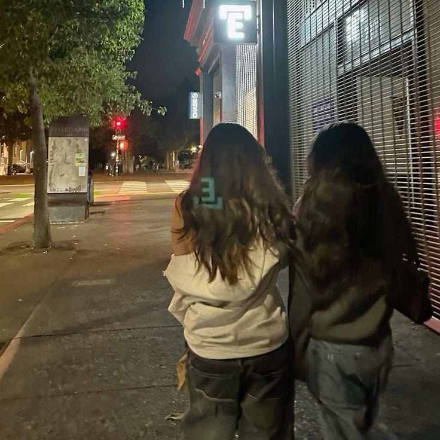
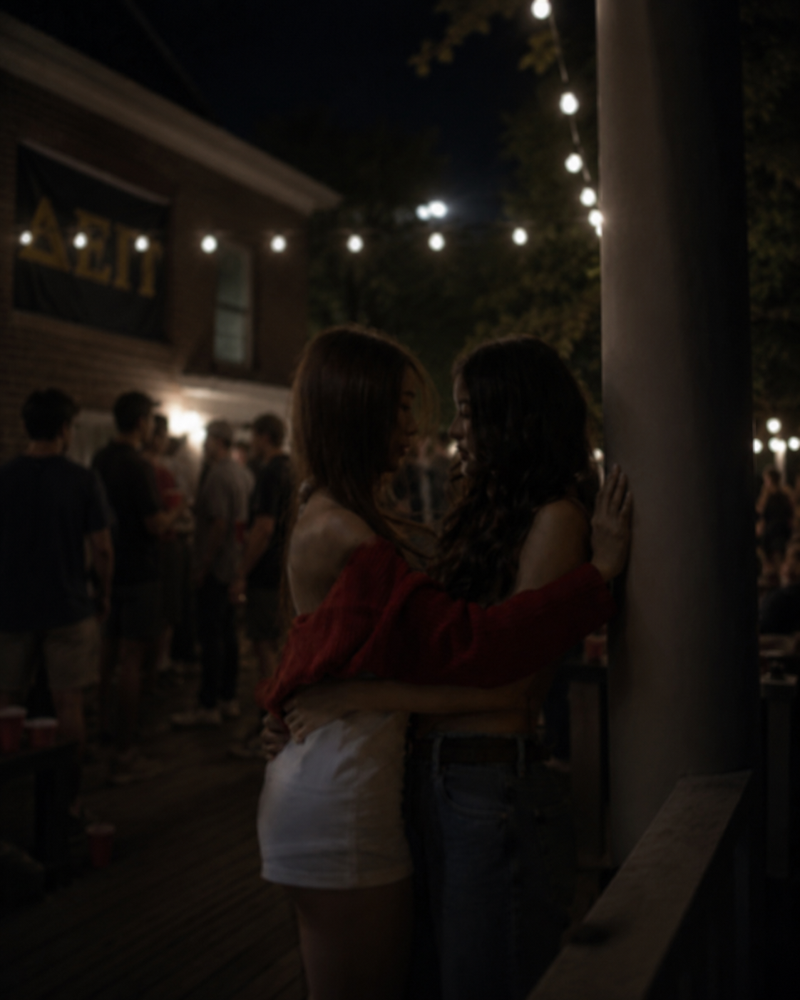
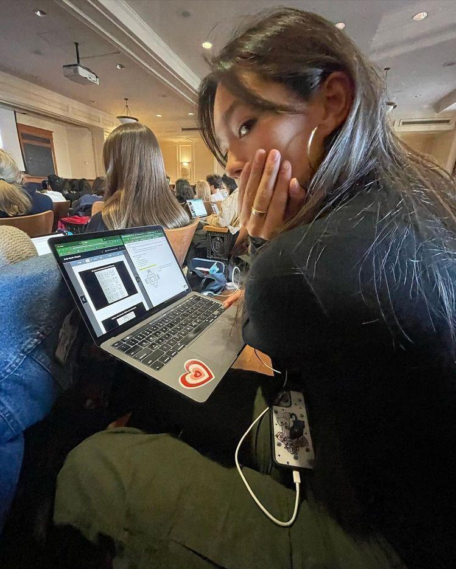
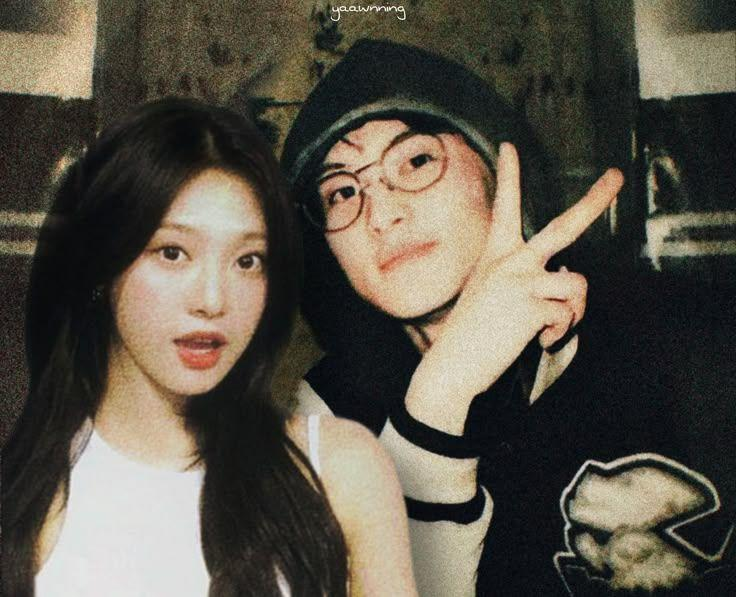
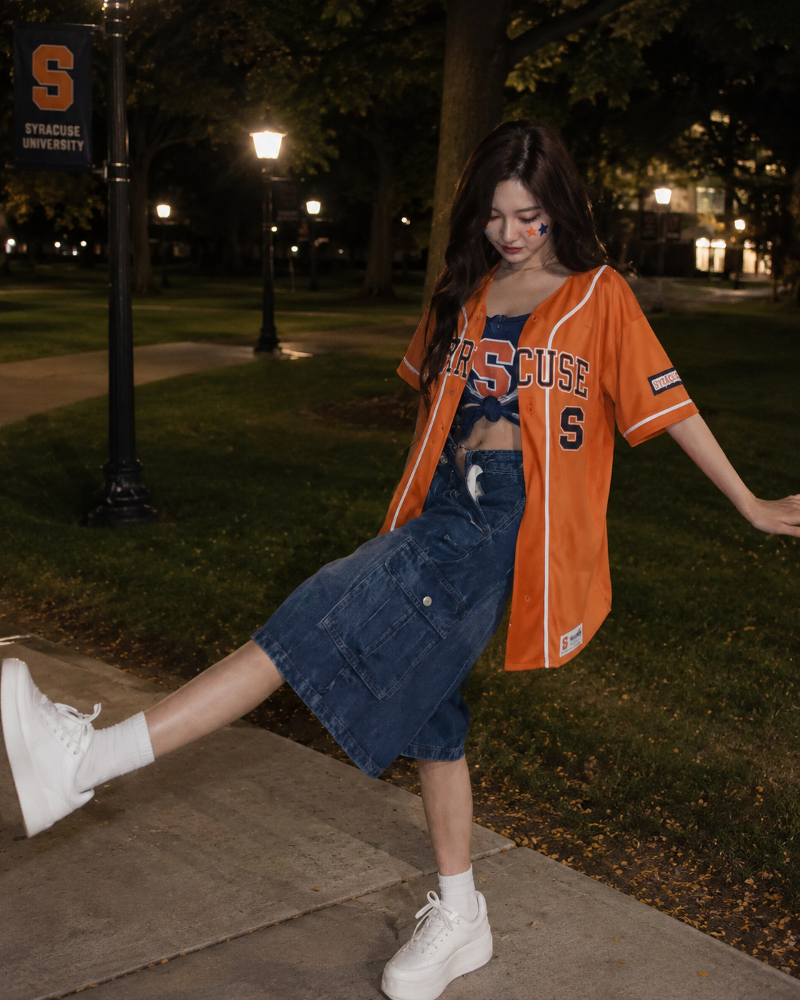
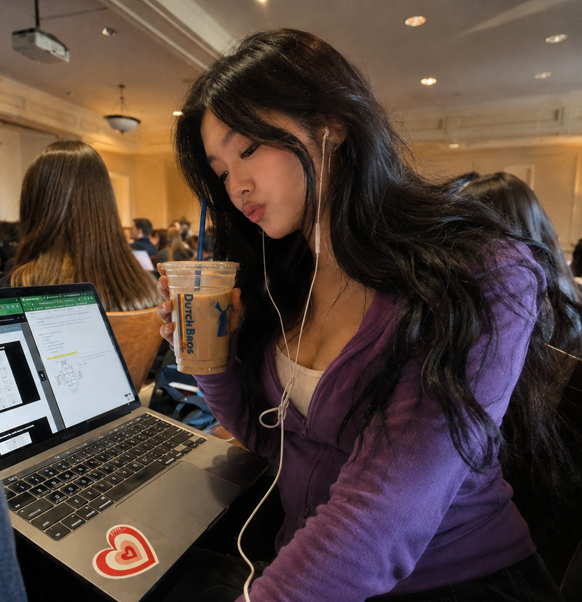
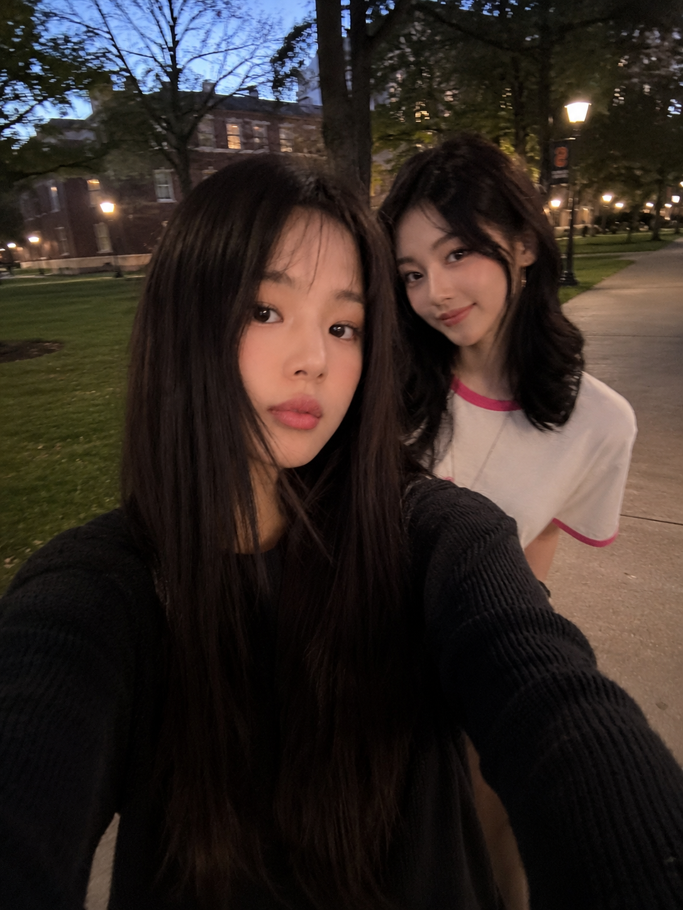
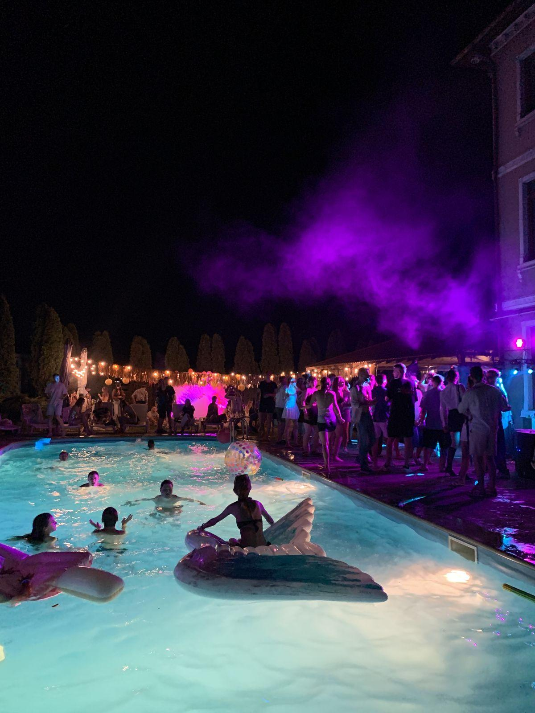
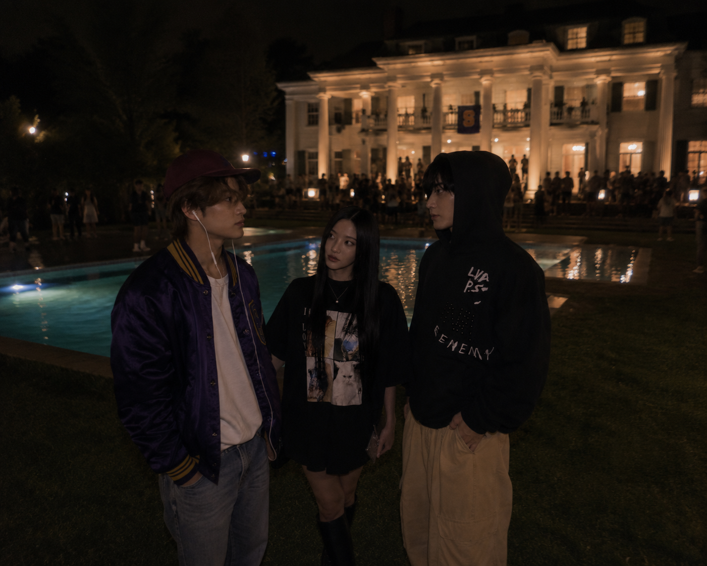
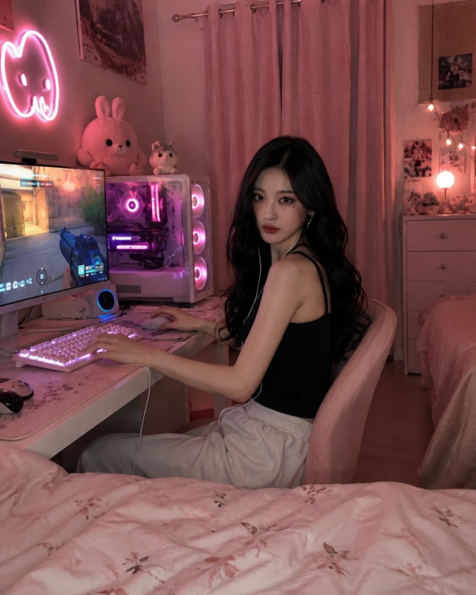

"Are you sure?" her mother's words echoed in her head that day. She remembered the bitter taste in her mouth as she realized the double standard, the slight sense of annoyance she was fighting so hard to not show, the crackle of the thunderous clouds outside the mansion as she stood there in the dining room of her family's home, one that had felt empty for what seemed like ages now. "That sure seems like a mistake, you got into Harvard, sweetie. That's not something just anyone can say."
The girl exhaled deeply, masking and bottling up all of her emotions, the same thing she had learned to do her entire life. Instead, she forces the brightest of smiles on her face, her hands gripping onto her upper arms, hugging herself, as she spouts, "Yes, mother, I'm very sure. It's a good school, even though it's not Harvard. And Jaehyun is there, so I won't be so alone."
At the mention of her beloved older brother, the family's pride, her mother gushed, holding her hands together at her heart as if he was dead. "Oh, you're right, that's the real reason you want to go there so badly, isn't it? So you'll be close to your big brother again?" Her mother's eyes grew soft, and she rose to her feet, walking over to her daughter and wrapping her arms around her in a big hug. "Oh honey, why didn't you just lead with that? If it would help you to be near your brother, I suppose Syracuse could be a great fit for you."
That wasn't really it at all, but once she realized this reason was working better for her mother than literally anything she had said in the last thirty minutes, she decided she'd take it and roll with it. "Yeah, I figured he could really help me get settled," she nods, playing along with the antics, "it's just too scary, the thought of going to a new place all alone."
Her mother pouted, "Oh, I understand, dear. I'm sure you'll do great there with your big brother to guide you. Don't worry, I'll talk to your father about it, if that's what you really want to do, okay?"
"Thanks, mother," Solar accepts her hug, half heartedly, still deciding to ride the ship if it's gets her where she wants to go, "plus, there is a very well-known sorority there."
"Oh, perfect!" her mother cries in utter excitement. This seemed to be the perfect addition, as that was all she needed to hear to completely get over the sadness of her daughter turning down Harvard, of all places. "That's just what you need. I'm sure you would get to work closely with Jaehyun at Sigma Chi."
Solar blew air into her cheeks, struggling to hide the urge to roll her eyes. Another deep exhale, and she forces that smile again. "Exactly, I'm sure they would be happy to have me. I think this is a great opportunity for me, mother."
The words faded into her back of her head, the sight of her mother's smiling face, turning into the tears streaming down her face the day that Solar left the mansion to move into her sorority house. She hadn't lied, Solar hadn't even had to reach out to the sorority before she was invited. The second she had submitted the application to the college and gotten accepted, the sorority reached out to her personally, practically begging for her to join them and how they needed someone like her. Syracuse University was more than ecstatic to say that they now had not one, but both of the Lee siblings attending their university. It was great for press and media, after all. The two siblings of the richest man in the country was no easy feat to have attending your university, especially when they each turned down practically every single Ivy League.
Solar didn't really see it that way. She didn't come to Syracuse looking for handouts or special treatment. More so, she was trying to get away from that. While she understood her brother attended the college, it was the last thing she cared about. In fact, she didn't even care if she ever saw him or not. She actually typically found him quite annoying, herself. Her brother was the family's real pride, she was merely a background character. Lee Industries, her father's company, had been promised to him before she even had a chance to argue. That was how it went though, he was the older brother, he got all of the perks.
"I have big plans for you, too, Solar," her father had told her, years ago, when she was still in high school, "Jaehyun is going to take my place, but I want you to have a hand in it still. You can run our entire public persona, media relations."
Solar had stared at him with the blankest look on her face she could possibly manage. "You mean make sure he always looks good?" she blurted out before she could stop herself. It was not the way you were meant to speak to your parents, but she couldn't help it. She'd been increasingly getting fed up with the favoritism. And the look on her father's face answered her question.
Still, she had chosen the major they wanted her to choose, in her own way. She wasn't proud of it, but she didn't regret it, either. She wasn't going to be a carbon copy of her brother, and she knew that. She was her own person, who enjoyed her own things.
So, she climbed out of the car with a determined look on her face, telling herself that she was going to do things for herself here. This was finally her chance, broken away from her parents, free to live her life how she wanted, even if that meant she was going to stay holed up in her room playing Overwatch. It was about the freedom of it all.
"Thank you, I've got it from here," she assured the driver with a soft smile, who had hurriedly helped her get her luggage from the trunk of the car, as if he was going to get in trouble if he didn't. Her parents were quite strict on their staff, after all. She felt bad enough that they had made him drive her all the way across the state in the first place.
"Are you positive, Ms. Lee? I would be happy to take your bags to your room," the man, Giorno, assured. He was an older man, Italian, someone her father had met during one of his overseas trips and offered a better paying job with luxurious living conditions. It was an offer no one would turn down, and he had quickly become of the top staff at the Lee Mansion.
Solar waved it off, already holding her suitcase by it's handle, with her smaller bag on top, leaning it against her thigh. "It's okay, Giorno, I really want to try to keep a low profile," she shakes her head, one hand shielding her eyes from the sun as she peers around the campus. She was being cautious, she supposed, already worried that there was someone somewhere hiding, waiting to take her photo when she least expected it.
Giorno almost looked a bit sad, but nodded anyway. "Alright, Ms. Lee, I shall get going then," he turns to get back into the car, but stops as his hand is on the handle. There is question behind his eyes, before he looks back up to Solar. "Ms. Lee, I want to tell you, that you're going to do great here. I wish you the best of luck, and I'm sure we will miss your presence around the Upper East Side."
A ping popped into her heart, causing her to pout a bit as she met the poor man's eyes. "I appreciate that, Giorno," she grins sweetly, "I promise I will be back around."
He only nods, before climbing back into the front seat of the vehicle. Solar watched him leave, standing there on the sidewalk on the campus of Syracuse University, her luggage still leaning against her upper thigh. She turned to peer at the huge building in front of her, the Alpha Phi house. There was a lump in her throat that she pushed away, which was weird, because she had never been bad when it came to meeting new people. That was something she'd been doing her entire life, after all. But there was something different about it all, something she wasn't sure about yet. Like her body already anticipated what would be coming.
She shrugs it off, like she always does, and makes her way to the front door, luggage rolling on it's wheels behind her.
-
NEW POST
@SUnews

@sunews: spotted at alpha phi today! star football player jaehyun lee's little sister just touched down for her first semester at SU.
-
"Oh my gosh, hello!" the girl who opened the door had been screeching at her, she almost sounded like a mouse, or perhaps like she was going to pass out, as she was nearly bouncing off the walls as she ushered Solar inside. "You must be Solar, right? It's so nice to meet you!"
"Yeah, hi," Solar offered in return, not being rude, just simply too focused on trying to take it all in. Her eyes wandered the inside of the home, a few girls sitting on couches in the living area, everything was some shade of pink, practically. Photo frames lined every inch of the walls, all of girls dressed in the same uniforms, always smiling, doing things like volunteering or things in their community.
"I'm Hanni," she continues brightly, "do you need any help with your bags?" she hums, her eyes looking down at all the bags Solar was managing with seemingly no issues at all.
The girl had kind of forgotten she even had all of the bags she did, as she glanced down at them before shrugging, "No, it's fine. Can you just show me where my room is?" she cleared her throat, realizing her words came out quite monotone as a force of habit, "Just so I can unwind for a minute, it was a long ride."
Hanni, who was very short in comparison to Solar with thick black bangs lining her forehead, dimples, and the softest smile, nodded eagerly. "Oh, of course, I totally get you!" she agrees, turning and motioning with her hand for Solar to follow her. The two of them walk up the stairs, where another lounge-like area was, with two hallways that had dozens of doors, presumably the different bedrooms. "So, we actually got you your own room, Chungha said it was very important that you get your privacy," she's explaining as they walk down the hallway. Solar didn't have to ask why that was, she already knew it was because of her supposed status. "I'm sure you're tired after your drive, did you drive it yourself? From the Upper East Side, right?"
Her questions hit her like a brick, yet she was unphased, as the two of them stopped in front of one of the dark pink doors. Solar pursed her lips, eyes still wandering all of the weird decor, "Yeah, Upper East Side... you can just call it Manhattan, same difference," she tries to downplay it, but it clearly wasn't working the way Hanni was looking at her like some sort of royalty figure, "but no, my parents have a driver that drove me." She felt gross when she said it, like she was some kind of preppy kid who had to have someone do everything for them.
But Hanni didn't seem to judge her, she just nodded along like it was casual information. "Hey, at least you didn't have to stay awake at the wheel, it's the most boring thing ever!" she was gushing, before slapping her hands at her sides dramatically. "Well, I'm sure you want to get settled in, just let me know if I can help you at all, okay? I'm pretty much always around, I don't really get out much."
She was going to ask her why that was, but decided that Hanni was right, she should get settled first. "Thanks Hanni, I appreciate how kind you've been to me," her words were oddly formalized, she realized. It was something she was still working on, and it was clearly going to take her a minute.
"Course, girlie," Hanni beams, honored by her words instead of weirded out, "let me know if you need a campus guide, I know all the spots!"
Solar returned her bright smile, for the first time since she had walked in, and nodded in agreeance. With that, Hanni spun on her heel and bouncily walked away. She watched her leave, exhaling again, before turning and entering her bedroom.
The room was nothing special, everything was still shades of pink, but it was simply a bed, desk, and a closet. It took her a few minutes to take in all of her things from the hallway, but once she did, she took a step back to place her hands on her hips, already feeling a wave of accomplishment wash over her. Her eyes scattered over the empty, sad walls, and she found herself pondering just what exactly she was going to do with this place to make it feel like hers, especially now that she had freedom.
So, for the next few hours, Solar spent her time unpacking things and organizing her new room. She wanted it to feel perfect, especially since it was going to be her new home for the next four years. This included hanging photos on the walls, putting any accolades on the shelves, and finally, unpacking her beloved gaming laptop, probably the entire most important thing to her that she'd brought. Finally, she could play games as much as she wanted, and no one could tell her otherwise anymore.
The feeling of freedom made her stomach jump with joy. She starts plugging in all of her cords, getting out all of her equipment, mind already thinking about if she'll have good ping here or not.
Finally, when her setup was somewhat there, there was a knock at her door, throwing her out of her thoughts. Though, she supposed she needed to interact with the other girls in her sorority, since she agreed to join it in the first place, though it was just to appease her mother.
Besides, they can't be that bad, she thought, the President, Chungha, gave her her own private room and Hanni was definitely one of the nicest people she had ever met.
Swinging open the door, a new face she hadn't met yet stood there staring at her. She was young, possibly the same age as Solar, she had big brown doe eyes that were peering into her own, and a nervous look on her face.
"Uh, hi," she clears her throat awkwardly, "sorry, I don't mean to bother you, we're having a sorority meeting downstairs, so they thought I should ask if you wanted to join, to kind of introduce yourself and all that." She stumbled over her words a few times, before she sighs deeply at the end, like it had stressed her out having to say that.
Solar smiled, trying to show the girl that she wasn't going to beat her up or anything. "Oh, sure," she pipes, "that sounds cool. I just finished unpacking a lot, anyway."
The brunette girl seemed shocked to hear this, before she slowly grinned. "Oh, cool, okay - well, if you want to follow me, I can show you around on our way there."
"Sounds good to me."
The two of them walk together towards the same stairs she had taken earlier. Beneath them, giggles, laughs, and loud voices could be heard, it sounded like the meeting was actually quite fun.
"I'm Hyein, by the way," the girl shares once they reach the end of the steps, "I'm glad to have someone new join, we really need the new members."
"Oh, well, I'm happy to be here," Solar returns kindly, deciding once again today that she wasn't going to question the meaning behind the girl's words. She figured that she wouldn't tell her anyway, not since they'd only just met one another.
The two girls enter the large living room she noted earlier when she walked in. The couches were all formed into a circle, and tons of girls were sitting on them. Immediately, Hanni offered a dramatic wave with her entire arm, calling for Hyein and Solar to come sit next to her.
The pink couch was soft and plush underneath her, she sent Hanni a small smile as a thanks for how welcoming she continued to be.
Once everyone seemed to settle in, one of the girls stood up, clapping her hands together a single time to get everyone's attention. She recognized her, already, as the President that was mentioned earlier. She was very popular around campus, she already saw her on social media.
"Okay, we have some very exciting news to share for today's meeting," she was gushing as she looked around at all of the girls, "I'm sure you've already all heard due to how crazy things are on this campus, but - we have a new member today, please welcome Solar Lee!" She started clapping, loudly, and the other girls followed suite. Some of them started saying some kind of cheer, or perhaps it was a motto, that Solar did not understand.
All she could do was what she was always taught, plaster a giant smile on her face and bow gently to show her appreciation.
"So, Solar, we are so pleased to have you here," Chungha continues, making direct eye contact with her, "our sorority has had some tough times as of the last term, and we're so thrilled that you've decided to become a part of the family."
Some of the girls make whooping sounds of agreement or yell some random things in excitement. "Thank you," Solar offers, "I'm really honored to be here."
"And everyone, please show Solar some sisterly kindness, the Alpha Phi way!" Chungha announces to everyone, her voice turning stern, which caused some of the girls to immediately nod several times, like they were afraid of her.
After the Vice President, a girl named Chaeyeon, said a few words about the sorority's upcoming plans, the meeting seemingly dispersed. Most of the girls left the house, clearly having bigger plans, or disappeared back upstairs to their rooms. A few of them whispered to each other, looking at Solar and almost grimacing.
"So, you're Jaehyun's little sister, right?"
She almost jumped at how the words came out of nowhere, noticing that there was a girl sitting on the couch next to her, close enough to still be able to talk now that the crowd had dispersed and it was much quieter. Her words weren't necessarily demanding nor suspicious, she seemed curious, more than anything.
So, she decided it couldn't hurt, especially if everyone on the campus seemed to know already. "Yeah," is all she responds with, figuring she would leave it at that.
"That's crazy, what's he like? Does he like... care about anything other than football?" the girl asks next.
"I don't know," she shrugs, "I don't really talk to him."
"Leave her alone, Danielle, what's wrong with you? She doesn't want to talk about her brother!" Hanni leaned over from where she was on the couch still, next to Hyein who was in the middle. Her tone was clearly meant to be stern, but she still sounded as sweet as ever as she pointed an accusing finger at the girl on the couch next to her.
Danielle rolled her eyes, as if she was appalled that Hanni had dared to speak to her. "Alright, chill out, it's not that serious," was all she insisted, rising to her feet and leaving the room before anyone else could say anything.
"Ignore her," Hyein speaks up once the room was pretty much empty except for the three of them, "she's a bully. I don't know why they still let her stay in the sorority."
Her words were harsh, but they clearly had feeling behind them. Solar wasn't dumb, she could easily pick up now that perhaps that girl had something to do with whatever problems everyone seemed to be alluding to.
But, like she thought earlier, she was not here for any of that.
"Don't worry," she assures them, "I've dealt with girls like that before, that was pretty much my entire high school experience."
"Mean girls?" Hanni had asked in curiosity, entirely innocent and just wanting to learn more about her.
"Sort of," Solar explains, "more like, girls that just want to use me to get to my brother."
Both of the girls nod in understanding, oh's leaving their lips as they process that. "Sorry, that's not right," Hyein frowns sympathetically, "they deserve to be punched."
Her words caught Solar off guard, and she found herself laughing from how serious she was about that fact. Hanni had slapped Hyein's arm, "come on, don't say that, Hyein. You can't just say stuff like that!"
"You're not entirely wrong," Solar tells Hyein lightheartedly, who takes that as a win, as she turns to Hanni saying see?
Hanni just shook her head in disbelief.
Solar had rose to her feet in the meantime, stretching out her arms and looking out of one of the giant double windows that lined the living room. "I think I'm going to go take a walk," she turns to inform them, "just by myself, take in the campus, you know?" She noticed the girls looked a bit down that she was leaving and not inviting them. So, she pulls out her phone, "here, do you guys want to share numbers?"
That seemed to cheer them up.
"Of course!" Hanni screeched first, already pulling her phone out of her back pocket.
It seemed Solar Lee had made some new friends already.
-
"Dude, there's no way, that's got to be a joke," the boy was hushing the other, scoffing like the one who just told him such information was an absolute nut job. He didn't even bother to look at him as he continued digging through the cupboard in the kitchen, immensely focused on such a task, as he wanted to desperately find whatever he was looking for.
"Well, it's not, you better fucking believe it, bro," the other guy insisted, leaning against the counter next to him and pulling his phone out of his pocket. His thumbs angrily tapped away at the screen for a few seconds, before he pulled up an Instagram post, turning the phone to face the boy next to him, who heaved out a deep sigh of annoyance as he turned to look at whatever he was showing him.
That was, until he read the account the post was from and the caption, before his eyes scanned over the picture a few times. With that, he let out a blunt, dumbfounded, "oh shit, dude."
"Yeah, oh shit, dude!" Jeno cried in response, "Look at her, man, how the hell is that Jaehyun's little sister?!"
Jaemin seemed to take this question very seriously, as he took the phone from Jeno's hand to look down at it again in contemplation. He was now leaning against the counter like Jeno, one hand tapping his chin in thought. "Hm, well, look at the guy," he finally shrugs, "he's the star of the football team, course his sister's going to be hot. What did you expect?"
"You guys need to watch what you say around here, seriously," one of the other members was deadpanning as he entered the kitchen. He, as always, had the most uninterested, blank, lifeless look wiped across his face.
"Oh come on, Renjun, don't act like you don't like to talk about hot men... or whatever you do in your free time," Jeno defended.
The short boy just shook his head, a deep sigh leaving his lips as he reached for an apple in the fruit bowl on the counter. He was used to it, yet it didn't make it feel okay. "Don't try to justify it, Jeno," was all he says in response, his voice remaining cool and even as if nothing bothered him, "imagine Jaehyun hears you, then what are you gonna do? Feign ignorance?"
Jeno didn't even think. "Yeah."
Renjun rolled his eyes, something he couldn't seem to stop doing whenever he was around these two. "Let me tell you, it wouldn't slide with him."
"What's the deal, though?" Jaemin asked, not exactly on the topic of Jaehyun's little sister being hot anymore, but just Jaehyun's little sister in general, "He's never mentioned her, you'd think he'd mention that his little sister was coming to this school and that she'd be in our competition, you know?" It was a decent point. This wasn't exactly the biggest deal around, but it was significant enough that pretty much everyone on campus seemed to be talking about Solar's arrival and the fact she was a member of Alpha Phi. Not that the sorority and fraternity were enemies, but it also wasn't like they exactly got along, either.
But the short boy, who took a bite of his apple and chewed for a minute, didn't really have the answer to that. "How would I know? I'm just the secretary, Jaemin."
"Hey," another voice joined the conversation, sneakers clicking against the tile, like he always had somewhere to be and was so eager to get there, "yo, what are you guys talking about? Seems tense in here." He stopped to stand at the end of the center island in the kitchen, next to Renjun who was still nonchalantly eating his apple like nothing was going on.
"Jaehyun's little sister," Jeno immediately fessed up, just like the drama starter he tended to be, truly a man that would never pass up an opportunity to talk about an attractive woman. When the boy next to Renjun makes no expression, he went on, "no way. You really haven't heard?"
He shrugs, "I've been busy in the music room, you know I don't mess with all the campus gossip."
"Jeno wants to crack Jaehyun's little sister," Jaemin explains so Jeno didn't open his mouth again, "she's something special, for sure, but I'm not trying to get kicked out, unlike this guy." He pats Jeno's shoulder, quite hard.
"And I'm telling them to shut the fuck up," Renjun adds, as an explanation for why he was involved in such a conversation.
"That's a good thing to tell them," Mark nods in agreement, and that was it. He grabbed an apple from the bowl next to Renjun, before spinning on his foot and making his way back into the entry room, heading straight for the door.
"God, you guys are all so boring," Jeno was muttering under his breathe as he picked his phone back up, going back onto his social media to keep reading about the campus gossip he seemed to enjoy so much, "I'm sure Haechan would love this."
"Yeah, nice try, dude, you know he's more of one for the easier ones," Jaemin disagreed, turning back around himself to continue digging through the cupboard of alcohol.
"Who says she isn't easy?"
"Okay, first of all, look at her... second of all, do you think Jaehyun's little sister would be anything other than a pain in the ass?"
"Huh, fair point."
"Exactly, now has anyone seen the damn Fireball?"
The low profile college persona clearly did not work out in the way Solar had hoped. Everyone and their mother already knew who she was, it was everywhere, all over social media thanks to the University's infamous gossip account. While it wouldn't be a huge deal otherwise, Solar could feel the increasing amount of stares she was receiving as she walked down the campus sidewalks, trying to just mind her business and take in the scenery, get a good sense of where she would be spending all of her time now.
But, it was like every single person was invested in her. As if the staring wasn't bad enough, people would look at her, then turn and whisper to each other, some even tried to sneakily raise their phones to take photos of her. She was beginning to feel self conscious, as she stopped next to a tree in the valley of grass, one that had a fountain in the middle and a few benches, looking down at her outfit.
Was there something about her that screamed rich and privileged? She found herself thinking, or was it the mere fact that she was Jaehyun Lee's little sister?
She was beginning to wonder if it was a horrible idea to enroll at the same college as him, mentally cursing herself, but more so, mentally cursing her older brother for seeming to cause her issues no matter where she went.
Huffing out a sigh, she leaned against the tree for a second, before she decided to take off her shoes. They were high heels, she didn't know why she was wearing them, Louboutins her mother had gave her for her sixteenth birthday. The red bottoms stuck out like a sore thumb, she realized as she held the heels in her hands, God, this is not what a college student dresses like. What am I doing?
Suddenly, it all seemed to make sense. She realized that everyone automatically knew who she was because, yes, her face had been plastered all over social media, but also, because she looked like what they were expecting to see.
A pout spreads over her lips as she leans against the tree, holding her red bottomed heels in her bell bottomed jeans and Chanel crop top and realizing that she was indeed perhaps the rich, preppy kid that everyone had always painted her as.
She had to get away from it.
Just as she stood up from the tree, planning to head back to Alpha Phi to change into the most basic, relaxed looking outfit she hopefully owned, but as soon as she looked up, there was someone standing in her way.
She exhaled deeply, visible distress written all over her face. At least, her inner thoughts assured her, it's a guy, they're surely not going to ask how to get on a date with your brother.
Though, she supposed that it still wasn't impossible.
"Yo, hey, sorry to stop you," the guy puts his hands up, a light chuckle leaving his lips. His brown eyes sparkled underneath the sunlight peeking through the branched leaves of the trees, "I was on my way to..." he stopped himself, seeming to mentally note that she probably didn't care about that part, "you just looked a bit down, that's all. I noticed the way people were whispering and pointing at you, that's not cool at all. I'm sorry about that, you're new, right?"
Solar was dumbfounded, the look disappearing from her face as fast as it came. She stood there, in the dirt of the grass valley, holding her $5000 shoes in her hands like they were a curse, staring at this slightly taller boy in front of her, with light brown hair covering his eyes, pale skin, and a white t-shirt hanging loosely off his shoulders.
"Yeah," she clears her throat finally, "first day has been interesting, to say the least."
He laughed again, it came out lighthearted, with a hint of sympathy underneath. She didn't know who this guy was, or why he was talking to her, but she guessed she didn't exactly mind. He seemed carefree, chill, a rather normal person compared to the other energetic or just oddly suspicious people she had met today.
"You'll get used to it," he assures her softly, after a second, sticking his hands in his pockets, "though, usually people aren't that weird about new students."
"Oh, yeah," she sighs again, leaning back against the tree and letting her back slide down it until she was on the grass, "unfortunately, it seems my reputation has followed me here." She informs him, deciding that he seemed nice enough to share a brief amount of her misery with.
The mystery boy didn't seem bothered by her share, as he took a step forward, and sat onto the grass across from her, folding his hands in his lap. "Reputation, huh? Are you famous or something?" he joked, as if he had no idea who she was. Solar could tell, she couldn't imagine there was anyone at the school that didn't know her by now.
Still, she played along as she dramatically announced, "Not exactly, my brother happens to be the all-so-amazing, perfect all-star athlete, Jaehyun. I'm sure you've seen him prancing around like he owns the entire campus."
He laughs again, though it came out like more of a giggle. It was like he thought she was really funny, or maybe he had just never heard anybody actually talk shit about Jaehyun Lee. "How do you know he's walking around like that if this is your first day?"
Solar scoffed, "I mean, come on, have you seen him?"
"Yeah, I know him, actually," he admits after a moment of thought, his hands nervously picking at the grass besides him, eyes too focused on it, "he's uh, he's the President of my frat."
Her eyes widened a bit at this. She thought surely, this guy couldn't be one of those. Not that she knew anything about Sigma Chi, not yet, but from brief words with Hanni and Hyein earlier, it sounded like they weren't exactly stellar. Solar couldn't say she was surprised to hear that her brother was the leader of a fraternity that just cared about throwing parties and doing drugs. Not that he'd ever done those things, from her knowledge, but from how much she wanted to dislike him, she decided the shoe fit.
"Oh God, no way," she's groaning, burying her face into her knees that were pulled to her chest, like this was the most agonizing news she had received the entire day.
"Whoa, chill! I promise I'm not like that, I'm sure Alpha has already given you the rundown of how things are over there," he hurriedly splutters, "I'm a newer member still, you know, not really that deep into it."
"Right," she hums, not really believing him but enjoying the conversation enough to keep it going, "so what? You listen to every word my brother says?"
He chuckles again, something he seemed to be doing quite often since they started talking. "I try, but doesn't always work out that way," he converses, "Jaehyun is a stern guy, he likes things done the way he wants them, you feel? I'm not one to argue, I guess. I just mind my own business."
"I can understand that," she nods, "he's not worth arguing with, take it from me."
"Hey, I believe you."
Solar looks up at the sky as a comfortable silence overcomes them, pursing her lips as she thinks about the day she's had. Still, she hadn't walked around campus yet like she was planning to, she was still close enough that she could see the Alpha Phi house in the distance.
Her eyes fall back on the boy sitting across from her, the member of her brother's fraternity that still hadn't told her his name. Her brain runs through a few routes she could take, before she decides on one. In a swift motion, she jumps to her feet, picking back up her shoes that had been next to her in the grass.
"Do you know your way around this place?" she asked him in a rather demanding tone, catching him off guard as he slowly climbed on his feet to stand in front of her, dusting the grass off his jeans.
"Uh, yeah," he's muttering, "I would say so. Mainly, I just know where the music room is, that's where I spend most of my time."
She rose a brow in curiosity. "Really? So what, you're a musician?"
He seemed to perk up at her question, like he'd been waiting for her to ask and was thrilled at the sound. "Something like that, my major is Music," he explains, "they always say to dream big, you know?"
"That's cool, though, it's important to do something you enjoy," Solar's words were shockingly sincere, causing him to smile at her like he hadn't expected something so nice. "So, we have a music room here, huh?"
"Yeah - oh, if you want, I can show you around?"
"That'd be great," Solar agrees with that same soft smile she had been wearing all day.
So, the two of them walked back to the sidewalk, and towards one of the large buildings that decorated the campus in the most elegant, vintage architecture. They walked close enough to continue freely talking, but not close enough to be touching. As they passed other students, the whispers continued, the pointing continued, but Solar didn't really notice it as much anymore. She was too focused on the conversation she was having with the very friendly boy she'd just met.
"You seem really interested in music, do you play?" he'd asked her as they entered what he'd described as the Extracurricular Building, a building with several floors, lined in all sorts of activity and hobby rooms that were used for various things. He held open the door for her, which she noted as something nice she was always told to look out for.
"Mm, I sing," she hums casually, not making eye contact with him anymore because her eyes were busy wandering around the huge building they were walking through. She was focused on reading all of the signs that talked about the different things offered, painting, film, pottery, dance... Everything she could think of, there seemed to be a room for. She'd never seen anything like it.
"Really?!" he was blatantly thrilled, "No way, you're just as talented as Jaehyun, huh?"
She snorted a humorous noise, shaking her head at him. "I'd say more, but sure."
"Yo, she's got some bite," the boy giggled in response. She had stopped in the middle of the first floor, where you could glance around at all of the different rooms, as well as look up to see the other different floors. It was quite the sight, even for someone like her. "I'm Mark, I don't think I, uh, told you that yet."
He indeed hadn't, she processed as she looked back at him. He was still staring at her, and probably had been the entire time. Though, she was growing used to the constant stares today that she didn't think much of that look in his eyes. "Mark," she repeats his name once, as if to cement it into her memory forever, "do I need to tell you my name, or have you already heard?"
Mark was caught off guard again, hesitating a bit, something flashing through his eyes, like he wasn't sure if he should lie or not. Awkwardly, he scratched the back of his head, "Well, yeah, I heard but, uh, it'd still be nice, if you don't mind..." He trailed off, like he was doubting every single word that left his lips.
As Solar stared at him, she couldn't help but let out a laugh, the first real laugh he had gotten from her. It seemed to motivate him, as he straightened up a bit, like he was proud of it. Shaking her head in disbelief, she finally offers, "Solar."
"Solar," he repeats her name aloud like she had his earlier, "like the solar system? That's pretty cool, your parents space nerds?"
Aish, what was wrong with this guy? was her first thought, before something subconsciously told her to look internally. Her eyes subtly glance down at the heels she's still holding in her hands, she was walking around her campus barefoot. Maybe she didn't have much room to talk.
"No," she corrects, the smile still playing on the corner of her lips, "I wish I could tell you they were that cool."
"Aw, they can't be that bad, right?" he was humming casually as they start walking again.
More so, Solar's eyes had seemed to catch something. From her peripheral, she noticed certain colors flashing from through the windows of one of the rooms. She couldn't help herself before she turned her head to search for where the glare of colors was coming from.
It didn't take her long to find it, she could spot those RGB colors anywhere. Mark mindlessly followed her as she made her way across the large grey floor, until she stood in front of those two wide windows where the RGB light was reflecting from.
She was in awe, once again. Before her was a beautiful, ginormous, brand new gaming facility, she could tell from the blatant impressive specs of the PCs that lined the desks. Solar wasn't exactly a computer nerd, but she knew what a modern PC looked like, especially with the new generation NVIDIA release. Her hands touched the cold glass of the windows, as if she could reach through and touch them for herself.
Mark, who was just lingering next to her, watching her nearly probably kiss the window in desperation for one of those computers, cleared his throat, "Uh, you play games? I heard they just built this thing, Syracuse decided they wanna get in on the eSports scene and all that."
Her head whipped to him the second the word left his mouth. "No shit?" she blurted, not trying to mask her excitement anymore, it was too late for that. "Yeah, I'd say I do a lot more than just play," she brags, stepping away from the glass of the dark computer lab to walk up to the door.
And there, on the door, was a basic sign that gave her all of the answers she seemed to be searching for without realizing.
Syracuse University is thrilled to open it's brand new Gaming Lab!
With the expansion of our new lab, Syracuse is expecting to branch into several new eSports leagues to show the talent of our wonderful school.
If you are interested in trying out for one of the teams, please read on below to see what we're offering and how to sign up! Let's make our voice heard, SU!
Below the paragraph, were lists of all of the games they would be having a team for. Solar squints her eyes, rolling over all of the boring, basic games she didn't care for. League of Legends, Rocket League, CS:GO... Until finally, her eyes spotted it.
Mark was engrossed in watching the bright joy that spread over her face. She balled her fists in front of her chest, shaking them a few times to get out the pent up energy she now had. It was right there in front of her, after all. She found the first thing she wanted to pour her newfound freedom into, one thing her parents would've never allowed if she was still under their control. But she was free now, free to do whatever her heart desired.
And right now, she realized, it was to be on the Overwatch eSports team.
"This is perfect," she's mumbling to herself in a high pitched voice, taking her phone out of her pocket to type in the try out information so she could join the Discord server later. Once she finishes, she turns back to Mark, who had the smallest grin on his face from watching her spazz out over something so nerdish. "They have Overwatch," she informs him, as if he hadn't just watched her entire meltdown, she points her finger to the name of the game on the sign, "See? I can't believe it, this is so fucking cool."
"Overwatch?" he mimics her saying of the name, eyes glancing from the sign back to her, "I haven't heard much about it, my best friend loves it, though. I'll take a wild guess that you're not exactly average?"
"If only you knew how right you were," she exhales at him, day dreaming about how perfect this was going to be.
Suddenly, she didn't care about anything else, not her annoying older brother that she hadn't seen yet, not the weird girl at the sorority, not all of the odd students that kept looking at her. No, her only concern was making sure she was as ready as ever for these tryouts.
Mark opens his mouth to say something, but Solar beat him to it. "I've gotta go, Mark, I'm sorry," she hurriedly tells him, "I have to go practice, the tryouts are already happening tomorrow!"
"Yo, shit," he gawks at that information, entirely understanding, "Yeah, you better make sure you're on your A game."
"Oh, I will!" she was already jogging away from him, turning to call back, "hey, if they stream it, make sure to tune in, okay?!"
And just like that, she was gone. Mark watched her walk away with a small smile remaining on his lips. He realized, he may have just gotten the biggest opportunity of his life.
So, Solar Lee would spend the rest of her night playing Overwatch, like there was no tomorrow. But she knew very well that there indeed was, and it was what suddenly felt like the biggest moment of her life.
She'd briefly talked with some of the sorority girls when she'd gotten back that evening. Hanni and Hyein were hanging around upstairs in the small lounge area outside all of the bedrooms, and they were excited to see her when she arrived back from her outing. Hanni had immediately noticed her carrying her shoes instead of wearing them, and asked out of concern, "are you okay? Did you break your shoes? They have some horrible potholes in the paths!"
"Oh, no, I just felt a little stupid walking around in these," she shrugged.
"Well, did you enjoy the campus? I'm sure you met a whole lot of weirdos," Hyein had asked next.
"It wasn't so bad," she assured them, to which both of their faces looked relieved to hear. "I met a guy, actually, he was surprisingly really nice."
The two girls squealed like school children, exchanging looks that said no way, before turning back to her with their full attention. "Who was it?!" Hanni was crying out in desperation, eager to know the man's name, presumably so she could create a ship name.
Hyein, had pulled out her phone, opening her Instagram and scrolling for a minute. She was clearly looking for something and expected to find it. After a second, a grimace took over her expression, and her eyes nervously look up at Hanni.
Hanni, on the other hand, had been staring at Solar, waiting for the answer. When she notices Hyein looking at her, her eyes wander, "What? Why are you looking at me like that?"
The girl slowly holds the phone up to Hanni's face. She blinks a few times as she looks down at it. At first, she didn't think it was real, until her eyes landed on that ridiculous username.
@SUnews: looks like the baby lee sister has already met a special someone, and it's only her first day!!
Slowly, her eyes look back up at Solar, who had just watched the entire scene unfold before her in complete blank confusion.
"Um, so you know how we mentioned this place is kinda crazy?" Hanni nervously spouts.
Hyein, deciding she wasn't going to sugarcoat it, turns the phone screen towards Solar. She has to bend down to peer at it, reading the dumb caption that was paired with a somewhat blurry photo of her walking through the Extracurricular Building with Mark. Solar's eyes scan over the post a few times, seeing how much interaction it's got, before she purses her lips in thought for a moment.
"Don't worry about it, they do that to everyone," Hanni tries to comfort her, "well... not everyone... just, the more prominent people. You're kind of a celebrity right now."
Hyein was still looking rather worried, she looked at Hanni again before turning back to Solar. "But, Solar, I would be careful around those guys," she warns, her brows creased downward, showing she was genuinely concerned about this, "I know it's your brother's frat, but, they don't have the best reputation around here."
"I know we talked about it a little bit earlier," Hanni chimes in, "we're not telling you what to do, we just want to make sure you have the best experience here!"
Solar considered their words for a moment. She thought back to what she had briefly heard about her brother's fraternal earlier, how even Mark talked a little bit about how weird some of them were, about how stern her brother was and how he always had to have things the way he wanted. She thought about the way he truly laughed when talking to her, how she showed real interest in the words she said to him, about the way his hair would fall in his eyes every few seconds and he would nervously tilt his head while blinking at her, trying to maintain the eye contact.
"I get it, thank you guys," she finally smiles down at the two girls, "I know how these types of guys work, you don't have to worry about me." She turns to head towards her room, reminding herself that she had to practice, before deciding to add, "oh, and the whole social media thing isn't a big deal. Some people just have nothing better to do."
With that, she turns around and heads into her bedroom, gently shutting the door behind her. Hanni and Hyein are left to sit there in the small lounge area, exchanging a few glances while they process the entire conversation that just happened.
Hyein shrugs after a moment of thought, "I mean, she is Jaehyun's little sister."
Hanni was pouting a bit out of concern, but finally nodded in agreement, "you're right, I'm sure he would never let any of those guys do a thing to her."
Solar hadn't thought much more about the interaction. She decided that her alarm would've been ringing internally if something was off about Mark. And to her, he seemed like a genuine guy. Plus, just because she walked around campus with him didn't mean that she was suddenly going to become his best friend.
After all, she had bigger things to attend to.
That was what she told herself, at least, as her hand flicked the mouse atop her mousepad. The kill feed was pure blue, showcasing her somewhat effortless flicks. Though some may say her sensitivity was too high, she only ever took that as a challenge. That was the thing, Solar Lee took everything as a challenge. There was nothing she loved more than proving people wrong.
-
"Who was on trash duty this week?"
"Jisung."
"Hey, fuck you, how are you gonna snitch instantly?" the boy next to the snitch had cried, Jisung, slapping the other guy's shoulder in offense.
That was, until he caught the eyes of the rather serious Jaehyun, who was standing rather than sitting, in the middle of the room where everyone sat. He had a completely emotionless expression on his face, though that was always what he looked like. He was the most sought after guy on campus, yet he never seemed to smile.
"You need to make sure you're doing your chores," he urges firmly, "I get they're not as exciting as the rest, but it's important we stay on track or we'll face repercussions as a fraternity."
"Of course," Jisung gives in, nodding in compliance, "My bad."
Jaehyun just sighs, like he was tired of doing this, dealing with a bunch of idiotic kids that only cared about the next big party they were going to throw. "As for this week's party, because I know that's all any of you are concerned about," he continues, crossing his arms over his chest, "keep it casual this week, low profile. I told you all I'll allow the parties to continue, as long as the Dean doesn't catch word of them again. Are we clear?"
"Yes!" All of them seemed to yell in unison.
"I mean it," he sternly states, "Do not invite the entire campus, in fact, I would even recommend you invite more cordial students."
"What does cordial mean?" Jeno raised his hand, causing everyone to start snickering at him.
"People that matter," Renjun answers first.
"So, like, who?" Jeno asks another question instantly, because he was someone who never had a single thought before it came out of his mouth. When no one says anything immediately, he spouted out again, "Like Alpha Phi?"
Everyone in the room, even Johnny and Yuta, gave him the most irritated look they could muster. Some of them actually looked afraid for him, as if Jaehyun was going to pick him up and abolish him right there in the living room. No one had really had the guts to mention his little sister's presence to Jaehyun himself yet, after all. They weren't sure if it was a sensitive topic or not, no one really knew him that well.
But Jaehyun was unbothered. He just stood there with his arms crossed over his chest and his sunglasses on inside, before monotoning, "Yes, they would be an example. Alpha Phi remains on the Dean's good side, so it could work in our favor if we start collaborating, to get back into the Dean's graces."
And he definitely did not mean what all of them were thinking. Once Jaehyun adjourned the meeting and left, the boys all exchanged looks with each other, eyes wide.
"Yo, we have to get his little sister to come," Jeno was gushing, "I have to tap that."
"Dude, he literally just left, he could still hear you," Renjun snapped at him, already irritated.
"No way she would come," Jaemin waved his hand in dismissal, "she doesn't seem like the type, Jeno, none of those girls do."
"You never know until you try," Jeno shrugs.
Meanwhile, Mark had just entered the building. He was late, and he knew it, he knew he was going to probably miss the weekly meeting. It wasn't that he intended to miss it, but he'd gotten distracted talking to Solar to the point he figured, so what? What was the worst that could happen? Plus, if Jaehyun asked, he'd just be honest and say it, I was with your sister, showing her around. There was no way he'd have a problem with that.
He couldn't lie, even if he felt bad about it, he was feeling a bit of power due to his new connection and the new possibilities it seemed to open for him.
As soon as he closed the door behind him, kicking his shoes off and taking a deep breath, he noticed a certain someone padding down the stairs. His eyes were tired, but it was the last thing you'd notice, thanks to the impeccable way he tended to present himself. His hair was perfectly parted in the middle, honey skin glazing as he reached the bottom of the steps.
But then he noticed his eyes, he was high out of his mind.
"Should I even ask?" Mark spoke first when his friend's eyes landed on him, "What girl was it this time?" His words were meant jokingly, lightheartedly, for the most part.
The boy yawns, like he'd just woken up from a nap. "Huh? Oh, I don't know," he deadpans, rubbing one of his eyes, "some random chick from my Chem class."
Mark snorted, "You've gotta stop this, man. Won't be long before no girl on campus wants to talk to you."
"Right, as if that day will ever come," he chuckles, cockily, "I don't think they'll ever get enough. That chick from a month ago is still leaving me letters at my seat in Algebra. It's fucking weird, dude."
"You're something else, Haechan," he shakes his head.
Haechan just flashes him that smile of his, before he makes his way into the kitchen, probably for something to eat since he just woke up from his nap. Mark didn't even want to imagine what his room probably looked like since he had a different girl over pretty much nightly. With an exhale, he turns and enters the living room, where most of the guys were still hanging around after the meeting.
"Well, look who showed up," Renjun raises a brow, "too busy for the meeting today?"
He obviously didn't need to ask that question. Before Mark could even open his mouth, Jeno piped up, "Great that you're here, Mark, you need to get Solar to come to our party this Friday!"
Mark sighed as he plopped onto one of the couches, spreading out his arms and leaning back into the cushion. "Jeno, why the hell would I do that?"
"He thinks she's going to fall for his charm," Jaemin hums from beside Jeno, "or lack thereof, you know."
Mark scratched the back of his neck, pondering for a second what the right words were to say. "Uh, really don't think it's her scene," he mumbles out, "plus, I don't think he'd be happy to see his little sister at one of our parties."
"But he said to invite Alpha Phi," Jeno defends in a whiney tone. He was convinced this was of deep importance, apparently.
Mark was shocked to hear that, he didn't actually believe him until Renjun spoke up to confirm that's sort of what he said.
"I don't think so," he finally decides, trusting his gut on this, "she wouldn't come, trust me, dude."
Meanwhile, Haechan was leaning against the door frame of the kitchen that leads into the living room, just hidden enough where none of them could see him. He had been focused on finding something to eat, but once he heard word of the conversation happening, he couldn't help but eavesdrop. Though he didn't know who they were talking about, he couldn't help but be curious. He was never one who used social media much since his notifications were always flooded, it was too exhausting for him to even think about dealing with all of the DMs, that was, until he needs a new fling.
Solar, the name repeated in his head.
What an interesting name.
Thursday came with no mercy, and Solar sat up in bed with one clear mission in her head: tryouts. Luckily, since she had moved into her dorm a bit early, her classes didn't start until Monday. That meant she had the entire day to practice until the tryouts this afternoon.
Though, the first thing she did was stretch out her arms, sitting up against the headboard of the oddly pink bed. Her arm then tiredly reached over to grab her phone off the nightstand.
PRIVATE MESSAGE FROM @markylee
Tap to allow.
@markylee: hey sol
@markylee: sorry i didn't mean to call you that it kinda slipped
@markylee: is that ok? lol
@markylee: sorry for spamming. omg
@markylee: i wanted to tell you it was nice meeting you, i didn't get to say that yesterday
@markylee: good luck on your tryouts, the eSports team does stream them
@markylee: i'll be cheering you on
@markylee: that's all. you don't have to reply if you don't want to
Solar stared down at the string of messages for a while. She wasn't really concerned about how he found her account, since it was just her name. Actually, she kind of found them sweet, in an awkwardly endearing way.
After pondering for a second, she sat up straighter in her bed, tapping the allow button before her thumbs started flying across the screen.
@sollee: hey, thanks, that's really nice of you
@sollee: not that i need anyone cheering me on because i win this in every universe but
@sollee: thank you anyway, mark! the frat boys aren't so bad after all i guess
@markylee: eh i wouldn't say all that now
@markylee: it's just me, honestly, and maybe renjun
@markylee: oh and chenle, but he doesn't come around much
@sollee: dang aren't there like 10 or so of u guys? ur telling me the rest are terrible
@markylee: kinda, yeah
@markylee: they're my friends but i can also be honest
@sollee: well thanks for the honesty
@sollee: now i'm just wondering what kind of people my brother spends his time around
@markylee: yo well, he usually isn't there much
@markylee: he mainly hangs out with his football buddies rather than the frat
@markylee: minus jeno, since he's always with jaemin
@markylee: omg sorry idk why i'm mansplaining the frat to you
@markylee: i'm sure you're trying to practice mb
@sollee: not yet, i have a lot of time on my hands cus my classes dont start till monday
@sollee: i came to campus early
@markylee: oh, early bird huh?
@sollee: nah i just saw an out away from my parents and decided to take it lol
@markylee: hey i get that
@markylee: well i think su will prove well for you
@markylee: and i'm happy to help make sure it does
@markylee: if you want, you know, no pressure or nothing
@sollee: sure, that sounds cool to me, mark
@sollee: even tho idk what u mean
@sollee: i gotta get to practicing now tho, talk later
She set her phone back down on her nightstand, deciding that if she kept texting him she was going to waste away the rest of her day. But, just as she turns to turn on her laptop, her phone buzzes again.
Of course, she figured it was Mark just responding to her message. Her curiosity got the best of her, though, she couldn't help but look. However, the small smile that was on her face slowly faltered the second she picked it up. The last person she wanted to talk to was indeed her older brother Jaehyun.
Blowing air into her cheeks, she exhales as she peers down at the message from the number. Not through Instagram, because you'd never catch her beloved, perfect brother using something as measly as that.
big bro:
Are you settling in alright?
sol:
wow, so he DOES know i'm here
big bro:
Don't be ridiculous, father called me weeks ago to tell me you were coming. I just didn't know exactly when.
sol:
course he did
big bro:
Do not be hostile, Solar. You know I just want to check on you.
sol:
so u can report back to father? ya i'm sure u do jae
sol:
i just wanted to start fresh yet the second i walk onto campus it's like ppl think i'm a worldwide celebrity
sol:
come to find out it's not even just cus i'm rich. i could deal with that. it's cus my older brother is the allstar football player
big bro:
Look, Solar, you knew I went to school here. You can't blame me for being good at what I do.
sol:
no i can't but i can end u if u report anything back to father
big bro:
There's not much you could do that would make me feel the need to do that.
big bro:
I'm simply making sure you're settling in ok. I know some of the individuals on campus can be rather difficult.
sol:
i've heard about those. aren't they literally under ur control?
sol:
maybe i should report to father the kind of stuff ur fraternity is doing
big bro:
Get rid of the hostility, I mean it, Sol. I'm not your enemy.
big bro:
They don't necessarily listen all of the time. I'm the President, but I can't spend every waking moment of my time babysitting a bunch of grown teenagers.
big bro:
Football is an important commitment.
sol:
so they just do whatever they want
big bro:
No.
sol:
right
sol:
well i got plans today jae i can't spend all day talking to u
big bro:
Don't get into any trouble, Solar.
big bro:
I'm here for you, whether you'll accept it or not.
The brunette grumpily huffed as she chucked her phone onto her bed, not wanting to see another word from her annoying older brother. Instead, she rises to her feet, padding across the light pink carpet to fall into the chair in front of her desk. Shockingly, it was quite comfortable.
Her laptop hums to life, and she immediately opened the Discord server. She'd joined the eSports server for her school last night before she started her practice ranked session. There was a questionnaire she'd had to fill out, it wasn't anything too intensive. It asked her basic things, like her name, student ID, and then her rank, what she played on, her main role. It was nothing that scared her, to put it simply.
In fact, she didn't think she needed the practice, but she was never going to turn down her urges anyway. That was the only thing she thought of as she opened up the game, watching it load.
-
"Oh, Solar, hey!" Hanni was waving, immediately bouncing up from her seat as soon as Solar reached the bottom of the stairs. "What's up? Do you have plans? Me and Hyein were thinking we'd watch some Golden Girls reruns, if you wanted to join."
Solar's lips formed a straight line, and she glanced down to her outfit. Hanni probably noted that she looked like she was leaving, but wanted to extend the offer anyway to be friendly. She didn't mind it, though, she really enjoyed Hanni's presence.
"That's so nice of you," she grinned, "I actually am going to tryouts today, otherwise I would totally take you up on that."
Her ears perked up, eyes flooding with the desire to know. "Tryouts? Oh my gosh, that's awesome! What are you trying out for?!" she was demanding, before she seemed to catch herself, putting a hand over her lips, "Sorry, you don't have to tell me, that felt a little overwhelming."
Solar waved it off, shaking her head in dismissal, "no, it's okay! I'm trying out for one of the eSports teams," she explains, not feeling particularly ashamed of her interests anymore, "it's a big hobby of mine, so I thought I would give it a try."
Hanni, she realized, made her feel unashamed. She emitted such a positive aura that it felt like there wasn't anything you could say she'd judge you for. "That's amazing, Solar!" she clapped in excitement, "Me and Hyein will be rooting for you!"
She held up a hand to high five her, which Solar thought was a very kind effort, even if she hadn't won yet. Since she was more than sure she would make it, she accepts the high five, "Thanks, Hanni, I've gotta get going, though," she hums, making her way towards the door. Her eyes catch Hyein through the large door arch that leads from the entryway into the living area, she was lounging on the couch, presumably watching the Golden Girls like Hanni had just said.
Hyein catches her glance, and sits up to wave at her, "Bye Solar!"
She returns her wave, a giddy feeling forming in her stomach as she opened the door and headed out into the fresh air of SU. The fall air hit her in waves, sometimes it was cold, sometimes it was warm. Though, she didn't mind it. Things were different upstate, she had come to process, even the weather.
So, Solar made her way to the Extracurricular Building, which she confidently knew how to get to thanks to Mark. As she walked, she repeatedly went over the checklist she had mentally prepared in her head. She'd wrote down her sensitivity settings in her Notes app, her login just in case she forgot it, and she had dressed very casual today to try to fit in with the other students.
Really, she was quite proud of herself.
The Extracurricular Building was busier than it had been the day before. She found herself having to say excuse me far too many times, until she finally reached the doorway of the computer lab.
Only then, did she turn to realize, these people are all here for the tryouts.
Something swelled in her chest, a sense of competition, the challenge. She was going to love every second of this, and she wasn't exactly afraid to admit it.
She turns to look at the outrageous line of people waiting to get into the lab for tryouts. Her eyes scan across those who are higher up in line, thinking of what she could do here.
They land on a certain kid with long blonde hair, falling in his eyes, and big, thick rimmed glasses on his face. He looked quiet, more than quiet, like he absolutely hated where he was right now, as in, around people. She decided, this was a great chance for her to get a good spot in line.
"Hey," she grins as she walks up to him, "do you mind if I cut in front of you? I really do not want to stand in line for hours."
The boy didn't think she was talking to him at first, not because she was her, but because usually nobody talked to him in the first place. Once he realized, he stood up straighter, clearing his throat a few times. "Oh, yeah, you're good. I get it."
"Thanks," Solar beams, taking the spot in front of him that he gracefully gave her. He seemed nice enough, so she turned to pend, "all these people are trying out for Overwatch?"
"Yup," he hums in response. A comfortable silence fell between the two strangers, who were clearly deep in thought about the game. "Are you good?" She understood what he was asking, and it wasn't about how she was feeling, obviously.
"Grandmaster 3," she responds confidently but humbly, proud of it but also acknowledging it was no big deal.
The blonde haired boy's eyes bulged out of their sockets, nearly. "Wow, you're no joke," he mutters, almost under his breathe, "hope I get you on my team."
She chuckles in response, not minding the conversation with this particular stranger. She had always gotten along the best with the nerdier ones, it seemed. This was her favorite thing to do, after all.
But, the conversation was cut short because they had reached the doorway of the lab. Solar eagerly turned, plastering that smile on her face, as she looked to the guy checking in people.
"Name?" he asked, not looking up at her but instead down at his clipboard.
"Solar Lee," she responds firmly.
At the sound of such a name, the boy looks up. His eyes do many things in that moment, but mainly, he looked like he was in shock. "S-Solar Lee?" he blusters out, suddenly nervous, "you... you play Overwatch?"
"I do," Solar hums, trying not to show her impatience, "yeah, can I go in now?"
"Uh, yes!" he blurts out, moving aside to let her in, "Please pick anywhere!"
She shook her head at whatever that exchange was, but quickly focused back on what was important. Her eyes scanned the room, looking at the students who were already here. Most of them were concentrated on their screens, logging into their accounts, in the practice range, or adjusting their settings.
Walking around the lab, her eyes scan each spot carefully. She was waiting to get that gut feeling.
Solar was perhaps so focused on finding the perfect seat that she didn't realize she ran face-first into someone else, who was presumably doing the exact same thing.
Her eyes widen as she instinctively takes a step back, looking up at whoever it was. Of course, she guessed it had to be another dumb guy. That was all that seemed to be in here, after all.
It was a girl.
Her dark black hair fell in the perfect straight locks down her shoulders, brown eyes round and fluttering with every blink. There was a jacket hanging loosely off her shoulders, baggy jeans on her legs, and a pair of sunglasses atop her head that she clearly wasn't going to wear inside.
"Oop, sorry," she says first, apologetically, "I'm too locked in, none of these seats feel right to me."
Solar shook her head, snapping herself back to reality. "No, it was my fault," she chuckles softly, "I'm doing the same thing, actually."
"You don't say?" she raises a brow, before her hand reaches out and grabs onto the back of one of the gaming chairs they're standing next to, "Well, I've decided this must be the perfect seat, what do you think?" she motions to the seat next to her, a smile playing on her lips as she turns on the PC with her other hand, without looking at it.
Something was happening in her stomach again.
"Works for me," Solar shrugged, pulling the gaming chair next to the girl out and taking a seat. She put her headset on, powering on the computer and adjusting her hair so it's out of her face. The girl next to her seemed to be doing the same thing.
"Cool to see another girl," the girl mentions after a few minutes of them starting up the PCs and getting their logins going, "gets real tiring constantly being around a bunch of sweaty nerds."
"Oh my God, that's an understatement," Solar is snorting as she presses Enter on her keyboard, watching her login success and eagerly clicking to open the game.
Her eyes glanced over at the girl next to her, she could only see parts of her features over the ginormous PC block in between them, though. She was new, she realized, new to her. She hadn't seen anyone like her around yet.
"What do you play?"
Her question caught her off guard for a reason she didn't know. Clearing her throat, she leans back in her chair as the game opens before her, immediately clicking into her settings to start adjusting everything. "Support," she answers as she was clicking away at the various options.
The girl was currently doing the exact same thing. Solar looked at her screen for a second, taking note of the settings she was changing. She's serious, she processed.
"Ah, I should've guessed that," she hummed, "you give me that vibe."
Solar gawked, "what does that mean? Don't tell me you're sexist, too!" She was joking, that much was obvious. An all too common trope in the community was women all play support and nothing else. Solar had heard it too many times to count.
"Never!" the girl held a hand to her heart, offended that she would say such a thing, "Actually, a support is just what I need to take home a win and get on the team."
Solar rose a brow, finishing up on her settings and placing her hands in her lap while they waited. "Oh, so you're skill alone isn't enough?"
The girl met her teasing glance, and rose her brow, as if she was taking the challenge. But she didn't say anything, she just chuckled and shook her head, pulling her hair up behind her and tying it.
"You'll see," she finally asserts, "for the record, I hope you're on my team."
The second time she'd heard that today, but this time was all that much more serious to her.
"Okay, Syracuse students, may I please get your attention?!" the boy from earlier was clapping his hands a few times, trying to quiet down the chatter. Once it finally died down, he cleared his throat, his eyes wandering across the large lab, "Today is the Overwatch tryouts for the new SU eSports team, though you all already know that... why else would they be here?" he was muttering to himself, embarrassed, before he spoke up loudly again, "Based on the ranks you submitted, we've assigned you to several teams that will compete against each other in a series of custom matches. Please pay close attention to your invites!" He proudly finishes, his eyes landing on Solar, and a creepy smile spreads over his face. "Remember, this will be getting streamed, so play your best, everyone!"
She broke her gaze away from the weird guy, turning back around to face her computer, as some of the students cheered, as if this was the best day of their lives. Though, Solar felt the same way.
Cracking her knuckles, she firmly gripped the mouse next to her, closing her eyes for a moment and taking it all in. You've got this, she told herself, and she was confident in that.
Nothing was going to ruin this for her.
-
"Marky~!" Haechan was singing, his voice loud enough to probably break the windows if he really wanted to, swinging open the door to Mark's room and walking in like he owned the place. "What are you doing? Don't tell me you're trying to work on that God awful beat again, I told you it wasn't gonna work. Do you wanna smoke this bowl with me?"
It took Haechan a second to realize what Mark was actually doing sitting at his desk. He probably would've expected it to be anything but this. In fact, he would've been less surprised if he was sitting there watching porn.
What he did not expect, was to see Mark Lee watching the Syracuse University eSports Overwatch tryouts, streaming on Twitch. It was the absolute weirdest thing he had ever seen in his life, through all the years he had known Mark. There had never been a single time he ever cared about video games. They just weren't his style, as he always said. Even when Haechan would talk about them, he never really cared much.
"Is that Overwatch?" he blurted, before he deadpanned, "The hell are you doing, Mark?"
Mark had been deeply focused on whatever was happening on the screen. In reality, he had no idea, he had never played this game before. He had literally no clue what he was watching, it just looked like flashes of colors with sound effects to him.
When he finally processed that Haechan was standing there, looking at him like he was a clone, he turned to him briefly, "I told this girl I met that I would watch her tryouts," he explains curtly, before turning back around and watching the game like his life depended on it.
His friend stood there, holding the bong in his hand, and furrowed his brows. "Dude, what girl did you meet that's convinced you to watch Overwatch? You have literally never cared about that game," he scoffs, "when I got to Masters you wouldn't even watch my replay."
"Cause I have no idea what that means," Mark defends, before something seems to cross his mind. "Right, you love that game, can you explain what's going on?" he turns to him again, expectantly, words practically pleading, "She's gonna think I'm an idiot if I don't like... say something that sounds like I know what I'm talking about."
Haechan snorted, "yeah, that's usually what makes someone sound like a dumb ass."
Mark narrowed his eyes at him, "come on, Hyuck." He pulled out his childhood nickname, which was how he realized it was apparently deep for him.
"Alright, chill," Haechan huffs, grabbing the other chair Mark had in the corner of his room and sliding it next to him. He plops onto the chair, pulling a lighter out of his pocket and bending over to light the bowl. Mark sent him an annoyed glare, but allowed it since he was helping him.
After taking a hit, Haechan coughed a single time before setting the bong down on Mark's desk. With that, he leaned forward, abruptly switching to focus mode.
"Which one is she?" he asked after a few seconds of watching the different POVs that whoever was controlling the stream was switching between.
"Uh... She's this one," he mutters, pointing to her character portrait in the corner of the screen. He only knew that because of the fact her name was written right under it.
Haechan had already known which one she was, but he wasn't going to say that. "'Kay, she's currently peeling for her tank," he exhales as he starts to analyze the gameplay, "she suzu'd to cleanse Ashe dynamite, now they're making space so she can use her ultimate, but it's obvious that the Genji and Ana are about to nano blade."
As soon as he said it, the screen lit up in green and blue. Blue from the Genji getting nano, and then in the same second, green because he used his ultimate. He dashed up and forward, preparing to immediately go for Solar's Kiriko, she was the first target, and was meant to be the easiest. After all, she needed to be the first to go.
But, before he could get the first swing of the blade off, two sounds splutter out, dink, dink. And his body laid dead beneath her feet.
"Shit," Haechan mumbled.
"What?" Mark asked, still not fully grasping what was going on.
"She fucking nuked that guy," he explains, "shut down nano blade on her own," his eyes are following her every move, and so is the spectator, because Solar seemed to be the only person anyone wanted to watch now. She parted ways from her fully healed team to sneak around the side, peeking her head out from a doorway, her kunai's flying through the air.
The screen lit up with more sounds. Dink, dink, dink, dink. She was headshotting, headshot, headshot, headshot. Both of their DPS were in terrible positions, and she punished them for it.
"She just killed their entire backline," Haechan deadpans after a few minutes. He had gotten entirely distracted from explaining because he was a bit bewildered at what he was seeing. "Mark," he says after a moment of silence, "what rank is this chick?"
"Uh," he pauses, picking up his phone and scrolling for a second. He remembered her posting something about it on her Instagram, not that he had stalked her, but he sort of had. "Grandmaster 3," he announces, setting his phone back down and looking at Haechan, "is that good or?"
Haechan was blinking at him like he was insane. "Dude, what the hell?" is all he spouts, in deep confusion at how someone like Mark had gotten in contact with a girl that was into video games, nonetheless actually good at them.
"I'll take that as a yes," Mark hummed, turning back to look at the screen, "I could tell, even though I don't care about this stuff, she was really passionate about it."
"Yeah, no shit."
Solar walked out of tryouts feeling more than sure of herself, she was on top of the world. There was no way she didn't make it, she was probably one of the best players out of the entire thing.
Her adrenaline was pumping so hard she didn't know what to do with herself. As soon as she exited the double doors of the building, she clapped a few times in complete joy at her victory. The results would be out in no time, she was finally getting to do something for herself, and it felt amazing.
Just as she was taking in the fresh air, her phone buzzed in her pocket.
NEW MESSAGE
@markylee: hey, you played CRAZY
@markylee: your headshots are no joke, seriously
@markylee: they'd be dumb to not take you
@sollee: thanks!!!! the only reason they'd not would b sexism lol
@sollee: which is sadly very possible
@sollee: but there was another girl, so i think we might be safe
@markylee: i'd talk to them myself if they did that
@markylee: you were made for that stuff
@sollee: i appreciate it, mark. it means a lot you watched even if you didnt know what was going on
@markylee: hey, i know a little bit here and there from my friend
@markylee: it seemed important to you so i wanted to be supportive
@markylee: even though we just met. sorry if thats weird lol
@sollee: nah not weird
@sollee: it's nice to meet someone that isnt a total weirdo obsessed with my status or my brother
@sollee: so if anything thank you, really
@markylee: no problem sol
@markylee: ill see you around, lets get together sometime?
@sollee: sure, ill let you know my schedule when i get it
She pockets her phone with a smile, exhaling again as she turns to look at the campus in front of her. Maybe things would fall into place, after all, she thought.
The door opened behind her, though she didn't care to turn around to see who it was.
"Hey, it's the star support player," a familiar voice calls from behind her, followed by some footsteps.
Solar turns to see the girl she sat next to. She hadn't even thought about saying goodbye to her after the games ended, she was too caught up in her own adrenaline to realize.
"Oh, shit, sorry," she blurts, "I totally left without saying anything, my bad. I had to get some fresh air after that, it was kinda tiring."
The girl wasn't bothered, she just shrugged, "wasn't your problem to say bye to me, I'm the one who decided to stalk you outside, so," she lightly laughs, her teeth pearlescent and shining under the sunlight. She reached up for her sunglasses, putting them on her face, "anyway, there's no doubt you'll make it, so I figured I might as well learn your name now."
She crossed her arms over her chest, tilting her head to the side in question, "you saying your confident you'll make the team?" she jokes.
In reality, this girl, whoever she was, was actually as good as Solar was. She didn't know her rank, but it had to be Grandmaster. She was a DPS player, Solar had learned since they ended up on the same tryouts team, she mainly played hit scan, and she rarely missed shots, if any. The two of them complimented each other shockingly well, they were practically the only reason they won all of those games.
"Not to sound like a jerk, but yeah," she giggles, "I'm impressed by you, though, I didn't expect you to play so well."
"Well, never underestimate the rich kid, I suppose," Solar shrugs.
The girl chuckled again, "I wasn't calling you that, by the way," she offers, "not even mentally."
"What's your name?" Solar blurts out, because her in-game name had clearly been something funny and was not her name, and Solar was finding herself feeling frustrated that she still didn't know.
But she was nonchalant, not bothered by the question. She just smiled, like she was thrilled she had asked. "Minji," she chirps, holding out a hand, "nice to meet you, my new support."
Solar shook her head, taking her hand and shaking it despite her silly comment. "Nice to meet you, my new presumably-GM DPS player."
"Presumably?" Minji gawks, "it's not obvious? Hold on, how do you know I'm not Champion?"
-
NEW POST
@SUnews
 
@SUnews: SU's football captain, Jaehyun's, little sister Solar Lee spotted walking back to Alpha Phi with another special friend from today's eSports tryouts! who knew she was a gamer!
-
Solar was yawning profusely the second she finally made it back to Alpha Phi. Minji had waved goodbye to her halfway, saying that they'll obviously be seeing each other around since they were going to both make it on the eSports teams. Solar agreed with her, and had bid her farewell before making her way down the path to the large mansion her sorority was located in.
The usual warmth hit her the second she entered, she guessed it was something to do with the fact there were so many girls living in one building. Her first order of business was to get changed and unwind for a minute, that was for sure.
But as soon as she took the first step towards those beautiful stairs, Hanni popped out of nowhere.
"Solar!" she cheerily greets, throwing her arms in the air, "Good to see you, I heard your tryouts went well! We actually had another member that went, too. Her name is Olivia, she said you were the best!"
Taking in the information, Solar sends her a grin, "thanks, Hanni. It was a lot of fun," she hummed, before her eyes raked over the gradual concern wiping across Hanni's face, "you okay?"
"Well..." she exhales, turning toward the living room. Solar's eyes followed her, and only then did she notice the fact all of the girls from the meeting were now in there, minus Chungha and Chaeyeon, the older ones that apparently didn't hang around too often. "They're having a vote in the main room," she turns back to Solar to whisper, "it's... about something not great... they told me to come get you when you got back to tell you to come cast your vote."
Solar was lost on what was going on. She just blinked down at her new short friend, slowly nodding as if she had any clue, "okay... what am I voting on?"
Her friend didn't answer, she just nervously turned and motioned for her to follow her.
So, Solar followed Hanni into the living room where the girls all sat. Hyein offered her a small smile, but she also looked rather nervous. Solar fell onto the plush sofa next to Hyein and Hanni, watching as the girl from the meeting yesterday stood in the middle, as if she ran the place now that Chungha or Chaeyeon weren't around.
"Okay, now, everyone cast your votes," Danielle was instructing, hands on her hips, "I don't think one vote will change anything, but, if it makes Hanni feel better," she dramatically sighed, as if this was a major nuisance.
Confused, Solar peered around at all of the girls, trying to gather what was happening.
"We got invited to the Sigma Chi party," a girl she learned as Yeojin informed her from one couch over, "everyone is torn on if we should go or not."
Solar nodded along, taking in this information.
"They're really bad people, guys," Hanni spoke up, raising her hand as if that was even needed, a frown on her lips, "I really don't think it's advisable for our sorority to get caught up in the kinds of things those boys do," suddenly, her eyes widen, like she caught herself doing something bad. She turns to Solar, reaching out a hand to place on her shoulder, "Sorry, Solar, I don't mean any offense to your brother."
"Doesn't bother me any," Solar shrugged.
"Respectfully, who cares?" Yerim joins in, "We've never gotten to go before, maybe this alliance could be good for us."
Some of the girls make noises of agreement. Solar was busy watching everyone's expressions, trying to figure out what side she's on in this debate.
"Well, we could get in trouble, couldn't we?" Hyein asks to no one in particular, "The Dean thinks highly of us, what will he think if we suddenly start causing trouble at Sigma Chi party's?"
"So, don't cause any trouble," Danielle cuts in, annoyance dripping from her tone. She obviously thought this was a dumb conversation and had no shame in showing such. "Let's stop talking and just vote," she insists, "everyone who agrees Alpha Phi will attend the party on Friday, raise your hand."
Every girl in the room raises her hand, except for Hanni, Hyein, and Solar. The vote resulted in a clean 5-3. Solar didn't really count as her voting, she was still rather confused on what was even going on.
"Well, that's that, then," Danielle makes a sound of satisfaction, "tomorrow night, Alpha Phi will attend their first party!"
The girls start cheering as if this was a huge event for them. Meanwhile, Hanni and Hyein were exchanging worried looks and hanging their heads in their laps.
"Finally, maybe I can finally get a chance to talk to Haechan," Yerim was whispering to one of the other girls.
"Ew, who cares about him?" a girl, known as Heejin, responded in disgust, "everyone knows Jaemin is where it's at."
And as the weird banter using unheard of names continued, Solar was still lost.
"Does it matter?" she asks either of the two, who snapped their necks up at the sound of her words, "Like... does it matter that they want to go? Can't we just choose not to attend?"
Hanni opens her mouth before closing it, like the words that were going to come out didn't sound right. Hyein looks at Hanni once before pursing her lips. "Well, sort of, when Danielle decides we're doing something, we usually just... do it." She sounded almost fearful of this fact.
"Why?" Solar couldn't help her curiosity, and the girls had left the room to go back to whatever they had been doing, so it was just Solar, Hanni, and Hyein left.
"She gets..." Hanni trails off, trying to think of the right word to use, "aggravated... Chungha and Chaeyeon kind of just let her do her own thing so they don't have to deal with it," she goes on, "and since we're all below her in terms of roles, we kind of just have to agree."
Solar wasn't amused nor convinced. She just blinked a few times, "that's dumb," she finally states, "If I don't want to go, I won't, it's that simple."
"Well, it's probably for the best that we listen," Hyein speaks up, "I don't want another... incident."
Before Solar could even begin to ask what she was talking about, Hanni nodded her head, "yeah, I agree. It's okay, we can get through this together, right, guys?!" her bubbly tone wasn't quite enough to cover what was hiding underneath.
Still, she decided not to press the topic.
The more she learned about this school, the weirder it got.
@sollee: hey mark
@sollee: is the frat having a party tonight?
@markylee: hi sol, yes we are
@markylee: why do you ask? i dont recommend coming to them, theyre kind of the worst thing ever
@sollee: well weirdly enough it sounds like i dont have much of a choice
@sollee: the power dynamics at this sorority r super weird and i am mad confused
@markylee: lolll what??? u gotta give me some context now im confused
@sollee: im not really sure. ive become friends with a couple of the girls and we just had some kind of vote about if we're going to attend the party
@sollee: apparently someone from the frat reached out and invited all of the sorority
@markylee: oh no
@markylee: sounds like they took jaehyun's words the entirely wrong way and actually went through with it
@markylee: but what happened? your president is forcing you all to go?
@sollee: no thats the weird part. i dont think the president knows
@sollee: its this girl, i think shes the treasurer. my friends told me everyone just listens to her because of some incident
@markylee: oh
@markylee: idk what that could be about
@markylee: we've never really heard much about alpha before u kno
@markylee: i think i have heard whispers around class tho, her name is danielle
@sollee: yeah thats her
@sollee: everyone acts like shes going to kill them or something
@markylee: well dont let her get to you sol
@markylee: shes probably harmless
@markylee: you dont have to come to the party if you dont want to
@sollee: honestly idk yet
@sollee: depends on if i make it on that team or not
@sollee: maybe ill be in high enough spirits lol
@markylee: thats fair
@markylee: but hey, if you come you can hang with me
@markylee: i can give you another tour of the sigma house
@markylee: not that its anything impressive but
@sollee: lol ill think about it maybe
@sollee: jaehyun would be pissed tho
@markylee: dw he doesnt come to them
@markylee: hes got fb practice i think
@sollee: oh thats kinda perfect
@sollee: alright we'll see, ttyl mark
Setting her phone down, Solar sighs as she climbs out of her bed. While the first thing to do in the mornings would be shower, brush her teeth perhaps, that was not what she cared about.
Instead, she pulled out her chair, turning on her beloved laptop. It hummed to live after a few seconds, opening on her wallpaper. Her Discord chimed with a new message.
@minji: hey solar, its your dps player
@minji: i got your prof from the server
@minji: results come out in an hr
@minji: want to queue 2 celebrate our new duo?
@solar: who says i'm accepting you as my duo
@solar: what if i want the other dps
@solar: and who says you're high enough to play with me
@minji: we both know i'm high enough to play with you :]
@minji: you're not gonna find another duo that plays as well as we did togeth
@solar: ugh you might be right in this economy
@solar: its a tough world out here
@minji: come onnnn
@solar: careful you're almost begging
@minji: is that what you want? i can make it happen
@solar: omg ur a freak
@solar: should've known when i saw that ashe skin
@minji: hey do NOT hate on my demon rocker
@minji: its very special 2 me :(
@solar: omg sorry i didnt kno it was such a sensitive topic
@solar: i shall consider your offer
@minji: gee thanks for considering my lowly peasant offer my queen
@solar: see that's how u talk when u want heals
@solar: better note that for our games
@minji: noted
@minji: watch you not make the team now xD
@solar: careful!!! ur gonna jinx me
@solar: i will be ENRAGED btw
@minji: well surprise surprise
@minji: results are out
@solar: OMG BRB
-
NEW POST
@SUesports
@SUesports: We're pleased to announce after a tense showdown for today's tryouts, the final Syracuse University Overwatch team has been carefully selected!
TANK: Chenle Zhong
DPS: Olivia Hye
DPS: Minji Kim
SUPPORT: Solar Lee
SUPPORT: Haerin Kang
-
@solar: OMGGG I CANT BELIEVE IT
@solar: well i can actually but STILL IM EXCITED
@minji: would u believe me if i said i manifested it ;]
@solar: prob not since we just met twelve hours ago
@minji: maybe i manifested that too
@solar: right i TOTALLY believe u
@minji: sooo celebratory queue?
@solar: maybe
@solar: send me a friend request on battlenet
@solar: u can get it from my discord prof
Within seconds, her game client pinged with a new friend request received. Solar pursed her lips as she tabbed back into the game, going to her friends list, and clicking the request. Her eyes peered at the username, godgirlji, the name looked quite funny when you thought about it being used professionally on an eSports team, but she quite enjoyed it, she realized.
Finding herself too curious, she right clicks on it, going to her profile. She'd find out herself what her rank was, after all.
Her eyes narrow in concentration as she leans forward, looking at the symbol on her screen.
She wasn't lying. Right there, was DPS Grandmaster 2. She was actually a tier higher than her.
No way.
She bit her lip as she hurriedly tabbed back out of her game, opening up her Discord.
@solar: wow okay miss grandmaster 2
@solar: my bad for doubting your excellence
@minji: thats more like it
@minji: so i get a new duo then? (:
@solar: if i agree will you boost me to champ yes or no?
@minji: i can definitely try my hardest
@solar: ok i'm sold
@solar: hello new duo
@minji: hello my very cool new support
@minji: or star kiriko player i should say maybe?
@solar: aw SHUCKS
@solar: dont flatter me
@solar: i just like to hit heads yk
@minji: oh yeah, the perfectly timed suzus were just muscle memory for you
@solar: yep exactly
Solar was in the middle of typing another message when her Discord started ringing that obnoxiously loud ringtone. Her eyes landed on the green answer button in the middle of her screen, the face of the girl she had just met the day before popping up on her screen.
She was calling her on Discord, probably for this celebratory queue she kept asking for.
Pursing her lips in thought, she glanced down at the time in the bottom left of her computer. 2:01 PM. From what she knew, the party started in five hours.
So, she had five hours to queue, she decided.
Her headset fit snuggly on her ears as she clicked the answer button, before tabbing back into her game.
"No way," Minji was gushing on the other end, her voice crisp through her ears, "I've won the celebratory queue."
"Uhuh, as long as I see those headshots," Solar hums jokingly, clicking to join Minji's group in the game.
"I won't let you down, duo," she giggles in response, though her words were dripping of confidence.
The two girls would spend the next few hours playing away at Overwatch. In game, their chemistry was indescribable, earning them a lot of angry comments from enemies about how Solar was pocketing Minji or how Minji was sucking Solar off too hard or desperately protecting her ekitten. Minji would always respond, before she would start breathlessly laughing into the mic, clearly finding the banter and herself hilarious, as she responded with no way ur mad over a kiri ashe, pipe down lil bro.
The way she talked in game sounded exactly like that of the way men typically did, and Solar didn't think that in a bad way. More so, it was like Minji was unphased by all of the typical banter that they tended to use. She always knew what to say, how to respond, and she always got the last laugh.
It was something she'd never been particularly great at. When someone insulted her in games, she took it hard whether she wanted to or not. She always felt like she had to prove something to everyone, like she couldn't just be the dumb girl who played support. It was serious to her, too serious that sometimes it would get under her skin, more than she would ever admit.
But Minji seemed to be the complete opposite of that. Solar admired it.
When someone shit talked her after missing a suzu, Minji typed in the chat without saying anything, mayb it's a u problem. The person responded by saying something on mic in voice chat, and Minji turned her own mic on, "It's not that deep, dude."
"Of course it's a fucking chick saying some stupid shit," the guy had responded in annoyance.
"Course it's the Discord mod bitching about one suzu," she countered.
The guy didn't really talk after that, he just typed something in chat about how women need to go back to making sandwiches and went quiet.
Solar, on the other hand, was giggling into her mic. "Thanks," she offered, even though it wasn't necessary, "I usually try to ignore them."
"No fun in that," Minji casually returned, "might as well get in their dumb little heads when they try to act big like that."
She laughed again, her genuine laugh that had been surfacing more than she planned for it to.
Just as the game ended, her door creaked open, and the nose of Hanni nervously poked in. "Solar?" she called out, and Solar hurriedly removed one side of her headphones, looking at Hanni expectantly. Once she noticed where she was, her eyes widened, "Oh, I'm sorry, I didn't mean to bother you!" she cries, but once she notices the pleasant look on Solar's face, she calms down, "Hyein and I were wondering if you wanted to get ready together for the party tonight?"
Darn, she realized, she'd forgotten about that stupid party.
Turning back to her screen, she nodded, "Sure, Hanni, just give me a few minutes."
The short girl's eyes lit up in excitement, her dimples popping like there's no tomorrow as she gushed, "Okay, of course! We'll be in my room, it's just across the hall!"
With that, she closed the door gently, before presumably heading back to her own room.
"Duty calls?" Minji's voice broke through her ears, as she obviously heard everything that just happened since Solar hadn't bothered to mute her mic, "Sorority, right?"
"Yeah," Solar exhales, "it's... interesting. Most of the girls are really nice, though."
"Hey, if it's your thing, it's your thing," Minji converses, "but, don't feel bad if you have to go, I won't hold it against you. We got our games in."
She sighed, although she was sad that she had to leave because she was having fun with Minji, Hyein and Hanni were expecting her to go to this party with them. She wasn't going to let her new friends down, even if she was having a great time.
"Alright, we'll queue again soon," she hums, "wish me luck at this stupid party."
And before Minji could say anything else, she clicked the red button to leave the call.
Hanni and Hyein were sitting criss crossed on the carpeted floor when Solar cracked open the door, letting herself in, and closed it behind her. The two of them piped up at the sight of her, both offering her big smiles to show her presence was appreciated.
"Hey Sol," Hyein greets her, motioning to what they were doing. In the middle of them was piles of makeup, so much she wondered who's it even was. They were in the middle of doing each other's makeup, a full beat at that. "You want me to do yours?" Hyein asks, a small grin on her lips, "I'm a Fashion major, so I have to do this kinda stuff a lot."
She nods in understanding, thinking about it for a second. It would save her a lot of time.
"Sure," she shrugs, "that'd be cool."
Hyein beams, honored that she agreed, before waving her forward. Solar leans forward, and she starts applying primer to her skin. Hanni leaned back, watching the exchange take place.
"So, did you make any friends on your new team, Solar?" she pended, innocently curious as always, "We saw that you made it on social media, of course, we knew you would!"
"Yeah, everyone was talking about you online," Hyein chimed, "about how good your plays were, no one expected you to be that cracked!"
"Thanks guys," she exulted, "but yeah, I met a girl, actually. She made it on the team, too... well, a few girls made it on the team, apparently."
"I think there's only one boy," Hyein nods, "he's from the frat, though."
Solar took in that information, that doesn't sound good. But, she thought, perhaps it was one of the good ones.
"It's a nice change of pace, I guess," Solar finally says, "about time we have more girls in eSports."
The two girls make sounds of agreement, though they didn't know much about the topic, it was clear that was a statement they could get behind.
So, the three girls spent the next hour and a half doing each other's makeup while talking about various things, their lives, their majors, their plans. They got to know each other to the point Solar felt like she had known them forever, rather than just a couple of days. They were making her feel more welcomed than she'd ever felt in her own home.
She was grateful.
"Oh my God, you look perfect!" Hyein was cheering, clapping her hands together as she took a step back to admire her own work. "That's such a cool dress, where did you get it from?" The girl got distracted by the rhinestones that covered the hem of the dress, leaning forward to inspect it closer.
Solar looked down at the dress, it was one she had gotten out of one of her many bags. Nothing too fancy, she figured, but enough to work for a party like this one.
"Umm..." she thinks for a moment, "Neiman Marcus, I think."
Hyein looked jaw dropped. "Are you... are you for real?"
Solar just nodded, thinking it wasn't a big deal. But she internally winced as soon as Hyein gasped, holding a hand over her mouth, "That's so cool, Sol, that dress is like... worth more than my degree..."
"Don't say that!" Solar cries out, shaking her head aggressively. She desperately did not want to talk about the price of her dress.
"It's okay, Solar, we don't think any differently of you," Hanni spoke up with a soft smile, placing a hand on her shoulder.
She exhaled, returning Hanni's smile with her own. She's right, it's okay.
"Okay," she breathes, "should we get going, then?"
This was her first time going to the Sigma Chi house. And as she stood there in the endless line of scandalously dressed SU students, she hoped it would be her last.
Solar heaves out a sigh as she crosses her arms over her chest, the chilly fall weather getting the best of her skin as her upper arms were riddled with goosebumps. Hyein and Hanni were nervously glancing around them, like they were going to get jumped if they weren't paying full attention. Solar, on the other hand, was simply irritated at the fact she was having to wait in line so long.
After they stood there for a while longer, she found herself thinking. She knows Mark, now she knows this Chenle guy... sort of... well, he's on her eSports team... And her brother was the President of this entire place.
Her mind suddenly seemed to decide on something, quite confidently, at that.
"Come on," she tells the two girls, before pushing past the people ahead of them, and walking outside the crowd. People muttered things under their breath, or some rather loudly, as the three of them passed. Hanni and Hyein tried to call out to Solar, asking what she was doing, before they gave up, deciding that the best thing to do was just follow through with whatever she was planning.
"Excuse me, excuse me - yeah, priority people here," Solar was humming out, casually, as she pushed past more people.
Until finally, she was at the front of the God forbidden long line.
"Well, who do we have here?" the boy at the gate coos, a boy she had never seen before but one she could only guess belonged to the frat. He dramatically bowed, like he was meeting royalty, "What a blessing to see Solar Lee herself in person."
"Where else would..." Solar starts to ask, before deciding against it, instead, she sighs, "Hello, nice to meet you. Can we get in, please?"
Hanni had grabbed Solar's arm as they were standing there, muttering so only the two girls could hear, "guys, I smell drugs... or at least I think I do... I really don't like this."
Solar reached the arm out that Hanni was holding onto, grabbing her hand and giving it a comforting squeeze. That seemed to help Hanni, as she held onto Solar's hand with more confidence, taking a deep breathe behind her.
"Depends," the guy at the gate was winking, "can I get your number?"
Solar sighed again. "No."
"Damn..." he mutters under his breath, "how did Mark do it?!"
The girl audibly groaned, showing how displeased she was with this conversation. Her eyes wandered across the yard that was inside of the gate, seeing the edge of a ginormous pool in the back, and hundreds of students scattered across the yard, sitting around in the grass, some of them bent over snorting God knew what, some drinking, some dancing. There were speakers over nearly ever few feet of land, blasting out some generic party song she didn't know the name of.
"Look, either you let us in, or I'll just leave," Solar deadpans, "it's not a big deal to me, really, I might just give Jaehyun a little call, though."
The boy suddenly looked like he had seen God.
"Welcome!" he loudly announces, bowing again and motioning for the three to enter, "Please enjoy your time at the wonderful, amazingly cool Sigma Chi, and please do not tell on me!"
"Thank you!" Solar was calling back in return as the three of them entered the gate.
Hanni and Hyein both took their places on either of her sides, clinging to her arm as if they'd fly away if they did otherwise. The booming music only got louder as they walked down the sidewalk, slowly approaching the ginormous mansion. The Sigma Chi house had the same architectural style as Alpha Phi, clearly because it was built around the same time, yet the aesthetic was entirely different.
And because one of them wasn't being inhabited by a bunch of chaotic men, that much was obvious by the looks of it.
Though, nothing outside seemed to compare to the smell that entered her nose without asking as they opened the front door, making their way inside. There was nowhere to stand, at that, due to the crowds of sweaty bodies. The scent of alcohol, marijuana, body fluids, and who knows what else was a strong one, strong enough that Hyein rubbed her eyes with both hands, whining out over the music, "guys, my eyes burn."
"Solar," Hanni leaned over her shoulder so she could hear her, as they stood there in the entryway, "um... what exactly are we supposed to do?"
Looking at her two new friends, Solar felt truly dumbfounded. Neither of them had ever been to a party in their lives.
"You just..." she stops herself, "you just dance, or sit, you can drink if you feel like it," she tells them with a shrug, "it's nothing serious, just don't take anything suspicious from strangers."
"Well, duh," Hyein sputters, her nerves almost dissipating for a second.
"Plus, the other girls are around here somewhere," Solar reminds them, trying to get a clear view of any of the people in the rooms. She had a good view of the living area, as well as the kitchen, but she wasn't seeing any familiar faces. "The problem is finding them," she huffs after a moment of helpless looking around.
Hanni and Hyein exchanged a worried glance.
"It's okay," Solar assures them, "you guys hang around here, I'll go see if I can find anyone."
The two of them nod, and Solar checks on them one last time before heading off towards the living area. The music continued to blast, the bass shaking the walls of some of the rooms. People jumped and bounced around, some of them making out, some of them all over each other in other ways. The body sweat was prevalent, to the point she wrinkled her nose as she pushed through the dancing crowd.
But none of them looked anything like any of her new sorority sisters.
Finally, she reached the kitchen area, making her way through the doorway. Luckily, the kitchen was slightly less crowded. There were still tons of people in there, but a small enough amount that she could walk around it freely without worrying about bumping into someone.
After walking around the kitchen a few times, she realized there wasn't anyone she knew here, either. A sigh of defeat left her lips as she leaned against the granite island, where the hell was everyone? She had plenty of girls in her sorority, yet it was like they all despawned the second they walked in the door.
And Mark. Not that she had entirely been looking for him, but she did wonder where he was, especially since she told him she would be coming. Or that she was maybe coming.
Maybe that was her own fault.
"Can't say I'm too shocked to see you here," someone says from somewhere behind her. She turns to see a boy, one about the same height as her, leaning against the counter. He had a beer in his hands that he wasn't really drinking, since it was barely missing any liquid. "I figured Jaehyun's little sister was one that never turned down a challenge."
"And once again, everyone seems to know me before I know them," Solar exhales in defeat and possibly slight irritation.
The boy doesn't say anything at first, he just bends over to pick up something out of the ice chest next to him, sliding it across the table to her. Her eyes glance down at the bottle, before she shrugs, reminding herself that she was free now to live how she wanted to. It's cold against her hands as she twists the cap, tilting her head back and taking a long sip. It was hard alcohol, likely Vodka, but she wasn't really complaining.
"If you really care," the boy finally says, "Renjun."
She takes another drink of the vodka, the burn almost satisfying as it slides down her throat. The name pinged familiar to her, she remembered the word's Mark shared with her, about how Renjun was one of the decent ones.
Seemingly, that was enough to give her a wave of relaxation. She leans forward on the counter to peer at the boy, "Okay, Renjun, do you happen to know where I can find Mark... or literally anyone I might know..." she trails off, "I'd ever take Chenle, even though I haven't met him yet," she goes on with an exasperated breath.
He thinks for a moment, taking a few drinks of his beer before it hits the counter again with a clink. "Upstairs," he finally asserts, "Mark is probably with Haechan, they're rarely away from each other, easy guess," he pauses, "and Chenle, he never comes out of his room, just stays holed up all day playing Overwatch, hence the team," he pauses again, before tilting the tip of his beer towards her, "oh, right, congrats, by the way."
His sudden kindness caught her by surprise, but she offered a small smile, "thanks, Renjun, for being actually helpful." That was what she told him, before she stood up, taking her bottle of alcohol and turning to head towards the stairs.
Her plan? She figured, she was going to find Mark or possibly even this Chenle guy and bring them downstairs to hang out with her poor two friends, and help them loosen up a little. And maybe her, too, because the booming bass of the music was starting to make her want to rip her ears off.
Still, she tried to breathe through it as she took another drink of her vodka bottle, making her way upstairs in her horribly tall heels. The house seemed to have the same layout as the Alpha Phi house, a note she processed once she reached the top of the stairs. The color scheme was vastly different, was the only thing, along with the different style of decor. Most things were shades of grey or blue, and the decor was minimal at most. Not that it was bad, but it was something that had her brother written all over it.
Her eyes glance either way, down both of the halls. Perhaps it would've been a good idea to ask who's room was who's, but it was already too late, she was already here.
So, she starts to wander around the second floor of the mansion. Her heels sunk into the carpet, which was deeply irritating, and was becoming more so as she continued to drink her vodka.
There wasn't really anyone else up there, oddly enough, even though there were so many people at the party. It was quite dark, in fact, to the point she found herself flipping a few light switches just so she could possibly figure out where she was.
Not knowing what else to do, she walks up to the first door in the right hallway and puts her ear to it, gently, so it wouldn't make any noise. She squints her eyes, as if that was going to help her hear anything on the other side.
After a few seconds, she didn't hear anything, so she went to the next door. Nothing. So, she went to the next. Nothing.
Once she did this four times, she was starting to feel like a complete loser.
"What the hell am I doing?" she's mumbling to herself as she stood outside the fifth door, holding a hand to her head. Perhaps, by now, she had drank a bit much of that bottle, which she had placed on some random side table somewhere. The large brown door seemed to mock her as she stood there, daring her to knock on it.
I'm not doing this anymore, she finally decided, this was making her feel like the weirdo and she was not enjoying it. With a sigh, she takes a step back away from the door before her, about to turn around to go find whatever she did with the bottle.
That was, until the door opened, and a boy walked out. He would've ran into her if he didn't have otherwise quick reflexes, so before he could, his hand instinctively went in front of him, stopping him from doing so and nearly grabbing onto her shoulders in the process.
"Whoa, what do we have here?" he coos, followed by a short whistle of disbelief. Solar was starting to feel like her head was spinning, as she held a hand to her temple, using two fingers to try to massage the dizziness away. Her eyes finally look up to meet the eyes of the slightly taller boy standing in front of her. "Are you eavesdropping? You can always knock, sweetheart." His words were dripping with tease, the tone that of honey, something he clearly had practiced and blatantly used a lot.
She has to squint to fully take in his features, whereas he had the most amused look wiped across his face. Tanned skin, a mole next to his nose, messy black hair somewhat arranged into a middle part on his forehead, deep brown eyes, and the most obnoxious looking smirk on his face she had probably ever seen.
Only then, did she finally let the words he just said to her sink in. "What... No," she snaps out, catching herself out of the tipsy daze she was in, "I'm looking for someone, I just don't know which rooms is theirs."
He crosses his arms over his chest, the toned biceps seeming to flex without him really making an effort to do so. A plain black tee hung on his shoulders, matched with black jeans, black studs were in his earlobes; he was the classic type, the one you'd see in the movies that would break the girl's heart. "Right, well, I'd say you can stop looking now," he hums, matter-of-factly, "I happen to be right here." He said it as if he was a token, some kind of prize to be won, like she could get on her knees and thank him.
"I don't know who you are," Solar retorts, mocking him with her tone of voice, "so, how about you -"
"Sol?" A shockingly familiar voice cut her off, before she could finish the oh-so-kind words she had for this new individual. Low and behold, Mark Lee walked out of the doorframe this same boy had just entered from.
A lump formed in her throat, her eyes glancing between the two. No way, she thought, recalling the words Renjun had told her downstairs, this is his close friend?
"Mark," she exhales, anyway, still relieved to at least find one of the people she was searching for.
Waves of concern seem to wash over him, and he pushes past his friend who was still standing there outside the doorway, coming over to her. "Are you okay?" he questions, narrowing his eyes to get a closer look at her expression, "What are you doing up here? You shouldn't be wandering around like this, you know."
He was almost lecturing her, but she was too tipsy to really be bothered by it. He just sounded like her older brother, who would always try to tell her what to do rather than letting her make her own decisions. "Sure I can," she defends with a pout, as her eyes scan over his face. Something in her blain seems to click as she meets Mark's eyes. "Hold on, are you high?" she blurts before she could stop herself, and the look on Mark's face seemed to answer everything.
"Solar," Mark urges her as she starts giggling at him and 'how red his eyes were,' which was apparently one the funniest things she had ever seen.
Haechan, on the other hand, was leaning against the doorframe of his room with his arms still crossed over his chest, watching the entire exchange go down as Mark tried to stop her from dying of laughter right there, in the middle of the hallway. Of course, he knew exactly who this was now. Maybe at first he thought it was a drunk girl who'd conveniently wandered into his grasp, but now it was clear.
This was Solar, the girl who was so important he watched her entire eSports tryouts like he was suddenly a super-fan.
He exhales, pulling out his phone as the two of them continued their odd exchange. What he decided to do next was open social media, something he didn't get on often. He figured it was only really useful when there was something he was curious about.
Sure enough, right there on his front page was a post from @SUesports, a highlight reel from their new support player, Solar Lee. He didn't know why it was still shocking to see the way she played when he had watched the second half of the game with Mark, trying to explain the game to him in realtime, which was impossible. Something about her precision, it was something he'd never seen before, and the last thing he would expect to see out of a girl that looked like this.
His eyes look back up to what was happening.
"Aish, chill out, Mark," the girl is hushing at him in annoyance, "I've been drunk before, this isn't my first rodeo." She was ripping Mark's hand from grabbing her arm, trying to encourage her to come sit down in the small lounge area of the second floor. This was true, but it had also been a very long time. There weren't many moments that Solar could spend away from her parents supervision, they had eyes everywhere. One of the rare moments was when she would stay over at a high school friend's house, which took a ginormous amount of sucking up and convincing, and they would steal alcohol from her mother's cabinet. She went to a party before, with Jaehyun, back when he was still in high school with her and she had no idea what a party could possibly really be like. It was still never a scene she took part in, just one she understood.
"Alright, alright," Mark is exhaling as he gives up trying to boss her around. Solar was stubborn, much like her older brother. "Will you stay here at least? I'll go get you some water."
She meets his pleading eyes that are peering into hers, and sighs, "Okay, if it makes you feel better." Mark nods in agreement, before turning and making his way to the stairs.
That left her and his odd, flirtatious friend.
"Well, Solar Lee, huh?" Haechan hummed, "I haven't seen Mark like this over a girl in awhile."
There was something peculiar about his words, but she was too tipsy to worry about it. She just held a hand to her head, thinking she was about to lean into the wall, until she realized there was no wall to lean on. The boy standing feet away in the doorway seemed to notice this, despite how he was high out of his mind, and stepped forward, reaching an arm out to catch her before she stumbled onto the carpeted floor.
His hands are firm on her shoulders, steadying her, before he takes a step back again. "Jeez, maybe you should sit down," he snorts, as if he was finding her state humorous.
"Do you mind?" Solar glares at him, "I don't need your help, I know how people like you work."
"And how is that?"
"Really?" she scoffs, "Do you think I live under a rock, that I've never encountered a fuck-ass guy like you?"
He was quiet for a second, not because he was hurt or even offended, just because he was standing there, looking down at her with that fucking smirk on his face. "Wow," he finally exhales dramatically, "I'm wounded, sweetheart."
This guy was annoying.
Finally, Mark appeared at the top of the steps with a clear glass of water. A small smile was on his face as he reached them, handing it to Solar, before his head whipped to look at Haechan.
"Dude, go," he was mouthing to him, but Haechan just shrugged, feigning ignorance and pretending like he had no clue what Mark was saying to him.
The music continued to boom through the ceiling, screams and cheers could be heard, people probably cheering others on that were doing keg stands, playing beer pong on the tables, things like that. As Solar finished her glass of water, the calm finally settling into some parts of her brain, she realized that she had no idea what her poor friends were downstairs doing, while she had been up here wasting her time.
"Fuck," she mutters under her breathe, "Mark, I gotta go check on Hanni and Hyein," she tells him, already walking towards the stairs, "come down, alright? Just... after you handle whatever you two have going on."
She said it so casually, as if she had known they were exchanging weird looks with each other the entire time, before disappearing back into the crowd of sweaty bodies at the bottom of the steps.
Mark watched her go, unable to even say anything. She was still tipsy, that much was obvious, but at least she hadn't brought the rest of the vodka with her. He wanted to follow her, but couldn't seem to help himself as he turned to Haechan. "Stay away from her, Hyuck," his words were even, delivered in a manner meant to be stern but remain friendly.
Haechan was staring into Mark's eyes, searching for something. "What do you think I'm gonna do?" he snorts, "I'm not going to steal your eSports girl, Mark."
His annoying tone made Mark want to slap him sometimes. There was a reason Haechan hadn't been included on the list of good people he regarded in his frat. He wasn't exactly a good person.
"Whatever, I mean it, Haechan," Mark sternly warns him.
But Haechan was just waving him off, turning to head towards the stairs. "Relax," was all he called back in return.
Mark heaved out a heavy sigh, though a pit of worry was puddling in his chest, before deciding to follow him to find Solar again.
What a night.
The party was still in full force. Solar had no idea what time it was, nor did she care to check, as the pattered back down the stairs and back into the horrifying scent of body sweat, fluid, and drugs. She was still slightly dizzy, though the water had helped momentarily, and the entire room felt like it was spinning as she made her way through the people, not bothering to say excuse me anymore since no one could hear her anyway.
The lights that were strung around the house, flashing colors, made her want to fall on the ground right there. But she told herself it was nothing, that this wasn't her first rodeo, even if that wasn't as true as she wanted to make it sound.
More than anything, she was feeling concerned for her friends. She felt bad that she'd left them for as long as she had. Her heels clack against the tiled floor of the entryway as she finally enters it, eyes scanning over the small groups of people that stood here. Most of them were just chatting, not doing anything crazy, since it was just the entryway.
It was also where she told Hyein and Hanni to stay, but they were nowhere to be seen. Another lump forms in her throat that she angrily swallows, instead heaving out a deep sigh.
Nonetheless, a look of determination takes over her expression as the music continues to boom through her eardrums. I'll find them, she assures herself, and if she didn't, she'd just enlist the help of some of the new acquaintances she'd met today, mainly just Mark and Renjun.
Going to the doorway that leads into what she presumed was probably the dining area, but had been repurposed for the party, and was instead full of more sofas, she squints her eyes in the dark lighting to try to spot any familiar faces. Many people covered the sofas, doing the same things she saw earlier, making out, drugs, you name it. A few of them, she spotted, were from her sorority, drinking, laughing, talking to guys they just met. She didn't think much of it, she was too busy trying to find the two nervous girls she had come with.
"Hey!"
She didn't hear them at first, she was too focused, until she felt a gentle hand on the back of her shoulder, garnering for her attention. Solar jumps from the touch, her head whipping, preparing to clock someone in the face, especially if it was Mark's weird friend from earlier.
As soon as her eyes fall on who, however, a exhale left her lips. "Minji?" she blusters. brows furrowing in confusion but pleasant shock, "What are you doing here? Thought this wasn't your thing," she mimics her words from earlier, even though Minji had never directly said that she didn't go to parties. Solar sort of assumed.
The girl was wearing a SU jersey, the bright orange looking surprisingly good on her as she gripped the glass she was holding, a conceited grin spreading over her lips, "I come every now and then," she informs her, "whenever I feel like it."
Solar nodded at this information, her hand gripping the doorway they were standing by to make sure she was steady. They were having to yell and lean in to hear each other over the music and screams of the students around them. "So, you felt like it today then?"
Minji giggles, shrugging her shoulders a single time. The silver chain around her neck twinkled under the party lighting, a glint of mischief in her eyes as she hummed over the noise, "Could say that, something told me I probably wanted to be here." She said it as if she was pondering it and wasn't sure of the reason, but she knew the reason well.
And Solar caught onto this, as she shook her head in disbelief, chuckling a bit at this girl she'd just met, who she would be spending a lot of time with over the next several semesters. Though, she wasn't exactly sure how far into her degree Minji was.
"I can't find my friends," she announces to Minji, because she could tell the dark haired girl was curious as to why she was walking around like a worried parent, "this is their first party, I left to go find my friend but... now they're gone."
"Ah," Minji chimes, "Hanni and Hyein, right?"
Solar's eyes widened as she looked at the tall girl next to her. "Yeah, do I want to know how you know that?"
Minji gawks at her, playing offended again, "hey, I have classes with them, don't jump to any conclusions!" Solar starts laughing at her, and Minji adds, "And campus word has been going around already about you, you know, who you're friends with."
"Oh," Solar deadpans, not really wanting to think about something as silly as the fact that people were so obsessed with gossip here, "Yeah, I don't really care about that stuff, though."
"That's good," Minji nods. That seemed to put a smile on her face, she was happy to hear it. Since she was taller than Solar, she used that height advantage to get a better look around the room. Solar only watched her, since there wasn't much she could provide in that moment, hoping she could cure her deep worry for her friends and ensure that they were okay.
"Found them," she asserts after a moment of her squinting into the crowd from her tall view, "they're hanging out in the right corner, looks like they made a friend..." she trails off, concentrating heavily on seeing what exactly is going on through the dim light.
"Really? Please don't tell me it's one of these weird frat boys," Solar whined.
"Nah, I think it's just Chenle," she responds casually, finally turning back to Solar and taking another sip of her drink, "he's on the team, really quiet, never usually shows at these parties."
A breathe of relief left her lips. "Oh, okay," she sighs, "that's fine, not even going to question that."
"Do you want to go hang out with them?" Minji asks, motioning towards the direction where they were seated in the corner of the dining area, "I won't be mad or anything."
Solar purses her lips in thought, eyes glancing from the direction Minji had motioned back to her, to the jersey hanging loosely off her shoulders, the baseball cap she had on backwards, and the baggy jeans with a silver chain on them, just like the one around her neck. She was stylish, unapologetically in her own way, something she admired, especially in comparison to the other people she had seen around campus. And that glint in her eyes, it was taunting her as the met them.
"No, we can hangout," Solar offers after a second, her voice coming out a bit higher than she wanted, "I just needed to make sure they were good."
Minji was visibly pleased to hear that. "Cool, do you want to chill upstairs? No one's usually up there," she hums, pointing with her glass towards the stairs. Solar's eyes followed her point, landing on the stairs she had come down only about an hour ago.
She wondered if Mark and his odd friend were around here somewhere, or if they went back upstairs. She knew Mark was probably planning to come hang out with her and her friends, but she still hadn't seen him. If he wanted to be around her, he would've shown by now.
So, she shrugged, "sure."
A satisfied smile spreads over the girl's lips, and she turns to make her way up the tall stairs that they were standing before. Solar followed suite, though not without processing the fact that there were multiple groups of people in the entryway, the one's that had previously just been talking, sipping their drinks, they had been staring at her and Minji. When she turns her head to look at them, they all hurriedly break their gazes, pretending to be deeply engrossed in their own conversations.
What a nightmare, was the only thing she could think. What was wrong with the people at this school?
As soon as they reach the top of the stairs, Solar took it upon herself to remove her annoying heels again. While it seemed to be becoming a trend for her, she didn't care as she followed Minji over to one of the small couches that lined the tiny upstairs lounge area. The shoes hit the carpet with a tap as she throws them next to it, letting her body fall onto the plush cushion without another thought.
Minji finished her drink, setting the glass down on the coffee table, before her eyes seem to land on something else. Solar wasn't paying attention because she was so glad to just sit down after all of the vodka she drank earlier. Her head wasn't spinning as bad since she'd saw Minji, giving her the time to just breathe.
Little did she know, Minji had found the vodka bottle she'd left up here earlier, and was pouring some into her glass to continue drinking.
"Did you meet any of them yet?" she asked after a moment, just making conversation even if she already knew the answer.
With her eyes closed, Solar put her hands behind her head, throwing her bare feet on the coffee table. "Yeah, few of them," she responds, not even needing Minji to provide further context on what she was talking about, "I'm friends with Mark, he's nice, and I met Renjun earlier who also wasn't so bad..." she trails off as she recalls the frat boys she's encountered so far, "and... the guy at the gate, he was a little interesting..." she pauses again, in thought, "oh... and Mark's friend, don't even get me started."
The girl next to her nodded, listening, as she took in the information. As soon as Solar mentioned the guy at the gate, she started snickering. "Oh God, yeah, guy at the gate, that's Jeno. He's a total scumbag," she grimaces, shaking her head in dismay, and taking another large drink from her glass. "And Mark's friend, you said?" she purses her lips, "Oh, Haechan."
Hearing the name seemed to ring a bell, right, she thought, she remembered Renjun saying that name. "Uhuh," she mutters, "he was probably the worst so far, arguably."
"He's pretty bad," she agrees without hesitation, "everyone says he sleeps with a different girl pretty much nightly."
Solar made a gagging sound of disgust, "that's awful, why would Mark be friends with someone like that?"
Minji seemed to have to think about her question for longer than she thought she'd need to. Not that she expected her to have an answer, but she was someone who never had to take much time to think of the right thing to say.
"They're more similar than you'd think, I guess," were the words she finally chose. They almost sent a shiver down her spine, and she was too afraid to even ask her what she meant by that. But, it wasn't like Minji really knew them for her to be so sure of that, so Solar took it as more of an opinion.
So, she didn't say anything, she just opened her eyes, sitting up, reaching over to grab the vodka off the table. Tilting her head back, she took a nice long swig of it before placing it back on the table. Minji watched her do this with that same glint in her eyes, a small smirk fighting the corner of her lips, she was impressed.
For the next thirty minutes, the two girls would sit on the sofa uninterrupted, laughing, talking about their lives, the game, what they're expecting to come from their new team. Minji continued to drink the vodka, whereas Solar tried to not drink as much as she had earlier, since her head still felt slightly foggy. This meant she was mostly distracted by watching Minji continuously chug more and more of the liquid, like the burn in her throat was a test rather than a warning. Eventually, she stopped filling up her glass and resorted to drinking straight out of the bottle like Solar had been, holding it with one hand, her other arm resting on her knee.
She took another drink before setting it back down the coffee table, a quiet hiccup leaves her plump lips, and she leans back into the couch, putting her arms on the backrest. "I'm glad I met you, Solar," she announces with confidence, her neck tilting so her eyes could look at the girl only about a foot away from her. "I was really worried I was going to get stuck around a bunch of nerdy freaks on that team," she continues after a second, "but, look at us, we've got almost a full team of girls."
"Yeah," Solar nodded, "I'm glad, too, the people here are pretty weird, nice to have a small group that aren't total weirdos."
Minji just chuckled, continuing to stare holes into Solar's face. It took her a moment from her fogginess, but she finally seemed to process what the girl before her was doing. Her eyes were glancing from her eyes, to her lips, and repeating, like a cycle, like she was actively internally debating something with herself.
"Solar, I..." Minji starts, before pausing, hesitating, and then clearing her throat, "I don't want to be one of those weird people, but, I'm really attracted to you..." she trails off, like the second the words left her lips she regretted their sour taste.
Solar's eyes widened the second they entered her ears. She suddenly wished the music had been louder. That's not what she needed to hear, her brain yelled at her, as her eyes dared to meet Minji's, who looked absolutely ridden with nerves, but like the alcohol was making her confidence return.
Everything inside of her was yelling at her that this was a bad idea. But why? Another voice questioned, you don't care about the gossip, right?
"Hold on," Solar sputters as soon as Minji's eyes began to flutter closed and her face was inching closer, "Sorry, I need to run to the bathroom real quick."
But Minji wasn't dumb, she realized the girl was distressed with the hurried way she tried to stand on her feet, stumbling a bit from the alcohol in her system. "Sol," Minji calls out, trying again, but Solar was already rushing to the stairs.
A look of defeat spread over her expression, followed by a pout. But Minji didn't give up that easily, she was sure that Solar had to be into her the way they'd been flirting with each other all day. And perhaps, the alcohol in her system was making her act a certain way she wouldn't otherwise be very proud of. All of that is the reason she jumps to her feet, getting her balance, before she rushes after the girl.
Suddenly, the smell of sweat and drugs wasn't as bothersome as it once was. For some reason, Solar had the overwhelming urge to run. She didn't know if it was muscle memory or something else. Maybe she just realized she wasn't actually interested in anything romantic with anyone, boy or girl, or maybe she was horrified of the fact she liked girls in the same way that she liked boys, and had no idea how to cope with that. She felt weird, like her parents would find her appalling if they ever knew, like she needed to trap herself in a box and stay locked away forever.
She told herself she didn't care, but what if people from back home saw the type of things people were posting about her? About her being a lesbian, making special friends, speculating about if she likes boys or girls, all because she became friends with Mark Lee and Minji Kim.
Her head hurt.
She realized, as she continued to push through all of the people, she had no idea where the first floor bathroom even was.
"This is so stupid," she is complaining to herself, the booming of the music slamming against her skull, her head whipping around at every corner. She was starting to think that these boys didn't have a bathroom on the first floor.
Finally, she gives up, deciding to exit out a random backdoor she found into the large yard. However, this brought her outside into the back area, where she had seen the edge of that giant pool when she'd got here. The pool was indeed huge, a fancy in-ground pool decorating the bright green grass elegantly, made of rock, even with a fountain on the far end. There were still a lot of people in here, but to the point it was less overwhelming since there was so much space outside.
Letting out a deep exhale she didn't realize she was holding, she leans against a table that sat on the back porch with chairs, overlooking the pool. For a moment, she just needed to exist, try to take everything in, and figure out what was happening.
"Sol, Sol, hey," a voice is heard coming from the door she had previously exited out of. She suddenly had the egregious urge to jump into the ginormous pool five feet away from her, as Minji rushed over to her, a mixture of concern and hunger in her eyes. She was drunk, very drunk, to the point it was clear she was having an internal struggle herself. Still, it wasn't enough to subdue her urges as her hands wrap around Solar's wrists, "it's not nice to run away on me like that, you know?"
"I just... needed a minute," Solar musters, forcing a faint smile on her lips, but she was still in clear distress, her thoughts were running rapidly, and she couldn't seem to catch a single one.
"Look, I know you feel it, too," Minji whispers after a second of silence, her hands remaining around her wrists, "Don't worry about what people say, it doesn't matter. It's just noise, Sol."
Solar closed her eyes, trying to steady her breathing and get her head to stop spinning so badly. "It's not that," she mumbles, followed by a deep sigh, "I just... can't right now, Minji."
Minji moves to stand in front of her, one of her hands leaving her wrist. Her fingers graze Solar's cheek as she raises them to brush a strand of hair out of her eyes. Sweat beaded across her forehead, and she could feel the minty breath of the girl from the close proximity. Her cheeks were dazzled with red from how much she'd drank, she wasn't thinking clearly, or perhaps at all, not anymore.
"Just close your eyes, Sol," she whispers softly, her eyes fluttering closed again and her face inching closer before Solar could even think.
"Minji..." she tries to spout, but it was too late before the girl's lips had landed on hers. The girl was evidently desperate for this moment, both of her hands reaching out to grip Solar's wrists again, like she didn't want her to move a muscle. Solar was grimacing, not knowing how to react or what to do in this moment. It was too much, and her head felt too foggy.
"Guess girls can't take no as an answer, either," Minji was gently pulled off of Solar, though there was some force to it, but not enough that she got hurt. Solar's eyes had been open the entire time, yet she still wasn't sure where the figure had come from. Her body, more so, was in utter shock from what just happened, she was still trying to piece together the entire thing, on top of the fact her head was spinning, that is.
"Wait... I..." Minji calls out, as the boy had stepped forward to grab Solar's hand, rather than her wrist, yanking her away from the scene without another word, and ignoring everything Minji was calling out to them as they went.
Solar still didn't get a good look at the face of this person, she figured maybe it was Mark and she didn't immediately recognize his voice, or perhaps it was the Chenle guy that seemed to also be a decent person. If anything, she was just allowing herself to have a moment of breathing and peace, as they walked down the sidewalk that lead around to the side of the large mansion, where no one else was.
He lets go of her wrist once they're somewhere quiet, the music turning into a much slighter boom, the screams and cheers echoing in the night sky. The moon beamed down on them as the main source of light, cloudy night sky daunting. Solar held a hand to her head and leaned against the brick of the fraternity house, letting out a deep sigh.
"God, what is happening anymore?" she muttered under her breathe, eyes still closed, still trying to piece together anything in a way that made sense. Not even knowing if the person was still standing there, she clears her throat, opening them as she offers, "thanks for that, I-I was a little stuck on handling that one."
But, as her eyes opened and adjusted, she realized the person standing before her was not who she expected.
Haechan.
"Well, can't say it's everyday I've gotten to break up two girls kissing," his honey tone suddenly sounded more like poison, "no need to thank me, sweetheart."
Oh, brother.
"You're kidding me," she deadpans, another groan of utter agony leaving her lips, "why would you even help me?" The question left her lips before she could overthink it, the curiosity getting the best of her. From everything she had heard about Haechan, none of it was positive. The last thing she would expect was for him to pull her out a situation she clearly wasn't exactly consenting to.
He chuckles a bit, eyes looking to the ground for a second, black hair falling in his face. "I'm not Satan," he hums humorously, "I'm not going to just stand around and let Mark's girl get taken advantage of right in front of me, that would just be fucked up." He runs a hand through his hair, which was a bit messy to begin with for reasons she could only assume based off everything she knows about him. "Plus, it's even worse if you don't swing that way, you know?"
There were a few issues with his statement, too many for her to count. She found herself huffing as she tried to figure out where to even begin with that. "Okay... I'm not Mark's girl, first of all," she starts, firmly, "and I'm..." she halts, deciding that she was not going to inform this guy, out of all people, of her true sexuality, "you know what? It's literally none of your business."
"Chill out, princess," he rasps, "nothing wrong with Mark."
"I didn't say there was something wrong with Mark," she retorts in annoyance, completely giving into his obvious rage-bait, "I've known him for literally three days... and it's not like that!"
"What, because you're gay?"
"No!"
"Well, he clearly has the hots for you."
"Okay, I don't need to know!" she snaps, exasperated, "What kind of friend are you, anyway?"
"One that helps the girl he likes when she's in trouble, clearly," Haechan badgers, crossing his arms over his chest again. His biceps were annoyingly present, and she instead decided she was going to look up at the sky.
"Alright, whatever, fine," she exhales after a second of peace, "thank you for helping me, I don't know what got into Minji there. I mean, I caught the signals but... you know how people get when they're drunk," she was over explaining, spouting out everything even though she swore to herself seconds ago she wasn't going to do that. It was the alcohol, that was what she was going to blame later.
He listened, though, leaning there against the brick next to her, facing her with his arms crossed over his black tee. "She's straightforward," he hums, "can't be too mad, I always heard rumors she was... you know, I mean, look at her. But, never heard of her doing much other than playing games all day."
At the fact he was having a normal conversation, Solar made eye contact with him. He was taller than her, too, probably the same height as Minji. But there was a different look in those eyes of his. The moonlight casted a shadow across his face, giving her a clear view of that mole next to his nose, and the way his eyes would crinkle when he smirked.
Annoying, was the only word she could think of to describe it.
"She's nice," Solar sighs, "just drunk."
"Well, you've gotta stand up for yourself, sweetheart," Haechan advises as he pushes himself off the wall. Solar didn't know how long they'd been standing there talking, but she did notice, as she focused on her hearing, that the music wasn't as loud anymore and the yells were no longer aggravatingly echoing through the night. "Anyway, I've gotta go, President's getting back soon which means we have to clean the house before he does."
President, she processed, before it sunk in, her brother.
And Haechan seemed to have no idea.
She didn't care, though, because she also realized she did not want Jaehyun seeing that she was at one of these parties.
"Great point!" she ecstatically exclaims, already making her way onto the sidewalk in front of them and heading towards the gate, "Get to cleaning then, buddy!" She yells behind her, leaving Haechan standing there in the moonlight with the most intrigued look on his face.
"Yo, where were you?" Mark approached Haechan, not sounding mad, but more perplexed as he looked at his friend, who was yawning as he casually entered from the backdoor of the mansion, running a hand through his messy hair a few times, as if that was going to help. His eyes were still red from all of the weed he'd smoked during the party, though he hadn't actually drank at all, which was new for him.
"Don't worry about it, Marky," he sings in response as he enters the kitchen, with Mark following behind. The other boys were scattered around the house with garbage bags, grumpily cleaning up the mess from the party.
Haechan didn't bother making eye contact with Mark as he grabbed a random glass, filling it up with water, leaning against the granite counter. Mark, on the other hand, stood there feet away, looking at him expectantly. "Dude, don't tell me you were hooking up with a girl in the pool again," he finally sighs.
Finishing his glass of water, Haechan sets it in the sink before finally turning to look at his friend, with a look of offense taking over his face. "I think I'd be a bit happier if that was the case, Mark," he rolls his eyes, crossing his arms over his chest, "actually, I was with Solar."
The only other person in the kitchen was Jeno, who was clumsily picking up bottles and cans off the other side of the counter and throwing them into his garbage bag. At the sound of the name, his head whipped up instantly. "Ooh, you're fucked, Haechan," he starts spouting, giggling like a child. Haechan only sent him an annoyed glare for the rude assumption he was making, that just because he was with a girl meant he was sleeping with her. Little did he know, Jeno wasn't saying he was fucked because of the fact he thought Mark had a crush on her, he was saying it because Solar was Jaehyun's little sister.
But Haechan didn't know that part yet.
"You serious, man?" Mark frowns, his irritation evident in his tone of voice. He was also assuming the worst of the situation, and wasn't happy about it. Once he told Haechan about Solar, he figured he would respect that and stay away from her, like he asked him to.
"Calm down, I'm not trying to go around you," Haechan defends in that sassy tone of his, "she needed help, I saved her. You should be thanking me, actually."
"Thanking you?" Mark rose a brow, scoffing, "For what, not listening to me?"
"Bro, are you deaf?" Haechan hissed, "I told you, she needed help, you're lucky my ass was there since you were nowhere to be found."
His words were shockingly harsh, causing Mark to stand there for a minute. The sound of bottles clacking into plastic and complaints about how they weren't maids continued to ring through the abruptly quiet mansion.
"What happened?" he finally asked, "Is she okay?"
"Uhuh," Haechan mutters, "some chick was trying to kiss her, she wasn't into it."
That was all he offered, because with that, Haechan pushed himself off the counter and casually left the room, like it was nothing.
NEW MESSAGE
@markylee: hey i'm so sorry i disappeared on you at the party
@markylee: i couldn't figure out where you went and these people kept bothering me
@markylee: i'm so sorry something happened, idk what exactly but
@markylee: i should've been there for u
@sollee: hey mark its fine, rly not a big deal
@sollee: my friend was just rly drunk lol
@markylee: oh ok, i didnt rly get a lot of detail from haechan so i wanted to check on you
@sollee: i'm fine seriously
@sollee: ur friend is super annoying and mad weird but tell him thanks for pulling me outta that one
@sollee: i have a bad habit of caving into peer pressure
@markylee: yo i get it, i rly do
@markylee: im glad my weird friend could help you tho
@markylee: but hey, about haechan
@sollee: u dont have to tell me that hes a dick i already gathered that
@markylee: haha yeah i figured that part
@markylee: i just wanted to tell u like u should probably stay away from him
@markylee: hes my friend but hes just not a great influence
@markylee: he does some bad stuff i dont want you to get caught up in
@sollee: well dont worry there im not planning on associating with him again
@sollee: as long as youre there to save me next time yk
@markylee: lolll ok i'll make that happen
@markylee: just wanted to be honest with u
@sollee: i appreciate it mark
@sollee: dont worry bout me, i know how to deal with dudes like that
@sollee: apparently girls is where i have a problem
@markylee: if it makes you feel any better, me too
@sollee: lmao omg it doesnt but thanks for trying
-
NEW POST
@SUnews
 
@SUnews: tonight at the sigma party, new SU esports players minji and solar spotted having an intimate moment. here's to SU's new lesbian esports powerhouse!!!
-
Solar heaved out a sigh as she stared down at her phone screen, exiting her DMs with Mark, because she had other messages to check. And by other messages, she meant that the new group chat Hanni had made with her and Hyein was currently blowing up.
@hanni: SOLAR we are so worried about you
@hanni: please let us know you are ok
@hanni: we were going to check on you but chenle said he saw you with minji
@hanni: so we didnt want to disturb you guys!!!!!
@hanni: and then they told us to get out because they had to clean or something so everyone had to leave
@hyein: sorry solar!!! we didnt mean to leave you behind
@hyein: we hope you had fun with minji, we made friends with chenle, hes very nice for being in that terrible frat
@hyein: and the party wasnt really that scary, just really stinky
@hanni: oh also um... i know you said you dont care about the gossip but maybe um... take a look at the sunews account
@hyein: most of the students dont pay a lot of attention to it anyway tho so really dont even worry
@solar: one sec
@solar: omg what a joke
@solar: whats wrong with people here???
@hanni: they're nosy!!! dont let it get you down, we just wanted you to be aware
@hyein: its not usually this bad, but they seem to be invested in you because of jaehyun and your status
@hanni: plus you're still new! it will blow over
@solar: ugh
@solar: i'm fine tho guys
@solar: despite what that photo looks like, i didnt do anything with minji and im not a lesbian
@solar: she was really drunk and was kinda trying to make out with me
@hanni: oh! oh my gosh
@hyein: im so sorry solar thats scary
@solar: i know she didnt mean anything bad by it, we were kinda flirting a lot
@solar: i just wasnt really into it like that
@hanni: yeah i get it solar! she still needs to respect that
@hyein: did you run away from her? or tell her to respect your space?!
@solar: not quite lol
@solar: this guy kinda got her off of me
@solar: cause she wasnt really listening to me
@hanni: omg!
@hanni: mark?
@hanni: sorry im nosy too. my bad!!! ignore me!!!
@solar: no actually idk where mark went
@solar: it was his friend
@hyein: WHAT?
@hanni: his friend? you mean
@hyein: that wouldnt make sense
@solar: haechan
@hyein: WHAAAT
@hanni: are you sure? i have always heard he is... a bit preoccupied at those parties
@hyein: great way to put it hanni
@hanni: well it's gross! i'm not going to type it out
@solar: i know what you mean, i've heard about him and the weird shit he gets up to
@solar: but no i guess he WASNT doing that for once
@hyein: thats crazy i would never expect haechan
@hanni: was he nice???
@solar: im not sure if he is capable of being nice
@hyein: that fits
@solar: but he helped and said something about how hes not gonna let marks friend get taken advantage of
@solar: then he ended up saying he had to go clean cus the president's coming back
@hanni: omg
@hanni: he doesnt know jaehyun is your brother!
@hyein: no wonder
@hyein: i would think most of them would be scared of you
@solar: doesnt really seem like it based off of him and that jeno guy
@hanni: well, they're a bit special maybe
@hanni: but you could probably get them kicked out if you really wanted to
@hyein: yeah jaehyun has full say over who stays and who goes in the frat
@hanni: sorry, we didnt mean to bring up your brother
@hanni: we know you dont really care about talking about him
@solar: no its fine were friends now
@solar: i guess i didnt think of that
@solar: hmmmm
@hyein: uh oh that hmmm scares me
@hanni: maybe dont use it to your advantage solar!
@solar: coming up the sidewalk now guys
-
Jaehyun arrived back to the Sigma Chi fraternity mansion to see it utterly, completely spotless. It wasn't like he had no idea that the boys always scrambled to clean everything after their parties, but he figured there was no harm done if it was causing them to get chores done.
It was 12:37 AM when Jaehyun called all of the boys in for a meeting, the second one this week. Usually, their meetings were only weekly, but it seemed that he had news to share with them that felt rather urgent.
Mark and Haechan were the last ones to enter from the kitchen, where they had still been conversing, falling onto the closest couch to the doorway. Jaehyun didn't really spare them much more than a glance as he stood there, in the middle, with his sunglasses on, like he always did.
"As you all should know, next week is Playoffs," Jaehyun announces in that monotone voice of his, "It's also a home game."
His words weren't anything new. It was true everyone in the room was aware of this fact. They were all silent, just staring at him, waiting for him to get to the point.
"The frat will be hosting a tailgate," he continues, and some of the boys make whooping sounds, like this was exciting. The reason being, they had hosted a tailgate before, and usually it meant bringing speakers, alcohol, and fucking around until the game started. It was not something that read anything like classy, and typically resulted in clothes being taken off. At the sound of the cheers, Jaehyun sent those members, particularly Jeno, an unimpressed glare, causing them to instantly stop what they were doing and sink into the couch cushion.
"This isn't going to be like the last one," he corrects sternly, "it needs to be upscale, respectable, everyone needs to be on their best behavior, or there will be consequences."
No one said anything, they just exchanged glances. Haechan was sitting there, arms crossed, tapping his foot on the ground while his mind wandered elsewhere.
"Why?" Jaemin was the one to curiously ask.
Jaehyun looked annoyed that he dared to do so. But nonetheless, he exhaled, pushing his sunglasses further up his face as he deadpans, "My father will be attending, SU is seeking him as a potential donor for the athletics program," he explains further, "but if the fraternity makes a lasting impression, he will likely present a generous contribution to our chapter."
"What about Alpha Phi?" Jeno piped up, and everyone looked like they wanted to throw something at him.
Silence.
A few beats passed, until Jaehyun let out a single deep breathe, "Do not worry about Alpha Phi," is all he says in response, turning on his heel and walking towards the exit, "Meeting adjourned."
As soon as he was out of sight, Renjun reached over to slap Jeno's shoulder, "Come on, dude."
"What?! It was a harmless question!" Jeno was crying in defense as everyone continued to gang up on him.
Haechan, meanwhile, was busy tapping his foot, paying very little attention to what was going on in the room around him. His eyes landed on Mark's phone screen, that was texting away to a contact named Solar. A smirk took over the corners of his mouth, as Mark's words repeated in his head, stay away from her. He found it ironic, really, the way that it always seemed to play out with his friend. There was something all too familiar about it all.
And that feeling made him want to pursue the devious idea that popped into his head further.
Monday rolled around before she wanted it to. Her weekend of playing Overwatch and hanging out with Hanni, Hyein, and occasionally Olivia, who was also on her eSports team, was over as soon as it started. The entire weekend, Solar hadn't really left Alpha Phi once, deciding that the outside campus was too much for her right now, that she would worry about it when she got to that point.
Well, she was at that point, and boy, did she not want to do it.
There was a look of absolute pain on her face as she stared down at the email listing her schedule. And to top everything off, she had her first eSports practice and meeting after her classes today, where she would have to face Minji after what happened on Friday.
She knew Minji felt bad, if she remembered any of it. She had been silent on Discord, meaning that she was probably in the middle of doing some deep reflecting or figuring how the most amazing possible way she could apologize to truly get her voice heard. Really, Solar wasn't mad at her, it wasn't like she didn't find Minji attractive. When she flirted with her, there was something behind that, it was just something she didn't fully want to face right now.
But, she just told herself the same thing again: deal with it when you get there.
So, she'd left the shared restrooms on the second floor of Alpha Phi that morning with a smile on her face, telling herself she didn't care, she wasn't going to let any of the stupid gossip get to her or whatever else people wanted to throw her way. She was Solar Lee.
She sent a text to Hyein and Hanni, telling them she was going out to class and that she'd catch them later. She knew they were probably sad that she wasn't walking with them, but Solar wanted to get some alone time after hanging around them all weekend.
SU's campus looked the same as she remembered it, now. She guessed after five days, it was starting to feel a bit familiar. Her sneakers scratch against the concrete sidewalk as she walks, breeze blowing through her hair, bag hanging loosely on her shoulders. For once, she was starting to feel like she was fitting the college student part well.
A yawn left her lips as she looks down at the schedule she had pulled up on her phone, cross referencing it with the campus map so she had a better clue as to where she was going. Her first class was Introduction to Business, which made perfect sense since her major was Business Communications, she supposed.
The classroom was cold when she entered. She could feel the stares of students on her instantly, even though she was actually perfectly on time. Ignoring them, she makes her way to the middle, heading up the stairs so she could sit somewhere comfortably in the back.
"You can sit here," someone calls out to her as she's about to pass their row.
Her head looks to see a familiar face, though she wouldn't call it one she was glad to see. Danielle, the weird girl who thought she ran the sorority, she hadn't seen much of her since the meeting. She was obviously somewhere around at the party on Friday, but Solar hadn't paid enough attention.
Everyone seemed to be afraid of her, she reminded herself. But a part of her took that as a challenge.
So, plastering a grin on her face, she takes her offer, sliding into the seat and setting her things on the table in front of them, "thanks."
"No prob," was all she responded, her brown curly hair falling nicely at her shoulders. She had the brightest of smiles, but it was like there was something sinister underneath her irises.
Since there was time before the class started, Danielle crossed her arms over each other on the desk they were seated at, leaning forward and tilting her head at Solar. "So, you and Mark, huh?" she pends, lightly and casually, "Or is it you and Minji?"
It wasn't any of her business, Solar didn't recall the time they suddenly became so close for her to actually give her a genuine answer to that question.
"They're nice," she deadpans in response.
"What's Jaehyun think?" she hummed, shifting to place her chin in the palm of her hand, like this was a deep topic, "You know, about you being so close with one of his chaotic frat boys... or, liking girls... I know how it gets these days, some people still aren't caught up to speed."
"He doesn't care," Solar retorts, keeping her voice even. Danielle stared at her expression for a second, like she was looking for the truth underneath her pearlescent smile. But, she would learn, Solar was good at this. Jaehyun would probably care, about both of those things, to some extent. But the point was, Solar wasn't gonna tell him, and she knew he never used social media to see the stupid gossip posts.
"That's good," she decides after a moment of them just sitting there, waiting for the class to begin, "hear about the playoffs this Friday? I heard there's a special guest."
Danielle had rose a brow at her, clearly testing her knowledge on the topic. Solar caught her gaze and then looked away, "No, I've been focused on more important stuff than that."
"Well, this might be something you want to pay attention to, Solar," Danielle coos, "just a word of advice."
Solar indeed had no idea what the hell that weird girl was talking about. The only thing she came out of that class with was what is wrong with these people? The famous question she seemed to be asking herself almost every time she interacted with someone here.
At this point, she just wanted to sit in the back of class by herself and not exist, which was actually close to what she was hoping to do at college in the first place. But, the universe always seemed to have other plans for her.
Her next course was Statistics, which was probably the one she was looking forward to the least. There weren't many things she hated more than math, after all. Her feet dragged a bit as she entered the room, still on time, still ignoring all of the looks and whispers that occurred as she walked past them on the steps.
The whole day was already tiring.
She heaved out a sigh as she plopped into a seat at the back of the row. Only for seconds later, someone to sit directly next to her. She wanted to raise a fist and punch them in the face, was her thoughts, but as she looked up, the annoyed look changed into something different.
"Oh," she breaths, "hey Mark."
"What's up?" he offered, with that goofy smile on his lips, "Saw you come in, I tried to wave but you looked like you were in your own world."
She let out another deep exhale. "Something like that," she mutters, "I just had Intro to Business, and that weird ass girl from my sorority was in it."
He rose a brow, clearly intrigued. "You mean Danielle?"
Solar nods, remembering that she had mentioned Danielle to him before over text, and he'd said something about how he didn't really know anything that goes on at Alpha Phi. "She was saying something about the playoffs," she explains, since he was probably confused, "said I should pay attention or something."
As soon as the words left her mouth, a look of realization spread over Mark's face. He opens his mouth a few times before closing it, the words not seeming to sound right in his head. Solar furrowed her brows as she stared at him. He caught her confused, questioning gaze, and reached a hand up behind his neck, a clear nervous tick she had noticed the first day they met.
"Uhh..." he stutters, trailing off again, "Jaehyun told us Friday night, apparently your dad will be attending the game."
Suddenly, Solar's face grew rather pale, she looked like she was about to pass out. "You... you need me to get you some water?" Mark sputtered, trying to figure out what would possibly help her in that moment.
She sat there like that, in shock, for a second, before the expression turned into something else, irritation. Sitting back in her chair roughly, she scoffs to herself, "Can't believe that jerk off didn't even tell me."
"Sorry, I didn't realize you didn't know," Mark offers apologetically, "I figured you'd be one of the first to know, not the other way around."
She chuckles bitterly, "you'd think, goes to show how things work in my family."
"Well, if it helps, Jaehyun said something about how he's a potential donor for the athletics program," he explains further, deciding it was better if she had the full context, since it was obviously her business, "then he said something about how if we make a good impression, you know, the frat - your dad might make a generous donation to our chapter specifically."
Everything clicked into place at that moment. "That fucker," Solar gawks, a bit loudly, causing some of the students to turn and glare at her, but she didn't care, she was too invested now. "Oh, that's just like him," she angrily mumbles, crossing her arms over her chest and trying to hold in her aggravation, "he's plotting, trying to show up my sorority with his stupid drug addict club... that fucking jerk off..." She kept grumbling to herself under her breathe, to the point she entirely forgot one of those apparent frat members was literally sitting right next to her. At the realization, she looks up at Mark, who had been sitting there patiently, letting her work through it, "Sorry, not you," she assures with an exhale, "you get a pass... And Chenle... And maybe Renjun, he seemed alright."
"I'm glad I'm on your good side," Mark chuckled.
"It's not hard," she shrugs, "just never be like your annoying ass friend."
"Well, we're not exactly alike," Mark hums in return, though that was a lie.
"Then, you're good!" Solar claps her hands together, dramatic as ever.
"Don't forget what I said about him, Sol," Mark urged, feeling the need to remind her of his warning words from the sudden mention of his friend.
"Yeah, yeah," she huffs, not caring for another lecture. Until, a question pops into her head, she remembered her tipsily asking Haechan what kind of friend he even was, but right then, she had a better question for Mark. "So, why are you friends with him, anyway?" she pends, curiously turning in her seat to face him, "You know, cause he sucks so much and his only life purpose is what? Sleeping with as many women as possible?"
He laughed, genuinely, loud enough that some girls turned to glare at her again, this time probably because they were seeing their crush laugh truthfully at something Solar said, out of all people.
"Ah, he wasn't always like that," he hums after a moment of thought, "he changed a lot... when college started."
She took in that information. "So you've been friends for a long time then?"
He nods, "Yeah, since middle school, we've always gotten along like brothers... Same interests, our families were close... you know how it goes."
"Still the same interests?" she raises a brow, "So, you're also sleeping with random women on the daily?"
That caught him off guard, and he hurriedly waves his hands in the air in a no motion. "Okay, you're misunderstanding!" he's crying, defensively, through his giggles, "Nah, before that... we both like music."
"That guy likes music?" she snorts, "Seriously? I mean, you look the part, but him?" She scoffs in disbelief, shaking her head, there was no way a guy like that could manage to do anything with music.
"You'd be surprised," Mark shrugs, "I'm better though."
-
NEW POST
@markylee
 
@markylee: natural habitat of an academic beast, watch out SU @sollee
-
Solar was ready to go back to her room. Unfortunately, she still had a single class left. She had already gotten through Intro to Business, Statistics, with her other classes falling on different days of the week. She had one more. And all she could think to herself as she walked through the building was please let this be a normal one.
Not that she disliked having Mark in her Statistics class, it had actually been quite nice, and he was a great source of information as to what her brother was doing, clearly. That was something she was still worked up about, as her hand was gripping her phone hard enough it may shatter any moment. The look on her face was stern enough that some of the students hurriedly moved out of her way as she made her way up the steps, to the back row again, where she had gone every single class. It wasn't that she was a slacker, or that she didn't care about school, Solar had never achieved anything less than stellar academically. But, she didn't feel the need to be an overachiever anymore here, she was letting herself take it at her own pace. Which meant, she no longer cared about sitting in the front row and sucking up to her professors.
She called that freedom.
A sigh leaves her lips as she falls into a back seat, at the top, sitting up straight and hurriedly opening a certain text chain on her phone.
@solar: fuck you btw jaehyun
@solar: you think i'm an idiot and that i'm not gonna hear that ur plotting
@solar: HILARIOUS!!!!!
@jaehyun: That's not how you should talk to your older brother, Solar
@jaehyun: He told me he was going to get in contact with you
@jaehyun: I figured he would've called you
@solar: well he didnt, least u could do is warn me
@jaehyun: And I'm not plotting anything, for the record
@jaehyun: You know I don't do those kinds of games
@solar: right u dont need to because ur the perfect child
@solar: cause why would he want to donate to MY sorority???? that actually DOES things
@jaehyun: Don't go there. You haven't even been here a week yet.
@solar: so?? i have ears and people tell me stuff
@jaehyun: If you must know, father will be here to watch playoffs. Presumably, if we win, he's likely going to become a donor for the athletic program.
@jaehyun: So, I decided the fraternity could benefit by throwing a professional tailgate. If we leave a lasting impression, he may make an additional donation to the chapter.
@jaehyun: That's simply my thought process, no plotting involved. Your sorority is welcome to contribute, if they'd like.
@solar: you think i cant tell that you're just trying to one up me like you've done our entire lives
@jaehyun: I have never cared about "one upping" you, Solar
@jaehyun: I am your brother, I simply just want to look out for you while having my own success.
@jaehyun: Talk to Chungha, get back with me or have her contact me if the sorority would like to join.
@jaehyun: I'm sure everyone would be glad to have you.
@solar: not falling for it btw
@solar: and i dont want to be around ur weird ass frat boys
@jaehyun: I didn't say YOU needed to be around them
@jaehyun: Frankly, I don't want you around them either
@jaehyun: They're bad influences. I've tried working with them but it's difficult.
@jaehyun: I am hoping they will take this opportunity seriously, hopefully it can give them some insight and encourage them to change
@solar: yeah with idiots like that? doubtful
@jaehyun: Sounds like you've met them.
@jaehyun: Steer clear, Solar.
@solar: yeah yeah im not texting you for a lecture
@solar: my class is starting
@solar: ttyl jae
Solar huffs, placing her phone face down on the table so she didn't feel tempted to pick it up and start angrily cursing out her brother again. Something about him just got on her nerves in a way she couldn't explain, it was like the thought of him just caused her blood to boil with pure rage, the way everything was so tactical and simple to him, the way everyone fell at his feet and acted like he was the most glamorous, intelligent being to ever grace the face of the Earth.
"Trouble in paradise, sweetheart?"
No fucking way. "Nope," she snaps immediately, already grabbing her stack of things in front of her, "nope, I cannot do this today."
The boy that'd just sat next to her reaches out to stop her, but he didn't grip, his hand just lingered over her arm. It was enough, because she exhaled, stopped grabbing her things, and just closed her eyes. "Whoa, no need to run off," he chuckles, "Promise I won't bite."
"Promise I didn't want to sit next to you," she groans, burying her face in her hands, "God, I don't know why I chose this school anymore."
"Relax, I'm just here to learn," Haechan soothes, leaning back in his chair casually, "just like you, princess."
"Can you stop with the names?" she snaps under her breathe, because the professor had walked in, looking quite serious.
She tried to pay attention as he began his lecture, introducing himself, talking a little bit about what to expect from a course titled Media and Society. Solar wondered why Haechan was even in this class, it was a core class for her degree, but what exactly was someone like him studying?
She thought back to what Mark said, how he likes music. It almost made her want to scoff again aloud.
A few girls kept turning around and glaring at Solar, much like they had in her Statistics class, but it was worse with Haechan next to her. She guessed it was due to the difference in reputations. Every girl seemed to be obsessed with him, even that girl from her sorority. She could only imagine the new rumors that were going to start now that she had been seen with another member of the fraternity.
God, as long as none of that reaches her brother.
It's fine, she tells herself as she tries to pay attention to the lecture, just keep your nose clean this week until your father is gone. How many times would he be coming all the way upstate for something at their college? Probably not many. This would never have to happen again. She just had to get through it.
"Now, I know it's the first day," the professor is humming, clapping his hands together. He looked like a man who had somewhere better to be, and she understood that entirely. "So, someone tell me, right off the bat - the impact of media, has media ever caused you to form an opinion on someone you've never met?" He pings, strutting from one side of the room to the other and looking intently at all of the students in the rows, "And if you met them, how right were you? Or wrong?"
He scans the room, looking for anyone who wanted to answer the question. Solar looked around, too, expecting there to be some nerd in here that wanted the attention.
No one says anything. The professor purses his lips, eyes scanning closer and closer, until they landed on her.
"Solar Lee," he speaks loudly, she internally let out a deep sigh. "What do you think?"
"I think everyone's done it one way or another," she clears her throat instantly, being no stranger to sharing her opinion aloud or in front of people, "Being in the public eye, people read about you and suddenly believe they know you inside and out... your wants, opinions, dreams, beliefs... like you're an open book," she ponders, "In reality, they're just reading what some journalist thinks about that person, what the poster thinks, it's a facade. None of it is actually true."
"So, they're wrong?" He puzzles, "The people who formed the opinion, and the one who wrote it in the first place?"
"It's not wrong to have an opinion," Solar responds flatly, "just wrong to confidently share it with the world when it's not necessarily yours to share."
Some of the students nod in agreement with her, some of them exchange looks and start whispering, something along the lines of how she's entitled and showing off. Haechan was tapping the top of his pen against the wooden table, a rather concentrated look on his face as he watched her from the side. She leaned back in her seat once the attention seemed to be off of her, letting out a deep breathe, when she caught his stare, returning it with an annoyed look. He just rose his brows in defense, as if he was saying, don't worry about me, sweetheart. She felt like she could hear it, even though his mouth was closed.
Annoying.
The professor, on the other hand, looked quite satisfied with her answer. "Great answer, Solar. So, media gives us a story, but whether that story is accurate is an entirely separate matter." He turns to start writing something on the board.
"Personal experience, huh?" that honey tone hums from besides her.
She knew he wouldn't be able to help himself. "Observation," she corrects monotonly, "ever use your eyes for more than being a pervert? Might notice things."
He started snickering at that, but didn't say anything in response. "Great answer, sweetheart," he repeated the words the professor had used. She found that more obnoxious than if he'd actually had something useful to say regarding her point.
The professor moves into his next question, something about whether public figures have a responsibility to correct false narratives about themselves or whether engaging only amplifies the story. The room starts talking, a few students throwing opinions around.
Haechan finally speaks up from beside her, addressing the room rather than just her, "Engaging is always worse," he says, unbothered, "you correct one thing, now there's two stories. The original and the correction. People will always remember the first one anyway." She hadn't expected him to care enough to answer anything in class. Actually, she was just surprised at the fact he was capable of real thought.
Solar turns to look at him again, this time because he's actually right and it annoys her. "So what, you just let people say whatever they want about you?"
He finally looks at her then, directly, like he was waiting for her to ask. "Easier than caring," he shrugs.
"That's not a strategy, that's giving up."
"Or it's choosing what's worth your energy, princess."
She opens her mouth, closes it, and turns back to face the front because she doesn't have an immediate counter and she refuses to let him see her thinking of one.
The professor has moved on, but Haechan hasn't, not entirely. After a beat, quiet enough that only she can hear, "For what it's worth," he says, not looking at her this time, "they weren't right about you."
Finally, it was time for the last task of the day, and perhaps the one she was secretly dreading the most; her first eSports practice. While under any other circumstances, she would be bouncing off the walls with excitement, now that she was the main support player of her school's eSports team, after what happened with Minji and the fact they hadn't talked all weekend, she was feeling rather on edge.
She chewed on her lip, dragging her feet as she slowly made her way towards the Extracurricular Building. Her mind wandered, thinking back to the way Minji leaned in to her, the way Mark laughed at her jokes, and the way Haechan oddly stared at her like she had all of the answers he was looking for. Something was wrong with that guy.
The building was bustling with energetic students as she entered. She ignored the looks she was receiving from some of them as she made her way towards the lab. The door creaked as she entered, an exhausted expression on her face. She didn't even look up at anyone else in the room as she sat her stuff down at a random spot, pulling the gaming chair out and plopping into it.
"Welcome, welcome!" She didn't have to look up to recognize the voice talking to everyone, it was that same nerdy guy from the tryouts, the one with the clipboard. She guessed he must be some kind of supervisor, though he was also clearly a student. "Everyone please take a seat, anywhere is fine, but preferably sit next to each other!"
A few others funneled in, Solar didn't lift her head up. She was just clicking around on the desktop, pretending she was suddenly very engrossed. In reality, she just didn't want to make eye contact with Minji right now.
"Hey Solar!" the flat, but somewhat cheerful, voice of Olivia, the other girl that belonged to her sorority, hummed as she pulled out the seat next to her, "You ready for our first day as a team?"
She blew her cheeks with air before dramatically blowing it out. "Not really," she honestly answers her, causing the girl to pout a bit, "long Monday." Olivia nods in understanding, a look of sympathy taking over her face.
Though, when she looked up at Olivia, she noticed the person sitting next to her. Minji. She wasn't looking at her. However, it was like she felt her eyes the second they landed, as her head tilted upward, and she met her gaze.
Minji opened her mouth, like she was going to say something, before profusely closing it. She just sent her a small, close lipped smile, and then looked back down at her computer.
On Solar's other side, a short, blonde haired boy pulled out the chair and sat down. Solar looked at him longer than she planned, before she slowly put the pieces together. This was Chenle, she recalled, the boy that Hanni and Hyein made friends with at the party, and she had met him before, the day of tryouts.
"Hey Chenle," she greets, deciding that he had to be a decent person if he passed Hanni and Hyein's expectations.
He seemed to be shocked she had talked to him. At the greeting, however, he piped up a bit, "What's up," he returned with a small, shy grin.
Solar had also met Haerin, a girl that looked horrifying similar to a cat. She was also rather quiet, but seemed to know her stuff and was confident in that fact. She sat opposite of Chenle, and everyone turned to face the nerdy guy standing in the middle of the room, with his annoying clipboard.
"Alright, so, I promise I won't always be here to pester you guys," he jokes, except no one laughed. So, he clears his throat, trying again, "I'm just here to ensure everyone understands how this works. I'm not going to be your coach, but he'll be here shortly," he's explaining, looking down at his clipboard, "So, first thing is first, does anyone have any pledges on who the captain should be?"
"How would we know when we haven't played as a team yet?" Olivia asked, a genuine question, she didn't say it in a sassy manner, but it came out sounding a bit that way. It was one of her many charms.
"Uh... good point!" The nerdy boy returns brightly, as if he hadn't thought of that. "Well, um... How about you, Solar?"
Solar looked up from where she had been staring at the floor. "Huh?"
"Do you want to be the captain? I mean, you seem to know your stuff," he says, "I saw your plays, I mean, they were really impressive. I feel like you probably have really good leadership qualities, the way you aim with Kiri is really something else-"
"-Sorry, I don't think it's really appropriate to flirt with her during our meeting," a low voice cut him off, a grimace all over her face, Minji looked genuinely disgusted with the way this guy was acting.
"Oh, uh, right!" the guy straightens up, "But really, Solar, I would love to play with you sometime-"
"-Cut it out, seriously," Minji snaps again, her voice coming out stern this time.
It caught everyone off guard, they hadn't expected her to get irritated like that. Olivia looked down at her keyboard, making a low whistling sound that clearly was her version of saying oh shit.
"It's okay, Ji," Solar whisper yelled across Olivia to Minji, the nickname seemingly coming out of nowhere. She was saying that to multiple things, Minji caught her gaze, and sent her a small smile again, her way of saying thanks.
"I think Minji should be the captain," Haerin suddenly blurts.
"Yeah, I could agree with that," Olivia shrugs.
"Oh," the boy with the clipboard mutters, "O-Okay, I'll write that down..." He trails off as he clumsily picked up his pen, scribbling something down on the paper.
"Can you leave now?" Minji bluntly asks, having had enough of this dude, "We'd like to actually play the game now as a team."
"Oh, yeah!" He spouts awkwardly, "Um... okay, can you just... fill out when you guys leave?" he stumbles over his words, like he was afraid of talking to Minji, pulling the piece of paper out of his clipboard and walking across the room to hand it to her.
She took it without making eye contact with him, setting it next to her.
From her lack of interaction, he stutters again, "O-Okay, well, the coach should be here shortly. Feel free to practice in the meantime, guys."
And then he was gone, the lab door closing behind him.
As soon as they were sure he left, Haerin and Olivia started snickering as loud as one possibly could. Their snickers soon turned into full laughter, they were laughing so hard that even Chenle started joining in with his own slightly pitched giggles.
"Oh my God, what the hell was that?!" Olivia is crying, "Holy fucking nerd!"
Solar found herself smiling as much as she was trying to not make fun of that guy. He was a fucking nerd. "Dude," she shakes her head, "that made me want to projectile vomit and just call it quits right here."
"You can't do that!" Haerin is gawking, "Solo healing is the worst!"
"I hope he never shows his face here again," Minji is muttering, shaking her head in disbelief at what just happened.
Everyone kept talking about the weird guy as they all opened up their games. They were all busy friending each other and joining into the in-game group when the lab door opened again, cutting their conversation short as they all turned in unison.
Another man entered, wearing what could only be described as oddly professional wear for something like an eSports meeting. He looked old enough to not be a student, but young enough to not be a total dimwit.
He set his bag down on one of the empty chairs across the room, before noticing the way all five of them were staring him down. So, he cleared his throat, nodding as a greeting, "Hello, I'm Doyoung, I'll be your coach."
The five offer some greetings to him, he walked closer to them to see what they were doing. "I see you're already all preparing to practice," he observes, "Great, I was told you've been selected as captain," his eyes fall on Minji, "is that correct? Is this your first time as an eSports captain?"
"Yeah, but I know what I'm doing," Minji cleanly asserts, as confident in her abilities as ever, "I hit Champ last season."
Doyoung nods as he takes in that information, Solar was looking at Minji with wide eyes. She had no idea she hit Champ, she guessed she didn't look at her season history. "That's no easy feat," he nods, "We'll see how your first games go, is everyone around the same rank?" He raised his pointer finger, pointing it as Olivia, who was next in line after Minji.
Olivia was caught off guard, not seeming to know what was happening, until he kept staring at her expectantly, only then did she put the pieces together that he was asking for her rank. "And, tell me what you play," Doyoung adds, looking back to Minji after Olivia doesn't say anything.
"Ashe," she hums, "Hit scan, preferably, but I can flex comfortably depending on the meta."
He looked at Olivia again, who was ready this time. "Grandmaster 4," she announces, "I can flex, but I play dive, mostly... Tracer or Genji."
Doyoung nods, tapping his chin with his finger before he points at Solar. "Solar, correct?" he raises a brow, "You were quite the talk during tryouts, impeccable positioning."
She offered a grin, "Thanks, I'm Grandmaster 3," she tells him, though he seemed to already have an idea, "I play Kiri, Illari, Juno, any Support," she ponders, "just don't put me on Lucio."
Minji snickered at that.
Chenle and Haerin went next, informing Doyoung that they also hit Grandmaster. Chenle was a tank player who played whatever was needed, depending on team composition, but was most comfortable on Zarya or Sigma. And Haerin was an Ana and Lucio player.
Doyoung stood there for a while, seemingly in very deep thought, after Haerin finished sharing her information. His eyes scanned across the five of them, like he was solving an intricate puzzle. At first, Solar thought he was frowning, like they weren't going to be good enough for him. She recognized the look well, it looked like someone who knew something everyone else didn't.
"Alright," he decides, pulling a chair from the empty table that sat in the center of the room and turning it to face the five of them. He sits with his elbows on his knees, leaning forward in concentration, "Here's what I'm noticing, there's a strong foundation here to work with, your individual ranks speak for themselves. That alone is enough to get us on the Collegiate leaderboard." He paused, placing his chin in the palm of his hand, pondering again, "But, the issue... this is an entirely dive leaning composition; Kiriko, Tracer, Zarya, Sigma... that's the perfect dive."
"So, what's the problem?" Minji was the one to pend.
"The problem," Doyoung continues, evenly, "is that dive is not always the answer, nor is it always the meta. Certain maps will punish you with no brawl, you need an anchor for those slow fights. The second they adjust to shut down the dive, you must have a backup option."
Everyone went silent for a second, considering. "We have Haerin on Ana," Minji hums.
Doyoung glances at Haerin, who straightens nervously under his gaze. "Yes, Ana is a great pick for a brawl comp," he nods in agreement, "but, if she's used alongside something like Kiriko, that means you're asking her to peel for dive while playing a hero that wants distance, that's a contradiction." He wasn't being harsh, just entirely truthful. "Not unfixable, you all seem very flexible," he goes on, "I say this to give you an idea of what we'll be focusing on, flexibility rather than mechanics."
Some of them make sounds of understanding, like they had never thought this hard about the game before, they just played it. Solar wasn't entirely super interested, she was more so just waiting for when she finally got to actually do something. Her fingers were itching for the chance.
Minji, on the other hand, was evidently chewing on the inside of her cheek, not because she was upset, but because she was turning over every single word that just came out of Doyoung's mouth. "I think we run poke on specific maps," she proclaims after a second, "I can easily swap Widow on long sightline maps."
Their coach rose a brow at this, followed by a single nod of his head, which Solar registered as him being somewhat impressed. "Good instinct," he agrees, "First, I'd like to see you all play together as a team before we make any decisions," he motions for them to turn around, "Queue unranked, a single match."
"Unranked?" Olivia muttered, a pout on her lips.
"Unranked," he echoes, crossing his arms over his chest and waiting expectantly. "Ranked anxiety changes the way you play, I need to see how everyone plays without it, first."
Minji looked like she had a comment she wanted to make, but decided against it. Solar found herself curiously watching her expression, before she snapped herself out of it, feeling like she was being weird. There was just something about the way she was so passionate about it, like she had thought of everything and believed she truly knew it the best.
Something inside of Solar couldn't resist, so she hit Enter and typed into the in-game chat, no way we're unranked scrubs.
She heard a giggle across from Olivia, and the sound of fingers flying.
godgirlji: im crying no way im in esports and having to play unranked
kittyhae: guys what if we lose in unranked
dancerliv: u get kicked out gg it was fun guys
dolfinle: if we lose we might as well check out ourselves
solsystem: shhh everybody lock in here our couch is watching
kittyhae: COUCH LOL
kittyhae: i hope hes reading this rn
kittyhae: wait fr guys is he reading this rn i feel awky
dancerliv: cant bully sol for saying couch and then say awky
dancerliv: be fr
kittyhae: mb god forbid a girl uses some slang
godgirlji: we win dw ill take it seriously
godgirlji: its js hard cus who tf cares about unranked
dolfinle: those ppl with 50000 hrs in it LOL
kittyhae: they are SICK in the head
dancerliv: dam sista u passionate
kittyhae: yeah have u ever seen those junkrat players with 9000 hrs
kittyhae: ALL IN QP
solsystem: YES
solsystem: w the biggest egos ever
godgirlji: what abt champ hitscan players, how we feelin bout those
solsystem: theyre ok ig
godgirlji: fuck my fucking chungus life
kittyhae: LMAOOOOOO
There was no doubt that Doyoung was watching this entire exchange take place, he was sitting right there behind them, but perhaps a part of him was enjoying the way the friendships were blossoming. It was great for teamwork, so he let it happen. The best thing they could do was get along great.
It took minutes, but the group finally found a game. The laughter and jokes in the in-game chat died down, as everyone locked in their characters, clearly trying to take it seriously as if it was a real match. Solar adjusted her headset atop her head, making sure her hair was out of her face, and let out a deep exhale.
They were on Ilios, a control point map, the kind that punished teams that couldn't rotate quickly enough. Solar locked in Kiriko, using one of her favorite skins, spraying her spray on the spawn door. Minji locked in her Ashe, her clear favorite character.
She walked up to Solar in game, doing her little hello and emoting. Solar shook her head in real life, finding the interaction absolutely silly. It was nice, it felt like she was just a kid playing games in her room with her online friends again.
"Hello, hello," Olivia sing-songed into the in-game voice chat, "Are we comming, team?"
"Yes," Minji returned instantly in her own mic, no hesitation behind her tone. Her voice was suddenly serious, as the spawn doors opened, she was evidently taking the captain role very intensely. "Everyone make callouts; Haerin, stay back until I call for push, Chenle, take high ground first, left, see what they're running before commit."
Everyone makes sounds of acknowledgement.
"Target backline first," Solar suggests firmly, "I'm with you."
Minji didn't respond, but moved with Solar to a flanking position, with the perfect sight on the backline. She threw her dynamite, it landed strictly on the supports that were positioned too close together, and she popped the perfect shot on it in midair. They turned to look at her too late, the Ana throwing an anti and her sleep dart, which would've hit Minji if Solar didn't suzu her from where she stood meters away, keeping her distance for safety and taking her own off angle, throwing a kunai and taking out the second support as Minji finished off the Ana.
With that, they were able to finish off the rest of the team, taking the point easily enough in the first round. Without any supports, their tank was helpless, and Minji punished him instantly, a clean headshot, reload, another clean headshot. In the meantime, Solar had focused on Haerin, who was getting pressured by their DPS line, using her next suzu off cooldown to cleanse her from taking a final blow and the milliseconds of invulnerability to heal her back to full.
Everything was smooth, it was like they had played together hundreds of time before. "Points ours forever!" Haerin was giddily snorting into the team chat.
"Don't get too comfy," Minji sternly advised, still in captain mode.
She wasn't wrong, though. The team had clearly adjusted to their comp, the tank swapping over to Doomfist, diving directly onto the position Solar and Minji continued to hold. Instinctively, like muscle memory, Solar teleports away to Haerin for safety, but not before she landed a few kunai on him before he finished his combo and used his defend. Still, she felt herself cursing under her breath, not happy with how she played it. She felt like she'd burned her teleport too quickly.
"Watch flank," she calls, though it almost felt like she couldn't breath.
"Got it," Olivia responds, her Tracer blinking to take care of the Doomfist that remained in their backline. With a few clicks, she threw her pulse bomb on him, though the second she blinked away, their Genji appeared, using his combo on her.
"Liv, wait," Minji had tried to tell her, but Olivia didn't seem to react quickly enough to the Genji deflecting her bullets into her own face,
Her pulse bomb hit the Doomfist, but he had also repositioned to punch her, resulting in her about to die to her own ultimate. Solar flicked her camera, her high sensitivity she used to get bullied about coming in favor as she threw her suzu over the top of the brick wall between her and what was happening. She had no idea if she aimed it well enough, until the bzzz rang through her ears, insinuating it connected.
With that, Olivia was able to blink to safety, back to where the rest of the team was.
"Holy fuck, Solar," she was exhaling, "you're so fucking good."
"Don't dive alone, silly," Solar tells her rather sternly, though there was a smile on her lips.
"Yeah, but we don't count that, right?" Olivia pipes innocently.
"We count that," Minji mutters, her tone still firm even though she was intently focused on the game. "Haerin, nano?"
"Ninety."
"Save it for next fight, Chenle, left side... Solar, stay on me," she was commanding again, and everyone followed suit. Solar was moving, Kiriko's footsteps light as she followed Minji up the left flank. Minji didn't need to explain the setup she was doing, Solar already knew it. The high ground, the angle, the fact that their tank had tunnel visioned onto Chenle and left their supports completely exposed again.
Minji scoped in, dink, dink, dink, dink. Their supports were dead again. She threw her dynamite, hitting the enemy's Genji, another dink, and he was dead. In the meantime, Olivia finished off the enemy Tracer, and Chenle got the last hit on the Ramattra.
"We are so fucking clean!" Olivia was yelling into the chat.
"More like Minji is so fucking clean," Haerin corrected, honestly.
Nobody said anything, they didn't need to. The game ended, Victory flashing across the screen in that familiar yellow font.
enemy1: actual sweats go play ranked losers
enemy2: fr pocket ashe in qp is nuts
godgirlji: pipe down not my prob ur hardstuck plat
kittyhae: LOLLLLLLLLLL
dolfinle: dare i say ez
enemy3: fucking no lifes
godgirlji: mad cause bad perhaps?
enemy1: always the hitscan players with the inflated egos
godgirlji: keep trying, mayb u can get like me one day lil bro
From across the room as the team was busy engaging in post match banter, Doyoung was scribbling something on a piece of paper. None of them bothered to look at him, they didn't need. They were confident in what they just did, even if it was only unranked.
Until finally, the sound of a pen hitting the table was heard, and everyone took their headsets half off to turn to face him, figuring that meant he was ready to say something. Everyone turned in their swivel gaming chairs. Doyoung was still looking down at his notes intently, before he glances up to the five. "Chenle," he begins to the shy blonde boy, "good instincts on high ground, great read on that tank swap, try not to hesitate so much on your bubbles, that bubble needs to feel like a reflex, not a decision. We'll work on it."
Chenle nodded, because there wasn't really enough room for him to speak up before Doyoung moved onto the next person. "Haerin," he starts, and the poor girl looked like she wanted to sink into her chair, the energy she once had exasperating into thin air. Chenle sends her a small smile of encouragement. "Clean nano timing, callout at ninety was good, but here's what I want from you - you had two opportunities you ignored because you played too safe, and at this level, safe gets punished just as hard as reckless."
Haerin blinks a few times, taking in the advice, before egregiously nodding her head several times. Doyoung's eyes fall onto Olivia, "you're quick," he points at her, "Tracer movement is hard to read, that's good, but your pulse bomb's are impatient, you commit before you confirm the angle is clear," he pauses for a second, before continuing evenly, "your mechanics are not the issue, it's your decision making. And we'll work on that."
Olivia pondered for a moment, before she claps her hands together a single time, doing a fist motion in the air, "Hey, we take those!"
Doyoung didn't react, he just moved on. His eyes land on Solar, who was casually sitting there like she had no cares in the world, which wasn't exactly true, but she was great at making it seem that way.
"Solar, your positioning is what those highlight reels were made from, that suzu over the wall for Olivia..." he trails off, tapping his foot onto the tiled floor, "I've coached for three years who wouldn't have made that read, however, you burned your teleport early."
"I know," Solar cuts in, feeling like she wanted to make sure he understood that she was already aware of the mistake.
"Good," he nods, unbothered, "then, you're already aware what to fix," he pauses, his gaze slowly drifting elsewhere, onto Minji. "And that brings me to the two of you," he looks from Solar to Minji, and repeats a few times.
The room got unexpectedly quiet. "That flank in the second round," he hums, "the angles you hold together... Solar, the way you read Minji's setup without her saying a word, that's not something you can coach, that's synergy," he compliments, causing the two girls to exchange a nervous glance with one another, "a lot of teams practice for that and never get there," he continues, before he stops himself, "but, it's also the most dangerous thing to this team right now."
At first, Solar wanted to snap at him, she automatically assumed that meant something entirely different. Minji beat her to it, as she furrowed her brows in confusion, "how's that dangerous?"
"It's dangerous," he repeats, leaving them sitting there in suspense for a second, "because you subconsciously begin to rely on it, and when a team figures out how to separate the two of you - which they will - you'll both play worse than you would've alone," he folds his hands together, crossing one leg over the other and leaning back into the chair, "the best duos are the ones that play just as well apart as they do together."
With that, he closes the notebook he was furiously writing in during their match. "We're not there yet," he announces, "but we will be, just something to think about."
Everyone went silent again, no one really knew what to say. Solar was staring at the floor, biting down on her bottom lip. Minji, on the other hand, was just staring at her computer screen that remained on the home menu. Neither of them said a word, because it didn't feel like their coach was only talking about Overwatch, and they both seemed to recognize that, even if he didn't.
"Same time on Thursday," he informs, rising to his feet and turning to pick up his things, "we'll meet Monday, Thursday, and perhaps over the weekend. Though, I recommend you all continue playing in Discord."
His feet click against the tile floor of the lab as he walks to the door, before he turns to look at the five of them one last time, "great first session." He didn't emphasize it, nor even really sound excited, he just turned and left. The door clicked shut behind him, leaving them all there to process what even just happened the last hour.
Olivia slowly turned back around in her chair, eyes looking at her four teammates. "You know," she finally attests, "he seems chill."
"He's scary," Haerin shakes her head, pretending to shudder.
"He knows his stuff," Minji chimes in, though her voice was low, almost a mutter, as her eyes continued to just stare at the home screen.
After that, everyone slowly began packing up their things. Olivia and Haerin were bickering about something, which seemed to be becoming a new norm rather quickly. Chenle was busy pulling on his jacket to face the fall weather, and Solar, Solar was taking an excessive amount of time to close her game.
"See you guys on Thursday!" Haerin was calling as she left.
"Bye!" Olivia returned, waving, before looking to Solar, "see you back at Alpha, Sol."
Chenle said his goodbyes as well, mumbling something about how he had to go help at Sigma Chi.
A silence overcame the room.
Until the sound of Minji's chair turning was heard.
"Sol," her voice calls out.
Finally, Solar managed to click exit game, watching as she returned to the desktop. "I know, Ji," she blurts, before Minji could say whatever she was about to, "it's fine, really."
At the sound of the new nickname, Minji's cheeks grew pink, and she bit her lip, directing her attention elsewhere. After a moment, she exhaled, "Okay," she mumbles. Clearly, she was trying to internally convince herself that everything was fine, but she didn't seem to believe it.
It wasn't resolved, both of them knew that much, but it was enough, for now.
It was after class on Tuesday when Solar was walking to get something to eat from the campus cafeteria with Hanni and Hyein, when Hyein had pulled out her phone, tapping away at something, before holding it in front of Solar.
As always, the two of them never failed to keep her informed on what was happening via social media around campus. Solar didn't mind it, she knew they were only trying to help her be aware.
Her eyes squint as she looks down at the post, and was at first, confused, until she remembered who had taken the photo. Her suspicion was only confirmed when she looked at the username.
"Oh," she voices, "yeah, he told me he was gonna post that."
"The comments are going nuts!" Hanni is giggling, "His other frat boys are teasing him."
"He seems to really like you, Sol," Hyein is humming, "Mark never posts girls like that, I don't think I've seen him with girls since..." she trails off, because Hanni had given her a stern look.
"How was Media and Society?" Hanni changed the topic swiftly, the sound of leaves rustling in the wind could be heard above them as they walked.
"Don't get me started," was all Solar responded with, her voice losing all of it's joy from the remembrance of that absolute idiot that she'd had to deal with.
She should've guessed that the two girls already knew exactly what happened in the class. That much was confirmed, as Hyein spoke up, "Rumors are already flying, girls are so mad!" She was giggling away, clearly enjoying the idea of making a bunch of girls mad over something as silly as being seen with certain boys.
Hanni, on the other hand, looked rather concerned. "He's dangerous, Sol," she pouts, "I really don't want you to get hurt. There was a girl in my Chemistry class last year that got lead on by him for a month before he took her virginity and then blocked her," she shook her head, wrinkling her nose at the horrible story, "then he acted like he'd never met her before. She was so sad she wouldn't leave her dorm for weeks."
"Yeah, it was pretty bad," Hyein added.
Solar's lips formed a straight line as she inhaled the story, it was quite awful. But still, she could never imagine something like that happening to her.
"I wouldn't want to be within five feet of him in my wildest dreams," she announces to them, "he sat by me uninvited."
"That's suspicious," Hyein pondered, "he has to know that Mark likes you, that's like his best friend."
"Yeah, he's obviously planning something!" Hanni scoffed, "What a jerk!"
"Don't worry, guys," Solar shrugs, the three of them finally reaching the entrance to the large cafeteria, "I'm never going to willingly associate with Haechan, out of all people." She didn't even care enough to address them constantly saying Mark liked her. It wasn't really something she was even giving space in her mind, Solar felt too overwhelmed with all of the like accusations flying around recently, to the point she decided one thing: she was going to ignore them.
They enter the cafeteria to endless chatter and even some yells of other students. Solar lead the group, her two friends following behind her and nervously looking around at all of the people that kept staring. Meanwhile, Solar couldn't care any less as she took a spot at the back of the line, squinting her eyes to look at the sign that hung with everything the cafeteria offered.
She was grabbing her tray when Hanni had tapped her shoulder, wanting to tell her something one of her professors said that she thought was hilarious. Solar turned to make eye contact with her friend, though something caught her attention in her peripheral. As much as she told herself not to look, the temptation always got the best of her.
Her eyes land on a table in the middle of the large cafeteria, and there sat the very person she was just talking about. The cherry on top, Haechan was surrounded by at least ten girls, who were all fawning over him they might as well be actively drooling all over themselves. And he seemed to be enjoying it far too much, with the way he would cross his arms over his chest, intentionally flexing his biceps, playing that obnoxious smirk everyone seemed to fall at his feet for.
A grimace spread over her face, she couldn't fathom the way they were all falling at his feet, practically begging to kiss them. Didn't they have any form of self respect?
Suddenly, his eyes snapped, like a lightning strike, and met hers. Immediately, she snaps her head to focus on getting her food, hoping that her reflexes were fast enough that he didn't notice she was watching.
But perhaps, his were faster, because that devious smile spread over his lips.
-
It was a little after four when the three girls arrived back at Alpha Phi. The pink house was eerily quiet when they entered, Hanni excusing herself to head upstairs to do what she called her evening meditation. Hyein stood there a moment with Solar, not really seeming like she had any plans in particular, as she mentioned she was currently procrastinating on her first big assignment.
"Solar," a head peeks out from the living area, and Chungha steps into the doorway, "could you come here for a second?" She tried to frame it as a question, but they both knew it wasn't one.
Hyein's eyes widened as she looked at Solar in worry. Solar sent her friend a smile, telling her it's fine, before she nodded, following Chungha into the living area. No one else seemed to be around, or so it seemed, and Chungha took a seat on one of the many sofas that lined the room.
Solar did the same, crossing her legs and casually leaning back into the cushion, expectantly waiting for whatever the President wanted. Her eyes wandered across the photos on the wall, the satin pink curtains, the fuzzy rug. Next to the kitchen doorway, was a vision board with words like legacy and impact printed in clean fonts, a calendar underneath with different events written on specific days.
Chungha folded her hands over her knees, leaning forward, looking at Solar with an expression she could recount from her childhood, warm on the surface, measuring underneath. "I heard that Jaehyun offered Alpha Phi a tailgate collaboration," she hums, "for the playoffs."
Solar blinks a few times, wondering how that information could've gotten to her so quickly, since she hadn't even gotten the chance to talk to her yet. She thought about all of the people she'd told, wondering how someone outside of them could've found out or who would've taken it upon themselves to do such a thing. There was no way Hanni or Hyein would, that wasn't really like them.
"I figured I'd ask you directly, since it seems it came to us rather indirectly," she continues, her tone stern, firm.
Something in Solar's brain seemed to click, Danielle's name entering her brain like a fly you couldn't swat away. She'd clearly likely overheard one of her conversations with Hanni and Hyein, probably eavesdropping. Of course she would use that information to her advantage, she'd gotten to Chungha first. She supposed, deep down, that she should've expected this outcome, yet, the frustration was still boiling in her chest, the specific annoyance of someone who moved far too slowly on something they should've handled instantaneously. "I just found out yesterday," she shares after a moment, "I was deciding if it was worth bringing up."
"And you decided?"
"I didn't decide yet," she returns, her words coming out harsher than she intended them to, but she didn't say anything else. A part of her was irritated, and that much was evident.
Chungha doesn't note it, though, she just nods her head, like Solar's answer confirmed something she'd already suspected, "Well, I think it's a great chance for our chapter," she decides, "visibility at playoffs, a chance to improve our already positive relationship with the Dean," she trails off in thought, "the tailgate gives us a natural context to continue making a lasting impression, and it would give the girls something to look forward to that's more internal rather than the type of external work we tend to do."
She made decent points, Solar didn't think it was worth necessarily arguing with her. Still, she couldn't help the way she found reasonable arguments obnoxious. "It's also my father," she blurts before she could stop herself, "and my brother's event."
"I realize," Chungha sympathizes, "I get that makes it complicated for you, I really do, that's why I wanted to talk to you first, Solar. I don't want you to feel like we're using your family's presence."
The thing about it, Solar processed, was that Chungha spoke in such a graceful manner, she couldn't figure out how to push back properly. So, she just sat there for a moment, messing with the hem of the couch cushion, eyes staring at the vision board next to the kitchen doorway.
"It's fine," she finally sighs, "if the chapter wants to go, we should go."
At that, Chungha grins, pleased with her response, "It'll be a great experience for everyone, Solar, thank you for showing your Alpha Phi spirit."
Solar returns her smile, though it was much less ecstatic, rising to her feet. "Of course," she nods.
She makes it back into the entryway before fully allowing herself to process what just happened. The tailgate was something she hadn't really thought about, on top of everything else going on, especially. Now, she felt like a decision had practically been made for her, all thanks to Danielle.
Heaving out a sigh, Solar remains there in the entryway for a second, lost in thought. Until finally, she shakes it off, making her way upstairs.
Whatever.
Although she knew Hyein and Hanni probably wanted a debrief, she figured she would tell them later, after she just had some time to herself. So, Solar makes her way to her bedroom, shutting the door gently behind her.
Her room still didn't quite feel like hers, not yet. But it was getting there.
She let out what was probably the 100th sigh as she fell onto her bed, holding her phone above her face. Maybe she just needed a good doomscroll, she told herself, about to go on Tiktok, until a notification popped onto her screen. A part of her was telling her to study, but it was like her body was way too lazy for that, so, she tapped on the notification.
@markylee: hey sol, u good?
@markylee: jaehyun just told us alpha phi agreed to collaborate at the tailgate
@sollee: damn news travels fast
@markylee: yeah ig those two presidents keep in contact better than i thought
@markylee: how ru feeling about it tho?
@sollee: well the decision didnt rly have much to do with me
@markylee: danielle?
@sollee: lmao howd you guess!!!
@markylee: educated guess, based on everything else youve said
@markylee: its like shes stalking u or something
@markylee: if it makes u feel any better, i think it'll turn out great
@markylee: jaehyun also seems to really want it to go well
@sollee: yeah cause he just wants to suck up to my father
@sollee: which good luck to him ig
@markylee: ur dad hard to impress?
@sollee: thats the understatement of the yr, mark
@sollee: not that hes hard to impress, u just never know what a good impression looks like for him
@markylee: what so he just cares abt nothing? loll
@markylee: how does he decide if he likes someone or not
@sollee: idk i cant say ive ever felt like he liked me lmao
@sollee: ig results, that was what my brother always had over me
@sollee: not about how hard u work, just what u have to show for it
@sollee: jaehyun always beat me in that game
@markylee: damn im sorry
@markylee: thats exhausting sol
@sollee: yeah, shocker, growing up as a rich kid isnt always as great as it seems
@sollee: jaehyun was made for ts tho, as much as i shit on him i cant be that mad yk
@sollee: he just operates that way, a lot like my dad
@sollee: ig thats what bothers me the most
@markylee: what part?
@sollee: idk, the way he doesnt try
@markylee: hey sol, for what its worth
@markylee: i think ur way more impressive than u give urself credit for
@markylee: idk anyone else that does the type of stuff u do on overwatch
@sollee: lmao my teammates are pretty good too
@sollee: but thanks mark, even if ur a little biased
@markylee: maybe a little
@markylee: or a lot
@markylee: still tru tho
@sollee: wow well i hope you enjoyed my trauma dump
@sollee: come back next time to solars ted talk
@markylee: im the one who asked
@markylee: thanks for trusting me is what i should b saying
@markylee: so like
@markylee: have u ever thought ab just using ur dad to do something bigger than college
@markylee: like beyond lee industries
@sollee: like what
@markylee: like singing. u like to do it dont you?
@sollee: omg u music nerd
@sollee: sure but id never try to do that fr
@sollee: even if my dad could get me an in
@markylee: rly? u never think about it?
@sollee: nah
@sollee: he knows all the people worth knowing but i never cared enough to even ask him something like that
@sollee: he'd probably do it for jaehyun before he'd do it for me
@markylee: i bet ur a great singer, u downplay too much
@markylee: u should take that chance, could b the next sza
@sollee: LOL omg dont be ridiculous
@sollee: yeah he knows some music people
@markylee: what like artists?
@sollee: nah like labels i guess
@sollee: he invested in a few of them yrs ago so they owe him or smthng
@markylee: man ur dad is complicated
@sollee: thats one way to put it
@sollee: anyway i gotta actually study now
@sollee: some of my professors seem very serious
@markylee: loll ok sol
@markylee: good luck
@markylee: and dw ab friday, itll be fine
@sollee: yeah i hope so
@sollee: gn mark
A big huff left the lips of Solar Lee as she fell into the seat next to Mark in Statistics. Though, the very last thing she wished to do on a Wednesday was math, she had no choice, and she figured, at least she was spending that terrible time with someone normal.
"Yo, Sol," he greets her with that same goofy smile as she sets her things down, immediately putting her elbows on the table and burying her face in her hands with a big, loud yawn.
"Mark," she returns, still yawning, before removing her face from her hands and turning her head in her hand to look at him, "this has been the longest week of my life."
He raises a brow, clearly curious regarding her words. "Wanna talk about it?"
She sits there for a moment in deep thought, before sighing, "God, where would I even start? First of all, that weird ass girl from my sorority asked me this morning in Business, and I quote, 'how are Mark and Haechan treating you'?" She raised her fingers to do dramatic quotation marks as the words left her lips, shaking her head in annoyance, "She's so creepy, I think she might be my biggest fan of all on this campus."
Mark nodded along to her words, to show he was paying attention, and when she had finished talking to angrily draw scribbles in her notebook, he hesitantly opened his mouth, "You've been hanging with Haechan?"
For some reason, his words caught her off guard, as she had been so busy angrily thinking about Danielle that she forgot how Mark was so worried about her being around his obnoxious friend. "Oh," she looks back up at him, "not like that."
There was a small pout on his lips, as his eyes scanned her face, like he was searching a lie. "Be careful, Sol," he urges, "remember what I said, okay? He's not someone you want to spend your time on."
"I know," she exhales, hanging her head back over the back of the chair because she hated how everyone kept trying to lecture her, "trust me, he's just in my Media and Society class, I'm not trying to have to deal with him, but his stupid ass insisted on sitting next to me."
He seemed to process that information for longer than she'd think he needed. After a few moments of silence, he just shakes his head, and chuckles, "Sounds just like him."
Solar didn't have a chance to process the meaning behind that, because the professor had walked in and exaggeratively clapped his hands to gather everyone's attention. She blows air into her cheeks, trying not to audibly let out a groan of agony.
Everything is fine.
-
NEW POST
@markylee
 
@markylee: stats class isn't so bad with u @sollee
-
However, everything was indeed not fine, because as soon as she sat down in that same spot she'd sat on Monday in Media and Society, the chair next to her seemed to spawn in one of the last people she was hoping to see today.
Perhaps, that wasn't exactly what happened, but she was going to think it that way. In reality, Haechan entered the room about five minutes early. Solar had already been there, flipping through the notes she had briefly scribbled down on Monday in between the annoyance that she had seated next to her.
Though she didn't care to try hard in college, she still wanted to understand the material, so her eyes were skimming over the words, refreshing her memory. Out of the corner of her eye, she could see Haechan slowly trying to make his way up the steps. He looked lazy yet put together, a black hoodie over his head, black fringe falling in his eyes.
But, he was blatantly struggling, not because something was wrong with him, but because of the girls that wouldn't leave him alone.
"You like purple, right?" one of the girls cooed at him, like she was talking to a newborn child, "I just got this shirt, what do you think?" Her shirt wasn't exactly something you could even call a shirt.
He spared her a slight glance, before shrugging, "Wrong shade."
The girl frowns, clearly upset that she had gotten the wrong shade of his favorite color. A girl next to her piped up, thinking that for some reason, she was going to get a different reaction. "You'll be at the tailgate, right?" she calls out to him as he was trying to push past them, "I'll be going, just for you."
"It's invite only," he deadpans, it was not at all invite only, but it was enough to cause the girl to look at her friend in dismay, unsure of how to respond to that.
A couple more girls tried to bother him, one of them saying something about how they'd had such a great night together at a party three weeks ago, and how she'd like to try again. Haechan turned to her for a split second, just to return, "I don't remember you, wrong guy," before continuing up the steps.
Solar tried not to eavesdrop on it all, but it was almost entertaining. All in all, she couldn't fathom the way they were all throwing themselves at him, even when he continued to be such an asshole.
Only then, did she realize she hadn't even been reading her notes. She huffs in frustration with herself, picking up her pen and deciding to doodle in the corners instead. Or perhaps, it was just so he didn't notice that she had been paying attention to his entrance.
The seat moves beside her, and a body falls into it, placing their stuff opposite hers.
She doesn't look up, she doesn't need to. The scent of vanilla enters her nostrils, and it's familiar enough to know who it belongs to.
As hard as she'd tried, Haechan's eyes had been on her the entire time. He noticed she had been paying attention as he'd made his way to his seat.
But he didn't say anything, not even an obnoxious greeting.
Solar's lips formed a straight line, she didn't know what she expected from him, it wasn't like she knew him that well. But, she expected something, at least. It seemed like this guy could rarely keep himself from saying something annoying, after all. And with the way Mark kept warning her about him, she didn't expect him to actually have any self control.
Her pen stops moving against the paper for a second, her thoughts growing too loud, before she shakes her head and keeps doodling random shapes.
Their professor had walked in, the most blank expression on his face, glasses hanging loosely on his nose. "Alright," he clears his throat as he stands before the podium, placing his laptop upon it. He clicks a few times, before something pops up on the projector displayed over the giant whiteboard. "Today, we're discussing authenticity, or in other words, the gap between a public persona and a private one."
Silence falls over the class, the only sounds that could be heard were the clearing of throats, a couple of sneezes, typing, and people angrily scribbling away on paper.
The professor clicks to the next slide. "So, the first thought today, is this gap inherently dishonest, or self-protective? And how are those similar?"
More silence falls over the class, before a few students turn to each other to start whispering about it. In the meantime, the professor stepped away from his podium, walking closer to the class. He points to someone in the first row, who muttered out something about celebrities and brand management. He nods in response, lips forming a straight line, that seemed to say sure, but not what I'm looking for.
Solar's brows were creased in immense concentration, biting down on her bottom lip in thought. The professor took a few steps up before he seemed to notice this, and he points at her, "Solar, please, feel free to share."
But, Solar Lee was seemingly never too caught off guard in these moments. She sits up straight, politely folding her arms in front of her over her desk, and clears her throat, "They're not similar," she starts, causing a few students to roll their eyes or dramatically huff, "dishonesty implies intent to deceive, but self protection is simply a will to survive... If someone builds a version of themselves that the public gets to see, that's not a lie, it's them setting a boundary that they have every right to set," she pauses to ensure her words sound correct, before going again, "the problem is when people decide they're owed the version behind the public persona." Though the last part wasn't necessary, she felt bold enough to slip it in, just to show up some of the students in class that seemed to love talking about her.
The professor had gone up a few more steps, halfway to where she was sitting now. He crosses his arms over his chest, narrowing his eyes, as he pends, "so, the persona is legitimate?"
"Necessary," she corrects firmly, "the persona is necessary, whether it's legitimate depends on what it's protecting."
A small smile of satisfaction took over the professor's face, and he points at her a single time before spinning on his heel and walking back down the steps.
More students whispered bitterly, sending her dirty glares. But Solar just leaned back in her chair and let out a deep exhale, picking up her pen and clicking it a few times. From beside her, there was a quiet scratch of pen moving against paper.
"Necessary, huh?" she hears him mutter next to her, but he didn't say it in a teasing manner. It was like he was processing the information so he could write it down. Her eyes couldn't help but look to him, for a second, to see if at least he had that smirk on his face.
But he wasn't looking at her, his head was hung, focused on writing something down in his leather padded notebook. He'd just simply been adding his commentary to her statement, it seemed, as if he was following along.
Meanwhile, the professor continued to move through his slideshow back at the podium, bringing up more talking points and asking various students around the room. The discussion shifted towards whether audiences had a right to the private person behind the persona, which brought up topics like parasocial relationships, the ethics of celebrity culture, a brief touch on things they had covered on Monday.
As professors do, he began to walk back towards the front of the room. "The harder question: is it possible to know someone who's public and private selves are entirely separate, or is that simply the act of knowing two separate performances?"
Another wave of silence overcame the class. But it was the type of quiet that signified the students were genuinely thinking.
"Depends how hard you look," Haechan had asserted in that monotone voice he used when he addressed certain people, loud enough to grab everyone's attention, "Most people see what they expect to see, and presume they know someone."
The professor seemed to think about his answer for a moment. Girls turned to gawk at him like he'd just solved cancer, turning to each other and giggling exaggeratively. With a single nod, the professor turns back to motion to something on the projector, before turning and asking another student to build on the answer Haechan had just gave.
She couldn't help it, her eyes curiously moved to see what he was doing. She expected a variety of things, maybe him sitting there smirking at her, maybe his phone opened to ChatGPT where he had just gotten that answer from. Anything that would fit the so-called persona she had built of him in her head over the last week.
He wasn't doing any of those things. Instead, his head was hanging in concentration, black hair falling in his face, pen casually moving across the paper like he had no other concerns. She stared for longer than she planned to, at the mole next to his nose, the way he always had that same carefree expression, like nothing bothered him, like nothing was ever happening that was worth him acknowledging.
For a second, she thought back to the night at the party, the way he'd dragged her tipsy self away without saying anything, because he wasn't going to stand there and watch. The way everyone kept telling her he was this awful person, even his own best friend, that she needed to run away from, yet he sat here in a Media and Society class and actually cared about the material. The boy that apparently had a different girl in his bed every night just blew several of them off, all to sit next to her.
You're being insane, her mind snapped at her, what's wrong with you?
She turned back to face the front, focusing back on what the professor was talking about and writing on the board.
But she couldn't decipher why it was still on her mind.
The class ended without them ever saying an actual word to each other. Solar didn't mind, because she was confused enough as it was. She just started gathering her things, listening to the rustling of students as they did the same, their feet slamming against the steps to bolt for the exit door.
"Sol," that honey tone hummed from besides her, just before she could get up from her seat.
Her eyes dared her to look, but Haechan wasn't looking at her. She didn't remember when he decided he had the right to use her nickname, but it seemed like no one thought about that.
"See you Friday, sweetheart."
He didn't stop as he made his way down the steps, that leather notebook in his arm, other hand in the pocket of his hoodie. He said it like it was no big deal.
She huffed, he had no idea how big of a deal it was. She could only assume, obviously, that Jaehyun had informed the other boys about the fact Alpha were collaborating, since Mark had literally told her that. It was the same way Chungha had called a meeting and told the girls the same, while Danielle glanced over at Solar, that creepy grin lingering on her lips.
Friday, she thought, felt like miles away.
But it was almost here.
Solar was on her way to her Thursday eSports practice when her phone starting angrily buzzing in her pocket. Her gut was already warning her as she stops in the middle of the pathway, pulling it out and squinting down at the screen.
Father.
A deep sigh leaves her lips, of course, her father waited until the day before to even say a word to her about his arrival.
Knowing that it would only ever end badly for her if she ignored him, she slides her thumb across the screen, gazing around at the campus she stood on as she puts the phone to her ear. Her tone was as polite as ever as she greets fondly, "Father."
"Solar," he returns, though his voice was flat, "My daughter, I'm presuming you have spoken to your brother, correct?" He didn't wait for her to answer before he continued, "The school has invited me personally to watch the playoffs game in the President's Suite."
She waited until he was finished talking, taking a few steps down the sidewalk before stopping again as she pondered. "Yes, I talked to Jaehyun," she confirms, "My sorority will also be assisting the fraternity with the tailgate that evening."
"That's splendid, Solar," he hums, though he clearly did not care about that, "But, I am calling you to inform you that the press will be present for my appearance, and I expect you to meet me in the Suite."
And there it was, she suddenly had the overwhelming urge to slam her phone onto the pavement and slam her foot on it. It was bad enough that everyone at school already believed her to be a stuck up, entitled, rick kid; now they were utterly obsessed with her sexuality and who she was friends with. They were going to have a hay day with this one, she could see it now.
The wrath of her family's status never seemed to escape her. There was a moment of silence as she was angrily biting the inside of her cheek, trying to calm herself down before she said something she couldn't take back. It's fine, she assures herself, you just have to be on your best behavior and then never do this again.
Right?
"Yes, father," she clears her throat, "of course."
"Good," he returns, "while I admire your efforts, you'll have to arrive with me to the tailgate, so you won't be assisting," he explains, "I have already informed the Dean of this fact, who has informed your sorority President."
And there it was, the decisions that were made for her without ever asking her opinion or permission first.
"Okay," is all she says, knowing there was no use in trying to fight it.
Her father bids her farewell and hangs up shortly after informing her of the details, briefly. Someone would come pick her up, she would go to a salon his assistant booked to get styled, makeup done. It was just a repeat of the type of things she had to do her entire life. Just when she thought she got the sweet taste of freedom, the cage closed in on her again.
She heaved out a deep sigh as she pocketed her phone again and kept walking towards the Extracurricular Building.
Her feet felt much heavier than they did before.
Despite the chilly fall weather, the Extracurricular Building was always cold. Solar shivered as she walked through it, rubbing her hands on her arms. It didn't take her long to reach the computer lab, and she entered with the same blank, dull look on her face.
Everyone was already there, they'd all been engrossed in a harmless conversation when they looked up at the sound of someone entering.
"Solar!" Haerin had cheered at the sight of her.
"Hey Sol," Olivia called.
Even Chenle offered her his own polite greeting, but she didn't say anything. She only looked up to send them all a small smile.
Instead, she just pulls out the chair, which was next to Minji, since it was the only one left in the row they were all sitting in, throws her bag under the desk, and plops down.
The others exchanged concerned glances.
Minji, who hadn't said a word yet, spun in her swivel chair to face Solar, the back to everyone else, who continued on with their conversation to give the two some privacy.
"Need to get off your chest?" were the words she chose, they came out confidently, and she almost found her arrogance comforting as she lazily lifted her head to meet her eyes. The soft brown of her irises peered right back into hers, and a look of concern was clearly on her expression. It was very unlike Solar to not be excited about playing Overwatch, nonetheless not say a word to any of them.
"My father," she mutters after a second, "he's coming to the game tomorrow, everyone's making it a big deal, and he's forcing me to skip helping with the tailgate so I can go to a salon, put on ten pounds of makeup, and walk around on his arm."
Minji was quiet for a second. She didn't necessarily expect the trauma dump, but she was honored that Solar felt comfortable enough to tell her. The girl purses her lips for a second. "He didn't ask you?"
Solar bitterly chuckles, "Never does, Ji, that's not how they operate where I'm from."
"That's not right," she appeared distressed from the injustice, furrowing her brows together, "you're an adult, he can't just command you."
"Try telling him that," she sighs, turning on her computer and shaking the mouse awake, "I just... I wanted to get away from all of that... so, it's hard to have it follow me here."
She nodded in understanding. "I get it," she hums after a moment, "not in the way that you do, but I do get it, Sol. You are your own person, you know, don't forget that." She pauses, thinking for a second, "and if you ever need a reminder, I'm happy to help."
Her words were sweet, causing a small smile to take over the corner of her lips as she looked up again, meeting those soft eyes. "Thanks, Minji, champ hit scan players really aren't so bad."
Not expecting the sudden joke, Minji starts snickering in disbelief. "Wow," she gawks sarcastically, "I'm glad to hear it."
Their conversation seemed to end at the perfect time, because Doyoung entered the room, that same notebook in his hands, and the same emotionless look on his face. "Hello everyone," he greeted them as he set his things down in the middle of the room, grabbing the same chair he grabbed last time and taking a seat, turning to the five of them, "Ready to play more unranked today?"
In unison, at least three of them let out a groan of agony.
"Kidding," he monotones, and they really never would've known if he didn't say so, "We'll run a ranked game today, then VOD review," he's opening his notebook to a fresh page, clicking the tip of his pen before looking at them expectantly, "Well, ready to queue?"
Their ranked queue was shorter than Solar expected it to be, like the entire universe was simply in a hurry that day.
The map was King's Row, an escort map, the king that rewarded teams who could hold a fight longer than the opposition could. Minji called the comp in three works, poke, Widow, go, and everyone immediately locked in the appropriate heroes without argument. Solar decided on playing Illari, one of her main played heroes but still not her beloved Kiriko, reminding herself of the importance of flexibility, as Doyoung had talked about on Monday.
However, their gameplay was messier on Monday. The adrenaline wasn't as high now that they were getting to know each other better, perhaps. Olivia overextended twice, dying to her own impatience, Chenle bubbled at the wrong moment on the second fight. The difference, nonetheless, remained in how they responded in comparison to Monday, nobody got angry, they were substantially more relaxed. Haerin simply called the mistakes out cleanly, moving on, Minji adjusting the comp mid-match without making anyone feel like they'd failed, and by the third fight, they were running it properly.
The game ended in a victory, though it wasn't perfect, it was still a win.
"Better," Doyoung announces from behind them.
He let that sink in for a second before flipping to a different page in his notebook, eyes scanning over the content within it. "Olivia," he begins, and she immediately let out a whine, covering her face with her hands in embarrassment, "We know, Chenle, your bubble timing is getting better, still not a reflex..." He continued going down the line, giving comments and thoughts on everyone's plays.
"And Solar," his eyes fell on her. She was a bit ashamed to say she hadn't really been listening, she was too distracted thinking about tomorrow, about everything. "Your playing like you've still got something to prove," he hums, "you've proved it, now let yourself just play."
He closes his notebook, rising to his feet without another word, "Good session, guys. See you Monday."
Everyone bid him farewell, and he left without another word.
Solar just sat there, grabbing the arm rest of her chair and thinking, as his words repeated in her mind. She may have played well, but it never felt like it was enough. Even if her teammates assured her that she was the best support player they had ever seen, something deep down always told her otherwise.
Little did she know, it wasn't just her teammates that were beginning to think that. During the game, a certain someone had found themselves walking through the Extracurricular Building.
He didn't know what brought him here, and he refused to allow himself to possibly think about the reason. He just let his feet carry him where they wanted to go, until he'd ended up standing at the large window that looked into the gaming lab. He recognized all of them, the only one out of the bunch he really knew being Chenle, his fellow frat member, and Solar.
His brown eyes focused on the girl as she played. He could see her screen clearly, the way she deployed her pillars in the perfect spots, how her aim seemed to always predict the enemy. When she used her ultimate, it wasn't a fat finger, but a calculated play, timed correctly when the enemies were down both ultimates and cooldowns that would otherwise give them an escape. Single handedly, she won team fights.
Then, his eyes moved to her face. Though he couldn't see her full expression, it was clear that she was very passionate about the game. It was also clear that she had probably had a rather frustrating day, with the way she was leaning forward and gripping her mouse with raw adrenaline.
He'd never seen a girl like her.
His phone buzzed in his pocket, he pulled it out to see a text from Mark, asking where he was because the frat was preparing things for the tailgate tomorrow.
Haechan ignored it, he pocketed his phone again and watched for a little bit longer. But then his phone buzzed again, and he groaned, taking it out to see a text message from a girl who'd gotten his number from one of the boys. He hated when they did that, it was a complete invasion of his privacy. The last thing he ever did was give his personal phone number out to girls.
With one swipe, he blocked her, deciding that he didn't care enough to bother right now.
Looking back up, the game seemed to be winding down to an end.
So he left.
And no one knew he was ever there.
-
NEW POST
@SUesports
Check out highlights from today's SU eSports Overwatch session! Main support player Solar steals the spotlight AGAIN with an impressive 19-1 play in GM ranked. Check it out below!
[link to yt video]
-
"Hey, want some company on your walk back?" There was a small smile on Minji's lips as they stood outside the computer lab after practice. Everyone else had practically bolted off, leaving the two of them once again. Though, Solar wasn't that bothered by it, even though what happened was awkward, she didn't hate Minji, and she knew the girl never had any bad intentions towards her. Her gut told her so, Minji was genuine.
So, she shrugs, before taking a few steps and motioning for her to follow, "Yeah, only cause you hit that shot on the Genji at the end."
Minji giggles as she jogs a couple of times to catch up to her, the two of them walking perfectly in sync. "What? So my team kill didn't count for anything?"
"Nah, I could do that in my sleep," Solar jokingly retorted, causing the dark haired girl to gasp dramatically.
The two of them walk in a comfortable silence out the Extracurricular Building doors. The fall air hit them the second the doors had swung open, cold enough that Solar pulled her sleeves down and grabbed them with her fingers.
It was during an hour that the campus quieted down more than it was in the morning or afternoon, as most of the students were back in their dorms, at dinner, out somewhere, and the path back to Alpha Phi was lit only by the lampposts that lined the sidewalk every few feet, casting everything in a particular amber that made even a casual Thursday feel like something worth remembering.
"Sol, I know you have a lot going on," Minji had cleared her throat into the silence, the two of them walking so close together that their arms grazed every once in a while, "and I know what you said but, I want you to know I'm sorry, for the record, what I did wasn't cool."
There weren't many people she couldn't handled that kind of heavy talk with right now, but Minji's words didn't feel heavy. They just felt real, genuine, like it was something that had been keeping her up at night. She offered her a glance and a close lipped smile, shaking her head, "It's okay, Minji, we've all made mistakes when drunk."
"Yeah, that was a big overstep on my part, though," the girl frowns, ashamed of what she had done, "I don't want to be like that, you know, like those gross frat boys."
Solar stopped in the middle of the path, right next to a flickering lamppost. Minji was confused, but stopped a few steps ahead, turning to look at her in concern.
"You're not like them," she sternly informs her, crossing her arms over her chest, "you're better than that, Ji."
A giddy smile spread over her lips as Solar caught back up to her and they started walking again. Minji's cheeks turned a light shade of pink as she looked down at the way their feet were moving in unison. "I'm still sorry," she repeated, because once didn't feel like it was enough, "whether you're into girls or not, I shouldn't assume anything like that. It's not my place..." she trails off, hesitating, "but... if you ever need anyone to talk to, I hope you'll consider me, Sol."
By then, the two of them had reached the sidewalk that lead to the giant pink mansion Solar now called her home.
"I will," she nods as she meets those soft brown eyes, "I'm still glad I met you, Minji."
Minji was blushing profusely as she bit down on her bottom lip, kicking one of her sneakers around against the pavement. "Well, good luck tomorrow," she hums into the night air, "I'll see you around, probably."
"Mhm, probably," Solar returns in the same cheery tone.
"And don't let them try to tell you who you are," she'd said, just before she turned around, "you're way better than the version they want to paint you as."
With that, she spun on her heel and walked away, back to her own dorms, leaving Solar to stand there and let those words sink in. It took her a moment to even attempt to collect her thoughts, before she turned and went inside.
The Alpha Phi house was warmer than usual when she pushed open the front door, meaning most of the girls were home that night. She could hear voices from upstairs, music playing from somewhere down one of the halls, the particular energy of a house full of people who had somewhere to be tomorrow and were really excited about it. From what she'd heard, this was the first tailgate they had done in a long time. She guessed, part of this collaboration was thanks to her, whether Danielle wanted her to have that victory or not.
She'd barely even made it three steps up when Hanni appeared at the top of the steps, looking down at her with that big smile on her face, hands gripping the banister. "Solar, we've been waiting for you," she gushed, words dripping with excitement, "come on, come on!" She hurriedly urged, waving her hands.
Solar didn't even offer a response before Hanni had turned and started jogging down the hall, calling out, "Hyein, Solar's here!"
Reaching the top of the stairs, she followed the excited voices of her two friends, who were in Hyein's room. The room was perhaps the most chaotic it had ever looked, which was saying something. Three different outfits were laid across the bed, each of them a different design of the school's colors and logo. Two pairs of shoes were on the floor that definitely hadn't been there the day before.
"Okay," Hyein starts as Solar enters the room, confusedly falling onto the edge of the bed, "do you know what you're wearing tomorrow?"
Solar opened her mouth to say something, but didn't get a chance to even utter a word due to Hyein continuing, clearly already having the entire thing planned out mentally, "I was thinking... we all wear these matching sets... they give the best energy for the tailgate, and they'll photograph super well in the sunlight..."
The second Hyein trailed off, Solar cleared her throat, "I can't go to the tailgate."
The room grew silent. Hanni, who was tweezing her eyebrows in the vanity mirror, dropped her tweezers and whipped to look at Solar with worried eyes. Hyein looked like she'd just been told the worst news in the world, her body slowly dropping to sit next to Solar on the bed, wearily.
"What do you mean?" Hanni dared to ask, but was far too nosy and curious for her own good.
"My father called," she deadpans, staring at the pink carpet because she didn't want to meet their eyes, "I have to go with him when he arrives... It's a whole thing... The press are coming, I have to go get styled... So, I won't get to wear any of this or help out... Apparently, he already let the Dean know, who told Chungha." The words came out even, but there was a small frown tugging at the corners of her lips.
"That's not fair," Hyein shakes her head.
"No," Solar exhales, agreeing, "it's not, that's just how things operate in my world."
"We wanted you there," Hanni offers, her voice soft, almost like that of a mouse, "we were so excited."
Solar just sends her a sad grin, "I know, I was excited, too."
It was the truth. Once the nerves and worries started to shake off, she realized that this was a great opportunity to actually hang out together with all of the new friends she had made. Mark, Hanni, Hyein, Chenle... she thought she'd finally have her first chance to feel normal.
Hanni finally stood up straight, putting both of her hands on her hips, because she decided not to make Solar feel worse about something she couldn't control. "Well, then let's make sure you look so great tomorrow that the press have no choice but to talk about you instead of your father!"
Hyein pipes up from that, clapping her hands together a few times in excitement, "That's the best idea ever!"
"That's really not necessary, that's why I have to go to-" Solar started.
"We're doing your makeup," Hyein cuts her off, already standing, already reaching for something on her desk, "I don't care if your father has a whole salon booked. You're coming in there with your face done by me and that's final."
"Okay," Solar finally shrugs, figuring it probably wasn't a big deal anyway, "it's a plan, then."
The two girls let out squeals of excitement.
"Let's meet back here at 10 to get ready, okay?"
Solar's only brief moment of peace was the morning she spent with Hyein and Hanni doing her makeup. They'd only had 45 minutes before the driver was here to pick her up and take her across town to some salon her father had paid an egregious amount of money to see her on such late notice.
While most students wore jerseys and shorts to games, the stylist decided that Solar needed to wear a short black dress, mid thigh, that clung to her side, slight ruffles at the ends, made by Chanel. The dress was paired with a mid thigh, white blazer that complimented her well, giving a sense of professionalism and innocence. The golden necklace around her neck was cold against her collarbone, the dangling earrings felt heavy on her ears. As she looked down at the press on nails they'd attached to her fingers, she could only think about how impossible it would be to play Overwatch.
And to top it all off, it'd taken them what felt like ages to curl her hair. When she caught a brief glimpse of herself in the mirror before having to head back to the car where her father was waiting, she no longer knew the person staring back at her.
There was a distinct feeling you'd get in your stomach when you were preparing to be seen by the entire country.
Solar remembered it well, to the point she once wondered if perhaps it was a positive one, that maybe she didn't mind doing this, maybe it wasn't as bad as the people online tried to make it out to be. She would watch her father on television, with that straight face and clear voice, and think, I could do that. And when her parents would call her on stage during conferences and large gatherings with thousands of people staring, anticipating what she was going to say, she would grip the mic gently and beam with the biggest smile she could manage.
She didn't mess up, she was Solar Lee, the daughter of one of the richest, most successful men in the entire country. But yet, she never felt like she could amount to everything that her big brother was.
In the end, she learned, her parents never intended for her to be the child that got the trophy. She was not born to be a kid with brains, she was born to have a pretty face and look good in the media. Her purpose was to smile so big that it blinded everyone to what was actually happening behind their backs. And it worked, she was the perfect poster child her parents had wanted, while her brother got all of the perks in the background.
All she ever wanted was to get away.
But, as she stepped foot onto the concrete pavement of Syracuse University, following her father, she knew that this was simply her life. She did not choose it, but it was what she was given.
She could already see the press, they were coming in a large pile of people, all dressed the same, all holding abnormally sized cameras and leaning in already, searching for the perfect shot. Some of them were yelling nonsense, some of them were calling out questions, asking about how Solar liked it so far at her school, what her father's next business ideals were, if he planned to invest in the university's research.
Her father wasn't a talkative man. He didn't say anything as they walked towards the tailgate area, that was decorated like never before in the brightest orange and navy decor, sporting the school's colors proudly. Balloons were hung on ginormous arches, banners flew in the wind about the school's beloved pride, it looked like something fake and staged from a movie.
The bodyguard's surrounded them, ensuring none of the informal press got too close for comfort. Solar kept her face straight, much like her father did, focusing on her walk, on the way she put one step in front of the other.
One, two, one, two, one, two. She'd learned it always helped when she counted. The more she counted, the straighter her footsteps became.
Meanwhile, the tailgate was just beginning. The fraternity and sorority boys and girls were hanging around each other as if they had done so before, doing what they were calling a collaboration. They'd all gotten here quite early to set up canopy tents, tons of them, with tables underneath. Everyone was wearing the school colors, the sorority girls with fun orange and blue shapes drawn on their cheeks. Some of the boys had mismatching shoes. It was fun, and they'd oddly all had a good time setting it up. It felt a lot less like work and more like hanging out.
Both president's had gave each member a job to do. Each table had something different going on, some had various types of foods, drinks, and others had things like games and prizes you could win. There was a slight hum of music playing from a speaker, a fun poppy tune that echoed through the fall sunlight.
"Is everything ready?" one of the girls had been asking another.
"Check the banners again," Chaeyeon had been demanding a group of boys.
Some of the frat boys were simply manning some of the different tables, laughing and making fun of each other. They'd all been in a slightly, somewhat caring mood, to the point none of them had gotten high beforehand, showing that they were actually making an effort for Jaehyun.
There was one problem.
And Mark knew it well, as he hurriedly ducked into one of the tents where Jeno and Renjun were. "Guys," he whisper yells, even though there was no way anyone could hear them outside of the tent due to the breeze, subtle chatter, and music. "Where the hell is Haechan?"
The two boys exchange glances. Renjun automatically turned away with a roll of his eyes, and Jeno stood there, genuinely thinking about it, as if he suddenly had the answer.
"You know where he is, Mark," is all Renjun mutters, annoyed that he would even try to ask.
The caramel haired boy heaves out a distressed sigh, pulling at his hair that was falling in his face. "Dude, no way he's this dumb," he's grumbling under his breath, "Jaehyun's gonna be pissed, man."
"He'll probably talk his way out of it," Jeno offers, "he always does."
He wasn't wrong there. Haechan wasn't the most reliable frat member ever, he was the recruitment chair, though. Despite his rocky reputation, he also was liked by a lot of people, and he knew how to talk his way in or out of everything. So, even when he messed up or never showed up for events, Jaehyun would always let him off. He got a lot of privileges others didn't, just because of his charisma.
Realizing they were right, Mark just shakes his head, "Of course he's gonna choose an important night to get drunk and hook up with some random chick."
He aggravatedly leaves the tent, still pulling at his hair out of stress. Haechan was still his best friend, and he hated the way he would always do shit like this. It'd been weeks since he'd been with another girl, but Mark knew last night when he was drinking more than usual that it was going to be one of those nights.
With a deep exhale, he heads towards the front arch, hearing some commotion and figuring that it meant Solar's father, and her, were here.
"Jaehyun," Solar's father actually smiled at the sight of his son, holding out a hand for a firm handshake, which was his way of hugging. Jaehyun took it instantly, sending his father a warm smile, but mainly because the cameras were aggressively clicking away around them.
Solar stood there next to her father, in the middle of the two, feet away from her brother. He towered over her like he always had, being well over six feet, his dark brown hair in a side part and styled without mistake, skin clear and glowy, he was the perfect example of the most irritating person she had ever seen.
After bidding his greetings to his father, his eyes fall on his little sister, who was standing there with the most forced smile on her face, clearly refusing to look at him.
It was the first time they'd seen each other on campus since she'd gotten here. More so, it was the first time they'd seen each other in a long time.
"Solar," he offers, and when she still doesn't look up at him, he calls out again, "You know what I said about the hostility." There was, shockingly, a slight tease in his tone. While Jaehyun was formal with pretty much everyone else in the world, he did have a soft spot that he saved for his baby sister.
"Don't wanna hear it, Jae," is all she huffs in return.
The next few minutes were spent with the university administrators, like the Dean, coming up and greeting her father, before looking to the two siblings and saying how grateful they were that they'd chosen their school. It was the perfect example of what sucking up looked like. Solar wanted to vomit as she watched it, keeping that smile locked on her lips.
"Can we get a picture in front of the chapter banners?!" one of the press photographers yells, cutting the conversation of her father and the Dean short.
Renjun and Jeno had wandered out of their tent to stand next to Mark, who was in the small crowd of people that were standing far back enough from the scene to not be in the way, but close enough to get a good view of what was going on. Chungha had also stepped up to stand next to the university staff, so she could step in for a moment and greet Solar's father, as well. The rest of the members, however, remained in the group, plastering grins on their faces as if half of them actually knew what was going on.
"This is nuts, dude," Chenle was muttering, in genuine surprise from the scene he was witnessing. He had never seen anything like this before. To him, this was like looking at the Queen of England. But that was also the perspective of a boy that rarely leaved his room.
"She's pretty, Mark," Jaemin pipes from beside him, arms crossed over his chest.
"No wonder Haechan can't get enough, either," Jeno started giggling profusely, causing Mark to turn and give him a serious glare. "My bad," he apologizes, looking at the ground when no one seemed to find that funny, only because they could tell it seemed to be a sensitive topic for Mark.
Mark could only smile as he turned to watch Solar. She was something else, the way she perfectly presented herself and knew what to do in every moment. Even though he knew how much she hated every second of it, you'd never know with the way she beamed and politely spoke to everyone in her vicinity. It was clear she'd been doing it her entire life.
His eyes focused on her father, Jaesang Lee, who was dressed in a suit, as if he wasn't attending a sports game. The family were posing in front of the chapter banners, like the photographer suggested. Solar's father put his hand on her shoulder, and Jaehyun stood with his hands in his pockets, a measured, close lipped smile across his face.
"Solar is the best!" Hyein had been cheering, a bit too loudly, because some of the sorority girls turned to give her a weird look.
"She really is," Hanni whispered besides her, "she's so professional."
The two girls felt like they had learned a lot about their new friend Solar, but the girl they were watching right now didn't look anything like her. Solar was always beautiful, but right now, she looked ethereal.
Finally, the photographers seemed to be satisfied, and the Dean had stepped forward to talk to her father more about the tailgate, what it was, that there would be people leading him and Solar to their seats. Jaehyun had to excuse himself to get ready for the game, now that the media part was over, but not before he patted Solar's head a single time, so quick that no one noticed. "Thanks for doing this, sister."
And then he was gone as fast as he came.
Solar let out an irritated grumble, shaking her head in annoyance, as she continued to follow her father.
"You look great, Solar," a voice calls to her as she passed them, and she made brief eye contact with Danielle. She could've recognized the way her words sounded so shallow anywhere.
She didn't say anything, just sent her a small smile that said I know what you're doing, I'm not an idiot.
As they continued to walk through the tailgate area, she also passed Hanni and Hyein. Even though they'd been watching her the entire time, it was the first time she'd actually seen them since she'd got here. The two girls run up quickly to give her a hug, while she was still walking, making it rushed so that they didn't get in trouble by Chungha.
"We're proud of you, Solar!" Hanni cheered, waving as if she was saying goodbye.
Solar just laughed, waving back, "I'll see you around!"
It was the little things. Her new friends helped keep her grounded, and she felt more than thankful for them as she turned back around and kept walking.
That was when her eyes landed on Mark.
He was standing outside one of the tents, talking to some university staff, presumably about whatever was inside of his tent. But as she passed, their eyes met.
His mouth hung open for a second, before he excused himself from the staff to step closer to her. "Hey," he offered, "you look great, Sol."
"Thanks, Mark," she hummed, eyes constantly glancing back at her father to make sure he was still distracted by talking with the Dean. "I already want it to be over, though."
"You're getting there," he assures her with a soft grin, "hang in there, yeah?"
She nodded.
Though, as she continued to make her way through the tailgate area, there was something missing. It took her awhile to put her finger on it, as her eyes raked across all of the people inside of the area, walking in and out of tents, eating, laughing.
Suddenly, there was a sour taste in her mouth. Her eyes focused back on the back of her father's head, and she bit down on her bottom lip.
Haechan.
He wasn't here.
Haechan woke up that morning with the most aggravated pounding in his head. Or at least, he figured it had to be the morning. Even when he would drink or smoke, he usually never slept in too late.
There was a bra on his pillow when he rolled out of bed, along with other clothing items around his floor from whoever was in his room the night before. He could remember the girl, what happened, but nothing about her, and especially not her name.
Rubbing his eyes, he took a drink of the glass of water he always kept on his nightstand, before reaching for his phone. His eyes squinted down at the time, 2:00 PM.
"Damn," he bluntly mutters to himself, realizing he was entirely late for the tailgate. He didn't know why he did what he did last night, it had been weeks since he'd gotten that drunk, and weeks since he'd had a random hook up. It was like something in him just decided it was exactly what he needed, like he was subconsciously searching for something and expecting to find it.
He hadn't.
So, he spent the next ten minutes lazily throwing on a jersey and some jeans, styling his hair, washing his face, and brushing his teeth. Mark had sent him several angry and annoyed texts about how he was going to be in deep shit. But, he knew that wasn't exactly true.
It was 2:23 when he finally entered the tailgate area. By now, it was already winding down, nearing it's end. People were making their way to their seats, feeling antsy and giddy for the game that would be starting before they knew it. Some of the members were already cleaning up, some were busy socializing, connecting with visitors, talking positively about the type of things their chapter was doing.
Running a hand through his hair, he tries to keep himself from yawning as he starts making his way through the path in the middle of the tailgate.
When, of course, his favorite friend appeared. "Dude, what the hell is wrong with you?" Mark immediately jumped into lecturing him, slapping his back with his hand in frustration, "You knew this shit was happening today, bro."
The two of them start walking slowly down the path together. Haechan doesn't really say anything for a while. "Doesn't seem like it matters if I was here or not," he shrugs.
Mark went on to tell him about how Jaehyun was going to be so pissed at him for failing to show up to another event. But, he couldn't find himself really caring about any of that, because he knew nothing would ever actually happen to him. His eyes just wandered around the area, looking in each of the canopy tents. He recognized a lot of the girls from Solar's sorority, for his own reasons.
But he didn't see Solar.
"Yo, are you even listening to me?" The two of them had stopped at the exit of the tailgate area that heads towards the bleachers.
Haechan shoved his hands in his pockets. "No," he deadpans, still glancing around, eyes squinting due to the sunlight, "where's Solar?"
Mark looked like he either wanted to laugh in his face or punch him. "Leave her alone, Hyuck," he repeats the same words from that first day, "I'm not kidding, man."
But his warning was only a suggestion to Haechan. "That's not what I asked, Mark," he hums, "was just curious, anyway, it's not that serious."
His friends just rolls his eyes, scoffing as he turns to face the bleachers and the field, "you're an idiot," he mumbles.
Haechan didn't really get why he was calling him that. He knew Mark was annoyed that he kept talking to the girl he clearly liked, but Haechan couldn't help but feel like there was nothing wrong with what he was doing.
It was all fair game to him.
"Welcome to the Syracuse University playoffs!" An announcer had yelled into the large PA system covering the stadium, resulting in thousands of cheers across the bleachers. There was some passionate fans in the crowd, with signs and large hats, people that took the sport seriously.
Haechan's eyes scanned over the crowds again, the people standing around the concrete area where he and Mark were, those in the bleachers. He spotted who he recognized as Hanni and Hyein, two of Solar's friends, but she was nowhere to be seen.
He bit the inside of his cheek.
"Syracuse is honored to welcome a special guest tonight, please put your hands together for Jaesang Lee, CEO and founder of New York's very own Lee Industries!"
The stadium erupts into more cheers, even if people had no idea what they were cheering for. Some of their heads turned to look up to the President's Suite, but Haechan didn't care enough to see what this old guy looked like.
"Syracuse is proud to say that not one, but both of the Lee Industry heirs have chosen to attend our fine institution," the announcer proudly, evenly continues, "it's with pride that we make some noise for our very own star quarterback, Jaehyun Lee," the stadium blows into more screams and cheers, ten times louder now. Haechan let out an aish at the screeches, putting one finger into his ear to try to mumble them. Jaehyun was clearly very famous at this school. "And, our newest all star, the second Lee child, Solar Lee!"
More claps and cheers, though they weren't as loud as they were for Jaehyun. Mark was staring up at the President's Suite now, a small smile on his lips like he was looking at the golden prize.
Haechan stood there for a minute, wondering if his ears were deceiving him.
Solar Lee? That was...
His eyes wander to where everyone had been so intently staring.
Solar Lee.
There she was, in the President's Suite, in that white blazer with the gold lining her neck, a smile on her face bright enough to kill, standing next to a man that apparently had more money than 98% of the population.
His eyes look back to Mark.
Then back to the suite.
That meant, his brain processed, Jaehyun is her brother.
He thought back to the night he met her, the way she'd jumped when he said his president was coming back, and ran off into the night like she was running from something,
That's her brother.
He thought about the way Mark continuously threatened him about staying away from her because she wasn't into guys like him.
Suddenly, everything seemed clearer.
A lot clearer than they'd ever been.
Solar was smiling and waving next to her father, who was standing there with the same blank look on his expression. The announcer had gone on to talk more about who the university was going against, before the speakers went off and everyone began to anticipate the start of the game, watching the players get situated on the field.
Everyone's attention was on the field now.
His wasn't. His eyes were stuck on that Suite, watching the girl that he'd only ever seen at a party and in his Media class suddenly looking like she was a million dollars, and his friend, his best friend that hadn't like a girl in over a year suddenly and seemingly awestruck over a girl that seemed to have the exact thing he needed and had always wanted perfectly within her grasp to give him at any moment.
Something was off.
Solar had visibly stopped performing as the smile finally dropped, and she turned to lean into hear something her father was saying. The girl sent him a small nod before turning and looking around at the people on the bleachers.
Her eyes wandered for a while, a lost expression taking over her face, until they met his.
For a split second, before she whipped them away, turning to say something to someone else that was in the suite with her.
His eyes land back on Mark, who was vigorously texting on his phone, a small giggle leaving his lips every few seconds, like he was a pure comedic genius. Until finally, he pockets it in his jeans, looking up to Haechan with an innocent expression, as if nothing that just happened was anything irregular. "We've gotta finish cleaning up," he informs Haechan, already turning to re-enter the tailgate area, where the frat boys were doing the heavy lifting. The sorority girls had went to sit down, due to Johnny telling them to do so and claiming it was the polite thing to do.
"Yeah, one sec," Haechan hums, and Mark rolled his eyes at him, knowing that he wasn't going to actually come help, before he spun on his heel and headed back.
Turning back to face the crowds and full bleachers of bodies, his eyes wander back to that President's Suite. Solar looked like she was talking to a reporter now, she wasn't facing the window anymore. Instead, she had her hands neatly folded in front of her, leaning forward to show she was very attentive to whatever she was being asked.
"Holy shit," was all he could muster out under his breathe.
-
NEW POST
@SUnews

@SUnews: tonights playoffs is CRAZY. lee industries CEO jaesang lee made his appearance alongside SU's own jaehyun lee and sister solar lee. WHO NEEDS IVY LEAGUE
-
Jaesang Lee was never a very present father in their lives.
It was why when he left as soon as the playoffs game was starting to wind down, Solar hadn't been surprised. In fact, she had jumped at the opportunity of thought that she could probably finally get out of the suite and actually sit with her friends.
"Bye Father," she was offering as he pulled her in for a very short hug.
SU had won, they always won, which was why they were one of the top teams in the country right now. Jaehyun was no joke on the field, to the point professional teams were desperately trying to get ahold of him, to give him a spot on the real field.
But he was committed to what his purpose was, to take over Lee Industries. Football was merely his hobby in the meantime.
Her father had bid her farewell, before he headed down the elevator to go speak with the Dean again, likely about his donation, take more photos with the press, things like that. She was no longer needed, as she had served her single purpose, which meant she was free to go.
She pushed the Call Elevator button with a bounce in her feet, thinking about the feeling of taking off these horrible shoes and getting to change into something that actually made her fit in, for once. She knew that the students at her college were probably having a field day, literally, with this one. But, there wasn't anything she could do about it now.
The elevator finally opens, and she steps in, looking down at her phone that had buzzed.
@hanni: we're waiting for u just outside
@hyein: YEAH we've got the change of clothes ready to go!!!!!
A grin spread over her lips, she was so thankful for her new friends, more than words could ever seem to explain. She hoped she could prove it to them one day.
Even though, the game was already ending, people were already making their way out of the stands, she didn't care. Even if it was only for a brief moment, she was going to feel normal at her first college football game.
"Solar!" she heard the cheery, bright voice of Hanni, who always had that habit of materializing before her. Her bangs were bouncing off her forehead from how jumpy she was as she beamed, "You are so cool, we're so proud of you!"
Hyein was the one holding the duffle bag with her change of clothes, the outfits from the night before. She holds it out to Solar with a satisfied smile on her face, "I'm sure you're glad that's over."
"Thanks, you guys," she breathes as she takes the bag, her eyes scanning the crowds of people for any sign of where a bathroom was, "I really fucking am, though." When she doesn't see anything, she looks to the two again, "Do you know where a bathroom is?"
"Yeah, come on," Hanni waves, already bolting away, "we'll help you!"
Meanwhile, the Sigma Chi boys were slowly making their way out of the bleachers where they'd sat. Jaemin and Jeno had ran off moments ago, saying something about how they had an important meeting with some senior girls. Chenle, who had arrived the earliest to set up the tailgate, had excused himself, whispering something about how it was too loud and the season ended soon before walking back to the mansion. Renjun was distracted on his phone, looking like he was playing some kind of drawing game, but insisted that he was studying. And Mark and Haechan had sat there, next to Renjun, watching the aftermath and celebration of what it looked like when SU won a big game.
Chaos.
Personally, Haechan hadn't really been watching anything about the game. He kept glancing up at the suite, his curiosity constantly getting the best of him. There had been three girls that had come to bother him, one of them being the one that had tried to text his personal number the other day. He hadn't looked her in the face when he'd deadpanned, "I blocked you, thought you were spam."
Then, he'd turned to Mark for a split second, "Don't wait around," before making his way down the steps of the bleachers without another word.
Solar had lost Hanni and Hyein.
She didn't know where nor when it happened, it was like one second, she was with them walking out of the girls restroom, listening to Hanni and Hyein talk about a certain part of the football game Solar hadn't been paying attention to in order to notice. They'd broke into giggles, talking about something unrelated as they made their way through the crowds of endless people. She could hear the distant click of camera shutters, letting her mentally know that her father was still here, with the press and the Dean of her college, probably selling some fake story with that measured grin on his face. It felt like the density of people would never end, until she'd finally made it out on the other side, closer to the bleachers now, tucked just away from the front exit gate.
But when she'd turned to look at her friends, they were gone.
She heaved out a sigh, figuring they probably got pulled away by one of the other sorority girls, since most of them were quite friendly with each other. At the very least, her breathing had become regular again, and she felt like no one was really noticing her anymore now that she was dressed like everyone else, a jersey hanging loosely off her shoulders, two cute stars drawn on her cheeks in the schools colors. Though the night had felt far from ordinary, as she stood there, watching the people pile out of the gates, the laughter and chatter ringing in the night sky, it felt nice.
Soon, her father would be leaving the campus after making whatever generous donation everyone kept wilding about. He would get his praises, some positive media, and go back to the Upper East Side to sit on his throne. She would feel free again, and get to go back to her casual college life that she didn't realize she had grown so accustomed to already, even with the whispers and rumors about who she was dating or what her sexuality was.
"Youngest Lee sibling, huh?"
Her body nearly broke away from her soul at the sound of his voice, dripping like honey onto the green grass surrounding them behind the stadium's bleachers. A few football players were passing them, coming from the direction of the locker room, but no one else was really around to notice the interaction about to take place.
Haechan stood feet away, wearing his own jersey, hair messily styled in a middle part, with thick, black rimmed glasses she'd never seen him wear before. There were slight, red eyebags under his eyes, which seemed to tell her he'd gotten up very recently, and being that she noticed his absence at the tailgate, entirely missed it.
She didn't feel like bringing it up, though, due to the words that left his lips. Turning away to lean against one of the bleacher poles, she crosses her arms over her chest, snorting, "You just figured that one out?"
It really was quite funny, in a way, being that every single one of his fraternity brothers seemed to already have the entire encyclopedia of who she was. Yet, somehow he was clueless the entire time?
He makes a ts sound as he walks a bit closer to lean onto the pole next to her. "Should've guessed that, I see the resemblance now," his tone was teasing, meant to get under her skin and rile her up. The way he had his hands in his pockets, acting like everything was so casual, was already enough to get on her nerves.
She refused to admit that it worked.
"Don't start, Haechan," she snaps at him, evidently not in the mood.
He noticed this well before, though. Still, it was the first time he'd ever paid so much attention to the way she said his name, perhaps, it was the first time she ever had. The way it fell off her tongue almost caught him off guard, his eyes looking away from her slightly flushed face, likely due to the weather.
"Sensitive topic, sweetheart?" he coos into the air, though still monotone, "I noticed you didn't want to prance around any longer in that fancy dress of yours," his eyes still didn't look at her, they were glued to the night sky above them, "Anyone would get tired of that, you know."
He didn't have to explain further, Haechan never did. She seemed to know exactly what he was saying without him saying it. Her lips formed a straight line of contemplation as she broke her eyes away from the side of his face, having had grown too focused on the shape of that mole.
There was something about the way he said it. As if he was trying so hard to make his words sound casual, blank with nothing behind them, she couldn't help but dig up that there was something there, something that seemed to empathize more than anyone else, like it was coming from his own personal experience.
"I came here to get away from it, you know," she mutters, barely audible, especially with the noise in the air. Haechan had been leaning forward, hands in his pockets, close enough to her that she could smell the vanilla in order to hear what she was saying. But his eyes, his eyes were focused on something outside of the exit gates, where a Cadillac was parked and the sounds of camera shutters bellowed.
She watched his gaze, but he didn't say anything immediately, didn't mention how she wasn't over there with her father anymore, or what the reporters were loudly saying. He just stood there, only a foot or two away, thinking. "This fits you better than that," he deadpans after a moment, the slightest of sincerity hidden underneath those words.
Solar couldn't meet his eyes, but she could feel them burning holes into her cheek. Instead, she glances down at the jersey that was far too big for her, her bellbottom jeans, the colored stars on her cheeks, her ponytail sitting loosely atop her head. It was casual, normal, the way she had desperately wanted to be her entire life, that everyone else always told her wasn't presentable enough, not for a Lee.
"How many times have you used that one?" she joked instead of saying anything serious, deflecting the way she always did. Her eyes are gleaming though as they meet his, the deep brown peering down at her from his taller height.
They'd gotten closer without her realizing.
He snorted at her words, shaking his head in dismay, "Would you believe me if I said never?"
Her eyes fell on the ground, hanging her head so she could hide how she was smiling. There was no world she was going to be one of those girls in the stories she kept hearing about Haechan.
No way.
She refused to let him see that she was smiling.
A second passes, and she lifts her head to look at him again, opening her mouth to speak. But she cut herself off at the thing buried in his irises under the moonlight, almost daring, as his gaze was no longer so deeply focused on her. It was only for a split second, so short that if she hadn't been paying such close attention to the glint in his eyes she'd never have noticed before they'd fallen back on her expression as if they'd never left, like a breath of fresh air in the morning.
She still never got the chance to speak, due to the feeling of someone grabbing her arm. Her brain started to take her back to the party that night, at the utter shock that entered her soul when Haechan had pulled her away from Minji with the slightest of force, but yet it'd still felt like whiplash.
This, this felt like deja vu, in the worst way.
Because she realized due to the way they were gripping her, who it was.
And it explained why Haechan didn't do anything, he couldn't.
"I'll be expecting you at the house," Jaehyun had monotoned to Haechan, looking him clear in the eyes, before he'd grabbed Solar. He had said the words so fast, there had been no time to react, to respond, to do anything.
By the time Haechan had processed what had happened, he was already feet away, dragging his sister behind him.
"Jaehyun, what the hell!" Solar was cursing, her cheeks red with anger. Though her feet were moving, she was aggravatedly attempting to rip her arm out of his grasp, "What is your fucking problem?! I'm not a child!"
They'd reached the entrance to the locker rooms, where there was practically no one since all of the football players had changed by now. Her older brother lets go of her arm, and she immediately exhaled, using her other hand to rub the spot where his harsh grip had been cutting off her circulation. He was breathing heavily, which she had only just then noticed, something she rarely saw out of him. It was how you knew he was genuinely upset.
Still, Solar was angry. The second she had gotten to take her mask off again, it was like she was being pulled right back into the world she was trying to escape. She'd spent the entire day performing, but of course, her brother was going to rip her out of freedom the second she reentered it.
"How long, Solar?"
She met his eyes, they were almost burning with the same fire as her own. She supposed, that was the part that made her stop for a second, the similarity of it the two.
"How long what, Jae?!" she retorted anyway.
"You've been spending time with them, that much is clear," he returns, voice even and firm, "But Haechan, Solar? Do you know the type of things he does? He is the absolute last one you need to spend time around."
As if hearing this idiocy from everyone else wasn't enough, now her brother had to top it all off. Solar heaved out a loud groan, turning away to scoff, "Seriously, all of you keep saying stupid shit like that, yet, he doesn't seem like that at all... And either way, I'm not doing anything like that. Is that really the type of person you take me as, Jae?!"
"Solar, I saw it with my own eyes."
"And what if you saw fucking wrong?" She snaps.
"Then I know you're the type of person that would take that kind of guy as a challenge and fall into the exact trap you think you're avoiding."
His words felt like a slap in the face. It was so difficult for her to hear she immediately closed her mouth, turning away again and crossing her arms over her chest. Suddenly, it was like she was too aware of the way the chilly air felt against her bare arms.
Ouch.
"Great to know you still think of me so lowly, Jae," she hums, finally finding her courage again to face him, "Great to know you still think I'm as stupid as I was when I was 16."
"Stay away from him, Solar," her brother asserts, ignoring everything she just said to get his point across, "I know you, whether you like it or not. Do not get involved with my brothers, period."
It felt like talking to a brick wall.
"Maybe have better people in your fraternity if they're that fucking bad, Jaehyun," she exclaims at him in anger.
There was a tear brimming in the corner of her eye.
She ignored it, blinking profusely as she turns and starts speed walking away, not wanting to have this conversation anymore.
There was something so sinister about the way it felt like her entire life was a sitcom, something being controlled by the outside, and she was just the one who had to feel it all.
Meanwhile, Mark had walked up to Haechan moments after Jaehyun had dragged Solar away. He'd been searching for him since he'd walked off without another word, and figured he was probably somewhere random like behind the bleachers. He'd been a bit worried about what he would find him doing, however, so it'd been a relief to see him just leaning there against the pole.
That was, until Mark's eyes had followed where Haechan ripped his gaze away from, trying to keep him from noticing. But it was too late, because his irises focused on Solar Lee getting dragged away by her older brother, and their frat president. She was loudly screaming at him in annoyance as they walked, with him acting like he wasn't hearing a word she was saying.
He looked back to Haechan.
Something shifted in Mark's expression. He cleared his throat, knowing that there was no world Haechan was going to say anything to him. More so, he knew that he was in deep shit whenever Jaehyun got back.
"Let's go, man."
To say Mark was pissed at Haechan would be a massive understatement. However, it also wasn't incorrect to say that he was cautious of him. There were an array of reasons Mark didn't want Haechan to get close to Solar, some were selfish and came from places of genuine concern, and some were more calculated than he would ever prefer to admit.
Jaehyun wasn't home when the two boys walked in. He was likely still dealing with the press and media outside the stadium, if he wasn't still arguing with Solar. Haechan made a cut on the inside of his cheek from how hard he'd bit down on it, wanting nothing more than to simply lock himself inside of his room as the two boys entered the room.
The other boys were lounging on the couches in the living room, minus Johnny and Yuta who were likely still at the stadium. At the sound of them entering, they'd all looked up. Some of them stayed quiet, but then there was Jeno.
"Yo, Jaehyun's gonna kill you, bro."
Haechan didn't say anything, he just went straight towards the stairs, his hand gripping the hand rail like he was going to break it off. It was a rare anger, he never usually showed his emotions in this way, when he did was when you knew it was serious.
But Mark's was serious, too.
So, he couldn't help himself as he quickly followed Haechan up the steps. The honey boy obviously heard his patting footsteps behind him on the carpet, as he walked to his closed bedroom door before his temptations won, causing him to spin around on his heel and meet Mark's glaring eyes.
"I told you to stay away from her," Mark spoke first, accusatorily, "she didn't need to get caught up in your shit, Haechan, and now your spot in the frat is on the rocks."
The way he framed it was almost hilarious. Yet, Haechan didn't lose his cool, he just shoved his hands in the pockets of his jeans, scoffing with a shake of his head, "Don't act like that was because you wanted to help me, Mark," he hisses, "or her, for that matter."
A lump formed in Mark's throat, that he swallowed without a second thought. "Dude, I knew her brother would be pissed if he saw her interacting with any of us," he defended, still annoyed and frustrated, "nonetheless with you. I know you can't help but drag her into your shit, that's just the kind of guy you are, Hyuck."
His words were harsh, dripping of venom, like he'd been holding them in for longer than he wanted to admit. From the way they flew off his tongue, it was clear he'd been saving them, almost, bottling them up in the back of his mind. You'd think, hearing something like that would be enough to rile Haechan up, but he just stood there, a smirk spreading over his lips.
"Come on, Marky," he gibes in a low tone, "you don't protect anything without an ulterior motive."
Something changed behind Mark's eyes, and he thought it was subtle, but Haechan caught it. He always did with him.
"It's not like that, dumb ass," he snaps, "I know the type of games you play, she doesn't deserve to be caught up in them, and Jaehyun's fucking pissed, man. Don't you see I was trying to help you?"
"Trying to help me what?" he retorts, "You're trying to help yourself, Mark, don't act like you have anyone else's interests in mind."
Mark looked like he wanted to take a step forward. He didn't know if he would win against Haechan, but his adrenaline was getting the best of him, to the point he wanted to try.
"I like her," he blurts, because it was the only thing he could think of that would get Haechan off of his case, that would save him.
Haechan crossed his arms over his chest, his deep eyes narrowing to stare at Mark's face, scanning for if he was telling the truth in any capacity. Mark continued to stare at him, entirely serious and straight faced. "You like her?" Of course, in the beginning, he was entirely positive that Mark had to have a silly crush. But he wasn't so sure anymore.
"I do," he asserts, "and I know you're incapable of that feeling so back the fuck off, Haechan."
"And how would you know?"
Mark didn't have a chance to say anything back, because Haechan had spun on his heel to open his bedroom door, disappearing inside without another word, leaving him to stand there in the hallway.
Evident distress spread across his face as he reached up to pull at his hair, his entire plan had backfired.
And somehow, even though Haechan was the one about to be brutally lectured by Jaehyun, Mark was the one with all of the weight on his chest.
-
It was almost ten at night when Johnny, Yuta, and Jaehyun, had walked in the door. Haechan was upstairs, but he could hear the downstairs commotion, everyone was still lively from the crazy game that night.
Everyone except for Mark, Haechan, and Jaehyun.
His dark, once middle parted, hair was a mess across his forehead. He usually never cared much when he'd gotten in trouble with Jaehyun. He'd been on his bad side for a variety of things, in fact, there were many times he had been threatened of getting kicked out of the frat. The other boys weren't wrong when they said he'd talked Jaehyun out of it quite often.
Usually, he went in there without a care in the world, and just said what came to his mind. Somehow, it was always the right thing to say. Words just came to Haechan naturally that way, he never had to think about them too much before he said them. It was another reason why the girls liked him, he supposed. There weren't many times he'd felt nerves.
But he was feeling them now.
He tried to make some more beats, he'd been working on different tracks and things, things that he would sell on different marketplaces to aspiring artists willing to pay a quick buck to save themselves some time. It wasn't the most high paying side gig out there, but it helped him continue to live his life the way he was living it, due to the way the dominos had fell for him.
Though, his brain couldn't seem to concentrate. So, he found himself searching for something that wouldn't take so much power from him.
He opened up Overwatch, but there was a weird feeling in the pit of his stomach as he sat there on the home screen. He bit the inside of his already sore cheek again. His hand gripped his mouse, clicking around on the different menu options. He clicked Play before he clicked Ranked and then sat there staring at what was on his screen.
There was a reason Mark asked him to explain the game to him. Haechan played an egregious amount of Overwatch. In fact, he played so much and well enough that he was close to the same rank as Solar. Or, if you asked him, he was close enough. The Masters 1 symbol sat there, almost mocking him for not being one tier higher.
His phone buzzed from beside his hand on the desk.
@johnny: Jaehyun wants to talk to you.
@johnny: Everyone else is in their room.
@johnny: Come now.
A deep exhale left his lips as he pushed up from his chair.
The house was almost entirely dark, was his only thought as he reached the bottom of the stairs, padding across the tiled floors. There was a single lamp on in the living room when he entered it, Johnny and Yuta weren't there, but he could hear the distant noise of something in the kitchen.
Jaehyun was sitting on the recliner in the corner of the room. He motioned for Haechan to take a seat, and he chose the loveseat that was the closest to Jaehyun, so he could hear whatever he was going to say.
Usually, Haechan was always the first to talk, to say something witty that made Jaehyun almost laugh. But he didn't say a word. His eyes just stared at the carpeted floor.
"You know, I can kick your ass both in real life and out of my fraternity, correct?"
He wasn't wrong, Haechan still had to hold in a laugh. He still didn't make eye contact as he muttered, "Yes, I'm aware, Jaehyun." His words still were monotone, it would almost make you think that he didn't care.
Jaehyun, however, didn't intend to waste anytime, nor beat around the bush. "What do you want with my sister, Haechan?" he immediately demands, "We both know I'm aware of the kind of things you do, I would not expect you to disrespect me and try such things on my sister."
"Relax," Haechan retorts, though it wasn't unkind, "Despite what everyone keeps spouting, I'm not doing anything like that," he was almost scoffing, crossing his arms over his chest and staring straight ahead into the darkness of the entryway, "And frankly, I only found out she was your sister today."
Something moved in Jaehyun's expression, like he was having to take a second to process that. Still, he shakes his head, "You expect me to believe that? I know what men like you seek to do to girls like Solar."
He didn't have to elaborate on what he meant, he knew he meant girls with that kind of status, money, power. All of the things he had never thought about until now, only because today was the day he became aware of other people's motives.
"Shouldn't you be more worried about Mark?" he pends, finally looking up to meet Jaehyun's eyes.
The president peered into his equally as blank, unsure what to make of the question. "Mark," he repeats the name, "has been spending time with my sister?"
Haechan just nods a single time. "Sure has, since her first day," he returns, "do I need to remind you what happened a year ago?"
Jaehyun broke the eye contact.
There was a time when Sigma Chi and Alpha Phi worked closer together, when they got along like chapters were supposed to.
That time felt much more distant now than it once did.
"I'm taking your word, Haechan," Jaehyun clears his throat, rising to his feet, "But I still ask you to stay away from my sister, I trust you'll heed my advice."
Then he walked out of the living room like nothing.
Haechan sat there on the loveseat for a second longer, angrily tapping his foot on the carpet, his mind racing as he tried to gather his thoughts. He just thrown Mark under the bus.
But he kind of deserved it, didn't he?
Solar had gotten back to the Alpha Phi house to a very freaked out Hanni and Hyein waiting for her. The two of them were bouncing off the walls with excitement to see her but also concern for what happened to her when they lost sight of her after the game.
At the sight of how tired she was, they offered to leave her alone so she could go to sleep. But, she shaken her head, and sat the two of them down in the entryway to tell them everything.
Or almost everything. She skipped over certain parts, like the way she had thought about Haechan before she saw him or how he'd said things that they'd never believe because of how wrong they sounded coming from someone like him. The two were horrified enough to even hear that she was hanging around him in that moment, nonetheless the fact that her brother caught them.
"Do you think he'll be okay?" Hanni was asking, despite how she didn't like the guy, she still felt a little bad, especially since Solar had said he wasn't actually that bad from all of her experiences with him.
"No, Jaehyun's probably killing him right now," Hyein shudders visibly, and perhaps a bit overdramatically.
"I'm sure he'll be fine," Solar shakes her head, a dull smile on her lips, "he seems to know how to talk his way out of things, or so I've heard."
She didn't know why there was something so bittersweet in the pit of her stomach.
The girls had offered to stay up with her, noticing how down she seemed to be feeling, but Solar insisted that they should go to sleep after how hard they had worked that day on the tailgate. So, the two friends had cautiously left her there, sitting in one of the chairs in the entryway.
She just hadn't gotten the energy to go upstairs yet. But the second she thought about doing so, her phone buzzed in her pocket, a notification from her Discord app.
@minji: hey sol, i heard there was a lot of craziness tonight
@minji: or more like i saw the drama on twitter
@minji: are you okay?
@solar: not really
@solar: i can't even really tell u why
@solar: everything just feels particularly heavy rn ig
@minji: it's a lot of shit to get thrown at you
@minji: not many people would still be standing as tall as you do
@minji: look, i have an offer for you, but feel free to say no, ok?
@minji: u wont hurt my feelings :]
@solar: i already told u we're duos
@solar: but idk if i wanna play rn ji
@minji: actually, i was gonna say that i have a project to do
@minji: for film
@solar: film?
@solar: hold on
@solar: is MINJI KIM a film major
@minji: yes (:
@minji: noway have i nvr told u that!!!
@solar: NOOO omg minji thats so cool
@solar: i shouldve guessed
@solar: thats y ur so good as SHOOTING
@minji: solar...
@minji: ily
@minji: but i wanted to ask if you wanted to walk with me around campus
@minji: so i can shoot some night shots and cinematic scenes
@solar: that sounds cool
@solar: sure
@solar: i wasnt going to be able to sleep anyway
@minji: promise its SUPER cool actually ;)
@minji: ill meet u at the alpha sidewalk in 5, ok?
She didn't bother to change her clothes or even go upstairs as soon as she peered down at that last message. With a sigh, she just jumped to her feet, walking to the front door, and whipped it open without another thought to head back out into the night.
Little did she know about the person who'd been sitting in the living room the entire time.
The chilly night air felt like needles on her skin as she walked out into the breeze. Birds chirped in the distance, and she rubs her arms for warmth as she makes her way down the short path from Alphi Phi's front door to the main university sidewalk.
It wasn't long of her standing next to one of the flickering lampposts that she heard footsteps in the vicinity. Her eyes peer upwards to see Minji, who was already beaming at her with that smile on her face. She sported that same backwards cap, hair pulled into a lazy ponytail, baggy sweats, and a navy Syracuse sweatshirt.
She stopped only a couple of feet away, adjusting the film camera she had in her hands.
"You look sporty, Sol," she grins, "it fits you."
Solar smiled, but she couldn't help but recall how she'd heard those same words only hours before. "Thanks, Ji."
The two fell into a natural pace with one another, making their way down one of the many sidewalks that lined the campus. Solar distracted herself by looking up at the stars, taking in the peace and quiet, trying not to worry about what must be happening now at the Sigma Chi house. Why should I care? She wondered to herself. The fate of Haechan wasn't her problem.
In reality, she felt bad. She felt bad that someone was getting dragged into her own family mess.
"Well, I hope your night was less chaotic than mine," she finally voices into the night air as they walk.
Minji was focused on messing with the settings on her film camera, but she was still visibly attentive as she hummed, "I'm sorry, Sol, it looked like hell from everything I saw," she finishes whatever she was doing, looking up to meet her eyes, "of course, I know they twist the hell out of shit on there, too. Do you want to talk about it?"
Solar thought about it for a moment. Minji was one of the most genuine people she had met, next to Hanni and Hyein. Although they had their problem early on, she was growing to trust her, a lot more than she trusted the others so far.
So, she sighs, "That guy we talked about... Mark's friend... I have him in one of my classes, I ignored him at first but he kept talking to me all of the time," she trails off for a moment, "I know everything people say about him, I'm not dumb. But, sometimes he's actually decent... Anyway, I ran into him after the game, as I was just trying to get away from all of the noise, you know.. He started talking about pretty much nothing, just how I look different, how tiring it must be to have to do what I did with my family..." She purses her lips, "And then Jaehyun showed up."
Minji took a couple of minutes to take all of that in. She didn't look jealous, or anything of the sort. She didn't think about lecturing her, or trying to tell her what she should have done. She just nodded, "That's a lot, it's none of his business who you decide to spend your time with, whether he likes them or not."
They'd stopped to stand next to one of the trees in the middle of the grass valley. Solar had kicked her feet around in the grass a bit as she muttered, "Yeah, I wish someone would tell him that, he refuses to take it from me."
"As much as I'm cautious of Haechan," Minji offers after another beat, "I know rumors aren't always coming from places of truth."
She seemed to be speaking from personal experience. Solar stared at her for a moment, but there was no evidence of distress on her expression. Minji just met her eyes with a soft grin.
"You're really sweet, Minji," Solar gushes, looking back down at her feet and kicking them around in the grass some more, "you're the first person that's given him the benefit of the doubt."
She shrugs, "There was a time in my life where all I wanted was someone to do that for me."
Solar wasn't sure what to say. She could only wonder what Minji was possibly talking about, her mind wandering back to the things Haechan had said about Minji that night of the party.
"It doesn't matter, really," Solar finally clears her throat, "it's not like the way everyone jumped to thinking it was, I don't know why it's such a crime for me to be friends with a guy."
"They're just unfair assumptions, Sol," Minji voiced, her voice even, "your brother can think what he thinks, I'm sure he won't actually do anything. It wouldn't be grounds enough to kick someone out or something like that." She'd lifted her video camera up, holding it over her right eye and closing her left, looking into the lens.
"Just don't let it define you," she'd mumbled, because she was focusing on the shot.
Solar wasn't sure what to do, as the camera was clearly pointed at her.
"Do you... want me to do something?" she had asked, feeling a bit confused, as she hadn't expected the sudden action.
"Nope," Minji shakes her head, a smile fighting it's way on her face as she slowly moved the camera in different motions, "you don't have to, the camera already loves you."
-
NEW POST
@minjibear
 
@minjibear: going to ace this project thanks to my new muse @sollee
-
NEW MESSAGE
TAP TO ALLOW
@haechanah: sorry for causing this mess
@haechanah: but i meant what i said, sweetheart
Haechan hadn't talked to Mark the entire weekend after their argument. Sometimes, he could hear him through the walls, since his room was right next to his. He'd be strumming his guitar at weird hours of the night, something he'd always done when he was in deep thought.
A part of Haechan felt bad, as he thought about the possibility that Mark truly may genuinely like Solar. But the second he'd think about it, it tasted sour in his mouth. He knew the way Mark operated, far more than Mark seemed to want to admit.
He remembered that year like it was yesterday, truly because it hadn't really been that long. He remembered the genuine pain in Mark's voice when he came to him telling him the girl he'd been seeing had broken his heart, said such ugly things to him; the way he'd pleaded with Haechan to help him get back at her.
And he remembered the morning when the smear campaign went live, everyone ganging up against her, how it got so bad the university had to have her removed from the sorority, and then her own parents took her out of school altogether. Haechan never knew her well, but he remembered how passionate she was about music, when he'd had a single class with her one semester. She wasn't going to school for fun or obligation, it was out of passion. He had never seen anyone else like that, except for Solar.
Now, it felt like he was watching the cycle start to repeat.
But things were more complicated this time. So much more complicated.
He decided that perhaps, the best course of action was to let Jaehyun handle it. After all, he'd told him to stay away from Solar, either way.
Was he going to listen?
He'd spent the entire weekend playing Overwatch. Something in him was itching for the feeling, watching the way his rank would go up ever so slightly every win. He wanted to prove something to himself, to maybe feel like he was as good as she was at it.
At nighttime, Mark was on the other side of the wall humming that same tune, strumming his guitar every couple of seconds. One night, Haechan pulled out his keyboard and did the same.
But they didn't speak to each other, and he never heard Jaehyun come get Mark, either.
Solar never responded to his message, nor did she even accept it. Though, he didn't expect her to, after the way everything seemed to blow up on Friday.
A part of him wanted to tell her, just so she was aware.
But he didn't know why. Did he feel a need to protect her? He never cared to protect the other girl. Why did he now?
Maybe he just hated to see the way his friend kept trying to use people for his own benefit, just like he'd used him. Or maybe there was a deeper reason.
Either way, he wasn't going to think about it.
-
Mark didn't say anything about anything that happened on Friday. At first, Solar found this completely confusing, but the more she thought about it, the more she considered the possibility that he had no idea that any of it even happened. Though she assumed Haechan would tell him, since it's his best friend, she realized that he probably didn't want to, being that Mark has been so against them associating with each other.
The awkward boy had waltz into Statistics with a two Dutch Bros coffees in his hands, balancing a small bag in his arms, and hurriedly rushed up the steps while students, mainly women, stared at him in awe and utter confusion. Solar had not been paying attention, something she seemed to be doing a lot these days, as her eyes were focused on her notebook.
She was trying to go over the material from last week, but by then, it felt like she'd forgotten it all. She just kept thinking about her obnoxious older brother, and the way he always seemed to cause her problems.
When suddenly, a tap echoed through the air, and her head whipped up to see Mark placing one of the coffees in front of her, before he sets the bag down, too, in between their seats. He doesn't say anything, yet, as he falls into the seat next to her, popping his straw into his own coffee and taking a long sip before his eyes meet hers, that were riddled with surprise.
"Just a pick me up," he hums casually, "I don't know about you, but I had a long weekend."
She pouts a bit at that, wondering what had happened to him, and felt herself ponder the fact that he probably had no idea what happened at the game, plus he was busy dealing with his own stuff. Jaehyun wasn't the type of person that would involve everyone in matters like that one, especially if he believed the only culprit was Haechan.
"Thank you, Mark," is what she gushes as she picks up her own straw, taking a sip of the delicious flavor and letting out a deep exhale, "you have no clue how much I needed that."
"Of course, Sol, I know that you're probably still exhausted after Friday," he nods, finally bringing up the so-called forbidden day, but he didn't elaborate further, "you doing alright?"
She just nods, sending him a small reassuring smile. She didn't want to open her mouth and say something, because she had a feeling she would end up saying too much, and she didn't want to start problems between Haechan and Mark. How did she tell him that she entirely went against his wishes and beliefs of his own friend? She liked Mark a lot, but not in the way he seemed to like her, she knew that much, her heart didn't beat at the same excellerated speed, her tongue didn't get caught in her throat at the worst moments. She just felt casual, free, relaxed, like she was hanging out with an old friend she met too late in life.
Solar didn't want to hurt Mark's feelings. But she didn't know what her own feelings were telling her, either.
"Oh, I got cake pops," Mark had leaned over to mutter, pulling something out of the bag he set in between them and holding it out to her.
At the sight of the chocolate covered cake pop, Solar couldn't help but giggle, "Wow, how did you know that'd be the only way I'd be able to get through math?!" she jokes, causing Mark to shrug casually, that grin playing on the corner of his lips.
"Lucky guess."
-
NEW POST
@markylee
 
@markylee: pretty girls arent allowed to be sad lollll @sollee
-
Solar was doodling in her notebook again when she heard that honey toned voice.
She'd been anticipating going to Media and Society that day, after the events of Friday. It would be the first time she'd seen Haechan since Jaehyun caught them, which sounded so much worse in her head than it actually was. Really, it felt like one big joke. Her brother was so peeved that she was simply talking to supposedly one of the most infamous boys in the fraternity that he ran.
Though she tried to not, her eyes wander upwards to where he was making his way up the steps. She didn't know what she expected, maybe for him to not be here at all because her brother sent him to space, but there he was, wearing one of his many black tees, black hair middle parted, and eyes already looking right at her.
She rips her eyes away as one of the random girls in the class called out to him, once again begging for his attention.
But she didn't hear him respond to her, as seconds later, he was pulling out the chair next to her.
"You're alive," Solar couldn't help the words that escaped her lips. She didn't know why she was surprised.
Setting his things down in front of him, he set both of his elbows on the table, leaning forward and tilting his head at her. "Don't tell me you were worried, sweetheart," he taunts, the corner of his lips doing that annoying thing.
"Wouldn't say that," Solar retorts instantly, "but I know how Jaehyun gets when he fails to control my life."
"So I guess I'm not special, huh?" he chuckles, even though he already knew the answer. Jaehyun had indeed done this to Solar her entire life, although he clearly did not want Haechan talking to her in particular, but he didn't want Mark to be around her, either.
"Well," Solar shrugs, "my brother clearly has it out for you, so you've clearly done something to piss him off in the past," she folds her hands over one another, peering into his deep eyes, "Is it the drugs or the sleeping with different women every night?"
"Aish, relax, just because everyone says that doesn't mean it's true," Haechan scoffs, "hasn't this class taught you anything?" He was being sarcastic. They both knew well that Solar's own personal experiences taught her everything a class like this never could.
Still, she could never resist good banter, "he might be right, I haven't decided yet," she hums, "but I prefer to make my own judgment calls."
There was a smile playing on his lips he was clearly trying to hold back. Crossing his arms over his chest, he leans back in the chair. There was a few seconds of silence, the two of them listening to the subtle chatter taking place around them.
Until, finally, he offers, entirely out of nowhere, "Saw your highlight reel."
Solar was naturally confused at the mention. She'd been looking down at her doodles in her notebook when she felt intrigued, causing her to turn to him again. "What, from last week?" When he only responds with a nod, she purses her lips, furrowing her brows. "You were watching SU esports?"
"You think I'm incapable of liking video games or something?" he humorously retorts, mockingly.
"Just assumed you do other things for fun," she shrugs, "so what, couldn't resist seeing more of me?" The tease left her lips before she could stop it, it was like he was rubbing off on her. Jaehyun was right, and he knew his sister well, she couldn't say no to a challenge.
But a taste of his own medicine never caught Haechan off guard. He just snickered, seeming to enjoy her response more than he should've. "Who could, sweetheart?" Solar broke their eye contact to look straight ahead, suddenly feeling like she couldn't meet his eyes anymore. She didn't know why it was starting to get to her, the way the name would fly off his tongue no matter how many times she told him to cut it out with the nicknames. "Your suzu timing is impressive, though, princess."
Her head whipped to look at him again, shocked that he even knew that word. "Do you even know what you're saying?" she snorts, "Or did you just Google that to try to sound like you do?"
"Yes, Solar, I know what a suzu is," he deadpans, narrowing his eyes at her, like suddenly their conversation was putting him to sleep.
She couldn't help the glare she automatically gave him. "You play Overwatch?" A laugh left her lips before she could stop it, almost sounding like that of a dying animal. It was so bad, she slapped a hand over her mouth, shaking her head in absolute disbelief. "Yeah, I don't believe you."
Although, it didn't sound that crazy, Overwatch was a really popular game. But still, she refused to believe someone like him was logging in and queueing ranked, there was no world that happened.
That was, until her mind wandered back to Mark's reaction when she told him about the game, how his friend was really into it. But that didn't mean the friend he was talking about was Haechan.
Did it?
"You underestimate me too much, Sol," was all he responded, because the professor had cleared his throat at the podium, signaling for everyone to quiet down so the lecture could begin.
No way.
Solar arrived to the Monday eSports practice with some extra bounce her step, though she would never look into why that was. She simply decided that she was just in a good mood.
The team arrived in their usual order, Chenle first because he's always early, and likes to sit and play before everyone else gets there; Haerin next, Olivia breezing in at the last possible second with some excuse no one asked for, and then of course, Solar and Minji arriving at the same time, falling into step with one another like nothing.
Doyoung was already there when Solar and Minji entered, which was different. He's usually on time, not early. He was standing in front of the whiteboard that hung on the South wall when everyone sat down, something written on it that no one wanted to look at due to the nerves in their stomachs.
Except for Solar and Minji, who peered at the whiteboard without a second thought. Tournament, written in his messy handwriting. The two exchange wide eyed glances of excitement.
Their coach, however, doesn't explain it instantly. Instead, Doyoung stands there, watching the five of them stare at the word.
"So, when is this tournament?" Olivia was the first to break the silence in the room.
"Four weeks," Doyoung responds without a second thought.
The room fell into silence. For some reason, that felt closer than they'd expected it to.
After letting them ponder that for a few minutes, Doyoung clears his throat, beginning to explain the likes of their first tournament and what that meant for them. It was going to be the best of three, double elimination bracket, eight teams in the Northeast; the format, date, location.
Once he'd explained the details, he folds his hands together, looking sincerely at the five of them, "you're good enough to win this," he assures, firmly, "whether you do depends on what steps you take between now and then."
Olivia had glanced between the four of her teammates, "you know, I really respect that he never sugarcoats it," she mumbles under her breath, so only they could hear. Haerin lets out a high pitched giggle.
"Now, let's queue," Doyoung had instructed, and the five turn around to face their screens.
There was one thing on Solar's mind when they loaded into the first game, locking in their comp without word, and started playing. It felt different.
Solar couldn't seem to put in into words, but somewhere between the first and second round, it became obvious that something in the five had shifted. Chenle bubbled without thinking about it first, the action seemingly arriving in his hands before his brain caught up, and he didn't even notice he'd done so until Haerin said there it is into the mic with excitement. Haerin, herself, was playing angrier than she ever had thus far, her sleep dart finding their Genji mid blade multiple times, dropping him at Solar's feet and allowing her to give him the perfect triple headshot to the skull. Olivia, on the other hand, was still Olivia; she still ran into her bad angles, causing her stomach to drop every half a minute, but she was recovering better, shaking it off faster, and adjusting.
The more they played together, the more things were beginning to click. Though, when they seemed to get too comfortable, the enemy team seemed to finally see through their defense, figuring out the ultimate tactic Doyoung had warned them about, to target the synergy.
Solar registered it happening before she could stop it, their tank cutting between her and Minji's position, their DPS immediately rotating to pressure Minji now that she was separated from Solar. The separation was deliberate, clean, and for a few seconds, they lost their footing, the usual shorthand between Solar and Minji unavailable because they were on opposite ends of the map with their own issues.
It wasn't looking good.
But then Solar decided not to sit there and hope it would get better. She had to make the play on her own.
Moving to the high ground, she was entirely aware that no one was watching, sneakily chunking her suzu at the perfect angle and cleansing Chenle from the sleep dart the second it hit him. The only sounds in the air were the angry clicks from her mouse as she flicked two kunai at the enemy Ashe, watching the headshot numbers pop clean in the kill feed. She didn't look for Minji, she just decided to own the entire half of the map. Who needs a DPS?
Meanwhile, on the other side, Minji had gone rather quiet into the mic, which was how Solar knew she was locked in. The crack of her rifle came through Solar's headset twice, clean and unhurried, and the kill feed flashed blue with both of their supports dead.
The fight was over before it even started.
From across the room, the sound of Doyoung's pen abruptly came to a halt. Solar glanced over before she could stop herself. He had his notebook closed on his knee, looking at his own hands for a second, as if he had to reset, before looking back up to the game.
"Okay," Doyoung cleared his throat after the victory screen flashed and went, and the play of the game was Solar with her map takeover.
He opened his notebook again, eyes scanning over what he had wrote, and efficiently and without softening anything went over them. Olivia's decision making was improving, even if her impulses hadn't caught up just yet. Chenle's bubble was finally a reflex. Haerin's sleep dart aggression was getting to be ideal, though, she needed to stop second guessing the follow up after it landed.
Then, he got to Solar and Minji. "That was quite the separated fight in the second round." The five were silent, unsure what to make of that, until he grins, "that's what I've been waiting for."
Olivia had gradually turned to look at Solar and Minji, who were seated next to one another, as always. Then, her eyes went back to Doyoung, before going back to the two girls.
"Alright," Doyoung continued, flipping a page in his notebook, "We're adjusting the practice schedule, four days a week until the tournament. Monday, Tuesday, Thursday, and Saturday. Does anyone have any conflicts?" His eyes found their way back to the five.
"Saturday morning?" Olivia whined out.
"Is that a conflict or a complaint?"
"Complaint..." she mutters grumpily, knowing there was no point in trying to argue any further.
No one else said anything, so Doyoung cited it as fact and moved on. Minji, however, was focused immensely on her phone, scrolling multiple times before typing, then repeating. "Do you have the bracket?" she looked up to Doyoung, "I want to know which teams are in our conference."
"I'll have it by next week," Doyoung responds, writing something down in his notebook again, "Also, I'll pull VODs from last season's teams so we can start getting familiar with their playstyles."
"Can you send them to me directly?" Solar raised her hand, even though he was still looking down at his notebook, "I want to start going through them before tomorrow."
Doyoung paused, his pen hovering, eyes looking back up to Solar for a second in that way he had, like he was recalibrating something he thought he already had figured out. Then, he looks back down, scribbling something on the page, before humming, "I'll have them to you by Wednesday, Solar."
"Thank you," Solar mumbled, not meaning for it come out so quiet.
Minji had given her a look from next to her, something small and knowing behind those soft irises of hers.
Practice wrapped up shortly after, Doyoung giving them the same greeting he always did and leaving first. Haerin and Olivia bolted out the door seconds later, joking about what they viewed as mistakes that the other made in the games they played, voices echoing down the hall of the Extracurricular Building.
Chenle, however, didn't leave immediately. He lingered there at his PC, clearly thinking deeply, before glancing up to Solar, who was a seat away next to Minji, a rather serious look in his eyes, "I saw your highlight reel," he mentions, "the one the eSports account posted last week."
Solar glanced up from her screen, where she was messing with her individual support hero settings again in the practice range. Her eyes meet his and she returns casually, "Oh, really?"
She wasn't sure why he was mentioning it, but she didn't mind. Chenle had moved one seat over to sit next to her, curiosity in his eyes. "Your off angle positioning," he pends, "do you pick it in the moment, or is it something you map pre-game?"
From the complex question, Solar meets his eyes again. Pondering for a second, she lets go of her mouse to cross her arms over her chest, "hm, depends on the map," she shrugs, "on something like Ilios, it's more pre-mapped in my head, but when it comes to something like King's Row, I tend to go off of the tank's positioning... always pay attention to the cooldowns and ultimate charges, you know..." Solar trailed off, before continuing to talk about how seriously she considered her angles and positioning.
Minji had sat back in her chair, propping her feet up on the desk, and just watched the conversation, the way Solar's eyes sparkled as she talked about it.
It took five minutes until Solar registered she had been going on about it for so long, noticing the way Minji was looking at her and how Chenle was nodding along, trying to piece it all together. "Sorry," she clears her throat.
"Don't be," Minji hums first, "it was interesting."
"Thanks, Sol," Chenle had agreed, a soft smile on his lips, "you really know your stuff."
And with that, he'd rose to his feet, picking up his bag, and left the room. That left Solar and Minji, who talked a little bit more about the game before deciding to leave, too. The two girls fall into step as they leave the lab, then the Extracurricular Building, out into whatever the fall evening had decided to do the campus that night.
They walked for awhile without saying anything, which seemed to be becoming it's own sort of language. Until finally, Minji queries into the air, "you doing okay, genuinely?"
Solar thought about that for a second. She thought about her oddly positive mood today, the way she still had not said a word to her brother, the way she'd just learned that Haechan apparently plays Overwatch, and shrugs, "it feels nice to be somewhere that doesn't care so much about my last name."
Minji was quiet for a moment.
"For what it's worth," she admits, sneakers scraping against the concrete, crickets chirping in the distance, "I didn't know your last name when I sat next to you at tryouts."
She hadn't known what to say to that.
The two girls arrive at the end of the Alpha Phi sidewalk. Minji had her pants in her pockets, chewing on her bottom lip as she peered up at the night sky. Solar stopped next to that same flickering lamppost, hesitating for a moment, before she offered, "Do you want to queue tonight, or are you busy with your project?"
Minji met her eyes at the question, not seeming to even need to think about it. "We can queue," she nods, "how could I ever miss an opportunity like that?"
Solar just shook her head, chuckling to herself.
"Plus, I already have all the footage I needed for my project, Sol."
-
"Haechannie!" Jaemin had sung out at the sight of Haechan entering the living room, where he, Jeno, and Renjun were smoking with a side of Fireball. "Wanna join?"
The boy had ignored him as he walked into the kitchen, grabbing his own bottle of alcohol from the cabinet before making his way back through, and up the stairs. The three boys had just watched him go, exchanging some glances, before Jeno pipes, "Dang, those two are at it again, huh?"
"Again?" Renjun mocks, shaking his head with a scoff, "It was never like this."
"Yeah, he almost looks like he cares," Jaemin hums, a melancholy dripping to his tone.
With that, the three dropped the topic, and Jaemin flicked the lighter to life.
Haechan turned his light off, dropping into the gaming chair that overlooked his PC setup. It wasn't the most glorious, but if it ran the game, that was enough for him. Twisting the cap off the bottle, he tilts his head back and takes a long swig.
From the other side of the wall, he could hear rustling, the sound of a lighter. Silence, then a few coughs, and then his guitar again.
Meanwhile, Solar and Minji were on a win streak. The fact either of them had classes tomorrow was the last thing on their minds, because they were in full tournament mode.
"It's not as bad as it sounds," Minji had been humming into her mic through their private Discord chat, "you know, they want you to have performance anxiety. Really, it's not any different than ranked."
Solar had taken a sip of her water next to her PC, making a noise of understanding, "I don't even have performance anxiety for that stuff, feels like second nature."
She giggled, "I can tell, Sol."
A comfortable silence falls between the two girls as they load into their next ranked game. Solar chugged more of her water as the load-in screen flashed, eyes peering at the average rank calculator in the corner. She squinted, seeing that this one was averaged a bit lower than their past games.
"Heads up," Minji muttered, noticing the same thing, "we're in shit-low."
Solar snorted as she locked in her Kiri, "Don't be mean, look, we have a Zarya player!" She tried to find the bright side in the situation, though she was entirely being sarcastic.
Minji just made a dramatic deep sigh into her microphone, causing it to peak, and Solar to burst in fits of laughter.
The game started like all of the other games, Solar went with Minji to take a high ground off angle, poking at their squishies. Then, when Minji was getting decent poke off, Solar would take her own angle in the backline to try to finish the job.
It was clockwork. Which was why Solar didn't think twice about it due to the muscle memory, once she saw Minji's dynamite blow, and the enemy DPS and support start to panic, she climbed over the wall and took her spot.
But the second the peeks the corner, she realized her miscalculation. Quickly, she suzu's her feet, taking a step back, but the millisecond in between her suzu and the corner of her skull poking from the doorway, the enemy Widow had taken.
She exhales deeply, keeping her cool as her character's body flails to the ground. It was nothing she couldn't recover from.
"I'll pressure her," Minji had assured her when she noticed what happened.
By the time she respawned, the Widow had taken out their other DPS. Solar took a separate angle, still close to her team, flicking her kunai straight at the Widow's head from the obnoxious angle she was taking. But every time they'd been set to fly right through her head, she would crouch. The reflexes were starting to deeply get on her nerves. There was almost nothing more annoying than one of the sweaty Widowmaker players.
It was the second time they killed her, due to getting healed, that she had to resist the urge to slam her keyboard. Minji, despite her silence, still noticed what was going on. "You okay?" From the way the words left her lips, Solar could tell she was holding in a laugh.
"It's not funny!" she snapped in response.
Then it happened a third time. She knew this person was fucking with her now, because they'd camped an off angle basically in her spawn, just to kill her. And when they'd succeeded because she didn't expect such, they'd waved.
"They're fucking toxic," Solar was whining to Minji, who was busy on the main team fight happening on the objective.
"Come on, Sol," she urges softly, "don't let a sweaty Widowmaker give you performance anxiety."
"I'm not!" the brunette retorts with a pout as she leaves her spawn again, spam crouching and jumping around in all directions. The Widow was not in the same spot, but she figured that weirdo was still around here somewhere.
She suddenly heard footsteps behind her, and hurriedly flicked her camera around, throwing her kunai without a second thought. Only after the Widow's body fell dead on the floor did she realize they weren't trying to even attack her anymore.
Wrinkling her nose, she typed a ? in chat without a second thought, thinking to herself, this is a ranked game, not a custom lobby.
But there was a lump that formed in her throat when she looked at the kill feed and realized the username of this individual.
Her suspicion was only confirmed when moments later, they sent her an individual message in-game.
@HA3CHAN: not bad, sweetheart
@SOLAR: idk u
@HA3CHAN: oh, you do
@SOLAR: haechan why are u in my game
@SOLAR: do u know the chances of that happening
@SOLAR: hold on, what rank even are u
She stopped moving in game to pull up his profile.
@SOLAR: NOOO WAYYY U ARE MASTERS 1
@SOLAR: NOOOOOOWAY
@SOLAR: ok haechan who boosted ur acc
@HA3CHAN: its all me, princess
@HA3CHAN: intimidated?
@SOLAR: no just didnt think someone who spends 90% of their day sleeping w women and doing drugs would be capable of being good at video games
@HA3CHAN: aish what did i tell you
@SOLAR: doesnt mean im going to listen to you
@HA3CHAN: we can fix that
@HA3CHAN: gg tho, sweetheart
The Victory flashed in her face, but she was not feeling like a winner. She just stared at the message, with the text below it reading [HA3CHAN has left the game].
"Do I even want to know?" Minji hummed into the mic as they were back on the loading screen, "Was that Widow who I think it was?"
The deep sigh that Solar exhaled into the mic was answer enough. "Don't talk about it."
Minji was giggling, in awe of whatever just took place.
Solar had picked up her phone next to her mousepad. Opening her social media DMs, she scrolled to a specific one, tapping Accept.
@sollee: not bad btw
"Sol, Sol," one of the sorority sisters, a girl named Yerim, whom she had once believed had a crush on Haechan, ran up to her when she was leaving that morning, "have you heard? Rumor around campus is that Mark and Haechan hate each other now."
Solar furrowed her brows as she met eyes with Yerim, who was a tad shorter than her, her brown ponytail bouncing atop her head. "That's not true," she shakes her head, "they're best friends..." she trails off, trying to make any version of that sentence sound right, before something else pops into her head, "wait, why are you telling me?" As far as she knew, no one was aware of her and Haechan, right? She guessed girls did look at them a lot during Media and Society, but still.
"Cause it's because of you," Yerim blurts, giving her a weird look as if she should have guessed that already, "Gotta hand it to you, Sol, you know how to tame those frat boys."
There was a look of complete confusion as Yerim had laughed, walking away somewhere towards the kitchen. Solar watched her leave, trying to piece together what she was just told, when her eyes landed on Danielle, who had been casually sitting on one of the sofas in the living room, watching the entire encounter.
Solar looked away first, because she was staring directly into her soul, that devious smirk on her lips, and whipped open the door without another thought, heading out into the campus air.
That odd encounter had brought her to the afternoon, where she was walking with Minji. The two of them seemed to have emptier schedules on Tuesdays, aside from their new practice schedule in the evening. Which was why when she'd sent Solar a text, inviting her to hang out, she had jumped at the thought.
"That's weird," Minji was humming when Solar had met her at the end of the Alpha sidewalk and caught her up to speed on her morning experience, "I mean, I'm not surprised if those two are fighting, given everything you've said but... that girl is definitely odd."
They fall into step together, naturally. Solar was shaking her head in disbelief still, "I don't know what her problem is, she's like a character from a TV show... I can't believe she's real." She started snickering at how true her words sounded.
Minji smiled, enjoying Solar's goofy sense of humor. "We can go to my dorm," she offers after a second, "to avoid the creepy chick."
"Yeah," Solar nods after a second, "that sounds fine."
So, the two girls head in the direction of the honors dorms, where Minji lived. Solar had never been this way, since she'd never needed to go to the actual dorms before. There was a comfortable silence that settled between them, just enjoying the peaceful, slightly chilly weather, looking around at all of the student life happening around them.
"Did you ask either of them about it?" she had finally hummed, curiously.
Solar focused on the sound of their sneakers on the sidewalk, pondering, "No, I don't feel like it's really my business," she mutters, "And I barely know Haechan, anyway. Why the hell would he fight with Mark about me?"
"Idunno," Minji mumbled, "never heard of him actually caring about anything before..." she trails off, in deep thought regarding what she seems to know about the two boys, "Mark though, he's definitely got a thing for you."
The brunette heaves out a deep sigh, "Don't remind me, every time I see him he tells me something about how dangerous Haechan is, like he's going to ruin my life or something."
"He's definitely done some shit to girls in some of my classes," Minji shrugs, "but why does he think you would fall for that?" she scoffs, "Does he not realize who he's talking to?"
Solar giggles, a breathe of relief leaving her lips at the fact someone finally said it. "Right? It's almost offensive," she gawks, "I don't know, Jaehyun doesn't want me to be around any of them... But Mark, it's just Haechan."
Another comfortable silence overcame them, Minji seemed to be in deep thought about the topic. Her brown eyes stared up at the sky as she thought, a slight breeze blowing through the fall leaves above them.
"Gotta be something personal, then," she thinks aloud, "there's a deeper reason there he's not telling you."
Solar didn't say anything to that, because they had finally reached the doors of the dorms, but also, it felt like that statement may be truer than she wanted to think about.
There was a certain feeling in the pit of her stomach the second she entered Minji's dorm. It wasn't messy, not like a boy's, but there were a few jackets strung here and there, a couple of her hats and beanies on top of her dresser, a clear indicator of indecisiveness. A couple of classic rock vinyls hung on the walls as decor, some fairy lights lining them. The most noticeable thing, however, was the obviousness of her passion, film. She had multiple different types of cameras on her nightstand, tons of polaroids hanging on the walls above her bed. Solar found herself staring at them as she entered, chunking her bed gently next to the foot of the bed, looking at all the phases of Minji through out her life.
"It's messy," Minji stated, not shamefully, just making it known that she was aware, picking up a few of her thrown jackets and throwing them into her dirty clothes basket on the inside of her closet.
"Not too bad," Solar assures her kindly, eyes falling back to the girl. She'd sat in her gaming chair, and only then did Solar notice her PC setup.
It was so Minji. She had a newer NVIDIA GPU, and it was clearly not a prebuilt, a green case that looked very nature-esque.
For some reason, Solar was suddenly lost for words. She cleared her throat, deciding to look away again at the polaroids, when a question popped into her brain. "How's your project?"
Even though it felt like she had just asked her that, Minji didn't mind. She actually seemed thrilled at the question. "I'm almost done with the editing and effects," she shared proudly, spinning around in her chair and clicking her mouse a few times to wake up her computer, "wanna see? Just a snippet though."
Knowing she couldn't turn that down, Solar makes her way to stand next to Minji, watching as she loads up her computer.
After a few clicks, the window opened to play a short video clip. It was only about fifteen seconds. Solar wasn't really sure what to expect, she knew she was going to see herself, but she didn't think it was going to be anything serious. She figured Minji would've edited some funny sounds in or made a voice over that made it sound like she was an animal.
But as the video loaded, all she saw was herself. The clip was edited, giving it almost a grainy, melancholy filter, Solar was standing next to that same flickering lamppost, looking up at the sky, clearly not knowing she was being filmed. The amber, the amber of the lamppost is glowing against her skin.
She bit down on her lip, trying not to feel embarrassed of how she appeared when her guard was down. There had never been many times she had seen herself like this, maybe she never had.
There was no music to it, just the amplified sound of the leaves, with a pleasant, distant tune in the background.
The short clip ends, and Solar only realized she was deeply in Minji's personal space when the girl had turned to see her reaction, only for their faces to be merely inches apart from how Solar had bent her knees and leaned forward to see the screen better.
Minji's eyes looked down at her lips, unable to stop herself due to the abrupt proximity.
A part of her almost wanted it to happen, but she hurriedly clears her throat, standing back up straight. Minji had smiled, not mentioning it, and instead pends, "what'd you think?"
"I look like I'm starring in a sad movie," Solar jokes as she sits on the edge of the bed, "what's the project supposed to be about, anyway?"
The girl just shrugs, as if she had no clue what her own project was about, turning to close the application on her computer. "Authenticity," is all she says as she rises to her feet, padding across the floor to fall onto the bed next to Solar.
"I'm not sure if I'm the best example of that."
Minji rose a brow at her, shaking her head with a giddy smile, "then you must not know yourself, Sol."
-
NEW POST
@minjibear
 
@minjibear: the tournament bracket fears us btw @sollee 🌸
-
"So, why film?" Solar had found herself unable to keep the question in as the two of them walked to their Tuesday eSports practice that evening.
Minji was swinging her arms at her side, and pursed her lips at the question. She didn't have to think about it long, before she breathes into the air, "I've always been better at showing things instead of explaining them."
Solar rose a brow at that, glancing at Minji before looking straight ahead again. There was something underneath that, clearly. "I've never thought about film that way," she admits.
"I never did either, until I became a teenager," Minji shares, softly, "the first time I picked up a camera, I don't know, it felt like I could suddenly just show all of the things I never wanted to say aloud."
The two met eyes, and Solar could see how truthful and genuine those words were for her. She didn't really have to ask the specifics after that.
"That's beautiful, Ji," is all she can seem to whisper out.
A small grin spreads over Minji's lips, despite how she was trying to fight it off and continue her chill, cool demeanor. There was something about Solar that always made her smile.
Something special.
There was an obvious truth behind Minji's words, one that Solar had right in front of her, one that she was partly very aware of, but one that she was too afraid to peer into. She was afraid what it would mean if she did.
But right then, as the two of them walked to their eSports practice, she felt something buzzing in her chest. It was something present, something that wasn't meant to be ignored.
Though, like all things, Solar Lee would ignore it anyway.
Solar decided that sleep was overrated once she set sight on those delectable VODs that Doyoung had promised to send her by Wednesday. It was half past eleven when she had finally been able to sit still long enough to watch more than five minutes of one. Her eyes narrowed at the screen, leaning forward in her gaming chair to try to give it her entire attention.
She had hoped to start earlier than this, but when she'd gotten home from classes, Hanni and Hyein had begged her to hang out with them and watch reruns of the Golden Girls. Of course, she would have to be an idiot to say no to such a thing.
So, it was why she hadn't made it back into her room until around eleven, where she proceeded to sit and stare blankly at her computer screen, before finally opening the team's Discord.
"They're good," she's mumbling to herself as she analyzes the video, pursing her lips and crossing her arms over her chest.
She had her game open in the background, but she wasn't on it, not until she had a clear goal ahead of her of what she wanted to try to practice that night. She tried her best not to grow distracted at the team Discord chat, where some of her other teammates, particularly Chenle and Olivia, kept bantering and sending stupid memes.
Though, it was sort of comforting that they were night owls like her.
A ding had sounded in her headset, causing her to jump from how focused she had grown on the VOD again. She exhales, clicking on her Overwatch application, figuring that it was Minji asking if she wanted to queue. She knew she was obviously still awake and probably doing the exact same thing that she was.
She'd clicked accept on the group invite without thinking twice about it.
And then, she looked at the name of the person who'd invited her.
@HA3CHAN: late night, sweetheart?
@SOLAR: why are u inviting me!!!
@SOLAR: im busy
@SOLAR: and im not queueing with u ur in shitlow
@HA3CHAN: actually, i ranked up
@HA3CHAN: no more shit low for me, princess
@HA3CHAN: VOD reviewing, huh? that's quite determined of you
@SOLAR: wow u actually made it to GM
@SOLAR: u had to have paid somebody
@SOLAR: and yes haechan, i do take my role pretty seriously
@HA3CHAN: just admit it's making you feel things that i'm good at your favorite game
@SOLAR: it does not
@SOLAR: i think you're irritating
@HA3CHAN: whatever helps you sleep at night
Neither of them typed anything for a few minutes. Solar sat there, not watching her VOD anymore, but just chomping on the inside of her cheek, like it would give her the answer her heart was clearly searching for.
It didn't.
@SOLAR: why are u inviting me to a group at 11:45
@SOLAR: arent there some drugs u should be doing
@SOLAR: or a random woman u found on the side of the street
@HA3CHAN: the only thing i want to do is you
@HA3CHAN: one game?
@SOLAR: what the hell
@SOLAR: no
@SOLAR: esp after whatever u just typed
@HA3CHAN: come on, sweetheart
@HA3CHAN: if we dont win, you never have to play with me again
@SOLAR: and if we do then what??? u gonna hold me at gun point to keep playing with u???
@HA3CHAN: we both know i wouldn't have to do that
@HA3CHAN: promise i'll be better than your duo
@SOLAR: hey u are NOT better than minji
@SOLAR: shes a champ player btw
Still, she clicked Accept on the queue. It didn't take too long for them to find a game, since all of the Overwatch community seemed to be on at this kind of hour.
The two of them played in silence for a while.
Until, she felt her curiosity getting the best of her, as the Victory screen flashed after they'd capped the final objective.
@SOLAR: can i ask you something
@SOLAR: genuinely
@HA3CHAN: hm?
@SOLAR: are u and mark like
@SOLAR: okay
@SOLAR: one of my sorority sisters told me today u guys hate each other now
@SOLAR: that you had a big fight or something
@HA3CHAN: and what'd you tell them?
@SOLAR: that it was stupid because ur best friends
@HA3CHAN: hm.
@SOLAR: ur not answering the question???
@HA3CHAN: mark and i are fine, princess
@SOLAR: oh
@SOLAR: okay, thats good
@SOLAR: but why are people saying that
@HA3CHAN: dont tell me you forgot everything we learned again
@SOLAR: alright jackass nvm
@HA3CHAN: thanks for the game, sweetheart
Then, he left, without saying another word. She heaved out a sigh into the air of her bedroom, shaking her head and thinking, what the hell was that?
She had no idea. But there was a smile playing on her lips.
-
After her classes ended that Thursday, you'd find her in the gaming lab, three hours early for practice, technically.
No one else was there, Minji had texted her earlier, along with Hanni and Hyein, but she'd told them she was in her own bubble right now and they didn't have to worry about her. The three of them were kind enough that they agreed and gave her her own space.
So, Solar sat there in the usual gaming chair she had decided was hers after all of the practices she'd played through in it, gently swiveling side to side as she set her elbow on the table. Her chin was in the palm of her hand, eyes narrowed as she peered at the screen in front of her, studying every movement her opponent was making in the current VOD she was watching.
One thing she'd noticed, there were wide ranges of skill sets in this tournament. Some teams, she didn't think should've even been allowed to enter. Others would clearly be a problem.
She had realized this last night, when she VOD reviewed further after Haechan had invited her for one game before dipping after she curiously decided to ask about Mark. That was what brought her to the lab, where she could focus with a better monitor, frames, and somehow, way more quiet than the ruckus of her sorority house.
Meanwhile, in the Sigma Chi house, Jaemin was passed out on the couch in the living room, his sneakers still on from wherever he was the night before. Jeno was sitting next to him on the empty cushion, a bottle of beer is his hands, drinking as if it wasn't mid-day. To them, it was nothing new, really, as he always said, it was the hair of the dog.
Whatever that meant.
Renjun had wandered upstairs after claiming he took too much of something no one asked about.
Mark and Haechan seemed to walk downstairs around the same time. They still had not spoken, and most of the time, tended to entirely avoid even seeing each other.
By then, they weren't exactly mad at each other, they were just becoming hyper aware of what the other was doing.
Haechan entered the kitchen where Mark was grabbing an apple for breakfast, eyes red from his lack of sleep. He wasn't exactly hungover, but he'd be lying if he said he didn't end up taking something last night, craving the desperate high and satisfaction he couldn't seem to find anymore.
The honey boy didn't say a word to his old friend as he opened the fridge, grabbing an energy drink. He was clearly dressed in clothing that meant he wasn't planning to stay in the house that day.
And Mark knew he didn't have any classes on Thursdays.
"Where are you going?" Mark had asked, right before Haechan was about to step out of the kitchen.
His steps halted, and he slowly turned to face Mark, a smirk playing on his lips. "Class."
Mark gave him a look that clearly read don't fucking lie to me, and rolls his eyes, "Haechan, I know you don't have class on Thursdays." He knew this well, in fact, since usually the two would spend their Thursdays smoking together and watching cartoons.
There was something different in the way Haechan didn't care to press the matter, or even argue. He just spun back around on his heel, deadpanning into the air as he left, "Then I guess I'm lying."
Then he left, like he had no cares in the world, leaving Mark to stand there with evident irritation wiped all over his face.
In reality, Haechan was heading to the Extracurricular Building, for no reason in particular, is what he told himself. He decided that on a day like this, he needed to get out some of his pent up energy, so he figured he would spend the day in the studio, one of the many rooms that were offered in the building.
The truth was that he genuinely was planning to go to the studio, but another truth was that he always found himself stopping at the computer lab window.
His steps halted at the same spot they always did, the very corner of the wide window. The student chatter continued in the lobby around him, people passed him with bags and books in their hands, having much better places to be than there.
But he stood there, hands in the pockets of his jeans, and just watched.
Solar was deep into her practice, the headset over her hair in the most unapologetic, messy way, her brows creased downward in immense concentration, hand gripping the mouse like it was her final chance at life. She was in an actual game now, clearly, which he could see from looking from the side of her face to the brief piece of her screen he could see.
She was playing Ana, a character he hadn't seen her on much, though then again, how much Overwatch had he really watched her play?
He wasn't planning to interact with her, especially due to how focused she was on the game. But his feet seemed to disagree with him.
Solar had heaved out a frustrated sigh when she got solo-ulted by the enemy tank, biting down on her bottom lip to hold in her frustration, otherwise she wouldn't be able to resist the urge to yell a profanity. When biting on her lip didn't help, she starts angrily tapping the table in front of her, jamming her nails into it as if that would teach the undeserving table a lesson.
Still, she kept going, she respawned and took an off angle to try to help her tank. When he called for nano, she gave it without question.
Though, as her tank died again, she muttered to herself, "should've fucking questioned you, dumb ass."
"Stop rotating like you trust your tank, you clearly don't, and he's feeding," a honey toned hummed from directly behind her, close enough she could feel the body heat radiating onto the back of her neck, "and stop using dart off cooldown, that's a plat player mistake, miss Grandmaster."
She tried not to show that she had jumped at the sound of someone's voice directly behind her. Gripping her mouse, she angrily clicked her keys as the game continued despite his presence. "Do you mind?!" she hissed, not able to turn around, as she shot another sleep dart at the enemy Genji, which hit, "You're not my coach, you shouldn't even be in here!"
He could be in here if he wanted to, he just had to sign the clipboard at the front, which she knew he didn't. Either way, she did not request his presence nor his commentary.
And the fact he was mostly correct was getting under her skin.
"Their backline is going to rotate to catch you off guard," he muttered a few minutes later, still standing there menacingly behind her. He'd leaned down, as if she couldn't hear him before, his chin hovering above her shoulder, voice coming out almost a whisper.
"Fuck off!" Solar snapped at him, though her voice was more of a whine, letting go of her mouse as she died again to the exact thing he just warned her of, turning to swat his face away from her like a fly. "Go away!"
A smirk takes over his lips as he disobeys, instead just pulls out the chair next to her and flops into it like he belonged there. "Having trouble focusing now, sweetheart?" he hummed teasingly, folding his hands over each other, leaning back in the chair, and just staring at her.
She made eye contact with him before she respawned, his dark hair wasn't in a middle part that day, just messily spread over his forehead. He had a short sleeve shirt on with jeans, nothing too abnormal for him, but it meant that his biceps were on full display, and she did not want to see that.
And to make it all worse, that annoying smirk.
Solar whips her head back to the screen, huffing, but doesn't say anything else. She decides she's going to try even harder to focus on her game.
Until finally, the Victory screen flashed, and she could exhale in relief. Going back to the home screen, she doesn't queue again, instead her hands go to her lap, and she swivels in the chair to face the boy sitting next to her.
"What are you doing?" she blurts before she could second guess it, "You don't have class?"
He raises a brow at her, his facial expression not changing. "Do you?"
She took that as a no.
Something else seemed to spawn in her. "Does Mark know you're here?" She couldn't stop herself, something egged her on internally to ask such a thing. Really, she was just trying to see his expression in real time, since he couldn't just close application how he did on her yesterday.
There was the slightest of something moving behind those brown eyes, but Haechan seemed to be a master at blinking it away before anyone could truly notice.
"It's none of his business," he finally deadpans, breaking their eye contact for a second to peer up at the dark ceiling.
Solar watched it happen in real time, his subtle avoidance. It caused her to purse her lips, crossing one leg over the other and leaning forward to hum, "Why do you do that?"
His brown eyes fell back on her, narrowing slightly. "Hm?"
She thought, then, that maybe the better question would be asking Mark himself. Haechan wasn't the one who'd continuously warned her about him, but he also didn't seem to provide any explanation as to why everyone else seemed to act like he, himself, was the bottom of the barrel.
Her mind wanders back to their conversations in Media and Society.
"Like... act like Mark's a warning sign or something," she stutters a bit before finding her footing, clearing her throat, "You queued with me yesterday, I asked you, and you just dipped."
Haechan was practically staring into her soul, the way his eyes seemed to search hers. It wasn't often that it took him to respond to things. Yet, he almost looked like he was struggling for words.
Finally, he exhales, his voice still monotone as ever, "Because it doesn't need to concern you, princess," he pauses, like he was thinking too hard on his words again. His voice was much lower when he spoke next, "and you wouldn't believe me, anyway."
Her brows furrow in confusion as she tries to figure out, for a split second, what the hell that meant. Minji's words distantly repeat in her head, the deeper reason. And she opens her mouth, about to ask for more context before he could run away how he did yesterday, but her phone buzzed on the desk in front of them.
She picked it up to peer down at the notification, and a snicker left her lips from how she'd seemed to speak it into existence.
@markylee: hey sol im near the dining hall
@markylee: hungry?
@markylee: dont tell me ur still vod reviewing
Haechan had stared at her expression for a moment, while she was looking at her phone. She thought for a moment, before her thumbs fly across the screen.
@sollee: im at the lab
@sollee: i gotta keep practicing
@sollee: im always hungry tho
@sollee: u should know this by now
@markylee: word
@markylee: gimme 5 min
Her head whips up back to Haechan. From the abrupt look, he raises a brow, though he seemed to already know what was happening.
But he didn't run away.
He just leaned back into the leather gaming chair, crossing one leg over the other, spinning a bit to turn on the PC he was sitting in front of. Solar didn't say anything as the screen booted to life, and Haechan had logged in as if it was his own, clicking the Overwatch logo.
They both sat in silence as the game opened. Then, he leaned forward slightly, queueing for a casual game, before going into his settings and adjusting a few things.
Solar sat there and watched as he played. Even though it was just a casual match, it allowed her to see his playstyle, technique, the same thing Doyoung had done on their first day of practice.
The one thing she refused to ever say aloud continuously popped in her head, as he essentially wiped a team entirely on his own just from hitting dink after dink.
He was good.
He was, to some extent, better than some of the sniper players she got in her own games, which were at a much higher elo than he was actually ranked.
"Why didn't you try out?" she pended the question before she could stop herself. Haechan hadn't looked at her as his game ended, and he cancelled the queue, going back to the home screen. "Most of the people who did were plat at best, you know, you probably would've made it."
"Not really my thing, sweetheart."
Solar scoffed, a bitter laugh of disbelief leaving her lips, "You clearly play this game a lot."
"I'm not Chenle," he returns dryly, "I have other things I do."
She could only roll her eyes at his never ending deflection. There weren't many moments you got a genuine answer out of him, but when you did, it was always more telling than you'd expected it to be.
She liked the challenge. Her brother was right, as much as she despised the fact.
Haechan knew Mark was coming, yet didn't seem to care about leaving. Mark had raised his fist and tapped it against the doorway a couple of times as he entered, carrying a grocery bag from the dining hall. Solar had been a bit worried about what he was going to do at the sight of Haechan, even if they were on good terms, it didn't change the fact she had clearly gone against his wishes several times by hanging around him.
Though, she didn't feel like it was her fault. Nor did she have to listen to Mark.
"Didn't know you guys were hanging out," Mark had pleasantly mentioned as he set the bag down on the middle table. He opened it, taking out two fruity drinks, and handing one to Solar before opening his own. He had a smile on his face, but when his eyes met Haechan's, there was evident annoyance in his irises.
Solar hadn't gotten to thank him because of the way they were glaring at each other. "Relax, Marky, I was just helping your girl with homework."
It was almost cynical, the way it flew off his lips. At the obnoxious term he used that she hadn't heard since the first day they met, Solar sent him her own displeased glare. But he wasn't looking at her, the two boys seemed to be in their own world. There was a reason Haechan had used the words so sarcastically, after all, a deeper one than she could possibly be aware of.
A hesitant laugh leaves Mark's lips, and he shakes his head after a moment. "Uhuh," he hums, "yeah, I know you like this game a lot, Haechannie." He was cooing almost, like he was talking to a baby.
"It's a good game," Haechan monotones as he rises to his feet, his sneakers click on the tiled floor as he makes his way to the doorway, turning for a split second to send that smirk their way, "might even tryout next year."
And then he left.
Friday morning was far from normalcy, which was the last thing Solar had hoped for but the first thing she expected.
It started when she was in the kitchen of Alpha Phi, whistling a tune to herself as she grabbed a sparkling water that Chaeyeon always kept stocked in the fridge. Yeojin and Yerim were hanging out in there already, sitting at the small pink stools that lined the center island. Solar hadn't interacted with either of them too much outside of their typical small talk in the mornings, but she didn't mind them.
Really, there weren't any girls she disliked in her sorority, other than the obvious.
Twisting the cap off of the bottle, she takes a few drinks, eyes scanning the pink countertops for something quick she could grab and go back to her room before her classes today. She was making it her mission to spend as much time as she could practicing.
Though, she seemed to speak the Devil into existence, as seconds later, Danielle came waltzing into the room. She had that creepy smile on her lips that she either always wore, or only had when she was in Solar's vicinity. Either way, she didn't like it.
"Solar," she offers in that fake kind tone she loved to use, opening the fridge next to where Solar was leaning against the counter top. She takes out what looked like some kind of protein drink, before closing it so she could meet her eyes, "Still practicing hard?"
Mid sip of her drink, Solar only hums, "Uhuh."
Danielle had nodded, as if she cared about eSports at all. She leans against the island opposite of where Solar was, pursing her lips in thought for a second, pretending that she was having a hard time coming up with something to talk about. Yerim and Yeojin kept looking up from where they were watching something on a phone, attempting to not eavesdrop and failing miserably.
"How's Jaehyun?" she casually asks, "Saw he missed his practice yesterday."
There was something deeply odd tasting in Solar's mouth. She took another drink, swishing it around a few times. "Don't know, don't care," she returns with a fake smile, mocking Danielle whether she was aware of it or not.
The curly haired brunette didn't look too thrilled to hear that. In fact, she looked rather disturbed, uttered with confusion, as she furrowed her brows, "you know, a lot of girls would kill to be in your spot, Solar."
Solar met her eyes again from where she had been staring at the ceiling. Danielle was already looking at her, her brown eyes speckled with gold. There was something tucked underneath them, something sinister that the average person would never notice. Solar couldn't say she could see it, herself, but she could listen to her gut, that was telling her to get the hell away from this girl.
"I'm sure you'd think that," she retorts, taking another drink of her sparkling water, offering a wave to Yeojin and Yerim, before making her way for the door.
That should've been it, but she hears Danielle mutter behind her, "Mm, tell Mark and Haechan I say hello."
Solar focused on her breathing sounding normal as she twisted the doorknob and went back into her bedroom. Her next action was going to be getting on her computer, though, she halted at her doorway, hand still gripping the knob, because Hanni and Hyein were lounging casually on her bed as if it was their own.
"Sol!" Hanni had beamed at her entrance, sitting up straight on the bed, "Hey, what are you doing today?!"
Entering her room, Solar shut the door behind her, placing her drink on the nightstand and falling onto the bed next to her two friends. "Practice," is all she exhales, laying on her back and letting her body sink into the plush mattress, eyes staring blankly at the ceiling.
Hyein looks at Hanni for approval, before humming, "what's wrong? You've got that look of doom."
"Yeah, don't stress yourself so much about practicing," Hanni chimed, "you're already really good at that game, Solar, everyone on campus thinks so!"
"It's not that," Solar mutters, not moving a muscle, "it's that nut ass girl in our kitchen."
That was all she had to say for them to get the picture of who she was talking about. Hyein's mouth formed an o as she processed this, seeming to think deeply about the subject. "What'd she say this time?" she questioned.
"Better question is what didn't she say," Solar starts grumpily, kicking her feet in the air, "for starters, she knows oddly too much about my brother, and then, when I'm leaving... she tells me to say hi to Mark and Haechan."
"Haechan, too?" Hanni mumbles, scratching the back of her neck in confusion.
"I heard Heejin whispering once that she has a crush on him," Hyein hesitantly offers, "I don't know if it's true, though, you know how rumors go."
"Ew," Solar blurts, wrinkling her nose in disgust, "so what, she hates my guts because she wants my brother?"
Hanni shrugged, "I think she just wants to be you, Sol."
Solar exhaled, spreading her arms out and continuing to kick her legs around like a toddler. She probably looked like a crazy person, but it was seemingly the last thing she was worried about. "Speaking of," she hums a few seconds later, turning her head on the mattress to look at her two friends, "guess who came and saw me in the gaming lab yesterday."
She'd been keeping Hanni and Hyein in the loop on most things in her campus life. They were the only outlet she had that wouldn't judge her or think of her weirdly, she felt like she could pretty much tell them whatever. Although, Minji was also a great outlet for her, she had her own complicated feelings regarding her team captain that she couldn't exactly say to her face. Which was why she was deeply thankful for her new friends.
"Haechan?!" Hanni had almost yelled, eyes popping out of her sockets. She hurriedly calmed herself down, clearing her throat, closing her eyes for a split second, which she liked to call a mind reset. "Wow, everyone in my classes are saying he's been blowing girls off left and right these days."
"Oh my God," Hyein gasps, "Solar, he likes you!"
The two girls start squealing like pigs with each other, while Solar just laid there, watching them with a look of bewilderment spreading over her face.
"Wrap it up," she urges, impatiently, "that is not what's happening," she corrects sternly, "and, by the way, Mark showed up, too."
"Oh shit!" Hyein cried, "Wait, so did you figure it out... if they're fighting or not?"
Solar turned her head to stare at the ceiling again. "Think so," she mutters, "I don't know if I would call it a fight... but there's definitely something weird going on."
Before she could say anything else, her phone buzzed next to her on the mattress. Hanni and Hyein continued to talk about the news they'd just received, but Solar tuned out the conversation as she picked it up.
@minji: hi duo :]
@minji: informal inv, im gonna be at the lab today
@minji: after i turn in my film project
@solar: frrr
@solar: i was thinking ab going today too
@solar: feeling weird being at the house 2day
@minji: danielle again?
@solar: yes
@minji: i saw her around the jr hall today
@solar: yeah i think shes like following my brother around
@minji: i was gonna say that
@minji: ppl keep whispering abt it
@minji: weird that the sunews doesnt wanna post that though
@minji: u would think it would be relevant since they like to gossip so much
@solar: good point
@solar: their posts are always ab EVERYONE else
@solar: esp me
@solar: huh...
@solar: ill see u at the lab ji
"Well, I've gotta go to class," Solar announced, abruptly sitting up and slipping her phone into her back pocket, "then I'm gonna be at the lab with Minji."
"Oh, how is Minji?!" Hanni asked, "I try to talk to her in my Bio class, she's very sweet."
"She's fine," Solar shrugs, "focused on the tournament."
"You're popular, Sol," Hyein pipes, "everyone seems to like you, have you seen the way she posts you on Instagram?"
"No," Solar deadpans, "I don't really use that stuff... but she always tells me before she posts it."
"Oh, young love," Hanni gushed, holding a hand to her heart dramatically, "be careful, okay?!"
Solar just returned an okay mom as she headed out her bedroom door.
-
The sight of Minji seemed to make everything feel a little less overwhelming. That was the first thing that entered her mind when she chunked her bag on an empty gaming chair, before sliding out the one next to Minji and falling into it with ease. Her team captain had already been there for God knows how long, depending on what time her final class had ended. She was deeply engrossed in a ranked game that was just ending, allowing her the chance to look up to Solar, a smile spreading over her lips, "Hey, Sol."
"Hey," she returns brightly as she turns on the PC, listening to the fans hum to life. "VOD reviewing, or straight into ranked?"
"Ranked," Minji decides in confident, without a second thought, as if the concept of doing anything else was deeply offensive to her being. The dark haired girl leans back in the leather chair, stretching her arms above her head, the fabric of her hoodie riding up just enough for Solar to look away before she could be caught looking. "I already VOD reviewed for two hours... If I look at another replay, I'll die," she huffs dramatically.
Solar chuckled as she logs into the PC, booting up Overwatch. "Sounds like you've been productive, captain."
"Unfortunately, someone's gotta look out for this team," she jokingly retorts.
"Wow," Solar gawks in fake hurt, a few seconds passing between them, "look at us, just two responsible eSports athletes," she sings.
"Don't say that," Minji visibly cringed, "makes us sound like we have scholarships and a bed time."
An inhumane snort left Solar's lips at that, the kind of laugh that escaped before she could stop it. Such an absurd sound only caused Minji to beam, eyes lingering on Solar's face for a second too long before she focused back on the monitor in front of her.
So, for the next couple of hours, the two girls queued like the rest of the world didn't exist. It was easier that way, easier to think about cooldowns, positioning, bad tanks who thought walls were optional, rather than Danielle and her creepy smile, or Jaehyun's name coming out of her mouth like she had a right to say it. A sense of peace settled in the pit of her stomach, with the way Minji would flame random people in match chat, rather than pondering Mark and Haechan standing in this same room yesterday, glaring holes into each other, as if they were one wrong sentence away from ripping the entire lab apart.
Minji made things feel simple, not in the way that meant boring or basic, but simple in the way that meant Solar didn't need to translate her words into some deeper meaning. She said what she meant, she laughed truthfully and brightly when she thought something was actually humorous, she got mad if someone deserved it. And she looked at Solar like she'd never seen a human before as it was her first day on Earth, but yet, she had never felt more free.
It was nice, and maybe that was the worst part.
"You're quiet," Minji monotoned after their second game, both wins, clicking out of the endorsement screen and letting the queue timer tick away in the corner. She swiveled her chair just slightly to peer at Solar curiously, not demanding, just curious.
Solar didn't meet her eyes for a minute, messing around in her hero cosmetics, until she made a split second of eye contact, before intoning, "I'm always quiet."
It was perhaps the worst lie she had ever told, and the unimpressed look on Minji's face communicated that well. "Okay, fine," Solar huffs, "I'm selectively quiet, better?"
"More like stress quiet," the girl responds firmly, "there's a difference." She rested her chin in the palm of her hand as she said this, eyes still peering holes into Solar's brain.
A part of her wanted to automatically deny it on principle, but the other part knew Minji was irritatingly good at reading people when she wasn't so busy clicking their heads. "You already know," she finally sighs.
"Hey, you can't let her get to you," she urges softly, "that's what she wants, you know... to get in your head."
"I just don't get why she's so fucking creepy," she mutters bitterly, "she always just knows exactly what to say."
"Well," Minji ponders, "what'd she tell you today?"
"She asked about my brother, something about how he missed practice," Solar recalls, leaning back in her own chair and looking at the ceiling in thought, "then something about how to say hi to Mark and Haechan for her, you know, entirely normal thing to tell someone."
Seeming to realize this was more serious than she initially planned, Minji turns to cancel the queue. She didn't answer right away after that, just leaned back into the chair, her brown eyes narrowing as she seemed to be mentally sorting through every piece of campus gossip she'd ever heard. Until finally, she asserts, "she's obsessed with proximity."
Solar looked away from the ceiling to blink at her in confusion. "With what?"
"Like... people," Minji explains, waving her hand vaguely, "Status, whoever matters, who people are talking about; she likes being close enough to important people to the point everyone wonders why."
It took her awhile to understand what exactly she was saying. And when she did, she just sat there, letting the words sink in, a strange feeling twisting in her stomach.
"That's pathetic," she deadpans.
"Very," Minji agrees instantly, "but it can also be dangerous, I wouldn't tread lightly around someone like her, but you already know that."
She knew Minji always meant well, but she couldn't help but feel exhausted from the constant warnings from everyone. Danielle being creepy, Mark and Haechan being weird, Jaehyun trying to control everything she did. Everyone always had something to say about everyone else, and Solar was starting to feel like she'd accidentally enrolled in a university who's only purpose was to see how many secrets it could hold.
"Welp," Solar announces, forcing brightness into her tone and sitting up straight, "I've decided... I don't care."
Minji rose a brow, a smile tugging on the corner of her lips as she puzzles, "that so?"
"Yup."
"Very convincing," she sarcastically remarks, causing Solar to send her a warning glare. Minji chuckled in return, but didn't decide to say anything else on the topic. Instead, she turned off her PC, pulling her bag up from the floor and swinging it onto her lap in a swift motion. "Want to hang out at my place for a bit?"
The sudden question had cut Solar out of her thoughts, causing her to ask a dumb question she didn't intend, "your dorm?"
A humorous smile spread over Minji's lips, and Solar regretted the question immediately. "No, Sol, my top secret underground lair."
The brunette keeps her composure, shrugging, "wouldn't put it past you."
Minji had giggled as she jumped to her feet, zipping her bag before slinging it over her shoulder. "I turned in my film project today, remember? I can show you the finished version, or part of it," she offers, "you don't have to stay long, I know it's Friday."
Solar knew a lot of things in that moment, like the fact she should maybe go back to Alpha Phi, or keep practicing, or maybe not walk herself into another situation where Minji was looking at her like she had the answer to world hunger; soft, hopeful, and a little too pretty under the fluorescent lighting of the gaming lab.
But Solar was never one to do what she should. "Okay," she pipes as she rises from her chair, grabbing her own bag off the empty chair, before she could think herself out of it, "but if it's secretly a ten minute montage of me looking like a dumb ass, I'm leaving."
Minji's eyes lit up in a way that made her chest feel something she ignored. "You never look stupid," she shakes her head.
"You're a liar," Solar accused with fake aggression, though she'd froze for half a second beforehand, fingers curling around the strap of her bag.
"I prefer filmmaker," Minji jokingly corrects as the two walk towards the door of the lab.
"That's something a liar would say."
Minji playfully rolled her eyes as the two of them leave the lab, the bickering continuing nonetheless, their voices echoing lightly against the walls of the Extracurricular Building. Most of the rooms they passed were already emptying out for the day, students filtering towards the exits with headphones on, sketchbooks tucked under their arms, instrument cases bumping against their legs. The building had that strange Friday feeling, like everyone was already halfway gone before even making it outside.
Solar had been in the middle of telling Minji that Genji players had an inflated sense of self-importance when a door down the hall swung open. The sound itself was nothing out of the ordinary, a click, creak, the faint hum of music slipping out from behind it before the door closed again.
But something in her made her look anyway.
Haechan stepped out of one of the studio rooms, a pair of headphones hanging around his neck, one hand pushing his hair out of his eyes, while the other held his laptop loosely at his side. He looked tired, in a way that didn't match the usual lazy arrogance he carried around campus. His shirt was slightly wrinkled, eyes low, mouth set in a flat line, like he'd been arguing with a sound file for the past three hours and lost for once.
For some reason, Solar's brain seemed to forget what it had even been doing, her mouth having no idea what she was once speaking of.
Music, her thoughts reminded her, he does music, too, like Mark. The distant memory of Mark's voice flashed in her mind, the way he had looked almost uncomfortable when he told her Haechan was majoring in the same thing as him. There was something almost strange about the way it felt in her head, the realization that Haechan had a major even remotely close to Mark's.
His eyes landed on her first, interestingly enough, that deep brown encompassing her in waves, enough to take over the entire building if it aspired to do so. And then, they flipped over to Minji, a small shift that Solar barely caught; the way his expression didn't change, per say, but sharpened.
Minji seemed to notice it, too, because her steps slowed beside Solar, her hand tightening around the strap of her bag.
For a very awkward second, no one said anything.
And then Haechan's mouth curved, just barely. "Didn't know eSports practices came with a buddy system," he monotones, as if he hadn't left that studio looking like he hadn't slept in months.
The eye roll that took over Solar's eyes was unstoppable, though a part of her was grateful for the familiar irritation, since it gave her something to do with her face, "didn't know you actually used the studio."
"Didn't know you cared, sweetheart," he retorts instantly, the honey flowing more than usual, it seemed.
"I don't," Solar gave into the bait, like she always did, and he saw right through it, which was evident from the smirk wiped across his face.
"Convincing," he murmurs.
Meanwhile, Minji glanced between them, expression careful in a way Solar didn't love, it wasn't judgmental, just observant, as she was likely thinking back to the conversations they had up to this point regarding this certain individual; like she was watching something form in real time, trying to decide whether to interrupt or let it happen.
Solar could feel the girl's eyes burning into her, which only seemed to make it worse. Before she could change her mind, she turned to Minji, "I'll catch up with you."
She didn't know why, she really wanted to believe that she didn't know why.
Minji's eyes searched hers, looking for any signs of distress, "you sure?"
Solar nods, assuredly, "Uhuh, I'll be like two minutes."
Haechan snorted humorously from a few feet away, giving Solar the indescribable urge to heave her bag straight at his head. Instead, she ignores him, sending Minji a soft smile to tell her she was okay.
"Okay," the girl exhales after a second, "text me if you change your mind."
"I won't," she hums.
"About coming over or him annoying you?" the girl giggles, already a few steps away from the situation.
"Both," Solar shrugs.
That seemed to make her smile, though it didn't fully reach her eyes. She gave Haechan one last cautious, unreadable look, before turning down the hallway, her dark hair swaying behind her as she made her way towards the building exit.
"How's practice?" he pends into the oddly heavy air between them, "You fix your aggressive positioning problem?"
"I don't have a..." Solar automatically defends, before exhaling, "Working on it."
He seemed almost shocked that she didn't automatically offer an insult or some sort of rebuttal, the way she had seconds ago. There was something in her expression, causing him to raise a brow, "Something's different about you," he voices, not allowing too much concern to be clear in his tone, "you look like you're three seconds from hurting someone."
She wanted to crawl underground, tired of the fact everyone seemed to be able to read her so well today. The two of them step away to lean against the wall outside the lab, allowing other students to pass without calling too much attention to them.
"There's this freako in my sorority," she explains, whether he actually cared or not, "think she's in love with my brother and hates my guts because I'm... rich? I don't know, she just acts like she knows everything about my life."
There was an all too knowing look in those deep eyes. He doesn't say anything, just nods, "Sounds like Alpha Phi."
"Yeah," she purses her lips, "she told me to tell you and Mark hello," she crosses her arms over her chest bitterly, "for some fucking reason."
Haechan had a small smile on his face as he stared at the irritation written all over her body language, the way her bottom lip stuck out in anger, how her cheeks were tinted with redness. "Danielle, huh," he assesses after a second, causing Solar to look at him with clear confusion from the way he knew her already, "don't tell her anything you don't want turned into a weapon."
As if it wasn't weird enough that he knew her, now Haechan was offering her advice, out of all people.
"Speaking from experience?" she asks, quizzically.
He snorts, shaking his head, "It's just called having eyes, princess."
More silence overcomes them, Solar lets her arms fall to her sides, letting out a dramatic sigh as she slides a bit further against the cold wall. "So, what were you doing in there, anyway?" were the words that left her lips before she could stop them. Did she care? She wasn't sure of the answer, but she asked anyway.
He didn't react to the question, just shoved his hands in the pockets of his jeans, his biceps flexing ever so slightly underneath the sleeves of his black tee. "Praying," he deadpans.
"Doesn't sound like something you do in a studio, but okay," she mumbles, sarcastically.
"I get stuck on finishing tracks sometimes," he offers a genuine explanation, something deeply rare out of him.
At the honesty, she nods in understanding, even though she had never done anything like that before. She was simply a girl who enjoyed to sing from time to time, but she could never imagine making the music. For a second, her mind wanders again back to her conversation with Mark.
"You know, Mark said he was better than music at you," she mentioned it lightly, even though she knew the two were clearly on the rocks right now. She also knew he was the type of person that would find it funny rather than angering.
That was confirmed, as he snorted loudly, "Well, Mark likes to make things sound like they belong to him."
She stared at his side profile as the words left his lips. He wasn't looking at her, for once. Instead, his eyes just stared ahead across the lobby, like he was trying not to show something.
At the time, she didn't know what it was. All she could put together were assumptions and small pieces.
But there was something deeper than she could've imagined happening at Syracuse University.
By the time Solar caught up with Minji outside, the sky had already started turning that odd Friday evening color, not quite dark yet, but not bright enough to feel like daytime still. The air was colder than it had any right to be, sweeping through the open parts of campus and brushing strands of hair into her face as she stepped onto the sidewalk.
Minji, on the other hand, was standing near one of the stone planters, scrolling on her phone with one hand tucked into the pocket of her hoodie. Her eyes glance up the second Solar came through the doors, like she'd been waiting for them to open.
For some reason, Solar felt a little guilty as she jogs a bit to stand before her. "Sorry," she offers as the two begin to walk, naturally falling into step with one another, "that was longer than two minutes."
Minji locked her phone, slipping it into her back pocket, and shrugs, "I had a feeling it would be."
Solar wrinkled her nose, "don't say like that," she almost physically winced from the way it came out.
A chuckle left the dark haired girl's lips as they walked, the breeze continuing to ruffle through the leaves above. "Like what?" she couldn't help but pend.
"Like you're reading my future," Solar mutters, a feeling of embarrassment taking over her for reasons she couldn't depict then.
Nonetheless, a tiny smile tugged at the corner of Minji's lips, but she didn't bother to tease her the way she typically would. Instead, she just shifts her bag higher on her shoulder, continuing the casual walk to the honors dorm.
The two walked in silence for a while, their sneakers scratching against the sidewalk, other students passing them in groups with Friday night excitement already buzzing through their voices. Somewhere in the distance, music played from someone's phone, a car honked from the road beyond campus. Everything felt normal enough that Solar almost wished it would swallow her whole right then and there.
"So," Minji had hummed into the quietness, eyes staring ahead, "did he annoy you?"
"Doesn't he always?" Solar automatically retorted, like a bad habit she couldn't break.
"That's not exactly what I asked, Sol," she laughed gently. Solar turned her head to look at her, only to find Minji already peering back. There was no accusation to her words, no jealousy written in bold letters across her forehead, she was simply curious, or so it seemed. She couldn't seem to process how she managed to be so cautious yet understanding.
A part of her almost wanted to just run away, to throw it all away and go start over somewhere else, to give up with all of the trouble here at this school half way across the state.
She wouldn't.
"I don't know," she finally admits, "he's weird, he just knows too much about everything but then refuses to explain any of it, which I'd call quite fucking annoying."
Minji didn't have to ponder that long before she nodded, "sounds like him."
Solar didn't say anything to that. She knew that Minji was only speaking from the things she had heard from other people, she knew that even though she didn't seem to particularly like him, she somehow had a big enough heart to give him the benefit of the doubt. But, everyone on campus seemed to have a clear idea of how Haechan was, whether he liked it or not.
Shoving her hands into the sleeves of her jacket, she tries not to shiver against the wind. "He gave me oddly cryptic advice about Danielle," she shares after another beat, "like, he knows her or something, even though Mark said the frat and sorority has never really interacted much."
"Doesn't surprise me," Minji returns evenly, "maybe cause of the party scene, would be my guess."
Letting out a deep breath, her eyes tilt up to stare at the evening sky, confessing dully, "Just feels like everyone knows everything except me."
Minji looked over at her, a soft smile on her lips, "you're still new, Sol."
"I'm not that new anymore," she pouts, refusing to accept that as an answer.
"It takes time," Minji consoles, "to figure out the dynamics of this place."
Her words landed almost too gently in her chest, which only seemed to make them hit her harder. Solar doesn't answer, because if she did, something more honest than she planned may come out. So, instead, she just keeps walking next to Minji, letting the silence stretch between them until they finally reach the front doors of the honors dorm.
She knew the path to her dorm now. The first time she'd come here, she could blame it on pure curiosity, the newness of it all, the fact Minji had dragged her into some film major fiasco that she pretended to be annoyed by. This time, she knew where they were going, the building, the elevator, the quiet third floor hallway, the whiteboard outside Minji's door that always seemed to have someone's excited handwriting scribbled on it.
It was a choice she was making, and the realization was irritating.
Minji unlocked the door, pushing it open, and stepping aside so Solar could enter. "Less messy this time," she cheerfully informs, with an exaggerative arm motion towards the room.
Solar stepped into the room and glanced around. It wasn't too different from last time, a hoodie was thrown over her desk chair, an iced coffee half finished beside her PC setup, a few loose papers scattered across the bed as if she'd been attempting to organize them, then gave up halfway through.
"You cleaned," Solar notices, as the girl shuts the door behind them.
She was clearly pleased with her comment. "Maybe," she casually hums.
"For me?" she couldn't help the tease, raising a brow and turning to her.
"No," Minji lied, too quick to be unintentional, "for my emotional wellbeing, Sol."
"Somehow, that's less believable," Solar chuckled as she drops her bag near her desk, the same place she'd put it last time.
Minji only smiled as she moved toward her small single bed, picking up the loose papers and stacking them without any order. "Wanna see my finished project?" she inquires, changing the subject, clearly a little excited for Solar to see her supposed finished product.
"Okay," Solar nods, trying to sound normal as she sits on the edge of the mattress, "let's see it then, the one you definitely didn't make weird."
Minji playfully rolled her eyes before picking something off that was leaning against her bed frame, a small laptop, nothing too fancy, it was clearly one she used only for school rather than her egregious PC setup, which she'd shown her the snippet on last time. The mattress sinks slightly as she falls onto it beside her, opening the device, not too close yet close enough that Solar noticed the warmth of her thigh near hers; close enough that the familiar scent of her hoodie and cherry shampoo settled into the space between them.
Pursing her lips in thought, Solar stares at the loading screen, telling herself the feeling in her chest was simply leftover stress, because that was easier than admitting she'd wanted to come back here.
After a few clicks, the video opened on a black screen first, only the faint sound of campus ambience leaving the speakers; footsteps against concrete, distant laughter, the low rustle of wind passing through the trees. It was nothing special, really, just the kind of sounds Solar had grown comfortably familiar with from walking across campus, as if she wasn't being perceived from every angle.
That was when the first shot appeared, in the gaming lab, but not in the perception she was used to. There was no sharp brightness of the monitors, the bad posture, people yelling into the headsets with personal vendettas. Minji had made it look almost peaceful, the RGB lights blurred softly against the dark reflections of the windows, silhouettes of students like they were a part of something bigger than themselves.
Solar couldn't rip her eyes away, so she just blinked a few times, trying to take it in. She had been expecting something dramatic, something painfully artsy, pretentious, that she could tease Minji about until the end of time. She hadn't expected it to actually be good, in any form.
The next shot was of Minji's own hands adjusting the lens of her camera, then a quick cut to the sidewalk outside of the Extracurricular Building, the campus lights glowing against the pavement from that night they'd walked together. Solar could recall it fondly, complaining about the cold, Minji telling her the lighting was perfect and Solar telling her that was the kind of thing only film majors would say.
But then, she appeared on the screen, causing her to almost wince at how unnatural it felt to see herself like that. It wasn't fully at first, only the back of her head, the way her brown hair fell gently down her back and swayed with the wind, as she walked a few steps ahead. Then, another cut, and it was Solar's profile under that lamppost, mouth parted and a smile playing on the corners of her lips, as if she was in the middle of saying something ridiculous. And another one, her sitting in the same gaming lab from the beginning, headset on, eyes narrowed in concentration, lips pressed in a thin line, the blue glow of her monitor painting the side of her face.
Something twisted in the pit of her stomach, seeing herself in such a way. It wasn't how SUnews saw her, not blurry, invasive, or captioned into something cynical, smaller than reality. She wasn't being filmed as Jaehyun's little sister, the rich kid, or someone's rumor or next girl.
She was just Solar Lee, and everything that she was when there weren't tons of people analyzing her every breath.
For a moment, she almost felt something unreal about herself, ethereal, as much as she hated how it popped into her mind, as if Minji had placed it there, tucked it into the lighting and the color grading, the softness of the cuts, until she'd had no choice but to see what she was saying, all without a single word.
The video continued, moving between shots of the lab, empty hallways, hands on keyboards, the campus at night, eerily yet quietly still. Solar watched herself laugh at something off camera, one hand half-covering her mouth like she'd tried to stop the sound from coming out and desperately failed. Yet, she had no memory of it even being filmed.
Her throat tightens, and she forgot that the girl behind it all was sitting right there, next to her, due to how quiet she was.
She glanced over before she could second guess it, only to see that Minji wasn't watching the screen anymore. She was staring intently at Solar, and Solar watching the screen, her face carefully blank in a way that wasn't normal for the likes of Minji Kim.
"Stare much?" Solar couldn't help but break the silence, swallowing the lump that was becoming far too large in her throat.
Minji's lips curved upward, "I'm waiting for your review."
"Hm," Solar hums, eyes focusing back on the laptop and pretending that she was taking a long time to think about the matter deeply, even though she knew close to nothing about film.
The video ends on a shot of the gaming lab windows from the outside, lights glowing against the glass, like something hidden inside of a jewelry box. And then, the screen fades to black.
A few seconds pass, neither of the girls move or say anything. Solar could hear the faint hum of the laptop, the muffled sound of someone laughing in the hallway, the beating of her own heart in a way that felt far too dramatic for a Friday afternoon in a dorm room.
Minji reached over to pause the video, even though it had already ended and done so on it's own. "So?"
Solar meets her eyes again, mimicking, "so?"
"Do you hate it?" She had blurted out, her typical dripping confidence disappearing entirely in that moment and being replaced with the taint of worry.
"What?" Solar was caught off guard from this fact, hurriedly shaking her head, "No, why would I hate it, Ji?"
Minji's shoulders seemed to relax, a gentle exhale leaving her lips. "I don't know," she mumbles, "I know how you feel about being perceived."
"Stop it," Solar wrinkles her nose, "I hate when you know me too well."
The girl giggles, "I know, I can't help it, though."
"Well, it's annoying," she snobbily teases.
"I know that, too."
Solar's eyes find their way back to the black screen, where she could faintly see the reflection of the two of them sitting in such a close proximity on the small single bed. "It's just..." she starts, and then stops, because she wasn't sure what to say next.
Minji didn't interrupt, just waited there patiently.
"It's different," Solar confirms after a second.
"Different how?" She may have already had the answer, but decided to ask anyway, tilting her head slightly to show she was interested.
Pressing her lips together, Solar found herself regretting every word before she even said it, her nails anxiously scratching at the bed spread underneath her. "Like... when people take pictures of me here, it's like they're trying to prove something," she mutters under her breath, "Like, oh look, she's here... she's with him... she's not who we thought she was... or... she's exactly who we thought..." she trails off because she'd started rambling, but Minji seemed to understand what her point was, due to the way her expression softened. Clearing her throat, Solar's eyes remain on the black screen, "anyway, my point is, this didn't feel like that."
The room fell into a soft silence.
When Minji spoke, her voice was a mere whisper, "I'm really glad to hear that, Sol."
She turned her head to look at her again, the fan of the laptop feeling quieter, the buzz from the hallway fading away. Minji was still holding the laptop, but her attention had completely shifted. There was something unguarded in her expression now, almost nerves, if Solar didn't know better. It looked wrong on her, but not in a bad way, just abnormal, like Solar had finally uncovered a version of her that didn't come out during games, jokes, or confident smirks across the lab.
"I didn't want it to feel like that," she mutters, "that's not why I filmed you, you know."
Something in her dared her to ask, and the challenge was too tempting to ignore, "why did you?" But it came out too fast, too curious, too honest.
Minji's eyes dropped for a second then, and she let out a tiny laugh under her breathe, but without the humor. She breaks the eye contact to look elsewhere in her room, at the vinyls on her wall, the fake plants, her extra camera film on the dresser.
"Because you're special, Sol," she confesses hesitantly, "I wanted to prove it to you, show you the way you look... to me..."
Solar seemed to forget the act of breathing. She should've made a joke, maybe, that was what she always defaulted to, it was what she was good at. Whenever someone says something too sincere, she puts a wall up before they can get too close.
But no joke came to mind. All she could focus on was the way she was peering into her soul, the way a strand of her straight long hair fell into her face, the way her lips were the most elegant shade of pink despite how she never wore makeup a day in her life.
Her fingers curl deeper into the edge of Minji's comforter, gripping the fabric as if it'd personally offended her.
Minji noticed this, because she was someone who seemingly noticed everything. "Sorry," she sputters, clearing her throat and speaking clearer, "that was probably too far, I'm not trying to-"
"It wasn't," Solar cuts her off, causing the girl to freeze from how she hadn't been expecting her to say such a thing.
Somehow, she felt frozen, herself, due to the fact she hadn't planned on saying it, either. Solar hadn't planned for any of this; something that was becoming a concerning pattern whenever Minji's eyes met hers.
"Okay," Minji whispers, uncertainty dripping from the single word.
Solar's mouth was dry. "You don't have to apologize," she repeats, as if she wasn't clear enough the first time.
Minji's gaze moved across her face slowly, trying to read something Solar hadn't decided whether she wanted her to have access to or not. The laptop still sat between them, and she seemed to realize it at the same time as Solar, because her hand reaches over to gently close it, setting it aside to lean against the bed frame again.
Nothing sat in the space between them now, other than the quiet.
Solar's heart felt like it was going to implode out of her chest. Yet, Minji didn't move any closer, she just stared into her eyes, pursing her lips in a straight line as she cautiously pends, "is this okay?"
Her eyes wanted to look anywhere else, they jumped around at all of the decor on her walls before finding their way back to the soft brown eyes of Minji. The question settled over her skin in a way she didn't know how to process, not dramatic or demanding, in a way she didn't feel the binding need to perform certainty she didn't have.
She could've said no and Minji would've listened without a second thought, she was genuine, which was a quality she had assigned to her early on despite their first encounters.
Maybe that was why she leaned forward.
Minji's lips were soft, almost too soft, when they collided with hers, like both of them were waiting for the other to pull away. Solar's hand hovered uselessly in the air for half a second before landing on her sleeve, curling her fingers into the hem. Minji stayed still until Solar scooted closer, until the answer became obvious enough that words no longer had purpose.
And then her lips started moving against hers, gently, so gently it made something ache in her chest.
There was no rush at first, no dizzy panic, no music shaking the floor beneath them, no alcohol blurring the edges of her thoughts. It was just Minji's mouth, warm against hers, her hand lifting slowly to Solar's cheek and stopping there, like even that was another question she was considerate of.
Solar responded to it by leaning into her palm, the warmth sending a frenzy across the skin of her cheek. A small sound slips from Minji, barely, but Solar heard it anyway. She felt it more than anything, in the way Minji's fingers curved carefully across her cheek, the way her body shifted closer yet not too much.
Her lips were plush against her own, the mattress cold from the lack of body warmth as Solar laid back. Minji climbed over her, biting down on her lip as the nerves took over her mind, and she remains there for a moment, holding herself up with one arm, their faces mere inches apart.
"Tell me," she breathes, "if you want me to stop, Sol."
Solar found herself smiling, despite it all, because she was so careful to the point it only made her impulses act up more. Her arms wrap around the back of her neck, pulling the girl down so she could connect their lips again.
For a while, the only sound in Minji's honors dorm room was the exasperated kisses popping through the air, the muffled hallway beyond the door. Minji kissed like she played, Solar thought dimly, before wondering if such a comparison made her a freak. She was focused, intentional, confident enough to lead but careful enough to watch.
The part that scared her the most, however, was the way she let her. She couldn't depict why it was so shocking to her, she'd known, in some buried part of herself, that she would. But, it was the difference between now and that first night at the party. It was the fact she didn't feel trapped by it, the way her lips longed for the touch of the girl on top of her, like it'd been starved without it for centuries.
Solar didn't know how long they stayed that way, nor was she complaining. Minji pulled away gently, slowly, like she didn't want to and was debating if she made the right call. Her already plump lips were slightly red from the friction, eyelashes fluttering as she hesitantly looked from the lips she'd just had her own on, to the eyes of the girl they belonged to.
Still, she didn't move, just held herself up there on one arm, which Solar pondered was actually sort of impressive.
"You okay?" she had asked again.
Solar pursed her lips, "I don't know what I'm doing," she bluntly states, deciding that honesty was probably going to be the best policy here.
Minji lets out a low giggle, "that's okay."
Her soft eyes showed that she meant it, not that she was saying it out of obligation. Still, Solar almost felt guilty, like she shouldn't be doing such a thing if she wasn't 100% sure that she shared the same feelings. It was clear, in the way that Minji kissed her, that she had a lot of pent up emotion for her. "It doesn't feel okay," she mumbles after a moment.
"I know," Minji hums, rolling over swiftly to lay on the mattress besides her, "but it can be."
Solar turned her head against the soft of the mattress to meet her eyes again, Minji just sent her a reassuring smile.
Suddenly, her phone buzzed next to her, towards the edge of the bed where she'd left it. The sound cut through the room like a knife, her eyes looking down where it laid, almost grateful for the interruption but then frustrated with herself for even thinking such a thing.
@markylee: hey sol
@markylee: up for me making it up to u?
@sollee: for what
@markylee: me ditching u at the first sigma party
@markylee: ill make it up to you
@markylee: bodyguard mark lee reporting for duty
@sollee: mark thats so sweet but i dont think thats necessary
@sollee: is this ur way of inviting me to the sigma party tonight lmao
@markylee: maybe
@markylee: not smooth?
@sollee: needs a little work
@sollee: im omw backto alpha rn
@sollee: i need to practice tho
@markylee: haha had a feeling u were gonna say that
@markylee: you've been practicing nonstop, sol
@markylee: come take a break with me
@markylee: promise no jaehyun will b there
@sollee: is there more than one??
@markylee: nooo lolll you get what i mean
@markylee: and no lines
@markylee: ill meet you at the side gate
@sollee: ok fine
@sollee: if u ditch me again mark lee it will be ur last day
@markylee: i swear i will not my queen
@sollee: dont say that i was jk
@markylee: ohh haha me too
@sollee: im bringing hanni and hyein tho
@markylee: thatd be great actually
@markylee: chenle told me he gets along w them
@sollee: what ab me???? his main support????
@markylee: yes he also gets along with u dont worry lol
@sollee: ok see u in a bit js got back to alpha
Hanni and Hyein always seemed to materialize at the perfect timing. The two appeared in Solar's open doorway only a few minutes after she had finished setting her things down, making her way to her vanity mirror to start assessing what she should even do in order to appear presentable tonight. Her hair was a little messy from the way she'd been making out with Minji only thirty minutes ago, lips slightly swollen, cheeks flushed, but it was nothing a hairbrush and makeup couldn't fix, surely.
"Um, Sol..." Hanni calls out, causing her to turn to her due to the uneasiness in her voice, "um... apparently, there's a new account going around again." The two enter her room, closing the door behind them for privacy. Hanni sits on the edge of the bed, while Hyein makes her way to Solar, holding out her phone.
Solar stared down at the account on the screen, SUanon. A snort left her lips as she turns back to the mirror, picking up her hairbrush and aggressively running it through her hair, "that's stupid."
"Nothing about you, yet," Hanni offers in brighter tone, "but, we wanted you to be aware."
"Thanks," Solar muttered, genuinely, because she knew these two girls never meant anything bad.
"People send in anonymous gossip and confessions, stuff like that," Hyein explains, as if Solar didn't already gather that from the name, walking to fall onto the edge of the bed next to Hanni, chucking her phone somewhere further up the mattress. The topic dissipated then, because the two girls had instead become focused on the mess that Solar's hair was and the fact she was starting to do her makeup.
"So, are you gonna catch us up?" Hanni blurted, being the nosy friend she always was, because she couldn't help herself. It was obvious something juicy had just happened.
"I was hanging out with Minji," Solar shrugs, like it was nothing serious. The two girls exchange wide eyed glances at this, telepathically putting together the pieces, before seeming to silently agree not to push the topic.
"We love that for you," Hyein piped cheerfully, "but why are you doing your makeup?"
"Oh," Solar realizes, setting her primer down and turning to look at the girls, "we're going to Sigma tonight."
Hanni furrowed her brows, looking at Solar standing there next to her mirror like she had suddenly gone incredibly insane. "Huh?"
"Mark invited us," Solar informs them casually.
"Wait, that's cool!" Hyein cries out, "Does that mean we don't even have to wait in line?!" This was, apparently, very exciting information for her, giving her a new sense of status she had never felt before.
"Yeah, he's meeting us at the side gate," Solar hums in response, hyper-fixated back on herself in the mirror.
Hanni and Hyein seemed to have another telepathic conversation. "That's nice," Hanni decides softly, "alright, we need to get ready then!"
-
NEW POST
@jen0l33
 
@jen0l33: FULL BLAST AT SIGMA CHI TONITE, INVITE ONLY, stay broke losers
-
@sollee: mind telling me where ur secret entrance is located
@markylee: side gate
@markylee: left of the house
@markylee: lmk when u get here
By the time Solar, Hanni, and Hyein made it to the side entrance of Sigma Chi, the party outside and inside was already loud enough to hear from the distant sidewalk.
Not loud in the same way it'd been the first time, however, which was the first thing that sunk into her skull as they walked down the path, Hanni on one side of her and Hyein on the other, the two still clinging to her arm, but not in a terrified way, rather, a we're a packaged group way. The first party had felt like that of a house fire someone had poured vodka on, chaotic, gross, and far too sweaty for her liking. This one, on the other hand, felt more intentional in the weirdest sense, the music booming from the backyard, bass rattling through the tall windows of the grey mansion, orange and blue lights strung across the gate like someone had actually made a half attempt to make it look decent.
Invite only, apparently, she mentally resisted the urge to snort loudly from how dumb it sounded. Still, this was true, and she could tell that much from the line they could see lingering from the front gate, the entrance they'd went through the first time.
Students crowded along the front gate, some laughing like they were already drunk, others standing with crossed arms, irritated expressions, as if being forced to wait outside a fraternity party was the most vile injustice they'd ever witnessed. Some guy in a backwards hat was arguing with whoever was on bouncer duty, insisting that he was best buds with Jeno.
Although the two girls were clearly in better spirits, Hyein had still muttered under her breathe as they stand at the side gate, "God, there's so many people."
"Don't worry," Solar was giggling, "no lines for us this time," she'd been pulling out her phone to send Mark a text that they'd arrived.
@sollee: hey we're here
@sollee: waiting for my bodyguard
@markylee: OMW!!!
@markylee: bodyguard mark lee does not do lines
A laugh almost escaped her lips, but she swallowed it down because she wasn't allowing herself to find Mark Lee funny in that moment.
"Are we really getting in this way?" Hanni was pending, eyes frantically bouncing around. A couple of the students at the back of the line seemed to notice the three waiting there, giving them weird looks, as if they were about to break in, while others were rolling their eyes and shaking their heads in disgust.
"I don't know about you," Hyein attests, "but I could get used to this."
"Hyein," Hanni had scolded her like a parent, though she had a big grin on her own face.
The side gate was smaller than the front one, you could see the outline of the giant pool in the backyard and a rushed Mark Lee running out the backdoor. It took him half a minute to reach the other side of the gate, beaming with that goofy smile on his face, like he'd been waiting for this all day.
"Yo," he offers brightly, "you made it."
"Barely," Solar retorts jokingly, "your directions were awful, Mark."
"Dude..." he gawks, offended, "they were pretty straight forward," he was chuckling as he opened the gate for them. The three entered, Hanni and Hyein looking around as if they'd never been here before even though it had only been a few weeks.
After Solar and Mark's jokes with one another had calmed down, Hyein had called out, peeking out from the side of Solar to wave, "Hi Mark!"
"Hey," Mark returns her small wave in his dorky manner, "glad you guys came."
Hanni gave a polite nod, clearly a little nervous about meeting Mark Lee, another one of the infamous frat boys she had heard so much about, "thank you for meeting us, I really did not want to wait in another line like that."
"Yeah, nah," Mark laughs, "I wasn't gonna make you guys deal with that, you're VIPs now."
From such a word, Hyein had started furiously clapping in excitement. "This is so cool!" She was practically yelling, which really didn't matter, since everyone was already jumping around and drinking, if they were outside in the first place.
The backyard was even more ridiculous than she recalled. The pool looked brighter tonight, blue light glowing from beneath the water, reflecting in broken ripples across the faces of everyone gathered around it. Strings of orange and navy lights hung overhead, tied from the porch to the fence and looped around the columns like the house was trying to pretend there was anything classy about a Sigma Chi party. The sound of someone vomiting in a bush somewhere on the other side of the house echoed in the air.
There were students everywhere, though it was much less crowded than the inside due to the excess space; sitting along the edge of the pool, dancing near the various speakers, crowding around coolers, laughing loudly on the porch. A group of guys were playing some drinking game Solar didn't recognize at a table near the grass, screaming every time someone made a cup like they'd won a national championship.
Still, it was arguably much less suffocating and overwhelming in comparison to their first Sigma party experience. Maybe it was due to them being outside, or perhaps, it was because Mark was already walking beside her, like he knew exactly where he was taking them.
"See? Not so bad," Mark hummed, glancing down at Solar.
She looked around suspiciously, furrowing her brows and playing into the joke, "sounds like something someone says right before it gets bad."
He laughed at that, caramel brown hair falling in his eyes, "fair point, Sol."
"That's very ominous of you," Hanni chimed in, though she'd relaxed a bit now that they're weren't in a big crowd.
Seemingly feeling cornered, Mark put his hands up in defense, "I take it back, it's mildly bad, but like... in a manageable way, you know?"
"Better," Solar nodded.
There was a delicate smile playing on Mark's lips, softer than the joke had deserved, and for a second, Solar became overly aware of how close he was standing. He wasn't touching her, but close enough that if someone looked at them from across the yard, they'd probably assume something that was not entirely true. The thought made her stomach twist in a way she didn't automatically know what to do with, which she found quite stupid.
She knew Mark liked her, everyone and their mother knew that Mark liked her. At this point, the campus probably had a committee dedicated to discussing how much Mark Lee liked Solar.
Yet, knowing something and facing it were two vastly different things to her.
"Come on," Mark urges softly, nodding toward the far side of the ginormously glowing pool, "there's a table over there that's usually less chaotic... and I can kick people out if they bother us."
"Deal!" Hanni had cried at that, not needing another second to think about it.
"You have a usual table?" Solar had been asking as they started to follow him that way.
"I mean..." he ponders for a second, scratching the back of his neck, "I wouldn't call it my usual table."
"Uhuh, sounds to me like something someone with a usual table would say," she was messing with him again, there was something hilarious to her about the way he would sputter due to how awkward he was.
"I agree with Solar," Hyein offered her two cents.
"Wow," Mark gasps, hand over his chest, "attacked by the whole group, that hurts."
"You'll survive," Solar coaxes.
"You don't know that."
"You're literally in a frat, Mark."
"That doesn't make me emotionally strong," he was clearly holding in his laughter.
Hanni and Hyein were in fits of giggles at the exchange, which seemed to please Mark enough that he smiled over at her before continuing to guide them around the pool. When a cluster of people stumbled too close, he shifted slightly, placing himself between them and the girls without making a show out of it. It was subtle enough that Solar almost missed it, but she was paying attention.
The table he led them to was near the deeper end of the pool, close enough to the lights to see, but far enough from the speaker that they could actually hear each other without having to yell. A few empty chairs sat around it, the view giving them a clear look at most of the backyard without being directly in the center of it all.
Hyein had dropped into one of the outdoor chair surrounding the table with an exasperated sigh of relaxation, "yep, this is nice!" She exaggerately exclaims, stretching her arms out above her head and closing her eyes.
"Right?" Mark agreed, pulling out the chair beside her for Hanni before he seemed to realize what he was doing and awkwardly looked away. "Uh, yeah, less risk of getting beer spilled on you over here."
Hanni sat down anyway, smiling warmly in the way she always did, "thank you, Mark."
Solar watched the exchange with narrowed eyes, feeling rather suspicious of everything happening before her, "you're being oddly useful tonight."
At her words, that goofy smile was back on his lips in no time. He pulled out a chair next to her, falling into it as he hums, "Bodyguard duty, remember?"
"Unfortunately, yes, I do recall."
"Hey, it was an offer, you could've said no."
"I was vulnerable."
"You threatened to end my life if I ditched you again," Mark is in fits of giggles again as he strongly defends himself. Solar was still standing, despite how everyone else in her group were lounging now. Mark dragged a chair over with his foot, nudging it to make a sound as he urges, "sit down before you start intimidating the guests."
Solar glared at the chair, then at him, who simply looked entirely too pleased with himself. Still, she fell into the chair with a sigh, just because her feet hurt.
There was enough space between them to be polite, yet not meaningless. Hyein was focused on eyeing the backyard like she was collecting information for a documentary, storing it away in her photographic memory, whilst Hanni was just watching the crowds of people scattered around the grass and pool area.
"This is already better than last time," Hyein announced to the group after a few minutes of silence, just them listening to the distant music and chatter.
"Why?" Solar deadpanned, "Cause we're not trapped in a corner that smells like weed and regret?"
"Yup," Hyein immediately responded with a nod.
Mark made a sound like that of a wince, "yeah, sorry about that."
Solar couldn't help but glance at him next to her, his legs stretched out onto the pavement, arms folded on the arm rests of the chair. He was such a typical dork, but he also fit in perfectly with the frat boys, it was the weird thing about him. And to make it even worse, he did look sorry. It would've been so much easier if he looked careless, smug, or arrogant like the rest of his frat boys. But instead, he was a total nerd, who just shot her that smile as he met her eyes, like the apology was genuine.
"I meant it, you know," he mumbles, barely above a whisper, but since it was so quiet, it was highly likely Hanni and Hyein could hear him, "about making it up to you and all that."
Something in her chest shifted. "You're doing okay so far," she jokes.
"I'll take it," Mark triumphantly hums, and before she could even begin to process, a voice cut through from in front of them, a certain boy materializing from the shadows.
"Is this the Alpha Phi refugee section or what?"
Her head looked up to see Chenle approaching with his hands tucked into the pockets of his hoodie, looking deeply unimpressed with the entire concept of the party happening behind him. He had a canned drink in one hand, though from the label, it appeared to just be a soda rather than alcohol.
"Chenle!" Hanni had yelled, so loud it caught a couple of students attention across the yard.
Hyein had thrown her arms in the air in complete victory, "Welcome, party friend!"
Chenle stopped at the edge of the table where they were all lounging, grimacing, "horrible title, scrap that."
"I think it's accurate," Hanni chimed.
"It is not," he instantly argued, blatantly offended.
"Hey, you befriended us at a party, so... that makes you a party friend," Hyein explained slowly, like she was having to make sense of it herself, before a satisfied grin wipes across her lips.
Chenle's eyes landed on Solar, as if she could help him. The brunette just shrugs, leaning back into the plastic chair, "girlies got a point, Chenle."
"I'm going back to Overwatch," he abruptly decides, spinning on his heel.
"No you're not," Mark sternly called out, reaching his foot out to hook it around an empty chair and move it from under the table, "sit down, man."
Chenle had turned back to peer at the chair, acting like he was personally insulted by such even though he'd willingly walked over here himself. With a sigh, he falls into the plastic comfort. "I hate all of you."
"You just got here," Hanni giggled.
"Didn't take long for me to assess."
Solar was laughing, the sound escaping before she could stop it. Chenle looked at her again, his expression softening by a single percentile, which she was starting to realize may be his version of joy. "Sol, congrats on not throwing in scrims yesterday," he compliments when no one else said anything.
His words, however, had caught Solar massively off guard. "Hey... excuse me?" she gawks, "No way my tank just said that to me."
"You heard me."
"Boy, I carried."
"You fed twice."
"Ever heard of making space, Chenle?"
"You're a support."
"Maybe it was emotional space."
Mark looked between the two, before turning to Hanni and Hyein, who were both in their own worlds. "What the hell are they talking about?"
Hanni just shrugged, "Beats me, but it sounds pretty serious."
Of course it wasn't, but Solar could never not enjoy some banter. "It's very serious," she turns to inform the three.
"Nerd fight!" Hyein cried out.
The two of them continued to bicker, playfully, for a few minutes. She could hear the genuine, bright laugh of Mark beside her, warm and easy, feeling the sound in her chest more than she aspired to. It settled around the table, making the party feel smaller than it was; less like a house full of people waiting to turn her into a caption, more like a group of friends sitting near a pool on a Friday night.
She almost managed to forget about Danielle's eery smile, the plumpness of Minji's lips against hers, the way she felt her heart in her throat when Haechan stepped out of the studio with headphones around his neck, like he had no business being a real person outside of all the rumors.
Almost, but never quite fully.
Then, someone on the other side of the pool yelled out Jeno, followed by a chorus of cheers. Her eyes glance up, just in time, to see the boy himself standing on a chair near one of the drink tables, arms thrown in the air like he was hosting an illegal game show.
"Welcome to full blast!" Jeno shouted, voice booming across the green grass, "If you got in, congrats, if you didn't, you're probably poor!"
The crowd surrounding him erupted into fits of cheers, yells, and laughter. Solar gradually faced Mark, raising a brow in question to whatever they were witnessing in that moment.
The dorky boy was already covering his face with one hand in agony and embarrassment, "don't look at me."
Leaning back in her chair, she couldn't help the grin, "this is your house, Mark."
"Unfortunately."
"Your people, Mark."
"Please don't say that."
Chenle, watching the incident himself, deadpanned blankly, "he posted the same caption twice earlier, think he forgot he posted it the first time."
Hyein had bursted into laughter, while Hanni appeared to be mildly horrified and confused, all at the same time. Solar had shaken her head, watching Jeno climb down from the chair, getting handed a bottle by someone in the crowd. "You know, every time I think this place can't get weirder, it really commits to proving me wrong," she thinks aloud.
Mark dropped his hand from his face at that. "Still glad you came or?"
She shrugs, deciding not to overthink it then, since that defeated the entire point of her being here. "Mm, for now."
"Want something to drink?" Mark had asked as the noise outside had migrated to the inside of the mansion, though, they'd turned up the music even louder, causing it to start to echo across the yard. This meant they couldn't exactly talk at normal volumes anymore.
They'd all sat there, watching as people cannonballed into the pool, handed each other drinks, played games. It was a perfect example of everything you would imagine a cliche college frat party looking like.
Solar turned her head towards the dorky, caramel haired boy, raising a brow in question, "trying to get me drunk, Mark Lee?"
He blinked at that, caught off guard, before his ears visibly became pink. "No!" he blurted out, before seeming to process the fact it was just a joke, "I meant, like, a drink... could be anything... normal."
"Something normal at Sigma Chi?" Solar snorts, "Uhuh."
Chenle had snickered into his soda can as he took another sip. Mark turned to him with an offended look at how he was finding it funny, "Bro, help me."
"Nah."
"Your a part of the frat, too, you know."
"Against my will."
Hyein was giggling again, leaning back in her chair like she was enjoying herself far more than she ever expected to at a function like this. Hanni, who was still on the cautious side, had relaxed enough that she was no longer sitting with her hands plitely folded in her lap, waiting for someone to tell her she was in trouble.
It was nice, free, were the words that kept entering her brain, against her better judgment.
Mark looked back at her, his smile softening. "Seriously, though. I can grab you something. You've been practicing all day, right? You probably haven't eaten or drank anything."
She opened her mouth to deny it, before recalling the sparkling water from that morning and the fact she'd spent the rest of her Friday ping-ponging between classes, the gaming lab, Haechan's cryptic nonsense, Minji's dorm, kissing her, and then getting ready for this party like her brain wasn't actively attempting to light itself on fire.
So, she clears her throat, confidently informing, "I had a sparkling water."
Mark had the most unimpressed look on his face she'd seen from him yet, Hanni made a small sound of disapproval, and even Chenle looked disappointed. Solar's shoulders dropped in defeat as she looked across her friends, "Damn, everyone relax."
"Sol, I don't think sparkling water at 9 AM counts," Hanni offers softly, like a parent lecturing their toddler.
"Actually, it was eleven," Solar returns, crossing her arms over her chest stubbornly.
"That makes it worse, somehow," Hyein chimed.
Solar pointed at her. "You're supposed to be on my side."
"I am!" Hyein cries, "That's why I'm bullying you!"
Mark chuckled, already rising from his chair. "I'll get you something. Do you want fruity or not fruity?"
She stared up at him now, pursing her lips in thought. "Idunno, that's a dangerous question."
He chuckled, "It's really not..." He was scratching the back of his head, seeming to probably wonder what kind of girl he was into right now.
"It is when it's coming from a dude in a frat."
He'd let out an exasperated noise, pushing his chair into the table again as he got up, "okay, I'll surprise you," he offers.
"Sounds worse."
"I'll get something safe, Sol," he promised, his tone a lot softer than she had been expecting, due to the fact she was half joking but also probably half serious, too. His hands brushed the back of her chair as he stepped away towards the back door of the mansion. It was barely anything, not enough for anyone else to notice, but enough that she noticed it, the warmth of his knuckles ghosting near her shoulder for half a second.
She watched him walk away, chewing on her bottom lip in the way she did when she was in deep thought and was trying not to be, weaving through a group of students near the pool with casual ease. Someone stumbled backward into his path, and Mark lifted a hand to steady them automatically, before moving around them. He looked so comfortable here, she couldn't help but think, not in the same way Jeno looked comfortable, like he was one bad decision away from starting a fire for attention, but comfortable like he knew where everything was, who to avoid, how to move through the chaos without letting it touch him.
It was easy to forget he belonged to this place, though, perhaps that was the entire point.
Hanni had taken the chance to lean across the table, lowering her voice even though the caramel boy was nowhere near them anymore, "he's being so sweet, Solar!"
Solar's eyes narrowed at her, "don't start."
"I didn't start anything," she defends with a pout, "I'm simply making a harmless observation!"
"You literally just started, Hanni."
Hyein, who had no such concern for subtlety, rested her chin in her hand, "he really likes you, it's so obvious it's physically paining me to witness."
"You guys are starting to sound like that weird SU account," Solar monotoned.
"Hey," Hanni whined, "we are not gossiping about you to the world, we're simply lovingly harassing you in person, two very different things!"
"Valid distinction," Chenle added.
"Thank you, Chenle," Hanni softly tells him, pleased with his support, even though Solar was pretty positive he was being sarcastic.
The brunette shakes her head, but the smile on her face betrayed her before she could stop it. Her eyes wander back towards where Mark had disappeared into the cluster of people near the drink tables, only to see he was now talking to one of the boys known as Jaemin, who'd appeared from somewhere with a grin too sharp and eyes too bright for someone who had supposedly been drinking since early morning.
Something uneasy settled in the pit of her stomach. Solar didn't know Jaemin well, or even at all. She knew him by name, reputation, the brief flashes she had seen of him around campus. He was attractive in the obvious, practiced way, the kind that made it clear he knew exactly what angle to turn his face toward for the cameras; but there was something about him tonight that felt a little off, too energized, polished, like the party had turned him into a live wire.
He'd clapped a hand on Mark's shoulder, leaning over to say something in his hear, and then burst into laughter at whatever expression Mark made in response, which she couldn't see since his back was to her.
"He always like that?" Solar pondered in Chenle's direction.
Chenle, who had been focused on playing a mobile game on his phone, still sipping away at his soda, looked up and followed the girl's gaze, "who... Oh, Jaemin?"
"Uhuh."
"Yep," he returned without a second thought.
"That wasn't reassuring," Solar mumbles, not expecting his brutal honesty, but really, she should be getting used to it by now.
"Wasn't meant to be," he shrugs.
Hyein had leaned over to join in on the conversation, "so, what's his deal?!"
Chenle took another drink of his soda, looking as though he regretted sitting down with them despite the fact he made no effort to leave. "Well, he likes parties, attention... wants everyone to think he's fun..." he trails off, because that should get the message across well enough.
"Is he fun?" Hanni was the one to ask.
The blonde boy had to take a moment to ponder that one, "depends how strong your self preservation instincts are."
Solar snorted at the weird, blunt way he put it. Hyein looked delighted, however, eyes brightening in awe, "I like the way you talk, Chenle."
"Sorry to hear that."
Before anyone else could respond, a loud chorus of cheers exploded from the other side of the pool across the way. Solar turned, just in time, to see Jeno shoving his way through the crowd with a bottle in one hand and a stack of plastic shot cups in the other. Behind him, Jaemin somehow acquired another bottle, holding it above his head like a trophy, that pearlescent smile on his face.
"VIP SHOTS!" Jeno screamed, still being loud enough that the entire campus could probably hear, "If you waited in line, this isn't for you!"
A wave of laughter and boos rolled across the party, people pouring outside from where they were probably crammed in the mansion to see what was going on and join in. Some guy near the drink table yelled, "Fuck you, Jeno!"
Jeno pointed at him as he laughed, before blowing him a kiss, "Get richer, loser!"
"Oh my God," Hanni cringed under her breathe, looking like she wanted to vomit, but also seeming sort of impressed.
Hyein's mouth was hanging open, catching flies, in complete, unshy bewilderment, "Wow... I can't believe people like this exist!"
Solar, on the other hand, very unfortunately could believe that. She watched as the VIP shots began, Jeno looping arms with Jaemin, them throwing their heads back and downing shot after shot like it was nothing. She spotted Renjun, who she still remembered from her first night party, who clearly did not want the attention but was getting it anyway, as the two boys pulled him into the chaos. She also noticed another one she had yet to meet, Jisung, who was standing on one of the tables with a large bottle of Fireball, pouring it in his mouth and not making a single face of displeasure.
It was quite the sight.
There was obviously something missing, or someone. She didn't have to think twice about that fact.
Mark reappeared before she could sit on that any longer, holding two drinks in his hands, wearing the pained expression of someone who'd tried very hard to avoid being associated with whatever was happening and failed miserably. He set one drink down in front of Solar, something pink and fizzy with a lime wedge stuck awkwardly on the rim.
"I promise I had nothing to do with the VIP shots," he announces.
Solar looked at the drink, then up at him, "what's in this?"
"Something very fruit and safe."
"Mark," she urges, "that tells me nothing."
"It's mostly juice," he assures her again.
"Mostly?"
He smiled then, innocent and harmless, "enough juice, Sol, I swear."
Chenle was watching the exchange, chewing on the rim of his soda can now. "That's how they get you," he shakes his head in pity, as if he'd been in this situation before and was speaking from experience.
Mark turned to him in annoyance, pointing a finger at him, "stop sabotaging me, man."
The blonde boy just grinned, for once, "you're welcome, bro."
Decided she no longer cared, Solar picked up the cup and tilted her head back. It smelled sweet, citrusy, almost deceptive, which she guessed was what he was aiming for. The liquid hit her tongue, and she was preparing for the worst.
But it was actually pretty decent.
Mark had watched her expression, waiting for the verdict on his concoction. She took a few large drinks, unable to control herself, before setting the cup down on the table, "it's acceptable."
"That's high praise to me," Mark triumphantly takes the win, falling back into the chair next to her.
"Don't get used to it," she warned him, picking the drink back up to take another.
"Too late."
The problem was that it did feel safe, he hadn't lied in that regard. It wasn't like Mark had brought her the entire bottle of Fireball or anything. Sitting there with Hanni and Hyein laughing across from her, Chenle delivering his dry commentary every time someone did something stupid, Mark beside her with his knee occassionally brushing hers under the table. It felt easy in a way very few things had felt like since she'd gotten to Syracuse.
Due to that easiness, she couldn't help herself as she downed the rest of the drink, not all at once, but fairly quickly.
She hoped no one noticed that her cup was empty as she set it back on the table, putting her chin in her palm of her hand and turning to watch the chaos continuing towards the front.
Suddenly, Jeno had appeared at their table before any of them could process it, slamming the shot cups down like holy relics as he calls out, "My favorite rich people and their emotional support nerds!" His eyes almost instantly fall on Solar, and he winks, "Ah, the beautiful Solar Lee, always a pleasure."
Mark was looking quite irritated besides her. Solar just pursed her lips, holding back the wince she desperately wanted to let out. "Ever entered a conversation like a normal person, Jeno?"
"Nope," Chenle answers for him, because Jeno was too busy looking at Solar like a piece of meat.
Snapping out of it, he snaps his fingers in Chenle's directions, "you get me, Le."
"I really don't."
Jaemin had came up during this, popping out from behind Jeno, all glittering charm and restless energy. "Solar Lee," he offers with an exaggerative bow, "good to see you enjoying Sigma the right way."
"Am I?" she hums, raising a brow puzzlingly.
"You're sitting by the pool with Mark Lee bringing you drinks and Chenle pretending he doesn't like you," Jaemin listed, as if each detail was evidence in a court case. "That's basically the full experience."
"Wrong, I don't like anyone," Chenle cut in firmly.
Meanwhile, Jeno had started lining up the plastic cups on the table, filling them with something clear from the bottle in his hand. It was some kind of vodka, she guessed, from the looks of it. The smell hit her nose before the liquid even settled.
"Oh, no thank you," Hanni had waved her hands, grimacing in agony as soon as he pushed one towards her.
Jeno looked at her, clearly entirely judging and having no filter in the slightest due to how intoxicated he was. "Dude, it's Friday, don't be such a nerd."
Clearly uncomfortable, Hanni frowned, shaking her head again, "I don't... I don't feel like that's an argument."
"Jeno," Mark warned from beside her, "drop it, man."
The boy shrugged, moving on from the topic and handing one out to everyone else. Mark had leaned forward slightly, placing his hand near Solar's cup, not touching her, yet close enough that the movement got her attention. "You don't have to take one, okay?"
But, something about the way the words left his mouth, the gentleness of it, made her want to take much more than only one. That was the problem with Solar Lee, she had to make her own decisions, telling her what to do would only make her do the complete opposite thing. The second someone gave her an out, she felt the irrational need to prove she'd never needed one.
"I'll can take a shot," she huffs, acting as if it was a challenge as her hand reaches for the tiny cup.
Mark was watching her hesitantly, "I didn't say you couldn't, Sol."
"Then?"
"Solar."
He almost reminded her of her brother. "What?" she snapped, holding the cup in between her fingers and meeting his dark eyes, "it's one shot, Mark."
Hyein was already reaching for one too, though Hanni grabbed her wrist with a panicked whisper of, "Do you even know what that is?"
"No," Hyein whispered back, "but I want to be included."
Chenle sighed and took the cup from Hyein's hand, setting it back down. "You can be included by watching them make poor decisions."
"Wow," Hyein mutters, poutily, "party friend betrayal."
"More like survival friend," Chenle retorts.
Solar, meanwhile, lifted her shot slightly toward Mark, because if she looked at him too long, she might think about how he'd called himself her bodyguard, or the way he'd brought her through the side gate with that goofy grin on his face, or how his attention felt like something warm being draped over her shoulders on a winter night.
"To bodyguard Mark Lee!" she exclaims instead to the group.
Even though she was trying to act tough, Mark couldn't hold in his snort, "Oh my... please don't."
Jaemin and Jeno, who were still present with their own shots, exchanged glances before raising them in the air. "BODYGUARD MARK LEE!" They had yelled out.
Solar threw the shot back before anyone else could say anything again. It burned, just like she remembered from that first night. "Christ," she curses as she clears her throat, "that shit is gross."
Jeno had nodded, like he already knew this and actually agreed, "that's how you know it does the trick."
"Here, I'll get you a refill," Jaemin hummed, noticing that her original drink was empty.
Before she could say he didn't have to, he'd taken it, wrapping an arm around Jeno's shoulder, and the two left after bidding them a bright farewell.
They were interesting, that was for sure.
Mark didn't look too happy about that fact, but didn't say anything regardless. He just sat there, leaning forward on the table, resting his arms, with that same smile on his face, like he was trying to make it not a big deal that he'd been taking care of her the entire time.
Or maybe, he wanted it to be a big deal.
Either way, she didn't mention it, she just leaned back in the plastic chair and stared up at the mansion. A part of her wondered, for a split second, what he was doing, while another part of her recalled the feeling of the soft lips of a girl on hers.
She pushed it away.
The next twenty minutes blurred into something louder and warmer, somehow, not entirely blurry at first, just simply softened at the edges. Jaemin returned with her drink, and Solar had thanked him graciously as she'd taken it, chugging half of it before Mark could tell her she shouldn't. Before she knew it, she finished that one, too. It had definitely been something a lot stronger than whatever fruity concoction Mark brought her earlier.
A lot stronger.
The pool lights started to look prettier, Hyein's laugh was brighter, Hanni's concerned frowns felt more endearing than suffocating, and Chenle had somehow been bullied into explaining the tournament bracket to Mark, who listened with the seriousness of a man trying to understand national security.
"So, Solar's support," he's repeating back at Chenle, as if Solar hadn't already explained all of this to him once before, as if he hadn't watched her entire tryouts match from start to finish, "and you're tank."
"Correct," Chenle was nodding.
"Minji is DPS," he continues slowly.
"Sadly."
"Hey," Solar gasps at him, "watch it."
"She scares me," Chenle defends bluntly.
"She should," Solar states matter of factly.
Mark's eyes flickered to Solar at the mention of the girl, a brief action, but enough for her to catch it. She wondered, stupidly, if he could tell, if something about her face looked different after that afternoon, if her hair looked like Minji's fingers had been in it, if her lips still reeked of the pink shade she'd left on them.
Her stomach turned, and she focused on the sky to avoid having to make eye contact with anyone.
Another half hours passed, and Jeno had appeared again after doing another screaming match in the middle of the crowd and playing a game of beer pong with some random guys Solar didn't know. This time, he had a different bottle in his hands and a seemingly larger smirk on his lips. "Who's ready for round two, fuckers?!"
"Please no," Hanni winced, even though she hadn't actually had a drop of alcohol that night.
"Let's go!" Hyein had cheered at the same time, causing Hanni to look at her personally taken aback.
Chenle had reached over and stole Hyein's cup before she could even get a chance. "Why do you hate fun?!" Hyein was whining as she crossed her arms over her chest like a child.
"I don't hate fun, just the thought of having to carry any of you home."
He wasn't wrong, Solar knew that. She also knew it would've been smart for her to say no. She could feel the first couple of drinks sitting warm in her chest, the fruit from the first one, the burn from the shot, and the sting of whatever Jaemin had brought her that second time, they were still fresh in her memory.
But so were a lot of other things.
Her thoughts were loosening just enough that they were becoming harder to keep in their assigned places, Minji had a spot, Mark did, too... and Haechan, he belonged somewhere upstairs, or in some studio, maybe nowhere near her at all.
"Got another one, rich girl?" Jeno had raised a brow at her, already holding her cup and pouring more into it before she even responded.
Mark had reached for the cup first as he set it back down, but Solar was faster. "Always," she hums out as she holds it in front of her face.
There was a weary look on the caramel boy's face, "Sol," he warns, though his tone remained careful, light, gentle.
"Hm?" Solar looked at him as the cup was already to her lips, "Bodyguard have a curfew now?"
"She's fun," Jeno was crying, "I like you, you're so much better than you're overbearing brother."
"Thanks!" Solar practically yelled from how thrilled she was to hear that, "You know what, you get a star in my book, Jeno."
"Don't encourage her," Mark hissed at him, but he just shrugged.
Solar had already tilted her head back to let the liquid enter her system. There was something thrilling in the way everyone was looking at her, not like the gossiping students or through a lens, but directly; like she was a part of the night instead of the subject. She could choose to be reckless and no one could stop her, not really.
Freedom.
The burn was, somehow, worse that time, maybe because she was over prepared for it. A single cough leaves her lips, before she turns her struggle into laughter as Hyein had clapped, like Solar had done something genuinely impressive.
Hanni, however, was not clapping like Hyein. She looked concerned as she leaned forward, voicing that worry, "Sol, maybe you should slow down a little?"
Solar waved a hand dismissively. "Chill, it's just two shots."
"And two drinks," Chenle chimed.
Solar glared at him, sending him the memo that his words were not helpful. "You're supposed to be on my team."
"I am," he rebuttals, "that's why I'm counting."
Mark's hand found the back of her chair again, fingers resting there lightly, not touching her skin or attempting to have any control over her. He was showing that he was present, that he existed, in a comforting way, proving to her that he wasn't going to ditch her again this time. "Yo, you good?" he pends, "Like, genuinely?"
She'd turned to him then, feeling all of the alcohol settling in her system. The question should've irritated her, and it did, in some part of her body. But Mark's eyes were soft, he looked so deeply solicitous, close enough to her that the party noise seemed to dull around the edges for half a second.
She could see why people would assume, in reality. There was something in the way his eyes looked at her, something you'd have to be blind to deny. She could see why Hanni and Hyein squealed quietly to each other, why the campus might look at this and decide what they wanted to without asking a single question first.
Mark Lee was, in all honesty, easy to stand beside, it was the most dangerous thing about him.
"I'm fine," she assures him, voice softer than she meant it to be, making her suddenly feel like she'd been too revealing, "stop looking at me like I'm about to die."
His lips curved into that smile, "you're dramatic." But he was laughing, despite it all, his thumb brushing once against the top of her chair before he'd become too aware of it, pulling his hand away.
Solar still felt too aware of everything around her, which was exactly why she raised her hand, yelling across the pool to where Jeno was talking to a group of girls, "Jeno!"
He had appeared a few minutes later, still holding that bottle, "you called, m'lady?"
Solar just rolled her eyes at him and held out her cup.
The party continued to swell around them. At some point, someone jumped into the pool fully clothed, earning a massive cheer from everyone in the yard. Jeno had taken his shirt off, while girls swooned around the pool, whispering to each other with wide eyes. Jaemin disappeared for ten minutes and returned looking even livelier than before, his pupils blown wide, his smile almost cutting as he came back to the table to tell Mark something in his ear again.
Mark's expression changed slightly, just enough that Solar clocked it, but didn't bother saying anything because she was too focused on downing her fifth drink.
He'd shaken his head a single time, curtly, and Jaemin scoffed before drifting away again, distracted by a group of people calling his name on the porch. She witnessed the exchange, the warmth in her veins turning into something a tad colder.
"What was that?" she rose a brow once Jaemin was across the pool again.
Mark looked back at her instantly, his smile returning almost too quickly, "huh... nothing."
She kept staring at him, not believing such a poor excuse. He must've realized the familiarity of his response, because his expression softened, "it's... just Jaemin being Jaemin."
Pursing her lips, she nods, "very insightful, Mark, thank you."
"Yeah, I know," he nervously sputters, scratching the back of his neck, "sorry."
Usually, he would crack under pressure and tell her, but he didn't then. She wanted to ask more, the nosiness and alcohol nearly colliding. But she managed to decide against it, focusing back on her drink again.
Hanni noticed the way her cheeks were turning redder, how her eyes were a little squinted, and cleared her throat, reaching out to gently touch Solar's hand that was resting on the table. "Sol," she queries softly, "want me to get you some water?"
Although she was trying to be helpful, Solar couldn't help but feel like everyone was treating her like a ticking time bomb. She huffs out an exaggerated groan, dropping her head back against the chair, "why is everyone parenting me?!"
"You're making it too easy," Hyein deadpanned immediately, a genuine answer she did not want.
"Guys," she exhales, closing her eyes for a split second to regain her composure, "I'm fine."
"You keep saying that," Chenle observes, still playing that game on his phone, one leg crossed over the other.
"Cause you all keep asking!" she cries, throwing her hands up in exasperation.
Mark leaned closer, lowering his voice so it felt like it was only meant for her, "you don't have to prove anything, you know."
His words felt sour in her ears, not because they were mean, exactly, she believed they came from a place of kindness. They were exactly the kind of thing someone should say when they were worried. But, after a day of everyone reading her, warning her, watching her, filming her, all the posts, claiming to know what was good and bad for her, the gentleness of his tone scraped against something raw.
She sat up a little straighter, feeling like suddenly, everything felt too close to deja vu. "I'm not proving something," she corrects sternly.
"Sol, I didn't mean..." Mark had started, not meaning to hit a nerve and not having any idea what to do now that he had.
"I know what you meant," she cuts him off before he could open his mouth again. Her head felt pleasantly fuzzy, yet horribly loud, "I'm just having fun."
A brief silence settled around the table, and suddenly, everything felt wrong.
Solar hated the way they all looked at her like she'd suddenly become something that would shatter, all because she'd had a few drinks. She hated that Mark's concern made her feel both cared for yet cornered, the same way her brother preached how he wanted to help her before policing her life. She hated that Minji had kissed her like she was the rarest, most delicate flower mother nature had ever produced. And she hated the way Haechan had looked at her in the hallway like he could see straight through her, then told her not to give Danielle a weapon, as if everyone here wasn't already holding little pieces of her in their hands.
Clearing her throat, she pushes her chair back from the table, jumping to her feet. "I'll be back," she mutters out, "going to the restroom."
Hanni instantly stood up, too, "I'll come with you!"
"No," Solar snapped, a little too mean, then took a second and tried again, forcing a laugh out to show she wasn't truthfully angry, "No, stay... Really, I know where it is."
"Are you sure?"
"Yeah," Solar nods, "I'm good, okay?" She waved them off, the ground shifting a little under her feet, but it was nothing she hadn't done before. She had to correct herself, quickly, one hand grabbing the back of her chair.
By the look on Mark's face, he'd noticed her small struggle.
"I can walk you," he offers, already half rising.
Solar heaved out a sigh, pointing a finger at him as she was already a couple of steps away, "Nope, bodyguard duty is suspended for bathroom breaks." Still, the boy hesitated, not wanting to take her word. "I'm serious," she urges, trying to make her voice stern and normal, not at all like the pool lights had started to stretch in odd directions behind them, "I'll be back in, like, two minutes."
Chenle was unimpressed as he glanced up from his phone game, "famous last words."
"Chenle," Hanni scolded.
"What? I'm being honest."
The brunette didn't say anything as she picked up her phone from the table, tucking it into the bra of her crop top, ignoring the way Mark was looking at her like he wanted so badly to argue. But he didn't, which was the thing about him, he knew how to make concern look like respect.
So, he just exhales, "text me if you need me, Sol."
It was almost, like a part of him already knew what was going to happen. But somehow, Solar didn't.
"I won't."
Something about her words stung more than they should've.
For the first few steps, she felt proud of herself, triumphant even, the way her legs seemed to be listening to her. They were mostly working, her phone was safely tucked away in her bra, the lights weren't stretching that badly anymore. And the music, the music sounded like it was coming from a reasonable distance rather than directly inside of her skull, which was a big improvement.
But then she went through the backdoor and into the chaos of the mansion, that was where it all started to go downhill.
Inside Sigma Chi was so much worse than the backyard. The air was thick with heat, sweat, weed, alcohol, and whatever overpriced cologne the boys here seemed to bathe in. Bodies packed the foyer, along with the living room, moving in flashing colors from the lights that were set up around the speakers. The floor vibrated beneath her shoes from the boom of the bass, and for a second, she had to stop near the wall to remember why she came in here in the first place.
The bathroom, her mind seemed to yell at her, and she let out an exhale before moving again. This was a simple, highly manageable task, she assured herself.
Someone bumped into her shoulder, mumbling an apology she barely heard. Someone else laughed way too loudly near her ear, making her physically wince in discomfort. A girl she didn't recognize looked at her, before doing a double take, eyes widening with recognition in a way Solar didn't have the energy for.
Not tonight.
She kept walking, recalling her original experience here when she couldn't seem to figure out where the downstairs bathroom even was. She only knew there was for sure one upstairs, even though most of that night had been a blur of bad decisions and Minji's drunken hands and Haechan appearing where he shouldn't have.
His name felt like poison on her tongue, the thought slipping before she could stop it.
She shoved it away with a sigh, gripping the railing and forcing her legs to move whether they wanted to or not. The stairs, however, were offensive. That was the first word that came to her mind as she started up them. Who even needs this many stairs?
Halfway up, she paused, having to grip the railing with both of her hands. She closed her eyes for a moment, recollected herself, but when she opened them, the steps tilted.
Letting out another exhale, she blinks down at her feet. "Fuck you," she mutters in frustration to the stairs, as if that was going to change anything.
By the time she reached the second floor, she felt both accomplished and slightly betrayed by gravity. The hallway was dimmer than downstairs, quieter too, though not quite quiet enough. The music still pulsed through the floorboards, muffled and heavy, like the house had a heartbeat and was drunker than she was.
Deep breathes, she tells herself as she takes a step, then another. And then, everything felt like too much, so she halted. There were too many doors.
With an exasperated sigh, the hundredth in the last five minutes, she stares down the hallway, her brows furrowing as if the correct bathroom was going to reveal itself through her intimidation. Unfortunately, it didn't. The walls looked different than she remembered, though, she was having a harder time recalling it than she aspired.
"Okay," she whispers to herself, "everything is fine, we're not calling Mark." It was like a self affirmation, with almost too much emphasis.
After seeming to hype herself up, Solar takes another step, but her shoulder slams into the wall. Cursing under her breath, she closes her eyes again and rubs the spot she hit, wishing that she could snap her fingers and make everything stop.
Did she feel better? The fact the answer wasn't an outstanding yes was angering enough, so she just leaned there, against the wall of a fraternity house, thinking about how badly she wanted everything to be normal.
A door opened somewhere besides her in the hall. She opened her eyes, her reflexes too quick for her own good, because the hallway swayed due to her instant movement, causing her to throw a hand against the wall to keep herself upright. The movement, however, caused her stomach to twist in protest, the alcohol rising hot and sour in the back of her throat.
"Lost again, sweetheart?"
The most grueling part of that honey tone was the fact she didn't know if she was happy or sad to hear it, a truth she would never say aloud nonetheless to anyone on campus. She didn't have the strength, then, to open her eyes and look at him. She didn't know why she hadn't expected it, the irony of it all.
She squeezed her eyes that were already closed more closed, like she could will him into turning into someone else, somebody that was less likely to look at her like he knew exactly what was wrong with her before she even opened her mouth.
Her eyes open again to Haechan standing there in that same doorway from her first party, leaning against it, a few feet away from where she was holding onto the wall.
It took her awhile to find the words, she had to process first, take in his appearance. He was different from earlier, the black tee was gone and replaced with a dark SU hoodie pushed up at the sleeves, his hair messy like he'd been running his hands through it for an hour. His room was dimly lit behind him, from the glow of his monitor and a strip of warm light surrounding his desk. Music drifted faintly from inside, not the thumping nonsense downstairs, something quieter, unfinished, looping under the bass from the party, attempting to survive underneath the noise.
She'd found enough strength to snap at him, "don't."
His smirk seemed to vanish as his eyes scanned her face, that was when she realized she must look way worse than she thought, especially since she never actually made it to the bathroom. Those deep, swimming brown eyes were sharper now as they took in whatever she couldn't hide, the flush in her cheeks, the unfocused glare she was trying very hard to make purposeful, the way one of her hands was still pressed to the wall because otherwise she might go tumbling down onto the carpet.
And then, he monotones, "how much did you drink?"
She just scoffed, wondering if he was somehow going to lecture her, too. Haechan was the very last person she would take a lecture from. For all she knew, there was a girl waiting in his room for him to finish whatever he was dealing with in the hallway.
"Hello to you too, jackass," she scoffs.
"Solar," it was the most gentle she had ever heard him speak, not in the arrogant, self absorbed way, in a way that seemed to inform her was truthfully asking and expecting an answer. The sound of her name in his mouth, without the teasing title attached to it, made something in her chest drop.
She hated it.
"I'm looking for the bathroom," she confidently states, like it was the answer to his question, "so, unless you're secretly a bathroom, I'll be going now."
She starts to walk away, when his deadpanned, blank voice speaks from behind her in that doorway. "Other way, princess."
The poor girl had only made it a few feet away, in the entirely wrong direction, and she turns to stare at him, eyes peering down the other side. "Uhuh, I knew that," she hums, "obviously."
"Obviously," he mimicked in that dull voice of his, arms crossed over his chest. She had to rip her eyes away from the way his veins flexed in his arms, the way his eyes narrowed ever so slightly, the flutter of his eyelashes that were too curled for someone so...
The word got stuck in her throat.
Obnoxious.
She put her hand back on the wall to regain her balance, with as much dignity as she could gather, which wasn't feeling like much anymore, and started in the direction he'd indicated. For exactly a couple of feet, Solar was doing great. But on the third, the floor seemed to betray her.
Her ankle caught weirdly against nothing, or possibly just the air with a vendetta, and she stumbled sideways, automatically reaching for the wall again.
But he was faster. His hand closed around her upper arm, firm enough to steady her but not enough to pull, his body suddenly too close for comfort, much closer than she had ever planned, even though she sat right next to him in Media and Society. It was never this close.
Solar froze, or more so, her body froze, entirely against her command and will. Her brain, on the other hand, was exasperatingly screaming at it to move. The entirely shocking part was the fact he seemed frozen, himself.
His grip loosened the second she was steady, realizing the same time she had, that touching her while she was like this was vastly different than the way he'd leaned over her chair in the gaming lab.
Then again, everything felt vastly different when her head was spinning.
"I'm fine," she affirms, even though he hadn't asked.
"Sure, sweetheart," he returns dryly, "you're doing amazing."
She glares at him again, though it was difficult to know if her face was listening to her, "I don't need without the commentary, Haechan."
"You need water."
"Wow, it almost sounds like you're starting to care a little."
The faintest twitch of his mouth occurred, but didn't stay long. His eyes flicked across her face again, then down the hallway, then back towards the stairs where the party continued at full force beneath them.
"Aish," he curses under his breath, pondering intensely for a moment. "Come sit for a second."
Her brows furrowed, "where?"
The boy had turned to push open his bedroom door further, where he had emerged from minutes earlier, which seemed to send the message of what he was saying. Solar, however, in her drunken state, found such a thing absolutely appalling and entirely mind boggling.
Haechan's room, her brain said the words, and they tasted sour.
So sour.
"Are you nuts?" She snorts finally, "No."
He was back at the doorway now a few feet from her again, staring at her with that knowing look on his face, "you almost ate shit in the hallway."
"I recovered."
"You slammed into the wall."
Haechan closed his eyes, exhaling deeply through his nose, looking toward the ceiling like he was asking God for patience and probably being denied because he was so entirely undeserving. "Sit down before you fall, princess."
"I..." she stuttered in her drunken state, and resisted the urge to slam her head into the wall, "Aren't you busy? No way there's not already a girl in your bed, it's Friday night." She stated this like he didn't already know.
"Do you really think I would be out here if there was a girl in my bed?" he deadpanned.
She couldn't say anything because she was far too intoxicated to come up with something. In fact, she was so out of it that his obnoxiously gross pet names weren't bothering her as much as they typically would. But his voice wasn't doing the thing it usually did, and it was making him get under her skin that much more. It was still dry, still so unapologetically him, but there was something practical underneath the honey, almost careful. He wasn't teasing her for the sake of getting a rise out of her, not looking at her like Jeno had downstairs, all drunken grin and wandering eyes. He was looking at her like he was calculating how quickly she might throw up on his sleeves.
And as horrible as it made her feel, she supposed that wasn't an improbable concern.
The first thing she noticed about Haechan's room was that it was painfully not what she expected. Not in the sense she had spent time imagining what the bedroom of the infamous campus whore looked like, she had not, but if she were to think about it, she wouldn't have expected whatever this was.
In reality, she was thinking of something dirtier, darker, more obvious to all of the things everyone kept saying about him like it was in the Bible; maybe women's jewelry left on the dresser, empty bottles scattered, sheets that looked like they'd seen too much and been washed not enough.
A few empty bottles did scatter the room, one on the desk, another near the trash can, a third sitting besides his PC. There was a lighter beside a small tray and the faint smell of smoke clung to the discarded hoodie hanging over his desk chair.
What caught her off guard, perhaps, was the presence of other things that seemed to tell her he was in fact a real person with real interests, the same way she had never believed he could be good at Overwatch, until she saw it herself. A keyboard was tucked against the wall, studio headphones laid carefully on a laptop atop his bed, an audio interface glowing faintly blue on the screen. Notebooks were stacked messily near his monitor, pages sticking out with scribbled notes she couldn't read from where she stood, a pair of sneakers that looked expensive enough to have required financial planning, which somehow felt more intimate than anything else in his room.
Her eyes felt glued to the bottle next to his PC, there was something calling her to it. Perhaps it was the fact that seeing his PC setup was enough to send her over the edge, like it was a reality she still couldn't face; the fact that Haechan out of all people played games. Maybe, it was the fact that the thought of a PC caused her to think about Overwatch, which caused her to drunkenly go back into thinking about Minji.
And she was tired of it.
So, she doesn't sit down as she enters the room she swore to God she never would set foot in. Instead, she waltz to his PC setup, hand reaching for the bottle. Maybe she hadn't had enough yet, not enough to really forget. The last thing she wanted to do that night was think anymore.
She was so tired of thinking.
"I think you've have enough, princess," his honey voice was still monotone as he'd taken the bottle before she could fully grasp it, her fingertips feeling cold without it.
She only watched as he tilted his head back to take a small drink of it, before turning and setting it down somewhere else.
"Wow," she huffed in disbelief, "and I thought you were supposed to be the fun one."
His expression was still blank as he turned back to her, not even bothering to respond to that. "Sit down."
He was almost commanding, and despite how intoxicated she was, she actually listened for once due to the wobbly feeling starting to take over her legs again, falling into his black gaming chair with a thump.
At the sight of her listening, he'd let out an exhale, shaking his head, "bout time you learned to listen."
Unimpressed, she narrows her eyes, "I'll leave right now."
Haechan snorted as he casually fell onto his own bed, "No you won't."
She felt the indescribable urge to punch him in the face. But, she told herself he was right not because she wanted to be around him, but simply due to the fact her legs were really tired.
Neither of them say anything for a minute, Haechan kicks his trashcan next to her, as if she was going to vomit any minute. Solar didn't really notice because she was thinking for a split second, before blurting, "so, why aren't you drunk?"
It felt like a genuine question, since that was all he ever seemed to be doing.
He leaned forward from where he was sitting on the edge of his bed, elbows on his knees. "You truly think that's all I do?"
"Yeah," she nods, confidently, not even thinking about it in her drunken state, "well, that and mix beats, apparently."
The corner of his lips were doing that thing again, where they twitched because he didn't want to let himself smile. Before he could respond, Solar had hiccuped, which almost turned in puking, causing her eyes to widen and her hand to fly over her mouth in defense.
He made a ts sound of disbelief, or perhaps disappointment, "Perfect boy Marky really let you drink this much, huh?"
His retort came out harsher than he'd planned, his bitterness causing her to remove her hand from her mouth to peer at him. "You're actually fighting, aren't you?" she puzzled, a slight pout playing on her lips, "Is it... is it because of my brother?" She was too nervous to ask the obvious, was it because of me? Something stopped her, even in her intoxication, because she was far too afraid of what that answer could mean.
It wasn't that she couldn't process Mark liking her. It was that she couldn't begin to understand what the two of them fighting over her could mean for Haechan.
When he doesn't instantly reply, she blurts out another question that popped into her brain, "what'd he tell you, anyway?" Her eyes met his again, and he was still making that same blank face, "After the football game."
He crossed one leg over the other, folding his arms together, those biceps flexing again. "Nothing," he offers after a moment, and when he notices the irritated look on her face, he chuckles, "I mean it, sweetheart, your brother's intentions came from the right place," he'd broke their eye contact for once, perhaps the first time he'd ever done such a thing, "his issue is the execution, doesn't seem like he knows any better."
From his real response, she was stuck in her thoughts again for a moment, as jumbled and wild as they were. Until finally, she shrugs, "he's always been that way, you know, the control... it... it got worse, when I turned sixteen, and tried to live a life outside of... everything that mine was..." she trailed off, unable to stop the words from pouring out of her as the alcohol had overrid her system, "it's like, no matter what I do, he thinks I should ask his permission first, like I'm not allowed to be my own person," she pauses for a second, staring at the ceiling where the fan was slowly spinning and spinning, "and my parents always choose him, it's always Jaehyun this, Jaehyun that, I'm always second... yet, he sits and polices my life like I'm the one with the perks."
A part of her felt good getting that out, even though she had said it before in various capacities to Hanni, Hyein, Minji, and even Mark. Between the alcohol and the way that Haechan seemed to make her brain melt, things just started to pour out of her lips.
He thought about that for a second. "Why'd you come here?"
"Huh?" She hadn't expected him to respond with a question.
"To Syracuse," he clarifies, "you wanted to be free of your family's control, why'd you come to the college he attends if you knew he would only dictate you again?"
Such a question seemed like it would have an easy answer on the surface. But as she sat there, gently swiveling in the leather chair, she realized that it dug deeper than she ever planned to go. It made her realize, that maybe a part of Haechan was right, her brother wasn't the evil monster she kept trying to make him out to be.
"I don't know," she admits, voice almost a whisper, "I guess a part of me wanted the familiarity with the smaller sense of freedom... like, I'm still free, but... I also still have something I know if I need it."
He raises a brow and nods, as if that was the answer he already knew all along and was trying to help her reach. Haechan doesn't say anything after that, just lets her sit there and ponder the words that left her mouth and went into the world.
"I don't blame him," he starts finally, voice low, as if someone would hear them downstairs in the chaos, "for being cautious of me." Her first thought was to insult him, make a dry comment about it being due to his terrible reputation and how he was clearly admitting to doing all of those awful things everyone constantly talked of. But before she could open her mouth, he added, "I know what it's like, to an extent... to want to protect something from the things you know will hurt them."
To say she was caught off guard would be an understatement. Her eyes looked back at him, mouth slightly agape from the fact she never expected Haechan to be so honest. Right now, she refused to believe this was the same person she had met all those weeks ago.
"You're different," she mutters under her breath, the embarrassment so clear on her cheeks that she looked down at the carpet, "than they say." It was nearly the exact same thing he had told her during one of their first conversations in Media and Society.
"That's why," he exhales, abruptly rising to his feet, "you watch who you believe, sweetheart."
There was something in her chest she didn't have the capacity to name nor even acknowledge. Haechan's dark hair was falling in his eyes, and he ran a hand through the mess as he pads to stand right in front of her, holding one hand out.
A lump formed in her throat, eyes looking from his hand, up to his blank, expectant expression.
"Come on," he urges, gently, "your bodyguard is likely spazzing out right now."
She looked at his hand again. "Don't call him that," she scoffs in annoyance, "I'm not about to touch your hand."
Haechan rolled his eyes, "as much as I'd welcome you to stay in my room, that's probably not what either of us want Jaehyun coming home to."
He was so right.
So, with another dramatic huff, she puts her hand in his, expecting nothing more than skin on skin and the slight pull on him helping her comfortably back on her feet.
It was very far from that.
Something unexplainable shot up her arm, the feeling of being shocked by electricity, causing her to nearly jolt from the way his fingers were so warm against hers. His hands were soft, the same feeling of laying on a clean, fuzzy blanket after a long day.
Automatically, it made her angry.
She thought he would let go once she was standing and proved she could steadily walk.
But the two of them walked to the stairs still holding hands.
And then, they walked downstairs into the chaos of a Sigma Chi party.
Solar thought she was definitely going to vomit now, as the bass of the music reentered her ears, the scent of body odor clouded them, and all she could seem to think about was the way her hand felt so secure in his.
"Okay," she tries to yell to him as they reach the backdoor, "I can go now..."
She had trailed off, because Haechan hadn't even turned to her, he just pushed open the back door of the mansion and headed out into the dark night of the party.
She really wanted to vomit now.
It was quieter outside, though there seemed to be more people in the yard than there were earlier. Somehow, everyone was still drinking and dancing even though it had felt like it'd been hours. She could spot Jaemin and Jisung jumping around on top of the tables next to the pool, while a group of girls cheered for them to get naked.
"You think you're being cute, don't you?" she had bluntly asked him when they were no longer surrounded by the booming music.
There was a smirk on his lips, but he didn't make eye contact with her. "I don't know what you mean, sweetheart," he hums, "I'm just making sure you don't fall and hurt yourself."
"Right," she returns dryly, "I'm sure that's definitely what you're worried about."
When they had finally broke out of the crowd, walking along the edge of the pool, she could see from over Haechan's shoulder since she was walking directly behind him, the sight of her friends still lounging at the table. Mark was on his phone, probably in the middle of texting her, or he probably already had and she just didn't notice.
Hyein had spotted her first, and her eyes nearly bulged out of her sockets at the sight of who she was with and probably the fact they were holding hands. The girl had frantically turned to Hanni, hitting her arm aggressively and leaning over to whisper yell in her ear. Hanni had turned, a look of disbelief on her face, until she saw exactly what Hyein was just telling her was indeed true.
Solar wanted to ditch the entire situation and jump in the pool. She knew Haechan thought he was being funny, or cute, or whatever this seemed to mean to the fight going on between the two boys.
Mark had looked up at the sound of the footsteps stopping in front of them. He had only gotten a millisecond glimpse of the fact they were holding hands, because Solar had yanked her hand out of his now that they reached the table, letting out a deep exhale like it was the most difficult experience of her life.
"Haechan," Mark had deadpanned, and it was the most annoyed she had ever heard him sound.
"Marky," he offers, his tone much cheerier that it was almost sarcastic, "some things never change, huh?"
No one else really knew what they were talking about, except maybe Chenle, to an extent. But he was busy on his phone still, watching what looked like an Overwatch video. Solar, on the other hand, was heavily debating if she should try to stop whatever was happening.
"Don't think you're one to talk, Hyuck."
Mark's response was harsh, you could tell from the bitterness in his tone. Solar's eyes widened as she looked to Haechan, who remained entirely blank, though her mind seemed to get caught on something else.
Hyuck?
Before she could say it, a nervous yet concerned Hyein had whispered, mainly to Hanni, "I thought his name was Haechan..."
But Mark had heard her, and raised a brow, challenging, "Well, there's a lot people don't know about him," he pipes, "just a book of secrets, right, Haechannie?"
The irony of it all made the dark haired boy snort.
"That's rich from you, Marky."
-
NEW POST
@SUnews
 
@SUnews: looks like trouble in paradise for little baby solar lee... anyone getting deja vu?
"Solar, Solar!" Hanni had been crying out, yanking on the girl's arm as she was shockingly calmly walking down that same sidewalk on the way back to Alpha Phi. She'd sobered up, for the most part, after witnessing the tense incident between the two supposed best friends. Once Haechan had walked away, she'd decided that her night has been long enough, on top of the fact it looked like the party was winding down, which meant her brother would likely be arriving soon. So, she bid farewell and left without saying much else other than a goodbye.
Hanni and Hyein had followed her close behind into the night of SU's campus, both trying to piece together what they just witnessed. But Solar remained entirely silent on their walk.
Eventually, she had started to tune them out, because it was easier to do that than to even attempt to think about any of the things they were speaking of. The truth was, she had no idea what was going on between the two of them, she had no clue who Hyuck was, and she could obviously only assume it must be some kind of special nickname for Haechan that she clearly was not close enough to know. There had been some weird, notable things that she kept hearing, from Haechan himself about Mark, the way Mark endlessly warned her about how horrible Haechan was, just for him to be somehow be more tolerable than a lot of the other people on campus, and the way that Danielle seemed to always be one step ahead, like she knew everything already and was just watching it all play out.
It was for the best if she didn't think about it, she decided.
"I told you, I really don't care," Solar muttered, still looking straight ahead as they walked, "it's none of my business, guys."
"But Sol..." Hyein trailed off, nerves dripping from her words. She was holding her phone, brows creased downward in distress, and she holds out the phone screen in front of Solar's face, so she had no choice but to look at it.
She blinks a few times down at the screen, staring at the photo for a second. It was her, her, Haechan, and Mark, back at the party. She was standing in between them, and they were looking at each other with the utmost irritation she had been trying to understand to the best of her ability.
"What the hell does that mean?" she deadpans, "Deja vu?"
"I don't know..." Hyein frowns, clearly as confused as she was.
Hanni, on her other side, was in deep contemplation, like she was raking through every single possible memory and ounce of gossip she knew about the school. "There's clearly something that's happened between them before," she states the obvious, in confidence, "maybe they fought over a girl before or something."
"But why are they so obsessed with posting about it?" Solar huffed, "I mean, you're telling me this self absorbed man toy is fighting with his dorky best friend over what?"
"Well... I think they both like you, Sol," Hyein explains, like this was something blatantly clear she should have already figured out.
Maybe Solar did know that, deep down, but she still shook her head in denial, "Nah... Mark, sure, but Haechan... no."
There was something so much more than that underneath. She knew it, it was never as simple as just liking a girl.
-
By Saturday afternoon, Solar decided the only thing worse than waking up after a Sigma Chi party a bit hungover was having to pretend everything was entirely, totally normal at eSports practice.
Her head didn't hurt, necessarily, she'd made sure of this by chugging enough water before falling asleep that she'd woken up twice in the middle of the night to pee. However, there was still something foggy behind her eyes, something dull and heavy that made the lights of the Extracurricular Building feel brighter than they had any right to be.
Perhaps, it was the alcohol, or more so, the fact she kept replaying the night in her head despite repeatedly swearing to everyone that she didn't care. The image of Haechan's room, despite how drunk she was, was one she seemingly could not seem to erase from her memory.
Pursing her lips, she shoved the thought to the very back of her mind, so far down it could've hit the center of the Earth. No fucking way.
The gaming lab was already alive when she entered. Monitors glowed in rows, RGB lights flashing across the walls, keyboards clicking in uneven rhythms from a few students not on the team but apparently decided Saturday afternoon was the best time to grind. The SU eSports logo was on the mounted screen in the corner, along with a streaming dashboard that caused her to pause for a second.
Live Preview, it read across the screen, causing her to let out a deep sigh. Even practice was content now, so it seemed.
"Don't look so thrilled!" Olivia piped from one of the chairs, spinning around once before stopping herself with her feet. Her hair was pulled into a messy ponytail, and there was a half-empty coffee on the desk beside her, "Doyoung said it's a casual thing, promotional or something."
Dropping her bag onto the chair, she lets out the deepest of exhales, "that's a horrifying sentence, but alright."
"Seriously," Haerin snorts from beside her, two seats down, her headset around her neck, "promoting suffering is crazy work."
Chenle, who was obviously always listening, didn't look up from where he was clicking through the practice range, added his two cents, "they realized gamers can make them money."
She couldn't help but let out a chuckle as she pulled out her chair and sat down, exhaling as the leather dipped underneath her, "where's Doyoung?" she changed the subject, noticing that he was nowhere to be seen yet. She decided to ask, partly, because she had otherwise been thinking about bringing up the events of last night to Chenle, who may know more about whatever was going on, before pushing it to the back of her brain.
"Talking to the stream people," Haerin answers, glancing towards the wide glass window of the lab, "he keeps using the word visibility, think it's one of his favorites."
Solar wrinkles her nose, "gross."
"I know."
With that, she turns on the PC, listening to it hum to life beneath her fingers. Her eyes wandered down the row without thinking twice about it, noticing Minji sitting at the other end, a few seats away, hoodie sleeves pulled over her hands, dark hair tucked behind one ear as she clicked through her settings with the kind of focus that made it look like she was solving a national crisis. She hadn't looked up yet, as far as Solar knew. Either way, there was something careful in the space between them now, something neither of them had quite figured out how to step over.
Friday afternoon in Minji's dorm felt like it happened in another universe. Friday night at Sigma felt like it'd happened in hell.
She clicks into Overwatch, pretending her pulse hadn't picked up for any reason at all, at the sound of Minji muttering something to Haerin, who had been sitting to her right. Haerin had nodded to her, shrugging like it was no big deal. And then, she'd gotten up and moved to where Minji had just been.
"Hey," the girl offers as she plops into the seat next to her. It was quiet enough that Solar almost wasn't sure if she was meant to hear it or not over the ruckus of the lab.
She looks over, just to see Minji was already watching her, lips pressed together in a small, nervous line. It was strange almost, seeing her in such a way. Minji, who could flame an entire enemy team without blinking, suddenly looked like one wrong word could make her sink into the tile floor.
"Hi," she returns after a second, not knowing what else to say then.
Minji seemed to gather she didn't have the capacity for much else, and looks back at her monitor. In that moment, a lot of emotions flashed through her chest, she was grateful, annoyed, guilty, and even relieved... which felt dumb, because those were way too many emotions for someone to have before a scrim.
Doyoung entered the lab a few minutes late, his clipboard tucked under one arm, coffee in his other hand. His outfit was still oddly professional for someone about to coach college students playing Overwatch on a Saturday, but Solar was beginning to learn that was his natural state.
"Alrighty," he claps his hands together, voice clear and loud, "we're scrimming today."
"Finally!"
"Against who?" Chenle bluntly questions.
"One of the other collegiate teams," Doyoung hums in response, setting his coffee down on the center table, "they're not in our conference, so don't panic, this is not about winning, it's about adjustment. Understand?"
Solar could already feel that none of them liked that sentence. Doyoung seemed to notice, from the way he looked across the row with that flat expression, "If I hear any of you say, it's just scrims, I'm making you VOD review the entire block with me afterward."
The threat was very real.
"Got it, coach," Haerin mutters, spinning around in her chair nervously.
"Good," he nods in satisfaction, eyes moving toward the mounted screen, then back to them, "the stream is going to stay up for school promotion, nothing intense, no comms."
Her jaw tightened as she turned to stare at the home screen, unable to pinpoint why it bothered her as much as it did.
"It's not a big deal," Minji clears her throat, informing the team, though her eyes glanced sideways at Solar's tense face, "we play the same either way."
"Exactly!" Doyoung affirms, "So, play the same!"
Closing her eyes for a split second, Solar takes a deep breath and places her hands on the keyboard and mouse. It was fine.
She just had to get out of her head.
The first map was King's Row.
It wasn't her favorite, per say, but also not her least favorite. She was familiar enough with it to be obnoxious, the enemy team was running a comp that immediately made Doyoung hum under his breath from behind them, which she had learned meant either interesting or this is going to piss me off.
"Rein brawl," Chenle calls as soon as the door opened, "Cass, Mei, Ana, Bap."
"Brawl into us first map is shameless," Olivia snorts, and Haerin made a sound of agreement.
"Focus supports when shield breaks," Minji commands, her captain mode sliding over her voice like armor, "Solar, stay close enough to cleanse but don't stack too hard, take cover and keep enough distance from the Cass so you don't get flashed."
"Heard."
They'd taken the first fight cleanly, almost too clean, Chenle held the corner well, Haerin's anti was big, Olivia successfully harassed their backline, and Minji found two picks the second the enemy Mei overextended. Solar kept everyone alive through the first messy push, suzu landing at the perfect second to save Chenle from an anti-flash combo from the Ana and Cass.
"Good," Doyoung had commented from behind them.
Then, came the second fight. They'd adjusted faster than she'd expected, their Mei swapping Genji and automatically causing issues. He'd dove right into the backline, as if Chenle didn't exist, landing on Haerin with the confidence of someone who'd never been humbled.
"Backline, on me!" Haerin called.
"I see him," Solar responds. The issue was, she didn't properly process her two choices. She could either stay and duel the Genji, or teleport out and reset her positioning, her fingers moved before her brain did, clicking the key to use her teleport. The second she appeared beside Minji on the off angle, she knew it was the wrong choice.
Doyoung made a sound of disapproval behind them, small enough to not be super obvious, but loud enough for her to catch it and feel the despair settle in her chest, popping into her ears like a gunshot.
"Coming, Haerin," Olivia offers, blinking back a second too late. Haerin died before Solar could reposition again.
"Shit," she curses under her breath.
"It's okay," Minji assures, immediately, "we kite back, stay focused."
It was the right call, but Solar could feel the heat crawling up her neck anyway. She'd burned her teleport too early, again, the same thing she'd constantly been advised to stop doing, the same thing she had swore to herself she was going to not do anymore.
The fight was lost, not terribly, but enough that the payload moved, the momentum shifted, and Solar could feel the mistake sitting in her throat like she'd swallowed something wrong.
"Reset, full reset, don't feed," Minji orders.
Solar presses her lips together, deciding she had nothing to say. Instead, she focused on her breathing.
The next fight, on the other hand, started better. Chenle swapped Sigma, slowing the enemy's pressure, and Olivia started bullying the Genji so aggressively that Solar almost pitied him.
And then Minji takes the high ground, with Solar close behind, just like the two of them knew best. It was instinctive by now, Minji found an angle, and she found the line of sight. Pressure and the exit route, the perfect combination of two people who seemed to understand each other without having to say a single word. The two moved like they'd planned it, sliding into place with the kind of ease that made the rest of the map go quiet.
Minji threw her dynamite over the choke, Solar timed her kunais right as the enemy Ana tried to move under cover.
The satisfying sound rung through her headset, dink, dink, dink. And the kill feed flashed the most beautiful shade of blue.
"Nice," Minji hums, quick and low, her eyes glancing to the side briefly.
Solar felt something funny in her chest.
Meanwhile, the Genji dove again, but not at Haerin. He came over the side, heading straight for the two of them, and they were lucky they had the awareness that they did. He tried to combo Minji, bouncing over her head in the most obnoxious way those players always did. Solar snapped her crosshair towards him, landed one headset, then another, but the Bap from the backline was managing to keep him alive.
Then, the Cass seemed to notice what was happening, and started focusing his fire at them, too. Solar started to panic, and she hurriedly suzu'd Minji first, teleporting to her and taking the high ground away from the chaos. The save worked, for the time being.
But, then the Genji dashed into the space Solar had abandoned, cutting straight through Haerin and forcing Chenle to turn around. Their formation folded in on itself.
Doyoung's pen tapped a single time on his clipboard.
"Back, back," Minji was calling, but her voice was tighter now, "we lost backline."
"No, we can still..."
"Solar," she cut her off, firmly, "back."
Solar clenched her jaw and listened, the team disengaged to regroup, but the fight had been lost either way.
Silence settled over their comms for a second, the kind t hat happened when everyone knew exactly what went wrong but no one wanted to say it first.
Well, except for their coach. "Pause after this round," Doyoung demands.
Solar resisted the desperate urge to slam her head into the desk, just what she needed.
They managed to stabilize before the final point, mostly because Olivia popped off with a pulse bomb, managing to kill both supports, and Chenle hit the grossest rock Solar had ever seen in her life. Minji cleaned up the rest with three Ashe headshots, calm and brutal, like she was personally offended by the concept of losing King's Row.
She wanted to scream and pray to the Gods when the Victory screen finally flashed across the screen. But it did not feel anywhere near as victorious as it should've.
"Okay, headsets half off," Doyoung asserts.
Solar turned in her chair with as minimal of an expression as she could manage, trying to prepare herself for whatever she was about to hear. Doyoung's eyes immediately landed on them.
"You're still doing it," he deadpans, crossing his arms over his chest.
Minji bit down on her lip, not needing to hear anymore due to the fact she was clearly aware, "over relying."
"Mm," Doyoung confirms, "the synergy is still fabulous, that's not the issue, the issue is that it's becoming your panic button."
The brunette looked down at her hands, hair falling in her face, trying to internally yell at herself to keep her cool. She had never been someone who melted under pressure. Why was she now?
She exhaled deeply to herself, closing her eyes for a split second. The image plastered onto the SUnews page flashed in her memory.
"When Genji pressured Haerin, Solar teleported early, leaving her exposed. Then, next fight, he pressures Minji, Solar used both cooldowns to save her and abandons backline again."
She didn't look up, suddenly, she no longer had the energy. "I know," she mutters.
"I know you know," Doyoung replies, "that's why I'm saying it again."
Olivia makes a quiet, sympathetic noise beside her.
Doyoung's gaze then shifted to Minji, "and you, stop accepting every resource she gives you just because you know she can make the save."
"I didn't ask her to," Minji blinks, almost sounding offended.
"No," he agrees sternly, "but you expect it."
Solar looked at Minji before she could stop herself. Minji's face had gone still, the way it did when she was trying not to show too much.
Doyoung leaned back against the empty desk behind him, arms crossed. "This is not me telling you to split apart completely. Your duo pressure is one of the strongest things this team has. But if every team in scrims can see it, every team in tournament will see it. And they will separate you."
She wanted to argue, but she held it in. He was right, whether she wanted to face the fact or not.
"So," he continues, "next map, I want Solar playing closer to Haerin unless otherwise called. Minji, take your angles without assuming Solar is attached to your hip."
Olivia raised a hand. "Can I still attach myself emotionally to the enemy backline?"
"No."
"Okay, damn..."
Haerin looked between Solar and Minji, then offered softly, "We can try a split support setup. I'll call earlier if I need peel."
Solar nodded, still not making eye contact with anyone as she just turned back around, staring at her screen, "uhuh, got you." Her words were short, she didn't care if anyone noticed or not.
But she still meant it.
The next map was Midtown, and she made it a point to play different. It was uncomfortable at first, like wearing shoes on the wrong feet. She stayed closer to Haerin, tracked the enemy Doom's cooldowns, held teleport until she absolutely needed it. Twice, Minji took an aggressive angle and her entire body wanted to follow, to snap into that familiar rhythm where she knew exactly where Minji was going without her uttering a word.
But she didn't; Minji died once because of this. "That's on me," she voiced, "I over peeked."
She stared at the red kill feed in the right corner, hating the way it looked.
Still, the fight continued, Haerin lived, Olivia got the trade, Chenle stabilized. Solar held her suzu until the Doom committed, then cleared Haerin out of punch damage and landed two kunai into the enemy Bap's skull.
And the fight turned. She found herself exhaling so sharply it almost sounded like a laugh.
"Better," Doyoung compliments.
Eventually, they won Midtown too, but it was uglier, more deliberate, less reliant on the easy thing. By the end of the scrim block, Solar felt like her brain had been wrung out and hung to dry. Her hands hurt. Her shoulders ached. Her eyes felt dry from staring too hard at the screen.
But, she also felt better.
Doyoung ended practice with more notes than any sane person should've been able to take during two maps. "Overall," he assesses, flipping through the pages on his clipboard, "good block, messy, still good. Everyone adjusted quickly, which matters more than being perfect."
"Thank God, perfection sounds like a scam," Olivia comments.
"It is," Chenle adds.
"You would know?"
"Not exactly, gave up three years ago."
Haerin laughed, and even Minji cracked a smile at that.
Doyoung ignored them with impressive professionalism. "I uploaded the scrim VODs to the team folder. Review them before Monday. Solar, I specifically want you looking at every teleport you used under pressure."
Solar winced. "Every single one?"
"Every single one."
"That's cruel."
"That's coaching."
"Debatable."
She could tell he nearly smiled at that. "Minji, review your isolated deaths," he turns his focus, "not every angle needs to be taken simply because you can."
"Got it," Minji nodded without question.
"Everyone else, same thing. Look at your deaths first, then look at the fights we won. People love watching themselves succeed. You learn more from the stupid deaths."
"That's so uplifting," Olivia monotones, sarcasm evident.
"I try."
Doyoung dismissed them after that, and the lab slowly dissolved into the sound of chairs rolling back, keyboards being pushed in, bags being zipped. Solar took longer than necessary to log out, partially because she was tired and partially because she did not know what to say to Minji.
Although, it appeared like the dark haired girl beside her was having the same problem.
Olivia and Haerin left together, already arguing about something questionable. Chenle lingered long enough to tell Solar, very seriously, "you played better when you stopped babysitting Ashe." She glared at the blonde boy, who was intently zipping his jacket, adding, "respectfully, though."
"You're lucky Hyein and Hanni like you," she warned, or perhaps it was more of a threat.
"I know," he shrugs, not really bothered in the slightest. He turns to leave, before seeming to think of something else he felt the need to say, "oh, and... don't worry about those two, Sol."
Then he was gone before she could ask any questions.
Something sat in the pit of her stomach as she turned back to her screen, trying not to let herself think too hard about those words. Minji cleared her throat from beside her, "sorry."
"For what?" she found herself asking, because playing stupid was always easier.
Minji purses her lips, thinking for a split second, almost laughing, "a lot of things."
She turned to look at her, but she was already standing, bag over her shoulder, fingers curled tightly around the strap. She looked less nervous than she had earlier, but not by much. Her confidence was still there, clear in her smile, but she was much softer without her teasing smirk playing on those lips.
Solar softened herself, offering gently, "we played fine."
"I know," she nods, matter of factly.
"And you adjusted," she continues.
"Mhm, so did you."
"Then stop looking like Doyoung expelled you from Overwatch University."
The smallest of smiles fell onto her lips, and she shakes her head in dismay. "I'll do better, Sol," she assures anyway. The words were simple, but Solar understood what she meant, or at least she thought she did.
Her throat felt tight again, which was ridiculous because all they'd done was play a video game badly, then slightly less bad. "Me too," she tells her, trying to ease the moment and provide some sense of comfort.
She tried really hard not to look at her lips.
For a second, it looked like Minji had more to say, before deciding against it, and instead turning towards the door, "see you in Discord?" she's calling back, walking backwards with her fingers still gripping her bag, backwards cap on, strands of hair falling from her ponytail into her face.
"Yeah," Solar returns, "probably, I need to review those VODs before Doyoung finds a way to haunt me."
She chuckles, "he'd find a way."
"That's what I'm saying!"
She was still giggling softly as she finally turns to walk through the door, "see you, Sol."
"Bye, Ji," she had cooed back, playfully. Though Minji's back was to her, she could feel the smile that was playing on her lips.
Solar sat there for a moment longer, alone with the hum of the computers and the faint reflection of herself in the darkened monitor. Everyone who had been in here prior to their scrims had seemed to leave during, probably due to all of the chaotic tension.
Finally, she stands with a sigh, grabbing her bag, and leaves the lab. She told herself she wasn't thinking about anything specific, not Minji's lips, the way she laughed, Chenle's comment about those two... and especially not Haechan or Mark.
Her sneakers click against the tiled floor of the building, the door was in sight. She tried to focus on the peacefulness of a weekend on campus, when her phone buzzed before she could even make it out of the doors.
At first, she assumed it was Minji, thinking she forgot to say something or had another joke to make about practice, or maybe Hanni and Hyein, making plans for something fun they could do together tonight or tomorrow, or even Doyoung, somehow spawning in a twenty page PDF titled everything you did wrong, fix it.
It was none of them. Instead, she was met with an Instagram DM she seemingly forgot she accepted. Her footsteps halted there, right outside the entrance, which would be her first mistake.
@haechanah: you follow ashe like she's got you on a leash, princess
@haechanah: you're playing kiri not mercy
She stared at the message for so long the automatic doors opened and closed in front of her twice.
@sollee: what
@haechanah: in scrims
@haechanah: you & minji, taking the same angle
@haechanah: heartwarming but dangerous sweetheart
@haechanah: i'll admit, i expect more from a champ and gm3 player, don't you?
@sollee: haechan
@sollee: y ru watching my scrims
@haechanah: wouldn't flatter yourself too much
@haechanah: not exactly watching
@sollee: sooo ur comment WASNT about my scrims?
@haechanah: could call it a lucky guess
@sollee: u guessed i was following minjis ashe on off angles????
@sollee: pls listen to urself
@haechanah: educated guess
@sollee: omg ur exhausting
@haechanah: you burned tp too early against genji/doom
@haechanah: twice
@sollee: ok coach haechan no one asked
@sollee: anything else u wanna tell me since ur in the walls
@sollee: shouldnt u be focusing on finishing those beats??
@haechanah: maybe i already finished them, princess
@haechanah: had some free time
@haechanah: but yeah, there is
@sollee: enlighten me this is ur 1 chance
@haechanah: stay hydrated sweetheart
@sollee: ????? is this abt last night
@haechanah: no
@haechanah: this is about you looking like you were about to pass out on stream
@sollee: OH so u were watching!
@sollee: haechan lee is watching my scrims instead of laying up with random women!! WOW
@haechanah: that ego's getting a little out of hand, huh
@haechanah: merely observing tho
@sollee: thats ltrly watching
@haechanah: not quite
@sollee: i hate u btw
@haechanah: no you dont
@sollee: stop critiquing my gameplay
@sollee: ur still in shit low
@haechanah: stop burning tp early and i'll consider
@haechanah: and we're the same rank now, sweetheart
@sollee: oh my god i'm going to off myself
@sollee: blocking u goodbye
@haechanah: oh, i'm sure you mean that
@sollee: you sound so confident for someone not invited to comment on my gameplay!!!!
@haechanah: and you're smiling at your phone right now
@haechanah: see you around, princess
She would not be admitting what was on her mind.
But, it was clear that Solar Lee was rather irritated with the way she was dramatically scraping her sneakers against the concrete sidewalks, finding the scratch almost satisfying enough to make the annoyance dissipate. She kept resisting the urge to look back at those text messages, the words on a leash repeating in her head like a virus.
Absurd, was all she could think, absolutely nuts, there is no way he is the same rank as me.
What did that say about her? She had pondered, was she really going to let someone who was known for sleeping with different women all of the time, doing drugs, and mixing beats be the same rank as her in her favorite video game she had thousands of hours on?
And even more so, was she truly going to stand by and let him critique her gameplay like it's funny?
"He's wrong," she angrily mutters to herself, alone in the darkness of SU as she continues down the path, "so fucking wrong."
By the time Alpha Phi came into view, Solar had convinced herself of a few things. Firstly, Haechan was so deeply, ginormously obnoxious, and he was very wrong. And on top of that, she was only going to go into her bedroom, get on her PC, and watch the VOD because Doyoung had assigned the task, not because Haechan Lee had crawled into her Instagram DMs like some kind of caffeinated demon and called her gameplay heartwarming but dangerous.
He had problems, was what she decided, the entire school had problems.
Solar huffed as she reached the front steps of the blinding pink sorority house, yanking open the door with more force than necessary and stepping into the warmth of the house. The familiar scent of perfume, laundry detergent, and whatever candle Hanni had probably lit somewhere hit her all at once, much softer than the sharp fall air outside.
It should've felt comforting, but it was far from such a thing, as the second she entered, Hyein's voice rang from the living room. "Sol... whoa, why do you look like that?!"
She stopped mid step, brunette hair falling in her face, eyes locked onto the beloved steps she had been so close to.
Hanni, who'd been sitting on the couch with a blanket tucked around her shoulders, looked up from the laptop on her lap. Hyein was sprawled dramatically across the other couch, one leg hanging off the side, her phone in both hands like she'd been scrolling for several hours. Now, it was hanging flat on her palm so she could peer at Solar nosily.
With a sigh, she goes to the doorway so that she could hear them clearly, raising a brow, "hello to you too."
"Girl," Hyein snorts, "you walked in like you're about to sue someone, don't you hello me."
Solar shrugs, "Might be."
Hanni shut her laptop carefully, like she was unsure how to make her concern known, sitting up straight, "You okay, Sol? How did practice go?"
"Fine."
"Uhuh," Hyein hums, narrowing those brown eyes at her that always asked too many questions. She obviously didn't believe her, as in the time they had been friends, she was learning to note when Solar was fibbing. "Gonna take a guess and say it wasn't fine," she decides confidently, turning to inform Hanni of her hypothesis.
"No, seriously," Solar waves her hands in the air in dismissal, "it was fine, super great."
No one was convinced by her painfully fake tone. Hanni leaned forward on the couch, giving Solar her full attention, looking like a worried parent, "did something happen with Minji?" She threw a wild guess, since the two really had no idea.
Her body suddenly felt a little too still. Hyein picked up on this instantly, gasping, with one hand flying to cover her mouth, and she turns to Hanni again, angrily whispering, "oh, that's totally it, Hanni!"
Before the two could start instigating, Solar hurriedly snapped, "Nothing happened with Minji, chill."
"That means it was Minji," Hyein asserts again, nodding like she solved a rubix cube.
Solar huffed, wanting to slam her head into the wall, "it wasn't Minji," she insists again, sternly.
Hanni's expression softened at once, her concern shifting into something gentler. "Sol, you don't have to tell us anything you don't want to."
She hated how Hanni's kindness made her feel more cornered than Hyein's blunt interrogation. At least with Hyein, she could fight back. Hanni just looked at her like she already knew there were things Solar wasn't saying and had decided to love her through the silence anyway. She found it deeply, increasingly rude.
Crossing her arms to try to mask her nerves, she purses her lips, "practice was kinda awkward, then we got over it and played, that's it."
"Did you talk to Minji," Hanni starts, choosing her words carefully, "about... what you two... did?" She was feeling a bit hesitant to say the words, eyes darting around like someone might be listening in, which wasn't too far fetched.
Solar felt her cheeks grow a shade of pink, and she clears her throat, breaking the eye contact. "No," she deadpans, "no... there's not... I don't... I don't need to talk about it," she shakes her head, deciding that it was easier that way, "it just felt kind of weird, not in a bad way or anything... but weird."
"Okay," Hanni nods gradually, taking in the words, "well, you don't have to talk about it, but it might be good to," she advises softly.
Solar didn't say anything in return, because she knew Hanni was right, but it was avoidance, and that was one of her best skills. She didn't want to talk to Minji about what happened, whether she enjoyed it or not, because it meant facing scary things she didn't feel ready to face, especially when compounded with everything else going on.
Hyein had been standing next to Solar, tapping her foot with her arms crossed over her chest, like she was solving an equation. Finally, she points a finger in the air, "Hold on!"
Just when she thought she was going to get out of this, Hyein always had to figure something out. Solar put a hand on her face, muttering out, "no, Hyein."
The girl gawked, holding the hand she had in the air to her heart, "I didn't even say anything yet!"
"Yet," Solar sighs, "the keyword is yet."
Hyein tapped a finger to her chin, concluding, "you didn't even come in looking sad, though, you looked pissed, is what you looked like."
Hanni had looked to Hyein, before looking back to Solar, seeming to wonder what this had to do with anything. Solar, on the other hand, felt the painful urge to leave the situation.
"You know," she starts as she spins on her heel, heading towards the stairs like she suddenly remembered something urgent, "that's a really good observation, Hyein..." she offers her a small wave, "but, I seriously need to start VOD reviewing..."
Of course, the girl was never going to let her run away that easily. Hyein had ran over, grabbing onto Solar's arm and jumping up and down, proud that she was getting to the bottom of Solar's irritation, "wait, wait, who was it?!" she's crying, "tell us, we have to know!"
Knowing she wouldn't be able to get out of Hyein's monstrous grip, Solar stops, exhaling deeply. But her face seemed to do all of the work she did not want it to, as Hanni's eyes had widened slightly, seeming to come to a realization of her own.
"You were staring at your phone when you came in looking all mad," Hyein continued her interrogation.
"I was checking the time," Solar offered, a pathetic last ditch effort.
"You're such a bad liar!" Hyein burst into giggles, pointing at her as she bent over in laughter, entirely and completely overdramatic.
"Was it Mark?" Hanni called from the couch, saying his name a little too loud for comfort, causing her to wince at the sound of it echoing through the mansion.
Though, she supposed everyone already knew who she was hanging out with anyway. Still, she shook her head, "no."
"Minji?!" Hyein piped, desperate at this point.
"No!" She snaps, "Oh my God, you guys need to relax!"
Hanni's mouth suddenly fell open, and Solar immediately clocked her expression. "Do not," she hissed, warning her from letting out whatever revelation she just had.
"Was it Haechan?!"
"Oh my God!" Hyein practically screamed as Solar had spun around and went for the stairs again, "Oh my God, that's it, Hanni!"
"Solar!" Hanni had cried out, like a stern parent, but the girl was already going up the steps.
"It was about scrims!" Solar snaps over her shoulder, "He's being a dick, as usual, about my gameplay!"
Hyein, however, was not done with the conversation, as her feet hurriedly jumped up the steps behind her. "Sounds like flirting," she comments.
Solar reached the top of the stairs, gunning it straight for her bedroom, despite the fact she was being followed by two very persistent, nosy friends. "It is not flirting, Hyein, thank you."
"Uhuh, that's absolutely flirting for gamer people," she returns sassily.
With a huff, the brunette stops just outside her door, turning to face Hyein, "he's not..." she starts, then pauses for a second, "gamer people... or whatever the hell you just said."
"But he watched your scrims?!"
Her hand was on her doorknob, and she squeezed her eyes shut, desperate to make this moment go away, pressing her forehead against the bright pink door.
Hanni, who had followed at a much more respectful pace, stopped a few steps behind Hyein, who was only a couple feet away from where Solar was standing.
After regulating for a moment, she turns back around to face her to expectant friends. "He didn't say he watched them," she informs calmly.
The two of them stared at her in silence for a few beats, until Hyein slowly mutters, "so... how did he know what happened then?"
Solar turns to bury her face into the wooden door again, "Don't know, that's why he's fucking annoying."
Hanni, who seemed to be very aware of the fact Solar was feeling a bit irritated, reached out to put a hand on Hyein's arm, "maybe we should let Solar unwind, Hyein."
Hyein, on the other hand, looked far from done with her nosiness, but after glancing at Solar's face again, she seemed to rethink it, lifting both of her hands in surrender, "okay, we're done being nosy."
That was a lie, but right then, the two decided to give her her space, and she was thankful for that. Hanni's smile was warm, small, as she offers, "we're downstairs if you need anything, Sol."
With that, they left her to be alone, and she had thanked them with a smile before entering her room and shutting the door behind her. Her back sat there against the cold door for a moment, trying to keep her cool and do what Hanni said: unwind.
The room was exactly as she'd left it, her bed slightly messy from the morning, makeup scattered across the vanity, a half empty water bottle on the nightstand. Her PC sat off on her desk, waiting patiently for her to return and make bad decisions.
She dropped her bag near the bed, standing in the middle of the room for a second, silence falling around her. But it was nowhere near as comforting as she'd hoped it would be. Instead, she could feel her thoughts beginning to run rapid again.
Which was the last thing she wanted.
The second his leash comment entered her mind she wanted to punch a wall. "Wrong," she grumpily whispers to herself as she began to change out of her shoes and hoodie, throwing her hair up messily, and plopping into her desk chair with the kind of determination that typically appeared right before she lost several hours of her life to something unnecessary. Her PC hummed to life instantly, fingers moving quickly to log onto Discord, then to the team folder Doyoung uploaded the VODs to.
Doyoung, as always, was terrifyingly efficient. The folders were already there, taunting her.
KING'S ROW SCRIM BLOCK
MIDTOWN SCRIM BLOCK
Her eyes narrow at the screen for a second, before she dramatically exhales and clicks into the files. "Only cause he said so," she tells herself aloud.
The VOD opened in the video player, spectator view from above, no team audio, just the raw gameplay, which made it feel a lot worse. Without the comms and adrenaline, the pipe of Minji's voice cutting sternly through the chaos or Olivia bursting into laughter over something stupid, everything felt so much more obvious.
Not wanting to sit there in the silence, she skips ahead to the second fight, knowing exactly where this supposed moment was. The enemy swapped Genji, Haerin took pressure, Solar saw her herself hesitate for less than half a second, then teleport to Minji's off angle.
Something rustles in her stomach, frustration, defensiveness. The mistake, as it seemed, looked worse from spectator view, with the way Haerin flops over, the way Solar's pressure paused abruptly.
Her teeth find her bottom lip, chewing aggressively as she rewinds the clip, watching it again. Then she watched it again. Her Kiriko disappeared from the backline, reappearing beside Ashe, and suddenly, the entire team looked as if someone'd pulled a thread loose. She felt guilty.
"Okay," she mumbles, leaning closer to the screen, "it's fine, one early..."
Still, she tells herself, doesn't mean Haechan's right.
Skipping to the next fight, she was met with the one where Minji took the angle and Solar followed without thinking first. At first, it looked entirely intentional, perfect. The two of them moved so cleanly it felt rehearsed, Minji's dynamite landing, Solar's clean dinks, the fight opening exactly how it always had. For a second, she could nearly defend her decision, that's why I do it, why it works.
But then, the dive happened, Solar wasted her kit, and it left a dead Haerin and the formation folding in on itself.
She paused the video with a sigh. It was so much easier to be confident in the moment. During the fight, everything felt so urgent. Minji had been in danger, so Solar saved her. But from above, it didn't look like instinct, it looked like a pattern.
That, perhaps, was what bothered her the most. It wasn't the mistake itself, but the fact someone else had seen it evidently enough to name it. Doyoung saw it, of course, because it was his job. But Haechan saw it because?
Her chewing had become so aggressive she make a tear in her lip. A slight frown takes over her expression as she ponders. He's watching, she thought, not observing, but watching.
Tapping her fingers on the desk a few times, she reaches for her phone like a bad habit. Her eyes peer down at the DM thread she still had open, the final message sitting there with all the arrogance in the world.
Smiling at her phone.
Ridiculous.
Setting the phone down with a huff, she focuses her attention back, clicking the next video. This one was better, which was somehow even more irritating. She could see herself actively fighting the instinct to follow Minji. Twice, Ashe took an aggressive angle, and her character shifted like she wanted to go before deciding against it. In return, Haerin stayed alive, Olivia got her trades, Chenle stabilized, and Solar held her suzu until the enemy committed and cleansed at the perfect second.
After a few more minutes, she began to grow too antsy and decided the best thing she could do was practice the game itself.
It was muscle memory after that, she loaded into a custom lobby alone, picking Kiriko, and started moving through cooldown drills she had made for herself years ago when she was stuck in Masters, the boring things that made great players better and average players complain about balance patches. Like always, her fingers found the rhythm without thought. Throw, flick, reset.
Patience.
Teleport only when the escape is necessary, not when the pressure is uncomfortable. She repeated it until her shoulder started to loosen.
At some point, she stopped thinking about everything else, about Minji, about Mark, about her insistent friends, about her family, about the campus gossip, about Haechan. Eventually, she became the girl who played games, the girl who enjoyed being good at something because she wanted to, not because there were perimeters attached to it.
Then, immediately, as soon as his name hit her thoughts, like a poison, she was thinking about him. She groans as she lets go of the mouse, holding a hand to her head for a moment, when a knock echoed through the walls of her room.
"Sol, it's us," the soft voice of Hanni calls, "we come in peace!"
"We brought snacks," Hyein chimed in.
"You can come in," Solar returns, a bit brighter than earlier. The door opened a second later, and Hanni slipped in first with a small plate of fruit, as if she was visiting someone recovering. Hyein followed behind her with a bag of chips tucked under one of her arms, her phone in one hand.
"Does it come with questions?" Solar raises a brow as Hanni placed the plate on an empty spot on her desk.
"No," Hanni sternly retorts, "I realized you probably went to practice and didn't eat."
Noticing her instant expression change, Hyein points an accusing finger, "Yep, that's guilty!"
Deciding not to argue, she exhales, immediately reaching for a strawberry off the plate. Only when she was chewing did she hum, "thanks, guys."
The two girls hum noises in return, both sitting on the edge of her bed. Hyein was lounging as if it was her room, while Hanni sat casually, pulling her knees to her chest, "you still reviewing?"
"Uhuh," Solar responds, chewing a piece of pineapple now and already facing her screen again.
And because Hyein couldn't help herself, "cause of the Haechan thing?"
Hanni cursed at her sternly under her breath. Solar, meanwhile, clicked another kunai into a bot's skull with more dramatics than it required, "no."
"Liar!"
"Doyoung assigned it," she corrects firmly.
"But Haechan said something!"
Solar stops her character's movement to spin around in her chair, a very annoyed look wiped across her face, "you trying to get kicked out?"
Hyein thought for a moment, "no..." she trails off, and Solar turned around, before the girl blurted, "was he right though?!"
Solar sighed through her nose, leaning back in the chair. For a second, she considered lying, saying something random that would sound real to them since they had no knowledge of this game to attempt to fact check her. She could claim Haechan was talking nonsense and they'd probably believe her.
But she didn't.
"Not entirely," she mutters.
"Oh my God," Hyein was giggling like a school girl, covering her mouth with her hands and looking at Hanni with wide eyes, like this proved something she had already been claiming.
Hanni, trying to not show she was entertained, folded her hands in her lap, before gently nudging Hyein to try to tell her to calm down. "Maybe that's a good thing, right?" she offers. When Solar doesn't say anything, because she had no idea how it could be a good thing, she shrugs, "you know, that he knows what he's talking about... despite it being annoying, you always seem frustrated when people don't understand or take your game seriously."
She was chewing on her lip again. That was the problem with Hanni. Sometimes, underneath all the softness, dimples, and the Golden Girl reruns, she'd throw something that stabs you right in the gut in the one place you're trying to avoid.
"Maybe," is all she grumbles.
"Hey," Hyein pipes, playing the Devil's advocate, clearly, "Mark doesn't know Overwatch, right?"
"Not... not really."
"But Haechan does!"
Solar was glaring at her, relaying the possibility of slapping her in the face. "Sure."
"And Minji, too?"
"Alright, Hyein," Hanni cuts her off, because she was getting far too invested for her own good. The girl puts both of her hands on Hyein's shoulders, pushing her onto her feet, "let's let Solar to practice."
"Ugh," Hyein was groaning as Hanni dragged her to the door, "I just find it interesting!"
"Everything is interesting to you," Hanni was chuckling as she opens the bedroom door.
Solar was deeply thankful for her short friend, listening to the two girls giggle as they went back to their rooms, probably to watch a new reality TV show. Her eyes fall back onto the screen, before she glances down at her phone, pondering for the slightest second if she wanted to message someone.
Until it buzzed in her face.
@markylee: hey sol
@markylee: still practicing???
@sollee: unfortunately ye
@markylee: loll sounds serious
@sollee: very serious mark
@sollee: our coach assigned vod review n it rly sucks
@markylee: oh VOD? like watching the game back
@sollee: yea its quite humiliating
@markylee: sounds like ur being hard on urself sol
@sollee: cus im always right
@markylee: i believe u
@markylee: have you ate?
@sollee: everyones asking me that huh
@sollee: hanni & hyein brought me fruit
@markylee: we're trying to understand u ig haha
@markylee: but i know you get scary focused
@markylee: and fruit doesnt count as dinner sol
@sollee: omg wrap it up mark
@markylee: hey i mean it
@markylee: ur at alpha rite?
@sollee: why
@markylee: bringing u food!!!!
@sollee: mark
@markylee: body guard + food delivery
@markylee: im the best right?
@sollee: no i did not approve that
@markylee: good thing im self employed
@sollee: mark its fine seriously
@markylee: ok what u want?
@sollee: have u always been this bad at listening
@sollee: am i just noticing now or what
@markylee: nah only when im right like rn
@sollee: BOLD mark
@markylee: ill bring options
@markylee: see u in 20 ???
Solar stared down at the message, resisting the urge to chew on her lip again. She knew she should say no, she had VODs to review, cooldowns to drill, a tournament ahead that she needed to prepare for, a brother to avoid, a specifically captivating girl to not think about, and an even more confusing boy she refused to allow herself name. But Mark, he was easy.
Mark didn't make her feel like every sentence had a second meaning hiding beneath it, he didn't call her sweetheart and princess like a challenge, daring her to fight back. He didn't know the frame she burned teleport, didn't watch her from somewhere she couldn't see, didn't make her feel like he'd walked into a room of her brain she'd forgotten to lock. He just asked if she'd ate, showed concern like he'd known her forever.
And apparently, fought with his best friend.
@sollee: fine
@sollee: but if u bring something gross ur actually banned im not kidding
@markylee: ill do my best not to disappoint u
@sollee: impossible but wtv
@markylee: wow and here i was being nice
@sollee: hurry up delivery boy
@markylee: yes ma'am
Ever since Mark sent that last text, Solar was undeniably, painfully distracted.
She kept grumbling to herself like a schizophrenic old woman, her Kiriko standing in the practice range, entirely still, as if even the character was waiting for her to get a grip. The brunette blows a piece of hair out of her face, narrowing her eyes at the screen, she was going to practice, review her cooldowns, and stop thinking about Mark coming to Alpha Phi with food like some grand romantic gesture when he was simply a boy with too much free time, and apparently, a car.
"Focus," she urges herself sternly, fingers gripping the mouse as she flicks another few kunais at the training bots. The last one missed, causing her to glare at the screen, before placing two hands over her face.
Nightmare.
For the next fifteen minutes, she'd continue to try to drill her teleport timing, moving through the familiar pattern, watching her cooldowns, forcing herself to wait before mashing that key. And for a while, it worked, before her phone buzzed again.
@markylee: outside
@markylee: i think
@markylee: PRETTY SURE
@markylee: very pink!!! lol
@sollee: yes thats it goof
@sollee: dont insult my pink mansion btw
@markylee: wasnt even thinking abt it
@markylee: but its super intimidating lowk
@sollee: thats the point
@sollee: im guessing
@markylee: should i knock or is there a secret doorbell
@sollee: oml just knock mark
Only after she casually sent that text did she start to realize perhaps telling him to knock wasn't a good idea.
But, it was far too late, as Solar pushed herself away from her desk, already standing before she thought about it twice. Her reflection in the dark edge of her monitor caught her attention for half a second, hair messy, oversized sweatshirt, no makeup left on her skin. She looked like she'd spent the last hour in a fight with her computer.
Which wasn't fully wrong.
The knock echoes faintly through the mansion, making something in her stomach drop. Mark Lee was standing outside Alpha Phi with food because she'd complained about VOD reviews and apparently fruit wasn't enough. Sure, she tells herself as she leaves her bedroom, that's super normal.
Right.
Unfortunately, Hyein and Hanni had still been downstairs. This thought was like a nuke as she reached the top of the stairs, peering down at Hyein who was holding the door open with the most shocked yet impressed look on her face.
"Holy shit," she's squeaking, "that's so cute, Hanni, look!" The girl had waved over the shorter one, who walked lazily out of the living room, her blanket still around her shoulders.
"Oh," she hums brightly, "hello, Mark, welcome to Alpha!"
Solar blew air into her cheeks, turning around and debating just locking herself in her room and pretending none of this was happening. They were never going to let her live this one down.
"That is a lot of bags," Hyein had been boasting as they let Mark enter, holding indeed, a lot, of bags.
"Yeah," he shrugged, nervously, "I really didn't know what she liked."
"Clearly," Hyein deadpans.
"Hyein," Hanni snapped at her in disapproval, before motioning toward the steps, "go on ahead, Mark, that is very sweet of you!" She sounded like a grandmother, it was the only thing Solar could find the energy for.
Mark, who was standing there in the entryway in a loose hoodie and jeans, caramel hair falling into his eyes, both hands full of plastic bags from at least two different places, offered them the kindest of smiles. He looked slightly out of place in the aggressively feminine warmth of Alpha Phi, surrounded by pink walls, framed sorority photos, and two girls staring at him like he was a newly discovered species.
Then, before Solar had mustered up the courage to just go hide in her room, Mark glanced up to the top of the stairs where she stood. His face seemed to change the second they locked eyes, not dramatically, but there was a softening in those irises, evidently relieved to find the person he'd come to see.
"Delivery made it!" he calls, holding up an arm of bags.
Hyein and Hanni, noticing Solar's presence at the top of the stairs, squeaked back to the doorway of the living room, deciding it was an appropriate distance to continue to watch. "Didn't know I ordered the entire store," Solar monotones as she grips the railing to peer down at him.
Mark chuckled, "I didn't want to get banned," he defends, "can you blame me for panicking?"
"No!" Hyein chimed, "sounds fair to me."
"You can be kinda intimidating," Hanni gently advises.
Solar exhaled, loud and dramatic, echoing through the pink walls as she peered down at her three friends. "I thought you were on my side, Hanni."
"Still love you," Hanni returns cheerily, as if she hadn't just betrayed her.
Mark laughed under his breath, likely still not too used to the dynamics he was witnessing. She looked down at all of the bags in his hands, pondering, before spinning on her heel and waving a hand, "come on, before they pry even more."
"Hey!" Hyein had cried, in fake offense, but Mark had listened, making his way up those bright pink steps without a second thought.
The odd thing about it, was that he fit here almost too easily. It wasn't perfectly, not like he belonged in a sorority house with pink couches and girls who made kindness feel like a group activity, but enough that she found herself thinking about it more than she'd liked, enough that there was a look of genuine approval on Hanni's face, and Hyein had clearly decided she would allow him onto such a special premise.
She didn't turn around or go back to the railing, but she could hear Hanni whispering something to Hyein from the ground floor, likely a warning to act normal, which had already been a lost cause.
Solar was trying very hard not to think about how strange it felt to hear Mark's footsteps coming up the stairs of Alpha Phi, the soft creak of the wood beneath his sneakers, the faint rustle of the bags in his hands, the way his dark, grunge outfit was a ridiculous contrast to everything being pink around him. The entire house felt shifted, like one of the pieces of her life had wandered into the wrong room but no one had come to realize it yet.
Waiting for him in the middle of the second floor hall, the two walk in silence across the pink carpet to her door, she didn't say anything as she opened it, entering and stepping aside for him to follow.
He'd paused as the threshold, standing there, looking around like a lost puppy. This was deeply confusing at first, before she remembered the room was hers in a way most people would never see. The gaming setup, her half finished plate of fruit, the water bottles, scattered makeup, her expensive bags shoved carelessly near the closet, carefully placed photos and minute decorations she'd chosen as a desperate attempt to give the room some sense of Solar.
"Don't judge," she warns him as she falls onto the edge of her bed, "I can see your face, you know."
Automatically, in the Mark way, he started giggling. "I'm not... I'm not judging!" he defends, putting two hands up, "if anything, it feels very you."
She stared at him for a second, eyes dancing around as if seeing it through his perspective would help her understand what he could possibly mean, "what, pink?"
"Kinda," he shrugs, "but also, the gaming setup, it's cool."
"Course it's cool," she scoffs, "it's mine."
"I expected nothing less from you, Sol," he chuckles again, finally walking over to set the bags on the top of her duvet, next to where she was sitting. He begins to unpack everything, like he was preparing for a natural disaster; fries, ramen, more fruit, chips... It was no joke when she said he'd bought the entire store, it seemed.
It got to the point she couldn't help but gawk as she watched him next to her. After he kept pulling more out for a few seconds, she blurted, "what the hell is wrong with you?"
Mark was utterly confused, stopping his motion for a second to meet her eyes, entirely innocent, "what?"
"You seriously bought the entire store, Mark," she snorted, "you brought enough food to bribe my entire sorority."
"I didn't know what you liked!"
"So, you went with one of everything, huh?"
"It's not everything," he corrected, continuing to pull various candies out of another bag.
"Dude."
"Okay," he sighs, "maybe most things."
That was what did it for her, she tried so hard to hold the laugh in that she popped her cheeks, the giggles escaping. Not even the amount of food, nor the fact that there was now an embarrassing number of takeout containers and candy packets covering the top of her duvet, just the way he said it, simple and sheepish, as if buying out half a convenient store was a reasonable response to not knowing whether or not she liked fries.
Mark looked up from the bags with that dorky grin that came gradually, proud of himself for making her laugh truthfully. She caught that devious grin, immediately turning serious and warning, "don't."
"I didn't say anything!" he automatically defends, shifting his gaze back down to the plastic bags.
"Right," she huffs, "you're literally making a face."
"I mean, I'm always making a face, no?"
"Don't be a smart ass," she retorts sassily, reaching out and grabbing one of the many drinks he brought, which was a sparkling water, and a particular one she enjoyed, at that. "You're forgiven," she decides, "this is my favorite flavor."
He looked at what was in her hand, watching as she twisted the cap off to take a sip, "Knew it."
"Still on thin ice," she points a finger at him, and he just smiles again.
Mark Lee was always smiling.
"Always am with you, I think," he hums before pulling out a drink of his own.
She pondered his words, before realizing he wasn't entirely wrong. With that, she jumped to her feet, padding across the room and falling into her desk chair, pulling her legs up beneath her as she picks up a piece of fruit from the plate still on her desk. Her PC screen was still on the practice range, Kiriko standing there, eternally waiting for Solar to stop being distracted by every single person who had decided to enter her life like they had a key.
Mark pretended to dust something off his pants, eyes trailing across the room. He was unsure of where he should sit, hesitation wiping over his expression when he looked at her pink duvet, holding all of the snacks.
He was so increasingly awkward, Solar turned to stare at him for a second, almost wanting to laugh. The boy had caught her gaze, scratching the back of his neck, clearing his throat, "I can, you know, sit on the floor, it's cool."
She blinked a few times, before looking at the floor, "You really don't gotta do that."
"I don't wanna be weird."
"Mark," she exhales, "too late for that, have you seen your frat?"
He chuckled, "fair," before lowering himself onto the rug near the side of her bed anyway, his back resting against the frame, one knee bent loosely as he reached and grabbed a candy bar off the duvet.
There was something about the way he was so careful with his movement, like he was considering every breath, every action. He unwrapped the wrapper, taking a bite of the chocolate, before throwing her a piece of candy when he noticed she was watching him a little too intently. He was considerate, in a way she had never seen before.
She caught the candy, popping it into her mouth as she spun back around in her chair. Mark watched the way she immediately focused into the game, curiously acquiring, "This the VOD thing?" He sounded like he was attempting to speak a foreign language, it was quite goofy.
And he looked fairly proud of himself, and confident, because when she didn't instantly answer, he goes, "Right? I remembered."
Solar, unfortunately, had to burst his bubble, "No, Mark, this is the practice range," she corrects bluntly, "the VOD is like a replay, this is where I practice because apparently I have to relearn self control like a toddler."
The caramel haired boy nods slowly, though the look on his face made it clear he wasn't understanding much of what she was saying, "cause of the teleport thing?"
She felt herself chewing the blackberry a bit more aggressively. There was no reason for his words to hit wrong, Mark was simply repeating what she'd said over text, it wasn't like he really knew. Still, hearing someone say it again made something in her brain snap like a twig, a very delicate twig.
Her fingers gripped the mouse a little too hard, throwing her aim off and causing her to have to close her eyes for a split second to regain her composure, pushing the fragmenting text messages to the back of her head and reminding herself she didn't care.
"Yeah," she mutters after a second, "cause of that."
Though he had no idea why her mood shifted, he caught it, gently offering, "sorry, you know I have no clue what I'm talking about, Sol."
Of course, it wasn't his fault, which was why she turned to give him a reassuring smile, before deadpanning in the same moment, "that's never stopped men before."
He laughed, lightly, taking another bite of his chocolate, "not wrong."
She was very far from wrong.
Solar continued to eat more of her fruit, letting it give her an excuse to not say anything. Meanwhile, Mark sat quietly enough that she almost forgot to be self aware, despite how odd it was to have him sitting there against her bed, in her room of pink, overly curated glory.
"Sol," he utters, once they'd sat there in a comfortable silence for a few minutes, snacking away. She met his eyes with curiosity, expecting a stupid question, because for once, in the peace of it all, she'd forgotten about the reality, about everything sitting between the two of them in her brightly, overbearingly colored bedroom. But she knew, the second their eyes met, what he was about to bring up, "uh... about last night," he starts, awkwardly.
She should've known it was coming, Mark was a careful guy, but he was far from an idiot. The party was still something neither of them had addressed, along with that stupid picture flying around the campus gossip site, and Haechan, the way Mark looked at the boy that was supposed to be his best friend like it was a fight they'd already had before. It felt off, and it was no lie she wanted to ask about it herself, she was just afraid of what she would find on the other side.
But, it was now or never, she supposed.
"Uhuh," she spouts, in the middle of chewing a piece of pineapple, urging him to continue.
Not expecting her to give him the go ahead, Mark clears his throat, looking down at his hands, rubbing his thumb along the side of her rug, "Well, I wanted to make sure you're okay, for real."
"I'm fine," she shrugs, "why would I not be?"
His chuckle was a bit weaker that time. "I mean, like, you were pretty drunk, the party was messy... I lost track of you, which was kinda the opposite of what I was hoping to do."
"It's okay," she shakes her head, "I wasn't taking the whole bodyguard thing too seriously."
"I was," he states, almost too quickly, before looking down at the rug again, "Nah... I just, failed pretty bad."
"You didn't fail, Mark."
"I did, Sol."
"I'm fine," she sternly informs, but he still didn't appear to believe her, "nothing went bad, I was just upstairs."
"I realize," the words flew out of his mouth before he could stop them, the tone indicating he knew and didn't feel too great about it. Her eyes studied him, the way he was pursing his lips, the way his fringe was falling in his eyes, the way there was the slightest tint of pink on his cheeks.
The way he said it, she knew she had to say something. She couldn't avoid what happened between them, even if she knew he wasn't going to tell her the full story. "What's like... actually going on with you guys?"
That dorky smile dissipated for a millisecond, quick enough most people wouldn't have noticed unless they were paying very close attention. "Who..." he starts, before realizing playing dumb wouldn't stop it, "Me and Haechan?"
"No, Mark," she breathes, "you and the Pope."
Exhaling through his nose, his eyes trail up to the ceiling in thought, "it's complicated, Sol."
"Sure," she rolls her eyes, "everyone keeps saying that, but no one will explain what that means."
He meets her eyes again, something different in those soft irises, something almost sinister underneath. "We've known each other too long," he mutters, "Like I said, he's... he's a lot different now."
"How?" she blurts, feeling as nosy as her friends, "I mean... I get you've known him a long time, but why is he so bad?" She pauses to ponder again, "Friday night... you guys looked like you hated each other."
"Nah," he shakes his head, "he's still my best friend, ya know? We've just been through a lot together, I've seen him do things I'm not proud of... you know, as his friend," he stutters a bit, but catches himself, "makes it hard to move past sometimes, like... hard to trust."
Her lips form a straight line, mind wandering back to her few conversations with Haechan, like the day in the lab when he'd looked at her in the eyes and told her that she wouldn't believe him if he told her what was going on between him and Mark, the way he'd seemingly known so much about Danielle, the way he was always at the right place at the right time yet never seemed to ask for anything in return.
She could still see that blank expression on his face turned to a smirk when he'd looked at Mark and told him it was rich.
Something personal, she thinks back to what Minji had said that night on one of their walks.
She wanted to ask, to say she had all of these pieces and she was tired of the speculation, tired of the campus gossip and the stupid accounts always saying who she was with, she just needed the full truth.
But she wasn't going to. Was it really even her business? And why should she care?
Mark, who had noticed the way she was intently lost in her thoughts, throws her another candy bar, "eat before you blow a fuse," he urges playfully, "or before you interrogate me more."
She sends him an unimpressed glare but picks up the candy bar that had flown into her lap anyway. "Sounds like deflection to me," she narrows her eyes at him cautiously, taking a bite of the sour candy.
"Just trying to make sure you eat," he shrugs.
"I can eat and interrogate," she corrects sternly, "these two things can coexist."
"You are quite the multitasker," he nods, smiling again, "like Kiriko."
That caused her to snort, sounding like a pig, to the point she covered her mouth with her hand, only slightly embarrassed. Shaking her head, she points a finger at him as she takes another bite of candy, "you're lucky I enjoyed that."
"Hey," he defends, "I've been studying, yo."
"Well, clearly not Overwatch."
"No," he agrees, looking down at his hands in his lap, a cheeky grin on his face instead of that rather dorky smile, "you."
He was so cringe she wrinkled her nose, looking at him before breaking the eye contact and deciding her PC screen deserved her attention instead. The caramel boy had noticed, as he hurriedly sputters, "I mean, like, not in a creepy way."
"You're making it creepy, Mark."
"Yeah... heard."
All she could do was shake her head, because she had no idea how else to respond to Mark Lee. The responses just didn't come as naturally as they did with his best friend, whether she was 'annoyed' by him or not, everything just flowed without her having to force it.
For a little while, they let the conversation drift away. Solar continued her practice while snacking, moving through her cooldown drills until the rhythm was satisfying in her fingertips. Mark watched, a look of genuine confusion on his face, yet surprisingly patient, asking what each of her abilities did and coming up with his own names for things, like the bell thing.
When she got locked into her rhythm in her aim practice, she found herself softly humming, quiet enough that you'd only hear it if you really focused, the melody of a song playing low through her speakers she hadn't turned off.
Though, she entirely forgot the fact there was a complete music nerd sitting on her rug, until Mark had commented, "yo, you're actually a really good singer."
She headshotted the last bot in the aim training custom lobby, before turning her head to peer at him. "Oh, like you thought I'd suck?"
"No!" he cries, too quickly, because he was genuinely fearful she had misunderstood, "nah, you have a good voice, better than some music students I know."
"How could you tell?" she pends, "I was just humming, do you have some kind of superpower or something?"
He giggles, "yeah, you could probably say that."
She pursed her lips for a second, ashamed to admit what, or who, came to her head in that moment. "Really? Weird I've never heard any of your stuff then."
The caramel boy had shrugged, popping a piece of fruit from one of his bags into his mouth, "not yet," he states, rather cockily, which was a new look from him, "I'm not really the best singer," he admits, "but I bet if I had you on a song we'd go viral."
"Mark," she snorts, shaking her head as she turns back to her screen, "you sound like you're going into psychosis."
"Hey!" he defends softly, "I mean it, though."
"I believe you," she hums, focusing back on clicking bots heads, "but I'm not into it like that... you music nerds are crazy."
"Yeah," he chuckles, "some could say that."
She didn't think much of it then, the way he said the words, the way they flew from his tongue. He just had a way of making everything sound so sweet, like he would do anything you asked. Mark Lee was not, perhaps, bad natured, but he had some selfish vendettas most people wouldn't agree with.
Solar wasn't paying enough attention to notice it then, she didn't really pay attention to Mark in that sense, not in the way she did to others.
When neither of them say anything, she pauses again to turn to see what he was doing, only to see him holding up his phone at her, in the middle of taking a photo.
At the complete dumbfounded look on her face, sitting there at her desk with her glorious PC setup glowing in the faint lighting of her painfully pink bedroom, Mark started snickering like a caught school girl. "Sorry," he's offering, "it was cute."
Cute, he said. She furrowed her brows in confusion, hearing far too many things at once.
Her phone buzzed next to her, and she saw the Instagram icon. Although she already knew, she clicked to open the notification anyway.
NEW POST
@markylee
 
@markylee: fruit doesnt count as a meal btw @sollee
"Bold," she hums, shaking her head as she looks back up at him, "you don't get tired of the frat boys bullying you in the comments?"
"Never," he shrugs, "totally worth it."
It was cute, domestic, the kind of thing people would see and immediately build a story around. Mark posted her like she was someone he knew well enough to tease publicly, someone he was allowed to catch mid-practice, mid-life.
Of course, it wasn't the first time he had done this. She'd been a topic on Mark's Instagram for a while now, but there was something about it being in her bedroom, clear as day for anyone to realize, that made her bite down on the inside of her cheek. Why was she bothered? It wasn't like she was worried about who would see it.
It didn't matter. People were going to speculate anyway, and somehow SUnews already knew everything whether someone posted about it or not.
The only thing was that Hyein and Hanni were only going to further lose their minds and freak out about all the people that apparently liked her.
"Are you okay?" Mark had asked after the silence settled, suddenly concerned, "Hey, if it bothers you..."
"No," she cuts him off, gently, "I don't care, people will be people, you know."
He looked unsure if he believed her, but she had looked away because her phone vibrated in her hand again. Automatically, she presumed it was one of her friends downstairs seeing the post.
It was not.
@haechanah: marky's photography could use some work
@haechanah: feel free to pass on the msg, sweetheart
Something was wrong with her pulse, causing her to bite down on her lip so hard she likely left a mark. Mark was staring at her, she could feel the fire in his gaze, the way he was probably wondering what was on her screen. She could feel it, and she could also feel the way everything suddenly felt too colorful, too bright.
@sollee: why ru stalking ur bestie?
@sollee: tell him urself
@haechanah: why ru letting him post u like a proud dad at a recital
@haechanah: i know u hate the attention
@haechanah: he's just making it worse on purpose, you know
@haechanah: but you're smart, princess, u should've figured that out all by yourself
@sollee: idk ur sounding awfully jealous rn
@sollee: thats all im figuring out
@haechanah: not jealous
@haechanah: but it's unfortunate that i could do so much better with you behind that angle
@sollee: whats wrong with u
@haechanah: stop hanging out with him
@sollee: wow the jealousys piping hot now
@sollee: starting to sound just like marky
@haechanah: aish, not like that
@haechanah: getting ahead of yourself, sweetheart
@haechanah: its because you need to work on that lazy crosshair placement
@haechanah: tourney's coming quick
@sollee: and u know that y
@sollee: really are in the walls
@haechanah: saw it on the board the other day
@haechanah: thats the difference, princess
@sollee: difference in what???
@haechanah: you'll see
She didn't know why every word he typed to her did something concerning, it's not like they were romantic, or even coherent. Often times, he was speaking in riddles and she had no idea what he was talking about in the first place. Yet, there was something about them that made her chest tighten, the way he noticed everything, the way he always seemed to be right, to catch the smallest things she hoped no one would notice.
"Pastry?" her head jerked up too fast to see Mark standing there in front of her, holding out a pastry to her with a careful smile on his face, "Sorry, didn't mean to freak you."
"It's fine," she shakes her head, practically throwing her phone down, "thanks for all of this."
"Don't mention it," he shrugs, "now, show me how you play this game."
NEW POST@SUanon
anon says: a certain frat boy's spotted at alpha phi after a rather tense fri night... cute or calculated?? cast your votes!
Things were starting to feel too familiar.
Like she'd taken a one way trip back to her childhood, to the last several years of her life, where her entire purpose was to be stared at, to be photographed, to smile and nod her head. It was what you wore, the way you spoke, the tone in your voice, if your smile was white or genuine, everything you did was suddenly a spectacle on the daily telegram.
But, she was no longer in the Upper East Side, she was at a college she came to in hopes that maybe things would feel a little different, while still feeling a little similar, too.
This was too similar.
Solar thought she'd gotten used to all of the stares, the weird looks, the glares, the whispers that they pretended no one else could hear. But there was something different in the air as she sat down in her Intro to Business class, trying not to hyper fixate on the way it felt like every single person in the room was staring at her.
"So," the voice of a demon entered her ears, the chair scraping against the floor as Danielle sat next to her, noticing the way she was blankly staring down at an empty page in her notebook and deciding it was her perfect chance, "which one?"
The only thing she could seem to do was bite the inside of her cheek. She knew what she was having the audacity to ask, the same way she always seemed to either mention them, or her brother. Danielle was obsessed with frat boys, apparently.
Either way, she was going to act like a complete idiot. "What are you on about today?" she exhales, not in the mood for her passive aggressive bullshit, still refusing to even spare her a glance.
"Oh, come on," she snorts, "girl, you know who I'm talking about, Mark or Haechan? Don't tell me you're messing with them for fun."
"Do you really think I would tell you?" she felt the need to turn to her, asking in complete genuine shock.
She just shrugs, unamused, "Word travels either way."
Solar just sighed, turning back to face the front again, praying to God the professor would enter that door right then and save her.
"Weird, I thought Jaehyun kept better track of things he cared about."
It took everything in her not to turn and slap her, every bone in her body was fighting the urge. She tried to look around, only to see various girls in the room still looking at her like she was a science project.
Things were beginning to sound too loud.
Much to her dismay, going to a Statistics class with Mark Lee plopping into the seat next to her, passing her a piece of strawberry gum like nothing was wrong, did not help. Actively, it made the situation much worse. The way people were staring and acting like they weren't trying to sneak a photo of the two of them simply talking was nauseating, on it's own.
Solar tried to keep her cool, she just leaned back in the chair, tapping her foot on the ground, pretending she was listening to whatever Mark was talking about.
"Sol," the sound of her name threw her back into reality, giving her whiplash, as she blinked furiously to catch back up, head turning to meet his eyes, "yo, you good there?"
She wondered, then, if Haechan was right. He was oddly right about other things.
What exactly wouldn't she believe? she thought then, is it really on purpose?
No, her brain told her instantly. It would be inconsiderate of him to do it on purpose, he wasn't that kind of person. He'd brought her food because he was worried she hadn't been eating.
He'd also lost her a party a couple of times, even though she had kind of ran away the second.
"Yeah," she finally mutters, but her eyes kept glancing around the room, noting all of the people that kept stealing glances.
Too loud.
Mark caught it, the way she was chewing on her bottom lip, how her brows were creasing slightly, eyes bouncing from side to side like she'd taken a drug. "Don't worry about them," he offers after a minute, "they're just jealous, you know."
"Speculation's just getting old," she exhales, "as if dealing with my crazy brother wasn't enough."
Even though, she still hadn't talked to him since the football game. It felt like a distant memory now.
"They're bored," he hums, not caring if anyone heard him as he leaned forward on the desk, on his elbows, "I can stop if you want, okay? I just like to post things I like."
He was proud of himself for that one, with the way his hair fell in his eyes and he started giggling. Solar scoffed, shaking her head at how shameless he was becoming, it made her think of someone else.
Which was why she couldn't stop herself from blurting, "your friend thinks you're doing it on purpose."
Maybe she was adding fuel to the fire, but it almost felt fun as Mark shook his head, "yeah, he would think that."
"Watch it," she teases, "sounding a little saucy there, Mark."
-
@minji: hey, you ok?
@minji: i've heard the gossip
@minji: you're like the lady gaga of this campus
@solar: that almost makes me feel better
@solar: idk its a little overbearing today
@solar: esp with danielles weird ass
@minji: yeah she is giving me some weird vibes
@minji: i remember last yr everyone talked about her for a while
@minji: but i dont remember why
@solar: cus shes nuts!!!!!
@solar: idk im just ready for the day to be over
@solar: im fine just people are pissing me off so bad
@minji: im sorry sol
@minji: im here for you
@minji: u can always run away to the honors dorm :]
@solar: mayb the only safe place on this campus atp
@minji: hey my door's always open
@solar: ur such a nerd
@minji: im not chenle
@minji: mean it tho
@minji: im going into my nxt class tho
@minji: see u at practice?
@solar: yes!!!!!!
@solar: so ready for that tournament to be over
@minji: lol careful js dont jinx us
@solar: nah we got it in the bag
@solar: see u tonite ji
-
He was already there when she sat down.
She could've gone to a different seat, could've made an effort to sit somewhere where it wouldn't feel so intentionally obvious. But by then, she was exhausted, and convinced the whispers and stares wouldn't stop no matter what she did.
The thing was, if she sat somewhere else, it'd look like she was avoiding him, but if she sat next to him, it looked like something entirely different. She was beginning to think her existence was a lose-lose situation.
So, she slid into the seat beside someone she swore she hated but then thought about anyway, with as much indifference as she could possibly force into one moment, dropping her bag on the floor and refusing to look at him immediately. She could feel those deep eyes on her anyway, irritatingly, as she was learning Haechan had a way of looking without making it obvious, observing rather than staring.
"Rough morning, sweetheart?" Because he could never help himself, and probably never would.
Exhaling through her nose, she closes her eyes, still not allowing herself to turn to him, "don't start, Haechan."
"Not starting," he hums, crossing his arms over his chest and leaning back in the chair. His biceps were flaring again, and she only knew because she coulds see the veins in her peripheral. "Unless you say my name like that again."
"Haechan," she snaps at him, before realizing she had said his name again. She jerks her head away, embarrassed at the fact she fell into his trap like a complete idiot. "Close your mouth."
She snuck another shameful glance at him, only to find him looking absurdly put together for someone living in a fraternity house stinking of beer and terrible decision making skills. His black hoodie hung loosely off his shoulders, hair messy in the way that looked accidental but wasn't. He had a pen in between his fingers now, spinning it lazily, like he was one of those people who could easily pretend not to care about anything yet still manage to know every detail.
"You sure?" he raises a brow, "Sure looks like you have something to say, princess."
"Nope."
"That face says something," he shakes his head
"I'm tired," she bluntly states, making eye contact with him again.
"Of me?"
"Among other things."
The corners of his mouth were doing that thing again, the one he was so good at hiding, "Mm, good morning to you, too."
She couldn't look at him, she couldn't. There was something happening she could only ignore, causing her to face the front of the room again and stare at the whiteboard, trying very hard not to think about the scent of vanilla and the way she had drunkenly blurted too many truths out sitting in his bedroom next to his PC setup.
Everything was wrong.
Only then, did her eyes notice the question the professor had wrote on the board for today's warm up, something she was very ashamed to say did not get left behind in high school.
How context teaches an audience what to see.
Does an image have meaning before someone captions it?
She sat there, peering at those words, with her mouth slightly open. Quite frankly, everything was starting to feel like a really poorly timed joke.
Haechan followed her gaze to the board, before looking back at her, with that stupid smirk spreading across his lips. "Looks like even the professor's a fan," he snorts.
"Don't," she hissed, not looking at him still.
"I think it's a good question," he says anyway, because apparently she cared about what he thought. Did she?
She still didn't believe him for a second. The room around them continued to slowly fill with students, chairs scraping against the floor, the sound of dropping bags, voices overlapping in tiny pockets of conversation. A few girls in the row ahead of them turned once, too quickly, pretending they'd been looking around the room casually when Solar met their eyes. Someone else glanced from Solar to Haechan, then down at their phone like they were about to post on Twitter.
"Well, what's your answer, sweetheart?" he asked, noticing the way she was chomping down on the inside of her cheek rather hard, pulling her out of her deep thoughts.
She didn't think about it in the slightest, as she stated confidently, "I think this guy fucking hates me."
"Valid interpretation," he chuckles.
"Well," she huffs, "what's yours then?"
He'd stopped spinning the pen swiftly, causing her to suddenly regret asking. Those irises peer at the messily written marker again, expression settling into something not teasing or playful, a rarity she had only ever seen in a couple of moments, like at the game or in his room on Friday. "An image has meaning," he mutters after a second, like he didn't want anyone but her to know his answer, "a caption tells people the meaning they want to convey, whether it's true or not."
That was the problem with him. Sometimes, he said things that sounded like they were coming from someone with the capability to think, making everything that much worse.
"Did you actually do the reading?" she found herself asking, because she still refused to believe he could do things, even if she had seen them for herself by now.
"I'm capable of literacy."
"Right."
His eyes are on her again before she could process, "you disagree?"
"I didn't say that."
"So, you agree, then."
"No," but her word came out too fast, she could feel the heat on her cheeks.
"Sounds like you agree," he hums.
She crosses her arms, not wanting to give him the sense of satisfaction, "I think people see what they want to see, caption or not."
"Sure," he shrugs, "but the caption frames their judgment."
Something in her dared her to think about the way Mark captioned all the photos he'd posted of her, the way he acted like it wasn't a big deal.
She wanted to make a comment, some kind of dry joke, because that was what they did. But one wasn't coming to mind. So, she just sat there, letting his words sink into her skull like a virus she was starting to believe didn't have a cure.
From the front of the room, their professor entered with a stack of papers tucked against his chest, calling for everyone to take a seat. "Before we begin," he'd began, setting the papers on the podium and pushing his glasses up his nose, "please refer to our warm up, does image have meaning before someone captions it?"
The professor clicked to the next slide. Two identical photos appeared on the screen: a student sitting alone on a campus bench at night, head tilted down, phone glowing in their hand. The text under the first image read, freshman struggles to make friends during first week at SU, and the second one, student journalist waits outside late night protest for exclusive interview.
"Same image," the professor begins, "two frames that do not change, but the caption, the caption teaches you how to feel about the subject before you've had time to form your own interpretation."
She could feel the shift of his attention next to her.
It was fine, she told herself, everything is fine.
"The question today is not whether media lies," the professor continued. "That is too simple. The more useful question is: what does framing make easier to believe?"
The question repeats in her head, and she closed her eyes for a second to release a deep exhale. Too many things popped into her brain, far too many she wasn't interested in thinking about, Mark being sweet, Haechan apparently dangerous, Solar is messy, Minji is her girlfriend, Jaehyun is perfect.
Her head was starting to hurt.
Haechan noticed the way her jaw was tightening, leaning over so slightly to mumble, "a caption is a leash if people are bored enough to follow it."
She whipped her head to peer at him before she could stop herself, knowing it was a bad idea. His words managed to get under her skin in the worst way, hitting too directly, pulling her right back into his messages, to the way he'd told her Mark was making the attention worse on purpose, to the way he always sounded like he was warning her and insulting her at the same time.
"What's with you and leashes?" she snorts to him, immediately resulting to a deflection.
His eyes flickered somewhere else on her face, other than her eyes, and a smirk spread over his annoying face, "I'm sure you'd like to know, sweetheart."
Something caught in her throat.
The professor continued to explain framing, but Solar was only catching pieces of it now, something about selection and emphasis, the way stories become recognizable once the same frame is reused enough times. She wondered, for a split second, if someone like him had a frame too, the way people constantly put her in the same box of rich girl, Mark's girl, Minji's girl, Jaehyun's sister.
He did, the truth was clear, people constantly did the same to him, fuck boy, bad influence, Mark's best friend, Sigma Chi's problem child.
"Watch it, Hyuck," she didn't know where the words came from, but something in her would always take on a challenge.
Especially one like this.
He went still then, for the slightest of seconds, not dramatically or enough that anyone else would notice, other than her, because she was looking at him then and trying to act like she wasn't. She saw the tiny pause in his hand, the pen no longer moving between his fingers, the almost imperceptible shift in his expression before he forced it back into something nonchalant.
"Aish," he shook his head, "dangerous game, princess."
She tilted her head, feigning ignorance, "that's what Mark calls you, isn't it?"
His eyes didn't leave her for a second, unworried about the other people in the room, about whatever the professor was talking about because he was already confident in his knowledge, anyway.
"Uhuh, sure is."
For once, it almost seemed like he didn't know what to say, causing her to play into it further, because it finally felt like a win. "What, only he's allowed to call you that?"
"No, he just thinks a lot of things are his," he deadpans, "it sounds a lot better coming from you."
The words settled heavy between them. Somehow, Haechan always got the last laugh.
And she hated it.
Before she could even begin to pick apart anything he said, he'd leaned back in his chair, spinning his pen around like nothing happened.
"Pay attention," he urges, like she was crazy for still looking at him, "you need this class."
Her glare was sharp, narrowing her eyes as she snapped, "for what?"
He smiled then, a rare one from him. At first, he almost hesitated, before humming, "for figuring out when someone's telling you where to look."
By the time Media and Society ended, she'd had enough, she was done with thinking, whether it was naturally true or not. Solar was exhausted with the words she'd just heard constantly repeating in her head, Mark this, Mark that, the way the two of them always had the weirdest pointed comments about each other, like they were communicating telepathically.
Packing her bag with a little too much force, she shoves her notebook into the front pocket, pretending she didn't feel Haechan still beside her, moving as slow as he could probably manage, the stature of a man with far too much time on his hands. The room had become loud again, students standing, chairs scraping, girls pretending not to look at her while looking right at her.
Mark thinks a lot of things are his, she squeezes her eyes shut and grips the strap of her bag.
She didn't want to, or perhaps didn't have the capacity, to say anything else to him, she just spun on her heel and headed down the steps towards the door, all before Haechan could utter a word.
Her brain was closed for business, she'd decided.
But by the time she entered the gaming lab for the evening eSports practice, she knew she was only lying to herself.
The lab was already glowing when she entered, RGB lights bleeding across the rows of monitors, the familiar hum of PCs buzzing under the low chatter of her teammates, something that she otherwise would've found relaxing, on any other day. Usually, the lab was where everything felt lighter, easier, where she could bury her cares and click heads. But the millisecond she sat down, logging in, she could feel Minji's gaze next to her.
"Hey Sol," she offers, likely after watching the girl type rather angrily, taking out some frustration on the keyboard.
"Hey Ji," she returns evenly, but her words didn't exactly sound normal.
She knew Minji noticed the way she always did, but since she'd already pretty much told her what was going on, she didn't ask any questions. She just sends her that soft, reassuring smile, like everything was going to be fine.
Practice started quickly after that, Doyoung wasting no time throwing them into a scrim block, enjoying watching the five of them scramble. The first map was decent, possibly slightly messy, but workable. Chenle complained about getting discorded, Olivia laughed so hard she nearly missed a game chaning callout, Haerin said legitimately six words in total.
During the second fight, Minji took one of her infamous off angles on Ashe, slipping toward the high ground with that horrible yet gorgeous confidence that made Solar's fingers twitch automatically. For half a second, she almost mashed that teleport key again. She knew the rhythm, Minji took space and she followed, it had worked so many times her body wanted so do is so desperately.
Heartwarming but dangerous.
It tasted like poison in her mouth, causing her to wrinkle her nose at her screen, like his face was on it. She climbs up a wall next to where her team is, chunking a few angry kunais and dinking one of their supports.
It's fine.
Minji took damage, but Solar held her suzu and stayed with the core of the team. She instead cleansed the enemy dive the second it would've landed, flipping the fight entirely.
"Good hold!" Doyoung called from behind, voice as flat as ever.
The game ends, flashing the POTG screen, but Solar wasn't watching as she leaned back into the leather. Minji's eyes were on her again, voice soft as she takes off half her headset to lean over, "nice discipline."
She met those soft eyes for a second and tried really hard not to look at her lips, "thanks."
Everything was fine, everyone was complimenting her again, the way it was meant to be. Really, it was a good thing, it meant her VOD reviewing and endless practice over the weekend helped, it meant the thing she had been most annoyed about had not been useless, because somewhere, somehow, Haechan had gotten into her gameplay and fixed a piece of it.
She would not be giving him any credit.
After practice, the team gradually scattered, everyone tired in the Monday post-scrim fog that made your legs feel broken. Solar lingered near her setup, pretending to check her settings while Minji was gathering her things next to her, glancing up a few times before she hums, "you walking back?"
She turned to tell her yes, of course, because the two of them walking together had become comfortably second nature. Their walks had become routine, one of the few parts of campus that didn't feel like performance. Minji would always talk about film angles, or their team comp, or some weird thing Chenle said. They would laugh, everything would feel easy, and she would pretend she wasn't thinking about the plush mattress underneath her as Minji came closer and closer to her face.
Still, she would say yes even if she was afraid of walking beside Minji right then, with everything floundering in her mental, complicated in a way she didn't have the energy to unpack. But, before she could open her mouth, Minji had peered down at her phone, a wince covering her face, "Okay, I lied, rain check, apparently my film group is tweaking."
You could tell she was genuine by her choice of words, causing her to chuckle. "It's okay," she assures the concerned girl, "go take care of your film group, Ji."
"Sorry," she pouts anyway, her hand lingering over the shoulder of her leather chair, "I'll make it up to you, kay?"
"Mhm."
"Text me if you need me, Sol," she urges, "mean it."
Solar nods, sending her a soft smile. Minji left with one last small wave, disappearing through the lab doors with her camera bag bumping against her hip. She watched her go for half a second longer than necessary, guilt and relief tangling together until she couldn't tell which feeling was winning.
By the time she made it back to Alpha Phi, the sky had already gone dark thanks to the end of fall weather dawning down onto them.
The house was warm when she stepped inside, closing the ginormous pink door behind her, all pink light, laundry detergent, and Hanni's fruity candle burning somewhere it probably shouldn't be. Hanni and Hyein were in the living room, tucked under the same blanket, two nosy little gargoyles waiting for her return.
Hyein snapped her gaze first, scanning up and down Solar before she pondered, "that is a face."
"Good observation," Solar sarcastically hums to her as she makes her way to the stairs.
"Uhuh, that's totally your questionable decision making face."
Solar stopped at the bottom of the stairs to turn to her. Hanni had sat up straighter, preparing to rise to her feet and go into mom mode. "Want some tea?" she calls gently, like that of a worried parent, "more fruit?"
She thought about her words for a moment, about the way she wouldn't be able to not practice if she walked in her bedroom, about the reminder of everything going on sitting in plastic bags next to her bed. She thought about freedom, and how she wanted it so bad yet ran right where she should've known she would not fully find it.
And suddenly, she spun on her feet, heading right back to the door she had entered from moments ago. Hand on the handle, she turns to the two girls, confidently announcing, "I'm actually going on a walk."
The two exchange confused glances from whatever they witnessed just now. "Okay," Hyein deadpans, "with Minji?"
"No," she exhales, "alone, I need air."
"Alright," Hanni nods, grabbing Hyein's arm to tell her not to say anything rash, "be safe, and let us know if you need us, okay?"
Solar nods, sending them that same reassuring smile that was starting to feel a little heavy that week. And then, she swings open the door again, heading out into the SU air, as if she never left.
-
For a while, she walked without deciding nor thinking about where she was going. It felt important, in a weird way, not having a destination or someone waiting for her at the other end, no caption slapping itself over an image of her merely existing and trying to live life.
It was just her, Solar Lee, brunette hair messily tied behind her head and clipped with a claw clip, loose sweatshirt hanging over her hands, her hair flying in the slight breeze of September. She passed the library first, then the dining hall, then the stretch of sidewalk where the campus lights turned softer and the few crowds of students thinned out further. The cold air hit her cheeks in waves, sharp enough to make her feel more awake, but not enough to quiet her brain.
It took her a minute to realize where her feet walked, back to the Extracurricular Building where it felt like everything here at SU began. Her eyes peer up at it for a moment, the tall windows glowing faintly from the inside, the way it felt so different at night, less impressive, but so much clearer. The first time she'd stood here, she was barefoot, holding her red-bottomed heels with exasperation and determination alike, Mark existing beside her like he always had, awkwardly sweet yet nervous, showing her around campus like he was proud of it.
Her irises drift toward the side of the building where the gaming lab was tucked away, probably dark now, all the expensive PCs sleeping behind their locked glass. How strange it was, how quickly a place could become so important, it felt like yesterday it was simply a room, before it'd turned into tryouts, Minji, the team, VODs, and the one version of herself nobody could compare to Jaehyun.
Something in her stomach told her to turn around and go back to her room, lay there in her confusion and confliction, but something else told her to walk closer. Her sneakers scrape against the pavement, the front doors appeared to be locked, but the smaller side entrance near the music rooms still had the gentlest sliver of light glowing through the glass.
Her footsteps slowed, a gush of wind pushes through, sending goosebumps up her skin, causing her to pull her sleeves down further, if possible. For a second, she thought it was probably campus security or a professor, even a janitor would've made sense.
That was, until she heard the faintest hum of music.
It wasn't from inside the building, it was far too faint for that and the studios were packed with sound proof tiling. More so, it sounded like sound leaking from someone's headphones, a low beat looping over itself.
Confused, she turns her head side to side, trying to figure out where such a random melody was coming from if not from inside the building.
Everything else seemed to slow down, then.
At the bottom of the side steps, half-hidden beneath the shadow of the building's overhang, Haechan was sitting with his laptop open on his knees, headphones around his neck, one hand pressed against his mouth like he was trying to listen harder. The screen lit his face in pale blue, catching the tired line of his eyes, the crease beneath his brows, the lack of performance in his expression.
All she could seem to think, as she stood there gawking at him in the dark, was that this didn't look like Haechan, not the one she knew.
Maybe, it was the one she was starting to know, the one that was underneath that chilled exterior.
Underneath the frame.
He was just a boy, then, someone sitting alone in the cold, listening to something that clearly wasn't matching what he was hoping for.
And painfully, he was one of the most observant people she had ever met, because his eyes jerked up so quickly, she had no time to prepare herself or attempt to hide.
"Aish, sweetheart," he shakes his head, making that annoying ts sound he always made, "if it isn't my favorite aggressively positioned support."
"You're favorite, huh?" she crosses her arms, knowing she had no choice but to give into the banter, the challenge, "Starting to sound like you're obsessed."
"Don't flatter yourself," he returns, eyes glancing back down at his laptop.
She walked closer to him then, even when her brain was telling her it was a horrible choice. "What are you doing, anyway?" she pended, "You're sitting outside at night with a laptop when the studio's literally right behind you."
"Working," he deadpans, not looking up from where he was intently clicking and dragging on his screen.
Solar was close enough now to see his laptop, watching as he adjusted different things that simply looked like colorful bars to her. "At night?"
"It's called work ethic, princess."
"You have a private room."
He stopped what he was doing to turn his head, "mm, still thinking about it, aren't you?"
"Stop deflecting," she snaps in irritation, trying to do anything other than show that he knew the best way to crawl under her skin.
"You know the individuals that live in Sigma," he casually states.
His honest answer made her pause, though she should be used to the few ones he'd given her by now, it always shocked her how random they were. It was too quick to be a joke, she could tell the way he said it, dryly and bluntly, without having to think twice.
He seemed to realize that fact, looking back down at his laptop before shutting it with one hand, the music cutting off abruptly. At the sudden silence, the air began to feel colder, even in her sweatshirt.
"What about the studio?" she inquires anyway, "Closed?"
"Done being useful," he answers, shoving his laptop into his bag. Once he zips it, he leans forward, elbows on his knees, and looks at her again. His eyes, those eyes, were enough to make the largest lump appear in her throat. "Your turn, sweetheart, why are you wandering the campus like you're in a sad indie film?"
"Needed air."
He didn't believe her, "uhuh."
"That's the reason," she defends, "you're deflecting, still, why don't you want to be around your frat boys?"
She kept telling herself it wasn't her business, because it wasn't. But there was something about the moonlight casting the slightest warmth on his toned skin, the way his black hair was falling in his eyes untouched, the way he just felt like a different person in the September air. She wanted to know, was the hard reality she refused to face.
Why?
Haechan stands then, pulling the strap of his bag over one shoulder, headphones still hanging around his neck, cord brushing against the front of his hoodie. He was less put together than he was in class, like the night had peeled something off him that daylight kept in place. "They're loud."
"On a Monday?" She knew it was a dumb question when the words came out. That much was confirmed by the look on his face, and she found herself looking at him for a second too long, the realization settling strangely between them.
Until he suddenly starts walking away. At first, she figured he was just going to leave, to go back to that house full of loud boys and call it a night, before he'd called behind him, without turning around, "Come on."
She watched him walk for a second, blinking as her brain was practically melting onto the concrete. He was walking the opposite way either of them would need to go, beginning to disappear into a darker stretch of campus she'd never been to.
"Yeah, that feels really safe," she hums, still not moving from where she was standing, next to those same side steps.
Haechan stopped then, turning to face her, the breeze blowing his black hair up enough to see his forehead, brown eyes twinkling underneath the daunting stars. "Didn't say you have to," he shrugs, "but if you really want air, sweetheart, I know the place."
She hated the way her feet started walking towards him before her brain could remind her how terrible of an idea it was.
"Okay," she exhales once she's standing right in front of him, enough for the vanilla to seep into her nostrils, "where might this magical place be?"
He smiled then, quiet and dangerous in the dark, "somewhere no one captions you."